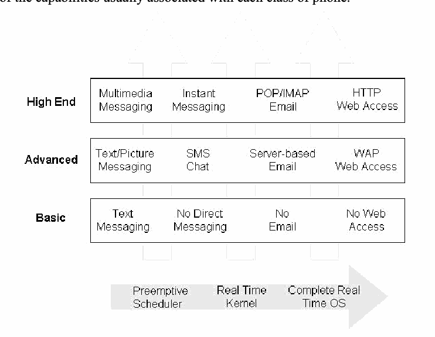
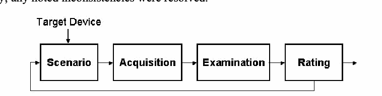

NIST IR 7387 日本語訳
英語タイトル : Cell Phone Forensic Tools: an Overview and Analysis Update日本語タイトル : 携帯電話フォレンジックツール：概要と分析の更新
公開日 : 2007-03-21
原文URL : https://csrc.nist.gov/pubs/ir/7387/final
原本 PDF : https://doi.org/10.6028/NIST.IR.7387
訳文 : 有志による非公式の日本語訳（AI による翻訳とレビュー）。全 1471 段落のうち 1417 段落を翻訳済み（原文取得日 : 2026-10-31）
[要約] NIST IR 7387 は、セルラーハンドヘルドデバイスで見つかったデータの取得、検査、報告のために設計された現行のフォレンジックツールの概要と、その機能と制約についての理解を示した報告書です。本書は NISTIR 7250 の後続であり、その刊行以降に大幅な更新があったツールや、以前は扱っていなかったツールに焦点を当てています。目的は、CDMA、TDMA、GSM の各ネットワーク上で動作し、Symbian、RIM、Palm OS、Pocket PC、Linux などを実行する携帯電話から情報を取得できるツールの機能について、法執行機関、インシデント対応チームの構成員、フォレンジック検査官に情報を提供することです。個々のツールの概要に加え、PDA、携帯電話、SIM カードの取得を扱うシナリオの結果を示しています。
［NIST のロゴ。公的な標章のため、この非公式サイトには掲載していません。原本 PDF を参照してください。］
NISTIR 7387
NISTIR 7387
Cell Phone Forensic Tools: An Overview and Analysis Update
携帯電話フォレンジックツール: 概要と分析の更新
Rick Ayers Wayne Jansen Ludovic Moenner Aurelien Delaitre
Rick Ayers Wayne Jansen Ludovic Moenner Aurelien Delaitre
NISTIR 7387
NISTIR 7387
Cell Phone Forensic Tools: An Overview and Analysis Update
携帯電話フォレンジックツール: 概要と分析の更新
Rick Ayers Wayne Jansen Aurelien Delaitre Ludovic Moenner
Rick Ayers Wayne Jansen Aurelien Delaitre Ludovic Moenner
COMPUTER SECURITY
コンピューターセキュリティ
Computer Security Division Information Technology Laboratory National Institute of Standards and Technology Gaithersburg, MD 20899-8930
Computer Security Division Information Technology Laboratory National Institute of Standards and Technology Gaithersburg, MD 20899-8930
March 2007
2007 年 3 月
U.S. Department of Commerce Carlos M. Gutierrez, Secretary
米国商務省 Carlos M. Gutierrez 長官
Technology Administration Robert Cresanti, Acting Under Secretary of Commerce for Technology
技術局 Robert Cresanti、商務次官代理（技術担当）
National Institute of Standards and Technology William A. Jeffrey, Director
米国国立標準技術研究所 William A. Jeffrey、所長
Reports on Computer Systems Technology
コンピューターシステム技術に関する報告書
The Information Technology Laboratory (ITL) at the National Institute of Standards and Technology (NIST) promotes the U.S. economy and public welfare by providing technical leadership for the Nation’s measurement and standards infrastructure. ITL develops tests, test methods, reference data, proof of concept implementations, and technical analysis to advance the development and productive use of information technology. ITL’s responsibilities include the development of technical, physical, administrative, and management standards and guidelines for the cost-effective security and privacy of sensitive unclassified information in Federal computer systems. This Interagency Report discusses ITL’s research, guidance, and outreach efforts in computer security, and its collaborative activities with industry, government, and academic organizations.
National Institute of Standards and Technology（NIST）の Information Technology Laboratory（ITL）は、国の計測および標準のインフラストラクチャーに対する技術的な指導力を発揮することで、米国の経済と公共の福祉を促進しています。ITL は、情報技術の開発と生産的な利用を前進させるため、テスト、テスト方法、参照データ、概念実証実装、技術分析を開発しています。ITL の責務には、連邦コンピューターシステムにおける機密扱いでない機微な情報のセキュリティとプライバシーを費用対効果よく確保するための、技術的、物理的、管理的、運用管理上の標準およびガイドラインの開発が含まれます。この Interagency Report は、コンピューターセキュリティにおける ITL の研究、ガイダンス、アウトリーチ活動と、産業界、政府機関、学術機関との共同活動について論じます。
National Institute of Standards and Technology Interagency Report 164 pages (2007)
National Institute of Standards and Technology Interagency Report 164 ページ（2007 年）
Certain commercial entities, equipment, or materials may be identified in this document in order to describe an experimental procedure or concept adequately. Such identification is not intended to imply recommendation or endorsement by the National Institute of Standards and Technology, nor is it intended to imply that the entities, materials, or equipment are necessarily the best available for the purpose.
本書では、実験の手順や概念を適切に説明するために、特定の商業組織、機器、または資材を挙げている場合があります。こうした記載は、National Institute of Standards and Technology による推奨や支持を意味するものではなく、挙げた組織、資材、または機器がその目的に利用可能なもののうち必ずしも最良であることを意味するものでもありません。
Abstract
概要
Cell phones and other handheld devices incorporating cell phone capabilities (e.g., Personal Digital Assistant [PDA] phones) are ubiquitous. Rather than just placing calls, most phones allow users to perform additional tasks, including Short Message Service (SMS) messaging, Multi-Media Messaging Service (MMS) messaging, Instant Messaging (IM), electronic mail, Web browsing, and basic Personal Information Management (PIM) applications (e.g., phone and date book). PDA phones, often referred to as smart phones, provide users with the combined capabilities of both a cell phone and a PDA. In addition to network services and basic PIM applications, one can manage more extensive appointment and contact information, review electronic documents, give a presentation, and perform other tasks.
携帯電話と、携帯電話の機能を備えたその他のハンドヘルドデバイス（たとえば Personal Digital Assistant（PDA）フォン）は広く普及しています。ほとんどの電話機では、通話だけでなく、Short Message Service（SMS）メッセージング、Multi-Media Messaging Service（MMS）メッセージング、Instant Messaging（IM）、電子メール、Web 閲覧、基本的な Personal Information Management（PIM）アプリケーション（たとえば電話帳やスケジュール帳）といった追加の作業を行えます。PDA フォンは、スマートフォンと呼ばれることが多く、携帯電話と PDA の両方の機能を組み合わせて利用者に提供します。ネットワークサービスや基本的な PIM アプリケーションに加えて、より広範な予定や連絡先の情報を管理し、電子文書を確認し、プレゼンテーションを行い、その他の作業を実行できます。
All but the most basic phones provide individuals with some ability to load additional applications, store and process personal and sensitive information independently of a desktop or notebook computer, and optionally synchronize the results at some later time. As digital technology evolves, the existing capabilities of these devices continue to improve rapidly. When cell phones or other cellular devices are involved in a crime or other incident, forensic examiners require tools that allow the proper retrieval and speedy examination of information present on the device. This report provides an overview on current tools designed for acquisition, examination, and reporting of data discovered on cellular handheld devices, and an understanding of their capabilities and limitations. It is a follow-on to NISTIR 7250 Cell Phone Forensic Tools: An Overview and Analysis•, which focuses on tools that have undergone significant updates since that publication or were not covered previously.
最も基本的な電話機を除くすべての電話機は、追加のアプリケーションをロードし、デスクトップコンピューターやノートブックコンピューターとは独立して個人情報や機微な情報を保存・処理し、必要に応じて後でその結果を同期する機能を、ある程度は個人に提供します。デジタル技術が進化するにつれ、これらのデバイスの既存の機能は急速に向上し続けています。携帯電話やその他のセルラーデバイスが犯罪やその他のインシデントに関与した場合、フォレンジック検査官には、デバイス上に存在する情報の適切な取り出しと迅速な検査を可能にするツールが必要です。本報告書は、セルラーハンドヘルドデバイスで見つかったデータの取得、検査、報告のために設計された現行のツールの概要と、それらの機能および制約についての理解を提供します。本報告書は NISTIR 7250 Cell Phone Forensic Tools: An Overview and Analysis• の後続であり、その刊行以降に大幅な更新があったツールや、以前は扱っていなかったツールに焦点を当てます。
Purpose and Scope
目的と適用範囲
The purpose of this report is to inform law enforcement, incident response team members, and forensic examiners about the capabilities of present day forensic software tools that have undergone significant updates or were not mentioned in the previous report Cell Phone Forensic Tools: An Overview and Analysis. These tools have the ability to acquire information from cell phones operating over Code Division Multiple Access (CDMA), Time Division Multiple Access (TDMA), Global System for Mobile communications (GSM) cellular networks and running various operating systems, including Symbian, Research in Motion (RIM), Palm OS, Pocket PC, and Linux.
本報告書の目的は、大幅な更新があった、あるいは前回の報告書 Cell Phone Forensic Tools: An Overview and Analysis で触れていなかった現在のフォレンジックソフトウェアツールの機能について、法執行機関、インシデント対応チームの構成員、フォレンジック検査官に情報を提供することです。これらのツールは、Code Division Multiple Access（CDMA）、Time Division Multiple Access（TDMA）、Global System for Mobile communications（GSM）の各セルラーネットワーク上で動作し、Symbian、Research in Motion（RIM）、Palm OS、Pocket PC、Linux などのさまざまなオペレーティングシステムを実行する携帯電話から、情報を取得できます。
An overview of each tool describes the functional scope and services provided for acquiring and analyzing evidence contained on cell phones and PDA phones. Generic scenarios were devised to mirror situations that arise during a forensic examination of these devices and their associated media. The scenarios are structured to reveal how selected tools react under various situations. Although generic scenarios were used in analyzing forensic tools, the procedures are not intended to serve as a formal product test or as a comprehensive evaluation. Additionally, no claims are made on the comparative benefits of one tool versus another. Instead, the report offers a broad and probing perspective on the state of the art of present-day forensic software tools for cell phones and PDA phones. Alternatives to using a forensic software tool for digital evidence recovery, such as desoldering and removing memory from a device to read out its contents or using a built-in hardware test interface to access memory directly, are outside the scope of this report.
各ツールの概要では、携帯電話や PDA フォン上に存在する証拠の取得と分析のために提供される機能の範囲とサービスを説明します。これらのデバイスとその関連メディアのフォレンジック検査中に生じる状況を反映するよう、汎用的なシナリオを考案しました。シナリオは、選択したツールがさまざまな状況下でどのように反応するかを明らかにするように構成されています。フォレンジックツールの分析には汎用的なシナリオを使用しましたが、その手順は、正式な製品テストや包括的な評価の役割を果たすことを意図したものではありません。さらに、あるツールが別のツールより優れているという比較上の利点に関する主張は行っていません。むしろ、本報告書は、携帯電話や PDA フォン向けの現在のフォレンジックソフトウェアツールの最新状況について、幅広く掘り下げた見方を提供します。デジタル証拠の復元にフォレンジックソフトウェアツールを使用する代わりの方法、たとえば、デバイスからメモリをはんだ除去して取り外し、その内容を読み出す方法や、組み込みのハードウェアテストインターフェースを使用してメモリに直接アクセスする方法は、本報告書の適用範囲外です。
It is important to distinguish this effort from the Computer Forensics Tool Testing (CFTT) project, whose objective is to provide measurable assurance to practitioners, researchers, and other users that the tools used in computer forensics investigations provide accurate results. Accomplishing this goal requires the development of rigorous specifications and test methods for computer forensics tools and the subsequent testing of specific tools against those specifications, which goes far beyond the analysis described in this document. The CFTT is the joint effort of the National Institute of Justice, the National Institute of Standards and Technology (NIST), the Office of Law Enforcement Standards (OLES), the U.S. Department of Defense, Federal Bureau of Investigation (FBI), U.S. Secret Service, the U.S. Immigration and Customs Enforcement (ICE), and other related agencies.•
この取り組みを、Computer Forensics Tool Testing（CFTT）プロジェクトと区別することが重要です。CFTT プロジェクトの目的は、コンピューターフォレンジック調査で使用されるツールが正確な結果を提供するという測定可能な保証を、実務者、研究者、その他の利用者に提供することです。この目標を達成するには、コンピューターフォレンジックツールの厳密な仕様とテスト方法を策定し、その後、特定のツールをそれらの仕様に照らしてテストする必要があり、これは本書で説明する分析をはるかに超えるものです。CFTT は、National Institute of Justice、National Institute of Standards and Technology（NIST）、Office of Law Enforcement Standards（OLES）、米国国防総省、Federal Bureau of Investigation（FBI）、米国シークレットサービス、U.S. Immigration and Customs Enforcement（ICE）、およびその他の関連機関による共同の取り組みです。•
The publication is not to be used as a step-by-step guide for executing a proper forensic investigation involving cell phones and PDA phones, or construed as legal advice. Its purpose is to inform readers of the various technologies available and areas for consideration when employing them. Before applying the material in this report, readers are advised to consult with management and legal officials for compliance with laws and regulations (i.e., local, state, federal, and international) that pertain to their situation.
本刊行物は、携帯電話や PDA フォンに関わる適切なフォレンジック調査を実施するための段階的な手引きとして使用するものではなく、法的助言と解釈するものでもありません。その目的は、利用可能なさまざまな技術と、それらを採用する際に考慮すべき領域について、読者に情報を提供することです。本報告書の内容を適用する前に、読者は、自身の状況に関連する法令および規則（すなわち、地方、州、連邦、国際）への準拠について、管理者および法務担当者に相談することを勧められています。
Audience
対象読者
The primary audience of the Cell Phone Forensic Tool document is law enforcement, incident response team members, and forensic examiners who are responsible for conducting forensic procedures related to cell phone devices and associated removable media.
Cell Phone Forensic Tool 文書の主な対象読者は、携帯電話デバイスおよび関連するリムーバブルメディアに関するフォレンジック手順の実施を担当する、法執行機関、インシデント対応チームの構成員、フォレンジック検査官です。
Table of Contents
目次
Acknowledgements
謝辞
The authors, Rick Ayers, Wayne Jansen, Aurelien Delaitre, and Ludovic Moenner wish to express their gratitude to colleagues who reviewed drafts of this document. In particular, their appreciation goes to Karen Scarfone, Murugiah Souppaya and Tim Grance from NIST, Rick Mislan from Purdue University, and Lee Reiber from Mobile Forensics for their research, technical support, and written contributions to this document. The authors would also like to express thanks to all others who assisted with our internal review process.
著者の Rick Ayers、Wayne Jansen、Aurelien Delaitre、Ludovic Moenner は、本書の草案をレビューしてくれた同僚に感謝の意を表します。とりわけ、NIST の Karen Scarfone、Murugiah Souppaya、Tim Grance、Purdue University の Rick Mislan、Mobile Forensics の Lee Reiber には、本書への研究、技術的支援、執筆による貢献に対して謝意を表します。著者はまた、内部レビューの過程で支援してくれたほかのすべての方々にも感謝します。
This report was sponsored in part by Dr. Bert Coursey of the Department of Homeland Security (DHS). The Department’s support and guidance in this effort are greatly appreciated.
本報告書は、Department of Homeland Security（DHS）の Dr. Bert Coursey による一部支援を受けて作成されました。同省の支援と指導に深く感謝します。
Introduction
はじめに
Computer forensics involves the identification, preservation, extraction, documentation, and analysis of computer data. Computer forensic examiners follow clear, well-defined methodologies and procedures that can be adapted for specific situations. Such methodologies consist of the following steps:
コンピューターフォレンジックには、コンピューターデータの識別、保全、抽出、文書化、分析が含まれます。コンピューターフォレンジックの検査官は、特定の状況に合わせて調整できる、明確で十分に定義された方法論と手順に従います。そうした方法論は、次の手順で構成されます。
•Prepare a forensic copy (i.e., an identical bit-for-bit physical copy) of the acquired digital media, while preserving the acquired media’s integrity.
•取得したデジタルメディアのフォレンジックコピー（すなわち、ビット単位で同一の物理コピー）を作成し、その際、取得したメディアの完全性を保全します。
•Examine the forensic copy to recover information.
•フォレンジックコピーを検査して、情報を復元します。
•Analyze the recovered information and develop a report documenting any pertinent information uncovered.
•復元した情報を分析し、判明した関連情報を文書化した報告書を作成します。
Forensic toolkits are intended to facilitate the work of examiners, allowing them to perform the above steps in a timely and structured manner, and improve the quality of the results. This paper discusses available forensic software tools for handheld cellular devices, highlighting the facilities offered and associated capabilities.
フォレンジックツールキットは、検査官の作業を容易にすることを目的としており、検査官が上記の手順をタイムリーかつ体系的に実行できるようにし、結果の品質を向上させます。本稿では、ハンドヘルドセルラーデバイス向けに利用可能なフォレンジックソフトウェアツールを取り上げ、提供される機能とそれに関連する能力を明らかにします。
Forensic software tools strive to address a wide range of applicable devices and handle the most common investigative situations with modest skill level requirements. These tools typically perform logical acquisitions using common protocols for synchronization, debugging, and communications. More complicated situations, such as the recovery of deleted data, often require highly specialized hardware-based tools and expertise, which is not within the scope of this report.
フォレンジックソフトウェアツールは、幅広い対象デバイスに対応し、高い技能水準を必要とせずに、最も一般的な調査状況を処理することを目指しています。こうしたツールは通常、同期、デバッグ、通信のための一般的なプロトコルを使用して、論理取得を実行します。削除されたデータの復元などのより複雑な状況では、高度に専門化したハードウェアベースのツールと専門知識が必要になることが多く、それらは本報告書の適用範囲外です。
Handheld device forensics is a fairly new and emerging subject area within the computer forensics field, which traditionally emphasized individual workstations and network servers. Discrepancies between handheld device forensics and classical computer forensics exist due to several factors, including the following, which constrain the way in which the tools operate:
ハンドヘルドデバイスのフォレンジックは、個々のワークステーションとネットワークサーバーを伝統的に重視してきたコンピューターフォレンジックの分野の中では、かなり新しく、台頭しつつある主題領域です。ハンドヘルドデバイスのフォレンジックと従来のコンピューターフォレンジックとの間には、次のようないくつかの要因による相違があり、それらがツールの動作の仕方を制約しています。
•The orientation toward mobility (e.g., compact size and battery powered, requiring specialized interfaces, media, and hardware)
•モビリティを重視した設計（たとえば、小型でバッテリー駆動であり、専用のインターフェース、メディア、ハードウェアが必要）
•The filesystem residing in volatile memory versus non-volatile memory on certain systems
•一部のシステムでは、ファイルシステムが不揮発性メモリではなく揮発性メモリ上に存在すること
•Hibernation behavior, suspending processes when powered off or idle, but remaining active
•ハイバネーション動作。電源オフ時やアイドル時にプロセスを一時停止しつつ、アクティブな状態を維持する
•The diverse variety of embedded operating systems used
•使用される組み込みオペレーティングシステムが多種多様であること
•Short product cycles for introducing new handheld devices
•新しいハンドヘルドデバイスを投入する製品サイクルが短いこと
Most cell phones offer comparable sets of basic capabilities. However, the various families of devices on the marketplace differ in such areas as the hardware technology, advanced feature set, and physical format. This paper looks at forensic software tools for a number of popular platforms, including Symbian, Research In Motion (RIM), Pocket PC, and Palm OS devices. Together these platforms comprise the majority of the so-called smart phone devices currently available and in use. More basic phones, produced by various manufacturers and operational on various types of cellular networks are also addressed in the paper.
ほとんどの携帯電話は、同程度の基本機能を提供します。しかし、市場にあるさまざまなデバイスファミリーは、ハードウェア技術、高度な機能セット、物理的な形状などの面で異なります。本稿では、Symbian、Research In Motion（RIM）、Pocket PC、Palm OS デバイスなど、普及しているいくつかのプラットフォーム向けのフォレンジックソフトウェアツールを調べます。これらのプラットフォームを合わせると、現在入手可能で使用されている、いわゆるスマートフォンデバイスの大部分を占めます。さまざまな製造者によって製造され、さまざまな種類のセルラーネットワークで動作する、より基本的な電話機についても、本稿で扱います。
The remaining sections provide an overview of cell phones, memory cards, and forensic toolkits; describe the scenarios used to analyze the various tools and toolkits; present the findings from applying the scenarios; and summarize the conclusions drawn. The reader is assumed to have some background in computer forensics and technology. The reader should also be apprised that the tools discussed in the report are rapidly evolving, with new versions and better capabilities available regularly. The tool manufacturer should always be contacted for up-to-date information.
以降の節では、携帯電話、メモリカード、フォレンジックツールキットの概要を示し、さまざまなツールとツールキットの分析に使用したシナリオを説明し、シナリオを適用して得られた所見を提示し、導いた結論をまとめます。読者には、コンピューターフォレンジックと技術に関する一定の予備知識があることを前提としています。また、本報告書で論じるツールは急速に進化しており、新しいバージョンやより優れた機能が定期的に利用可能になることを、読者は承知しておくべきです。最新の情報については、常にツールの製造者に問い合わせるべきです。
Background
背景
Cell phones are highly mobile communications devices that can do an array of functions ranging from that of a simple digital organizer to that of a low-end personal computer. Designed for mobility, they are compact in size, battery powered, and lightweight, often use proprietary interfaces or operating systems, and may have unique hardware characteristics for product differentiation. Overall, they can be classified as basic phones that are primarily simple voice and messaging communication devices; advanced phones that offer additional capabilities and services for multimedia; and smart phones or high-end phones that merge the capabilities of an advanced phone with those of a Personal Digital Assistant (PDA).
携帯電話は、移動性の高い通信デバイスであり、単純なデジタル手帳のものから低価格帯のパーソナルコンピューターのものまで、さまざまな機能を実行できます。移動性を重視して設計されているため、小型でバッテリー駆動の軽量なものであり、独自のインターフェースやオペレーティングシステムを使用することが多く、製品の差別化のために独特なハードウェア特性を備えている場合があります。全体として、携帯電話は、主として単純な音声およびメッセージング通信のデバイスである基本電話機、マルチメディア向けの追加の機能とサービスを提供する高機能電話機、高機能電話機の能力と Personal Digital Assistant（PDA）の能力を統合したスマートフォンまたはハイエンド電話機に分類できます。
Figure 1 gives an overview of the hardware characteristics of basic, advanced, and high-end cell phones for display quality, processing and storage capacity, memory and I/O expansion, built-in communications, and video and image capture. The bottom of the diagram shows the range of cellular voice and data advances from kilobit analog networks, still in use today, to megabit 3rd generation digital networks in the planning and early deployment stages. The diagram attempts to illustrate that more capable phones can capture and retain not only more information, but also more varied information, through a wider variety of sources, including removable memory modules, other wireless interfaces, and built-in hardware. Note that hardware components can and do vary from those assignments made in the diagram and, over time, technology once considered high end or advanced eventually appears in what would then be considered a basic phone.
図 1 は、基本電話機、高機能電話機、ハイエンド電話機のハードウェア特性について、表示品質、処理能力と記憶容量、メモリと I/O の拡張、内蔵の通信機能、動画と画像の撮影という観点から概観したものです。図の下部は、現在も使用されている kbit 級のアナログネットワークから、計画および初期展開の段階にある Mbit 級の第 3 世代（3rd）デジタルネットワークまで、セルラーの音声およびデータの進歩の幅を示しています。この図は、より高機能な電話機が、リムーバブルメモリモジュール、その他の無線インターフェース、内蔵ハードウェアなど、より多様な情報源を通じて、より多くの情報だけでなく、より多様な情報も取り込み、保持できることを示そうとしています。ハードウェアコンポーネントは、図の割り当てとは異なる場合があり、実際に異なっていること、また、かつてはハイエンドまたは高機能と見なされていた技術が、時間の経過とともに、その時点で基本電話機と見なされるものにも現れることに注意してください。
![Diagram of phone hardware components by class. Three rows of boxes over upward arrows: "High End": 16-Bit Color Display, Superior Storage & Processing, Memory-I/O Card Slot, IrDA, WIFI, & Bluetooth, Video & Still Camera. "Advanced": 12-Bit Color Display, Additional Storage & Processing, Memory Card Slot, IrDA & Bluetooth, Still Camera. "Basic": Grayscale Display, Limited Storage & Processing, No Expansion, IrDA, No Video. A horizontal arrow at the bottom runs from Analog through 1st Generation Digital and 2nd Generation Digital to 3rd Generation Digital.](assets/ir-7387/p0014-figure-01.png)
携帯電話の種類ごとのハードウェア構成要素の図です。上向きの矢印の上に 3 段の枠があります。「High End」（ハイエンド）: 16-Bit Color Display（16 ビットカラー表示）、Superior Storage & Processing（優れた記憶容量と処理能力）、Memory-I/O Card Slot（メモリー/I/O カードスロット）、IrDA, WIFI, & Bluetooth、Video & Still Camera（動画・静止画カメラ）。「Advanced」（アドバンスト）: 12-Bit Color Display（12 ビットカラー表示）、Additional Storage & Processing（追加の記憶容量と処理能力）、Memory Card Slot（メモリーカードスロット）、IrDA & Bluetooth、Still Camera（静止画カメラ）。「Basic」（ベーシック）: Grayscale Display（グレースケール表示）、Limited Storage & Processing（限られた記憶容量と処理能力）、No Expansion（拡張なし）、IrDA、No Video（動画なし）。下部の横向きの矢印は Analog（アナログ）から 1st Generation Digital（第 1 世代デジタル）、2nd Generation Digital（第 2 世代デジタル）を経て 3rd Generation Digital（第 3 世代デジタル）へ進みます。
Figure 1: Phone Hardware Components
図 1: 電話機のハードウェアコンポーネント
Just as with hardware components, software components involved in communications vary with the class of phone. Basic phones normally include text messaging using the Short Message Service (SMS). An advanced phone might add the ability to send simple picture messages or lengthy text messages using the Extended Message Service (EMS), while a high-end phone typically supports the Multimedia Message Service (MMS) to exchange sounds, color images, and text. Similarly, the ability to chat online directly with another user may be unsupported, supported through a dedicated SMS channel, or supported with a full Instant Messaging (IM) client. High-end phones typically support full function email and Web clients that respectively use Post Office Protocol (POP)/Internet Message Access Protocol (IMAP)/Simple Mail Transfer Protocol (SMTP) and HTTP, while advanced phones provide those services via Wireless Application Protocol (WAP), and basic phones do not include any support. Figure 2 gives an overview of the capabilities usually associated with each class of phone.
ハードウェアコンポーネントと同様に、通信に関わるソフトウェアコンポーネントも、電話機のクラスによって異なります。基本電話機には通常、Short Message Service（SMS）を使用したテキストメッセージングが含まれます。高機能電話機では、簡単な画像メッセージや、Extended Message Service（EMS）を使用した長文のテキストメッセージを送信する機能が加わることがあり、ハイエンド電話機は通常、音声、カラー画像、テキストをやり取りするための Multimedia Message Service（MMS）をサポートします。同様に、別の利用者と直接オンラインでチャットする機能は、サポートされていない場合、専用の SMS チャネルを通じてサポートされる場合、完全な Instant Messaging（IM）クライアントでサポートされる場合があります。ハイエンド電話機は通常、それぞれ Post Office Protocol（POP）/Internet Message Access Protocol（IMAP）/Simple Mail Transfer Protocol（SMTP）と HTTP を使用する、フル機能の電子メールクライアントと Web クライアントをサポートします。高機能電話機はそれらのサービスを Wireless Application Protocol（WAP）経由で提供し、基本電話機はいかなるサポートも含みません。図 2 は、各クラスの電話機に通常関連付けられる機能を概観したものです。

携帯電話の種類ごとのソフトウェア構成要素の図です。上向きの矢印の上に 3 段の枠があります。「High End」（ハイエンド）: Multimedia Messaging（マルチメディアメッセージング）、Instant Messaging（インスタントメッセージング）、POP/IMAP Email、HTTP Web Access（HTTP による Web アクセス）。「Advanced」（アドバンスト）: Text/Picture Messaging（テキスト・画像メッセージング）、SMS Chat（SMS チャット）、Server-based Email（サーバー型電子メール）、WAP Web Access（WAP による Web アクセス）。「Basic」（ベーシック）: Text Messaging（テキストメッセージング）、No Direct Messaging（直接メッセージングなし）、No Email（電子メールなし）、No Web Access（Web アクセスなし）。下部の横向きの矢印は Preemptive Scheduler（プリエンプティブスケジューラー）から Real Time Kernel（リアルタイムカーネル）を経て Complete Real Time OS（完全なリアルタイム OS）へ進みます。
Figure 2: Phone Software Components
図 2: 電話機のソフトウェアコンポーネント
Most basic and many advanced phones rely on proprietary real-time operating systems developed by the manufacturer. Commercially embedded operating systems for cellular devices are also available that range from a basic preemptive scheduler with support for a few other key system calls to more sophisticated kernels with scheduling alternatives, memory management support, device drivers, and exception handling, to complete embedded real-time operating systems. The bottom of Figure 2 illustrates this range.
ほとんどの基本電話機と多くの高機能電話機は、製造者が開発した独自のリアルタイムオペレーティングシステムに依存しています。セルラーデバイス向けの市販の組み込みオペレーティングシステムも入手可能であり、その範囲は、他のいくつかの主要なシステムコールをサポートする基本的なプリエンプティブスケジューラから、スケジューリングの選択肢、メモリ管理のサポート、デバイスドライバー、例外処理を備えたより高度なカーネル、さらには完全な組み込みリアルタイムオペレーティングシステムにまで及びます。図 2 の下部は、この範囲を示しています。
Many high-end smart phones have a PDA heritage, evolving from Palm OS and Pocket PC (also known as Windows mobile) handheld devices. As wireless telephony modules were incorporated into such devices, the operating system capabilities were enhanced to accommodate the functionality. Similarly, the Symbian OS used on many smart phones also stems from an electronic organizer heritage. RIM OS devices, which emphasize push technology for email messaging, are another device family that also falls into the smart phone category.
多くのハイエンドスマートフォンは PDA の系譜を持ち、Palm OS や Pocket PC（Windows mobile とも呼ばれます）のハンドヘルドデバイスから発展しました。無線電話モジュールがそうしたデバイスに組み込まれるにつれ、その機能に対応できるようにオペレーティングシステムの能力が強化されました。同様に、多くのスマートフォンで使用されている Symbian OS も、電子手帳の系譜に由来します。電子メールのメッセージングにおけるプッシュ技術を重視する RIM OS デバイスも、スマートフォンのカテゴリーに入るもう一つのデバイスファミリーです。
Subscriber Identity Module
加入者識別モジュール
Another useful way to classify cellular devices is by whether they involve a Subscriber Identity Module (SIM). A SIM is removable card designed for insertion into a device, such as a handset. SIMs originated with a set of specifications originally developed by the Conference of European Posts and Telecommunications (CEPT) and continued by the European Telecommunications Standards Institute (ETSI) for Global System for Mobile communications (GSM) networks. GSM standards mandate the use of a SIM for the operation of the phone. Without it, a GSM phone cannot operate. In contrast, present-day Code Division Multiple Access (CDMA) phones do not require a SIM. Instead, SIM functionality is incorporated directly within the device.
セルラーデバイスを分類するもう一つの有用な方法は、Subscriber Identity Module（SIM）を使用するかどうかです。SIM は、ハンドセットなどのデバイスに挿入するように設計された、取り外し可能なカードです。SIM は、もともと Conference of European Posts and Telecommunications（CEPT）が開発し、European Telecommunications Standards Institute（ETSI）が Global System for Mobile communications（GSM）ネットワーク向けに引き継いだ一連の仕様に端を発しています。GSM 標準は、電話機の動作に SIM を使用することを義務付けています。SIM がなければ、GSM 電話機は動作できません。対照的に、現在の Code Division Multiple Access（CDMA）電話機は SIM を必要としません。代わりに、SIM の機能がデバイスに直接組み込まれています。
A SIM is an essential component of a GSM cell phone that contains information particular to the user. A SIM is a special type of smart card that typically contains between 16 to 64 kilobytes (KB) of memory, a processor, and an operating system. A SIM uniquely identifies the subscriber, determines the phone's number, and contains the algorithms needed to authenticate a subscriber to a network. A user can remove the SIM from one phone, insert it into another compatible phone, and resume use without the need to involve the network operator. The hierarchically organized filesystem of a SIM is used to store names and phone numbers, received and sent text messages, and network configuration information. Depending on the phone, some of this information may also coexist in the memory of the phone or reside entirely in the memory of the phone instead of the SIM. While SIMs are most widely used in GSM systems, compatible modules are also used in Integrated Digital Enhanced Network (IDEN) phones and Universal Mobile Telecommunications System (UMTS) user equipment (i.e., a Universal Subscriber Identity Module [USIM]). Because of the flexibility a SIM offers GSM phone users to port their identity and information between devices, eventually all cellular phones are expected to include SIM capability.
SIM は、GSM 携帯電話の必須コンポーネントであり、利用者に固有の情報を含みます。SIM は、通常 16〜64 キロバイト（KB）のメモリ、プロセッサー、オペレーティングシステムを備えた、特殊な種類のスマートカードです。SIM は、加入者を一意に識別し、電話機の番号を決定し、加入者をネットワークに対して認証するために必要なアルゴリズムを含みます。利用者は、SIM をある電話機から取り外し、別の互換性のある電話機に挿入して、ネットワーク事業者を介さずに使用を再開できます。SIM の階層的に構成されたファイルシステムは、名前と電話番号、受信および送信したテキストメッセージ、ネットワーク構成情報を保存するために使用されます。電話機によっては、これらの情報の一部が電話機のメモリにも併存したり、SIM ではなく電話機のメモリにのみ存在したりする場合があります。SIM は GSM システムで最も広く使用されていますが、互換性のあるモジュールは、Integrated Digital Enhanced Network（IDEN）電話機や Universal Mobile Telecommunications System（UMTS）ユーザー機器（すなわち、Universal Subscriber Identity Module [USIM]）でも使用されています。SIM は、GSM 電話機の利用者が自分の ID と情報をデバイス間で移行できる柔軟性を提供するため、最終的にはすべての携帯電話に SIM の機能が含まれると予想されています。
Though two sizes of SIMs have been standardized, only the smaller size shown at left is broadly used in GSM phones today. The module has a width of 25 mm, a height of 15 mm, and a thickness of .76 mm, which is roughly the size of a postage stamp. Its 8-pin connectors are not aligned along a bottom edge as might be expected, but instead form a circular contact pad integral to the smart card chip, which is embedded in a plastic frame. Also, the slot for the SIM card is normally not accessible from the exterior of the phone as with a memory card. When a SIM is inserted into a phone and pin contact is made, a serial interface is used to communicate with the computing platform using a half-duplex protocol. SIMs can be removed from a phone and read using a specialized SIM card reader and software. A SIM can also be placed in a standard-size smart card adapter and read using a conventional smart card reader.
SIM には 2 種類のサイズが標準化されていますが、現在 GSM 電話機で広く使用されているのは、左に示す小さいほうのサイズだけです。このモジュールの幅は 25 mm、高さは 15 mm、厚さは 0.76 mm であり、おおよそ切手ほどの大きさです。8 ピンのコネクターは、予想されるような下端に沿った配置ではなく、プラスチックのフレームに埋め込まれたスマートカードチップと一体になった円形の接点パッドを形成しています。また、SIM カードのスロットは、メモリカードの場合とは異なり、通常は電話機の外部からアクセスできません。SIM を電話機に挿入してピンの接触が確立されると、シリアルインターフェースを使用し、半二重プロトコルでコンピューティングプラットフォームと通信します。SIM は電話機から取り外し、専用の SIM カードリーダーとソフトウェアを使用して読み取ることができます。SIM を標準サイズのスマートカードアダプターに入れ、従来のスマートカードリーダーを使用して読み取ることもできます。
As with any smart card, its contents are protected and a PIN can be set to restrict access. Two PINs exist, sometimes called PIN1 and PIN2 or CHV1 and CHV2. These PINs can be modified or disabled by the user. The SIM allows only a preset number of attempts, usually three, to enter the correct PIN before further attempts are blocked. Entering the correct PIN Unblocking Key (PUK) resets the PIN number and the attempt counter. The PUK can be obtained from the service provider or the network operator based on the SIM’s identity (i.e., its Integrated Circuit Card Identifier [ICCID]). If the number of attempts to enter the PUK correctly exceeds a set limit, normally ten attempts, the card becomes blocked permanently.
あらゆるスマートカードと同様に、SIM の内容は保護されており、アクセスを制限するために PIN を設定できます。PIN は 2 つあり、PIN1 と PIN2、または CHV1 と CHV2 と呼ばれることもあります。これらの PIN は、利用者が変更または無効化できます。SIM は、正しい PIN を入力する試行を、あらかじめ設定された回数（通常は 3 回）までしか許可せず、それを超える試行はブロックされます。正しい PIN Unblocking Key（PUK）を入力すると、PIN と試行カウンターがリセットされます。PUK は、SIM の識別情報（すなわち、Integrated Circuit Card Identifier [ICCID]）に基づいて、サービスプロバイダーまたはネットワーク事業者から入手できます。PUK を正しく入力する試行の回数が設定された上限（通常は 10 回）を超えると、カードは恒久的にブロックされます。
Removable Media
リムーバブルメディア
Removable media extends the storage capacity of a cell phone, allowing individuals to store additional information beyond the device’s built-in capacity. They also provide another avenue for sharing information between users that have compatible hardware. Removable media is non-volatile storage, able to retain recorded data when removed from a device. The main type of removable media for cell phones is a memory card. Though similar to SIMs in size, they follow a different set of specifications and have vastly different characteristics. Some card specifications also allow for I/O capabilities to support wireless communications (e.g., Bluetooth or WiFi) or other hardware (e.g., a camera) to be packaged in the same format.
リムーバブルメディアは、携帯電話の記憶容量を拡張し、デバイスに内蔵された容量を超える情報を個人が保存できるようにします。また、互換性のあるハードウェアを持つ利用者間で情報を共有するための、もう一つの手段にもなります。リムーバブルメディアは不揮発性ストレージであり、デバイスから取り外しても、記録されたデータを保持できます。携帯電話向けのリムーバブルメディアの主な種類は、メモリカードです。サイズは SIM に似ていますが、異なる仕様に従っており、特性は大きく異なります。一部のカード仕様では、無線通信（たとえば Bluetooth や WiFi）やその他のハードウェア（たとえばカメラ）のための I/O 機能も、同じ形式に収めることができます。
A wide array of memory cards exists on the market today for cell phones and other mobile devices. The storage capacities of memory cards range from megabytes (MB) to gigabytes (GB) and come in sizes literally as small as a thumbnail. As technological advances continue, such media is expected to become smaller and offer greater storage densities. Fortunately, such media is normally formatted with a conventional filesystem (e.g., File Allocation Table [FAT]) and can be treated similarly to a disk drive, imaged and analyzed using a conventional forensic tool with a compatible media adapter that supports an Integrated Development Environment (IDE) interface. Such adapters can be used with a write blocker to ensure that the contents remain unaltered. Below is a brief overview of several commonly available types of memory cards used with cell phones.
現在、携帯電話やその他のモバイルデバイス向けに、幅広い種類のメモリカードが市場に出回っています。メモリカードの記憶容量はメガバイト（MB）からギガバイト（GB）に及び、サイズは文字どおり親指の爪ほどの小ささです。技術の進歩が続くにつれて、こうしたメディアはさらに小型化し、より高い記憶密度を提供すると予想されます。幸い、こうしたメディアは通常、従来のファイルシステム（たとえば File Allocation Table [FAT]）でフォーマットされており、ディスクドライブと同様に扱うことができ、Integrated Drive Electronics（IDE）インターフェースをサポートする互換性のあるメディアアダプターを備えた従来のフォレンジックツールを使用して、イメージ化と分析ができます。こうしたアダプターは、内容が変更されないようにするため、書き込みブロッカーとともに使用できます。以下に、携帯電話で使用される、一般に入手可能なメモリカードのいくつかの種類について簡単に概観します。
Multi-Media Cards (MMC):1 A Multi-Media Card (MMC) is a solid-state disk card with a 7-pin connector. MMC cards have a 1-bit data bus. They are designed with flash technology, a non-volatile storage technology that retains information once power is removed from the card. Multi-Media Cards are about the size of a postage stamp (length-32 mm, width-24 mm, and thickness-1.4 mm). Reduced Size Multi-Media cards (RS-MMC) also exist. They are approximately one-half the size of the standard MMC card (length-18mm, width-24mm, and thickness-1.4mm). An RS-MMC can be used in a full-size MMC slot with a mechanical adapter. A regular MMC card can be also used in an RS-MMC card slot, though part of it will stick out from the slot. MMCplus and MMCmobile are higher performance variants of MMC and RS-MMC cards respectively that have 13-pin connectors and 8-bit data buses.
Multi-Media Card（MMC）:1 Multi-Media Card（MMC）は、7 ピンのコネクターを備えたソリッドステートディスクカードです。MMC カードのデータバスは 1 ビットです。フラッシュ技術で設計されており、これはカードの電源が切れても情報を保持する不揮発性ストレージ技術です。Multi-Media Card の大きさはおおよそ切手ほどです（長さ 32 mm、幅 24 mm、厚さ 1.4 mm）。Reduced Size Multi-Media カード（RS-MMC）もあります。標準の MMC カードのおよそ半分の大きさです（長さ 18 mm、幅 24 mm、厚さ 1.4 mm）。RS-MMC は、機械的なアダプターを使用して、フルサイズの MMC スロットで使用できます。通常の MMC カードも RS-MMC カードスロットで使用できますが、一部がスロットからはみ出します。MMCplus と MMCmobile は、それぞれ MMC カードと RS-MMC カードの高性能版であり、13 ピンのコネクターと 8 ビットのデータバスを備えています。
Secure Digital (SD) Cards:2 Secure Digital (SD) memory cards (length-32 mm, width-24 mm, and thickness-2.1mm) are comparable to the size and solid-state design of MMC cards. In fact, SD card slots can often accommodate MMC cards as well. However, SD cards have a 9-pin connector and a 4-bit data bus, which afford a higher transfer rate. SD memory cards feature an erasure-prevention switch; keeping the switch in the locked position protects data from accidental deletion. They also offer security controls for content protection (i.e., Content Protection Rights Management). MiniSD cards are an electrically compatible extension of the existing SD card standard in a more compact format (length-21.5 mm, width-20 mm, and thickness-1.4 mm). They run on the same hardware bus as an SD card and also include content protection security features, but have a 11-pin connector and a smaller capacity potential due to size limitations. For backward compatibility, an adapter allows a MiniSD Card to work with existing SD card slots.
Secure Digital（SD）カード:2 Secure Digital（SD）メモリカード（長さ 32 mm、幅 24 mm、厚さ 2.1 mm）は、サイズとソリッドステート設計が MMC カードに匹敵します。実際、SD カードスロットは MMC カードも収容できることがよくあります。ただし、SD カードは 9 ピンのコネクターと 4 ビットのデータバスを備えており、より高い転送速度を実現します。SD メモリカードには、消去防止スイッチがあります。このスイッチをロック位置にしておくと、誤削除からデータを保護できます。また、コンテンツ保護のためのセキュリティ制御（すなわち Content Protection Rights Management）も提供します。MiniSD カードは、既存の SD カード標準を、より小型の形式（長さ 21.5 mm、幅 20 mm、厚さ 1.4 mm）で電気的互換性を保ったまま拡張したものです。SD カードと同じハードウェアバスで動作し、コンテンツ保護のセキュリティ機能も備えていますが、11 ピンのコネクターを備え、サイズの制約により潜在的な容量は小さくなります。後方互換性のため、アダプターを使用すれば、MiniSD カードを既存の SD カードスロットで動作させることができます。
Memory Sticks:3 Memory sticks provide solid-state memory in a size similar to, but smaller than, a stick of gum (length-50mm, width-21.45mm, thickness-2.8mm). They have a 10-pin connector and a 1-bit data bus. As with SD cards, memory sticks also have a built-in erasure-prevention switch to protect the contents of the card. Memory Stick PRO cards offer higher capacity and transfer rates than standard Memory Sticks, using a 10-pin connector, but with a 4-bit data bus. Memory Stick Duo and Memory Stick PRO Duo, smaller versions of the Memory Stick and Memory Stick PRO, are about two-thirds the size of the standard memory stick (length-31mm, width-20mm, thickness-1.6mm). An adapter is required for a Memory Stick Duo or a Memory Stick PRO Duo to work with standard Memory Stick slots.
Memory Stick:3 Memory Stick は、ガム 1 枚に似ていますがそれより小さいサイズ（長さ 50 mm、幅 21.45 mm、厚さ 2.8 mm）で、ソリッドステートメモリを提供します。10 ピンのコネクターと 1 ビットのデータバスを備えています。SD カードと同様に、Memory Stick にも、カードの内容を保護するための消去防止スイッチが内蔵されています。Memory Stick PRO カードは、標準の Memory Stick より大きな容量と高い転送速度を提供し、10 ピンのコネクターを使用しますが、データバスは 4 ビットです。Memory Stick Duo と Memory Stick PRO Duo は、Memory Stick と Memory Stick PRO の小型版で、標準の Memory Stick のおよそ 3 分の 2 の大きさです（長さ 31 mm、幅 20 mm、厚さ 1.6 mm）。Memory Stick Duo や Memory Stick PRO Duo を標準の Memory Stick スロットで動作させるには、アダプターが必要です。
TransFlash:4 TransFlash, recently renamed MicroSD, is an extremely small size card (length-15 mm, width-11 mm, and thickness-1 mm). Because frequent removal and handling can be awkward, they are used more as a semi-removable memory module. TransFlash cards have an 8-pin connector and a 4-bit data bus. An adapter allows a TransFlash card to be used in SD-enabled devices. Similarly, the MMCmicro device is another ultra small card (length-14 mm, width-12 mm, and thickness-1.1 mm), compatible with MMC-enabled devices via an adapter. MMCmicro cards have a 11-pin connector and a 4-bit data bus. More recently, the Memory Stick Micro card has emerged, which is also ultra small (length-12.5 mm, width-15 mm, and thickness-1.2 mm) and, with an appropriate mechanical adaptor, able to be used in devices supporting fuller size cards in the Memory Stick family. Memory Stick Micro cards have an 11-pin connector and a 4-bit data bus
TransFlash:4 TransFlash は、最近 MicroSD に名称が変更された、極めて小さなカード（長さ 15 mm、幅 11 mm、厚さ 1 mm）です。頻繁な取り外しや取り扱いは煩雑になり得るため、半リムーバブルのメモリモジュールとして使用されることが多くなっています。TransFlash カードは、8 ピンのコネクターと 4 ビットのデータバスを備えています。アダプターを使えば、TransFlash カードを SD 対応デバイスで使用できます。同様に、MMCmicro デバイスも超小型のカード（長さ 14 mm、幅 12 mm、厚さ 1.1 mm）であり、アダプターを介して MMC 対応デバイスと互換性があります。MMCmicro カードは、11 ピンのコネクターと 4 ビットのデータバスを備えています。さらに最近では、Memory Stick Micro カードが登場しました。これも超小型（長さ 12.5 mm、幅 15 mm、厚さ 1.2 mm）で、適切な機械的アダプターを使用すれば、Memory Stick ファミリーのより大きなサイズのカードをサポートするデバイスで使用できます。Memory Stick Micro カードは、11 ピンのコネクターと 4 ビットのデータバスを備えています
Forensic Toolkits
フォレンジックツールキット
The variety of forensic toolkits for cell phones and other handheld devices is diverse. A considerable number of software tools and toolkits exist, but the range of devices over which they operate is typically narrowed to distinct platforms for a manufacturer’s product line, a family of operating systems, or a type of hardware architecture. Moreover, the tools require that the examiner have full access to the device (i.e., the device is not protected by some authentication mechanism or the examiner can satisfy any authentication mechanism encountered).
携帯電話やその他のハンドヘルドデバイス向けのフォレンジックツールキットは、多種多様です。ソフトウェアツールやツールキットはかなりの数が存在しますが、それらが動作するデバイスの範囲は、通常、製造者の製品ラインの特定のプラットフォーム、オペレーティングシステムのファミリー、またはハードウェアアーキテクチャーの種類に限られています。さらに、これらのツールでは、検査官がデバイスに完全にアクセスできること（すなわち、デバイスが何らかの認証メカニズムで保護されていない、または検査官が遭遇した認証メカニズムを満たせること）が必要です。
While most toolkits support a full range of acquisition, examination, and reporting functions, some tools focus on a subset. Similarly, different tools may be capable of using different interfaces (e.g., Infrared [IR], Bluetooth, or serial cable) to acquire device contents. The types of information a tool can acquire can range widely and include Personal Information Management (PIM) data (e.g., phone book); logs of phone calls; SMS/EMS/MMS messages, email, and IM content; URLs and content of visited Web sites; audio, video, and image content; SIM content; and uninterrupted image data. Information present on a cell phone can vary depending on several factors, including the following:
ほとんどのツールキットは、取得、検査、報告の全範囲の機能をサポートしていますが、一部のツールはその一部に焦点を当てています。同様に、ツールによって、デバイスの内容を取得するために使用できるインターフェース（たとえば Infrared [IR]、Bluetooth、シリアルケーブル）が異なる場合があります。ツールが取得できる情報の種類は多岐にわたり、Personal Information Management（PIM）データ（たとえば電話帳）、通話履歴、SMS/EMS/MMS メッセージ、電子メール、IM の内容、訪問した Web サイトの URL と内容、音声、動画、画像の内容、SIM の内容、中断のない画像データが含まれます。携帯電話上に存在する情報は、次のようないくつかの要因によって異なる場合があります。
•The inherent capabilities of the phone implemented by the manufacturer
•製造者が実装した電話機固有の機能
•The modifications made to the phone by the service provider or network operator
•サービスプロバイダーまたはネットワーク事業者が電話機に加えた変更
•The network services subscribed to and used by the user
•利用者が契約して使用しているネットワークサービス
•The modifications made to the phone by the user
•利用者が電話機に加えた変更
Acquisition through a cable interface generally yields acquisition results superior to those from other device interfaces. However, although a wireless interface such as infrared or Bluetooth can serve as an alternative when the correct cable is not readily available, it should be used as a last resort due to the possibility of device modification during acquisition. Regardless of the interface used, one must be vigilant about any associated forensic issues. Note too that the ability to acquire the contents of a resident SIM may not be supported by some tools, particularly those strongly oriented toward PDAs. Table 1 lists open source and commercially available tools and the facilities they provide for certain types of cell phones.
ケーブルインターフェースを介した取得は、一般に、ほかのデバイスインターフェースによる取得よりも優れた取得結果をもたらします。ただし、赤外線や Bluetooth などの無線インターフェースは、適切なケーブルをすぐに入手できない場合の代替手段になり得るものの、取得中にデバイスが変更される可能性があるため、最後の手段として使用すべきです。使用するインターフェースにかかわらず、関連するフォレンジック上の問題に常に注意を払う必要があります。また、一部のツール、特に PDA を強く志向したツールでは、内蔵 SIM の内容を取得する機能がサポートされていない場合があることにも注意してください。表 1 に、オープンソースおよび市販のツールと、特定の種類の携帯電話に対してそれらが提供する機能を示します。
Table 1: Cell Phone Tools
表 1: 携帯電話ツール
| Function | Features | |
|---|---|---|
| Device Seizure | Acquisition, Examination, Reporting |
|
| pilot-link | Acquisition |
|
| GSM .XRY | Acquisition, Examination, Reporting |
|
| Oxygen PM (forensic version) | Acquisition, Examination, Reporting |
|
| MOBILedit! Forensic | Acquisition, Examination, Reporting |
|
| BitPIM | Acquisition, Examination |
|
| TULP2G | Acquisition, Reporting |
|
| SecureView | Acquisition, Examination, Reporting |
|
| PhoneBase2 | Acquisition, Examination, Reporting |
|
| CellDEK | Acquisition, Examination, Reporting |
|
| 機能 | 特徴 | |
|---|---|---|
| Device Seizure | 取得、検査、報告 |
|
| pilot-link | 取得 |
|
| GSM .XRY | 取得、検査、報告 |
|
| Oxygen PM (forensic version) | 取得、検査、報告 |
|
| MOBILedit! Forensic | 取得、検査、報告 |
|
| BitPIM | 取得、検査 |
|
| TULP2G | 取得、報告 |
|
| SecureView | 取得、検査、報告 |
|
| PhoneBase2 | 取得、検査、報告 |
|
| CellDEK | 取得、検査、報告 |
|
Because of the way GSM phones are logically and physically partitioned into a handset and SIM, a number of forensic software tools have emerged that deal exclusively with SIMs independently of their handsets. The SIM must be removed from the phone and inserted into an appropriate reader for acquisition. SIM forensic tools require either a specialized reader that accepts a SIM directly or a general-purpose reader for a full-size smart card. For the latter, a standard-size smart card adapter is needed to house the SIM for use with the reader. Table 2 lists several SIM forensic tools. The first seven listed, Device Seizure, TULP2G, GSM .XRY, Mobiledit!, SecureView, PhoneBase2, and CellDEK also handle phone memory acquisition, as noted above.
GSM 電話機は、論理的にも物理的にも、ハンドセットと SIM に分割されているため、ハンドセットとは独立して SIM だけを扱うフォレンジックソフトウェアツールが、いくつも登場しています。取得のためには、SIM を電話機から取り外し、適切なリーダーに挿入する必要があります。SIM フォレンジックツールには、SIM を直接受け入れる専用のリーダー、またはフルサイズのスマートカード用の汎用リーダーが必要です。後者の場合、リーダーで使用するために SIM を収める標準サイズのスマートカードアダプターが必要です。表 2 に、いくつかの SIM フォレンジックツールを示します。最初に挙げた 7 つ、すなわち Device Seizure、TULP2G、GSM .XRY、Mobiledit!、SecureView、PhoneBase2、CellDEK は、上述のとおり、電話機のメモリの取得も扱います。
Table 2: SIM Tools
表 2: SIM ツール
| Function | Features | |
|---|---|---|
| Device Seizure | Acquisition, Examination, Reporting |
|
| TULP2G | Acquisition, Reporting |
|
| GSM .XRY | Acquisition, Examination, Reporting |
|
| Mobiledit! Forensic | Acquisition, Examination, Reporting |
|
| SecureView | Acquisition, Examination, Reporting |
|
| PhoneBase2 | Acquisition, Examination, Reporting |
|
| CellDEK | Acquisition, Examination, Reporting |
|
| SIMIS2 | Acquisition, Examination, Reporting |
|
| ForensicSIM | Acquisition, Examination, Reporting |
|
| Forensic Card Reader | Acquisition, Reporting |
|
| SIMCon | Acquisition, Examination, Reporting |
|
| USIMdetective | Acquisition, Examination, Reporting |
|
| 機能 | 特徴 | |
|---|---|---|
| Device Seizure | 取得、検査、報告 |
|
| TULP2G | 取得、報告 |
|
| GSM .XRY | 取得、検査、報告 |
|
| Mobiledit! Forensic | 取得、検査、報告 |
|
| SecureView | 取得、検査、報告 |
|
| PhoneBase2 | 取得、検査、報告 |
|
| CellDEK | 取得、検査、報告 |
|
| SIMIS2 | 取得、検査、報告 |
|
| ForensicSIM | 取得、検査、報告 |
|
| Forensic Card Reader | 取得、報告 |
|
| SIMCon | 取得、検査、報告 |
|
| USIMdetective | 取得、検査、報告 |
|
Forensic software tools acquire data from a device in one of two ways: physical acquisition or logical acquisition. Physical acquisition implies a bit-by-bit copy of an entire physical store (e.g., a disk drive or RAM chip), while logical acquisition implies a bit-by-bit copy of logical storage objects (e.g., directories and files) that reside on a logical store. The difference lies in the distinction between memory as seen by a process through the operating system facilities (i.e., a logical view), versus memory as seen by the processor and other hardware components (i.e., a physical view). In general, physical acquisition is preferable, since it allows any data remnants present (e.g., unallocated RAM or unused filesystem space) to be examined, which otherwise would go unaccounted in a logical acquisition. Physical device images are generally more easily imported into another tool for examination and reporting. However, a logical acquisition provides a more natural and understandable organization of the information acquired. Thus, if possible, doing both types of acquisition is preferable.
フォレンジックソフトウェアツールがデバイスからデータを取得する方法は、物理取得と論理取得の 2 つのいずれかです。物理取得は、物理ストア全体（たとえば、ディスクドライブや RAM チップ）のビット単位のコピーを意味し、論理取得は、論理ストア上に存在する論理的なストレージオブジェクト（たとえば、ディレクトリやファイル）のビット単位のコピーを意味します。その違いは、プロセスがオペレーティングシステムの機能を通じて見るメモリ（すなわち、論理ビュー）と、プロセッサーやその他のハードウェアコンポーネントが見るメモリ（すなわち、物理ビュー）の区別にあります。一般に、物理取得が望ましいです。これは、存在するデータの残骸（たとえば、未割り当ての RAM や未使用のファイルシステム領域）を検査でき、論理取得ではそれらが把握されないままになるためです。物理デバイスイメージは、一般に、検査と報告のためにほかのツールへ取り込みやすくなります。ただし、論理取得は、取得した情報を、より自然で理解しやすい形に整理します。したがって、可能であれば、両方の種類の取得を行うべきです。
Tools not designed specifically for forensic purposes are questionable and should be thoroughly evaluated before use. Although both forensic and non-forensic software tools generally use the same protocols to communicate with a device, non-forensic tools allow a two-way flow of information in order to populate and manage the device, and they usually do not compute hashes of acquired content for integrity purposes. Documentation also may be limited and source code unavailable for examination, respectively increasing the likelihood of error and decreasing confidence in the results. On the one hand, non-forensic tools might be the only means to retrieve information that could be relevant as evidence. On the other, they might overwrite, append, or otherwise cause information to be lost, if not used carefully.
フォレンジックを目的として特別に設計されていないツールには疑問があり、使用前に十分に評価すべきです。フォレンジックのソフトウェアツールも非フォレンジックのソフトウェアツールも、一般にデバイスとの通信には同じプロトコルを使用しますが、非フォレンジックツールは、デバイスにデータを投入して管理するために情報の双方向の流れを許可し、通常は、完全性のために取得した内容のハッシュを計算しません。また、文書が限られていたり、検査のためのソースコードが入手できなかったりする場合があり、それぞれ誤りの可能性を高め、結果への信頼性を低下させます。一方で、非フォレンジックツールが、証拠として関連する可能性のある情報を取り出す唯一の手段である場合もあります。他方で、慎重に使用しないと、情報を上書きしたり、追記したり、その他の方法で失わせたりするおそれがあります。
The remainder of this chapter provides a brief introduction to each tool used for this report.
本章の以降では、本報告書で使用した各ツールを簡単に紹介します。
Device Seizure
Device Seizure
Paraben’s Device Seizure version 1.1 is a forensic software toolkit that allows forensic examiners to acquire, search, examine, and report data associated with PDAs running Palm OS, Windows CE, or RIM OS, and cell phones operating over CDMA, TDMA, and GSM networks and SIM cards via Paraben’s proprietary RS-232 SIM reader. Device Seizure’s features include the ability to perform a logical and physical acquisition (dependent upon the device type), providing a view of internal memory and relevant information concerning individual files and databases. To acquire data from cell phones using Paraben’s Device Seizure software, the proper cable must be selected from either Paraben’s Toolbox or a compatible cable (e.g., datapilot) to establish a data-link between the phone and the forensic workstation. The type of phone being acquired determines the cable interface. Serial RS-232 and USB data-link connections are established via the phone data port or the under-battery interface connection. Device Seizure uses the MD5 hash function to protect the integrity of acquired files. Additional features include bookmarking of information to be filtered and organized in a report format, searching for text strings within the acquired data, and automatically assembling found images under a single facility.
Paraben 社の Device Seizure バージョン 1.1 は、フォレンジック検査官が、Palm OS、Windows CE、RIM OS を実行する PDA、および CDMA、TDMA、GSM のネットワークで動作する携帯電話と、Paraben 社独自の RS-232 SIM リーダー経由の SIM カードに関連するデータを、取得、検索、検査、報告できるようにするフォレンジックソフトウェアツールキットです。Device Seizure の機能には、（デバイスの種類に応じて）論理取得と物理取得を実行し、内部メモリのビューと個々のファイルやデータベースに関する情報を提供する機能が含まれます。Paraben 社の Device Seizure ソフトウェアで携帯電話からデータを取得するには、電話機とフォレンジックワークステーションの間のデータリンクを確立するために、Paraben 社の Toolbox から適切なケーブルを選択するか、互換性のあるケーブル（たとえば datapilot）を使用する必要があります。取得する電話機の種類によって、ケーブルのインターフェースが決まります。シリアル RS-232 と USB のデータリンク接続は、電話機のデータポートまたはバッテリー下のインターフェース接続を介して確立されます。Device Seizure は、取得したファイルの完全性を保護するために MD5 ハッシュ関数を使用します。追加の機能として、フィルタリングしてレポート形式に整理する情報のブックマーク、取得したデータ内のテキスト文字列の検索、見つかった画像の自動的な一括集約があります。
Pilot-Link
Pilot-Link
pilot-link is an open source software suite originally developed for the Linux community to allow information to be transferred between Linux hosts and Palm OS devices. It runs on several other desktop operating systems besides Linux, including Windows and Mac OS. About thirty command line programs comprise the software suite. To perform a physical and logical dump, pilot-link establishes a connection to the device with the aid of the Hotsync protocol. The two programs of interest to forensic examiners are pi-getram and pi-getrom, which respectively retrieve the physical contents of RAM and ROM from a device. Another useful program is pilot-xfer, which allows the installation of programs and the backup and restoration of databases. pilot-xfer provides a means to acquire the contents of a device logically. The contents retrieved with these utilities can be manually examined with the Palm OS Emulator (POSE), a compatible forensics tool such as EnCase, or a hex editor. pilot-link does not provide hash values of the information acquired, requiring a separate step to be carried out to obtain them.
pilot-link は、もともと Linux コミュニティー向けに開発された、Linux ホストと Palm OS デバイスの間で情報を転送できるようにするオープンソースのソフトウェアスイートです。Linux のほかに、Windows や Mac OS など、いくつかのデスクトップオペレーティングシステムでも動作します。このソフトウェアスイートは、約 30 個のコマンドラインプログラムで構成されています。物理ダンプと論理ダンプを実行するために、pilot-link は Hotsync プロトコルの助けを借りてデバイスへの接続を確立します。フォレンジック検査官にとって重要なプログラムは pi-getram と pi-getrom で、それぞれデバイスから RAM と ROM の物理的な内容を取得します。もう一つの有用なプログラムは pilot-xfer で、プログラムのインストールと、データベースのバックアップおよび復元を行えます。pilot-xfer は、デバイスの内容を論理的に取得する手段を提供します。これらのユーティリティで取得した内容は、Palm OS Emulator（POSE）、EnCase などの互換性のあるフォレンジックツール、または 16 進エディターで手動で検査できます。pilot-link は、取得した情報のハッシュ値を提供しないため、それを得るには別の手順を実行する必要があります。
GSM .XRY
GSM .XRY
Micro Systemation’s SoftGSM .XRY is a forensic software toolkit for acquiring data from GSM, CDMA, 3G phones and SIM/USIM cards. The .XRY unit is able to connect to cell phone devices via IR, Bluetooth or a cable interface. After establishing connectivity, the phone model is identified with a corresponding picture of the phone, the device name, manufacturer, model, serial number (IMEI), Subscriber ID (IMSI), manufacturer code, device clock, and the PC clock. Data acquired from cell phone devices are stored in the .XRY format and cannot be altered, but can be exported into external formats and viewed with third-party applications. After a successful acquisition, the following fields may be populated with data, depending on the phone’s functionality: Summary screen, Case data, General Information, Contacts, Calls, Calendar, SMS, Pictures, Audio, Files, Notes, Tasks, MMS, Network Information, and Video. Graphic files, audio files, and internal files present on the phone can be viewed internally or exported to the forensic workstation for safekeeping or further investigation.
Micro Systemation 社の SoftGSM .XRY は、GSM、CDMA、3G の電話機と SIM/USIM カードからデータを取得するためのフォレンジックソフトウェアツールキットです。.XRY ユニットは、IR、Bluetooth、またはケーブルインターフェースを介して携帯電話デバイスに接続できます。接続を確立した後、電話機のモデルが、対応する電話機の画像、デバイス名、製造者、モデル、シリアル番号（IMEI）、加入者 ID（IMSI）、製造者コード、デバイスのクロック、PC のクロックとともに識別されます。携帯電話デバイスから取得したデータは .XRY 形式で保存され、変更できませんが、外部の形式にエクスポートして、サードパーティのアプリケーションで表示できます。取得に成功すると、電話機の機能に応じて、次のフィールドにデータが入力される場合があります。Summary screen、Case data、General Information、Contacts、Calls、Calendar、SMS、Pictures、Audio、Files、Notes、Tasks、MMS、Network Information、Video。電話機上に存在する画像ファイル、音声ファイル、内部ファイルは、内部で表示することも、保管やさらなる調査のためにフォレンジックワークステーションにエクスポートすることもできます。
Additionally, support exists for the creation of a substitute SIM for an original, using a proprietary rewritable SIM. The substitute SIM created provides the ability to acquire a device while disabling network communications. By providing radio isolation during acquisition, the SIM ID Cloner function eliminates the possibility of incoming data overwriting recoverable information. This added functionality also allows GSM devices that are not readable without a SIM present to be acquired if the SIM is missing.
さらに、独自の書き換え可能な SIM を使用して、元の SIM の代替となる SIM を作成する機能もサポートされています。作成された代替 SIM により、ネットワーク通信を無効にした状態でデバイスを取得できます。SIM ID Cloner 機能は、取得中に電波の遮断を提供することで、着信データが復元可能な情報を上書きする可能性を排除します。この追加機能により、SIM がないと読み取れない GSM デバイスも、SIM が失われている場合に取得できます。
Oxygen Phone Manager
Oxygen Phone Manager
The forensic version of Oxygen Phone Manager (OPM) is available for police departments, law enforcement units, and all government services that wish to use the software for investigative purposes. The forensic version differs from the non-forensic version of OPM by prohibiting any changes in data during acquisition. The previous report (NISTIR 7250 Cell Phone Forensic Tools: An Overview and Analysis) erroneously issued findings using the non-forensic version of Oxygen Phone Manager; therefore, each device was repopulated and re-examined using the forensic version of OPM. The scenario ratings earlier reported in NISTIR 7250 Cell Phone Forensic Tools: An Overview and Analysis are consistent with the findings in the present report using the forensic version of OPM.
Oxygen Phone Manager（OPM）のフォレンジック版は、捜査目的でこのソフトウェアを使用したい警察署、法執行機関、およびすべての政府機関向けに提供されています。フォレンジック版は、取得中のデータの変更をいっさい禁止する点で、OPM の非フォレンジック版と異なります。前回の報告書（NISTIR 7250 Cell Phone Forensic Tools: An Overview and Analysis）では、Oxygen Phone Manager の非フォレンジック版を使用して誤って所見を発表したため、各デバイスにデータを再投入し、OPM のフォレンジック版を使用して再検査しました。NISTIR 7250 Cell Phone Forensic Tools: An Overview and Analysis で以前報告したシナリオの評価は、OPM のフォレンジック版を使用した本報告書の所見と整合しています。
Additionally, Oxygen Phone Manager provides a version of the software for Symbian based devices, allowing examiners to create a cable connection with the aid of an agent installed on the device, otherwise acquisitions must be peformed via Bluetooth or by manually browsing the device. Examiners are advised to take extreme precaution and consult with a forensic specialist when acquiring devices that require modification or Bluetooth connectivity, which may potentially corrupt valuable evidence present on the device.
さらに、Oxygen Phone Manager は Symbian ベースのデバイス向けのソフトウェア版を提供しており、検査官は、デバイスにインストールしたエージェントの助けを借りてケーブル接続を作成できます。そうでない場合、取得は Bluetooth を介して、またはデバイスを手動で閲覧して行う必要があります。変更や Bluetooth 接続を必要とするデバイスを取得する場合、デバイス上に存在する貴重な証拠を破損する可能性があるため、検査官は細心の注意を払い、フォレンジックの専門家に相談するよう助言されています。
OPM allows examiners to acquire data from the device and export the acquired data into multiple supported formats. The OPM software is tailored toward mobile phones and smart phones manufactured by: Nokia, Sony Ericsson, Siemens, Panasonic, Sendo, BenQ and some Samsung models. OPM provides software libraries, ActiveX libraries and components for Borland Delphi to software developers.
OPM では、検査官がデバイスからデータを取得し、取得したデータを、サポートされている複数の形式にエクスポートできます。OPM ソフトウェアは、Nokia、Sony Ericsson、Siemens、Panasonic、Sendo、BenQ、および一部の Samsung 製の携帯電話とスマートフォン向けに調整されています。OPM は、ソフトウェア開発者向けに、ソフトウェアライブラリ、ActiveX ライブラリ、Borland Delphi 用コンポーネントを提供します。
MOBILedit!
MOBILedit!
MOBILedit! Forensic is an application that gives examiners the ability to acquire logically, search, examine and report data from GSM/CDMA/PCS cell phone devices. MOBILedit! is able to connect to cell phone devices via an Infrared (IR) port, a Bluetooth link, or a cable interface. After connectivity has been established, the phone model is identified by its manufacturer, model number, and serial number (IMEI) and with a corresponding picture of the phone. Data acquired from cell phone devices are stored in the .med file format. After a successful acquisition, the following fields are populated with data: subscriber information, device specifics, Phonebook, SIM Phonebook, Missed Calls, Last Numbers Dialed, Received Calls, Inbox, Sent Items, Drafts, Files folder. Items present in the Files folder, ranging from Graphics files to Camera Photos and Tones, depend on the phone’s capabilities. Additional features include the myPhoneSafe.com service, which provides access to the IMEI database to register and check for stolen phones.
MOBILedit! Forensic は、検査官が GSM/CDMA/PCS の携帯電話デバイスのデータを、論理取得、検索、検査、報告できるようにするアプリケーションです。MOBILedit! は、Infrared（IR）ポート、Bluetooth リンク、またはケーブルインターフェースを介して携帯電話デバイスに接続できます。接続を確立した後、電話機のモデルが、製造者、モデル番号、シリアル番号（IMEI）と、対応する電話機の画像によって識別されます。携帯電話デバイスから取得したデータは、.med ファイル形式で保存されます。取得に成功すると、次のフィールドにデータが入力されます。subscriber information、device specifics、Phonebook、SIM Phonebook、Missed Calls、Last Numbers Dialed、Received Calls、Inbox、Sent Items、Drafts、Files folder。Files folder に存在する項目は、Graphics ファイルから Camera Photos や Tones まで、電話機の機能に応じて異なります。追加の機能として、myPhoneSafe.com サービスがあり、IMEI データベースにアクセスして、盗難にあった電話機の登録と確認を行えます。
BitPIM
BitPIM
BitPIM is a phone management program that runs on Windows, Linux and Mac OS and allows the viewing and manipulation of data on cell phones. This data includes the phone book, calendar, wallpapers, ring tones, videos, memo, SMS, callhistory, T9 Database and the embedded filesystem. To acquire data successfully using BitPIM, examiners must have the proper driver and cable to form a connection between the phone and the forensic workstation. BitPIM provides detailed information contained in the help file, outlining supported phones, suggested cables to use with specific phone models, and notes and How-Tos about specific situations. BitPIM is distributed as open source software under the GNU General Public License.
BitPIM は、Windows、Linux、Mac OS で動作する電話機管理プログラムであり、携帯電話上のデータの閲覧と操作を可能にします。このデータには、電話帳、カレンダー、壁紙、着信音、動画、メモ、SMS、callhistory、T9 Database、組み込みファイルシステムが含まれます。BitPIM を使用してデータを正しく取得するには、検査官は、電話機とフォレンジックワークステーションの間の接続を形成するための適切なドライバーとケーブルを用意しなければなりません。BitPIM は、ヘルプファイルに詳細な情報を提供しており、サポートされている電話機、特定の電話機モデルで使用することが推奨されるケーブル、特定の状況に関する注記と How-To の概要を示しています。BitPIM は、GNU General Public License の下で、オープンソースソフトウェアとして配布されています。
TULP2G
TULP2G
TULP2G (2nd generation) is an open source forensic software tool originated by the Netherlands Forensic Institute that allows examiners to extract and read data from mobile cell phones and SIMs. TULP2G requires a forensic workstation running either Windows 2000 or XP, preferably with the latest patches and service pack installed, along with .NET 1.1 SP1. In order to take advantage of newly released 1.1 plug-ins, Windows XP SP2 is required. TULP2G acquires data from mobile phones using a proper data cable, Bluetooth or IrDA connection and a compatible protocol plug-in. Reading SIMs requires a PC/SC-compatible smart card reader and possibly an adapter to convert a small-sized SIM to the standard-size smart card format. Support for the creation of a substitute SIM, using the SIMIC plug-in and a GEM Xpresso test SIMs, provides the ability to acquire devices while disabling network communications,
TULP2G（第 2 世代）は、Netherlands Forensic Institute が開発したオープンソースのフォレンジックソフトウェアツールで、検査官が携帯電話と SIM からデータを抽出して読み取れるようにします。TULP2G には、Windows 2000 または XP を実行するフォレンジックワークステーションが必要で、できれば最新のパッチとサービスパックをインストールし、.NET 1.1 SP1 も必要です。新しくリリースされた 1.1 プラグインを利用するには、Windows XP SP2 が必要です。TULP2G は、適切なデータケーブル、Bluetooth、または IrDA 接続と、互換性のあるプロトコルプラグインを使用して、携帯電話からデータを取得します。SIM の読み取りには、PC/SC 互換のスマートカードリーダーと、場合によっては小型の SIM を標準サイズのスマートカード形式に変換するアダプターが必要です。SIMIC プラグインと GEM Xpresso テスト SIM を使用した代替 SIM の作成に対応しており、ネットワーク通信を無効にした状態でデバイスを取得できます。
SecureView
SecureView
Susteen’s SecureView is a forensic software toolkit that acquires data from mobile devices operating over GSM, CDMA, TDMA networks and extract data from SIM cards. SecureView provides examiners with a read-only secure environment, eliminating accidental manipulation or deletion of critical data, while supporting over 350 U.S. and Canadian phone models. SecureView acquires data from mobile phones via data cable, Bluetooth or an IrDA connection. Susteen’s unique universal cellular cable kit provides a simple solution for multiple phone models and can be used with various mobile acquisition applications.
Susteen 社の SecureView は、GSM、CDMA、TDMA のネットワークで動作するモバイルデバイスからデータを取得し、SIM カードからデータを抽出するフォレンジックソフトウェアツールキットです。SecureView は、検査官に読み取り専用の安全な環境を提供して、重要なデータの偶発的な操作や削除を排除し、米国とカナダの 350 を超える電話機モデルをサポートします。SecureView は、データケーブル、Bluetooth、または IrDA 接続を介して、携帯電話からデータを取得します。Susteen 社独自のユニバーサルセルラーケーブルキットは、複数の電話機モデルに対応する簡単な解決策を提供し、さまざまなモバイル取得アプリケーションで使用できます。
PhoneBase2
PhoneBase2
Envisage Systems Ltd. PhoneBase2 provides examiners the ability to securely acquire, search, examine and create finalized reports for data residing on devices operating over GSM and non-GSM networks as well as extract data from SIM cards. PhoneBase2 does not include data cables required to create a successful data-link connection from the device to PC. Various third-party hardware solutions (e.g., Susteen) can be utilized while the appropriate cable and driver are installed for successful communication via a cable interface. PhoneBase2 acquires data from mobile phones via data cable, Bluetooth or an IrDA interface.
Envisage Systems Ltd. の PhoneBase2 は、検査官が、GSM および非 GSM のネットワークで動作するデバイス上に存在するデータを、安全に取得、検索、検査し、最終的な報告書を作成できるようにし、SIM カードからデータを抽出することもできます。PhoneBase2 には、デバイスから PC へのデータリンク接続を成功させるために必要なデータケーブルは含まれていません。ケーブルインターフェースで通信を成功させるため、適切なケーブルとドライバーをインストールしたうえで、さまざまなサードパーティのハードウェアソリューション（たとえば Susteen）を利用できます。PhoneBase2 は、データケーブル、Bluetooth、または IrDA インターフェースを介して、携帯電話からデータを取得します。
CellDEK
CellDEK
CellDEK from Logicube Inc. is designed to acquire data from cell phones operating over GSM and non-GSM networks, PDAs, SIM cards and flash-based media. The CellDEK unit provides examiners with the ability to connect to the aforementioned devices via a cable, Bluetooth or IrDA connection. The CellDEK terminal contains an embedded touch-screen PC, data cables for various phone manufacturers, PC/SC SIM card reader and a write-protected flash memory card reader, packaged in a rugged, watertight carrying case. Acquisitions are stored on the CellDEK’s hard disk and can be moved or backed up to a USB thumb drive.
Logicube Inc. の CellDEK は、GSM および非 GSM のネットワークで動作する携帯電話、PDA、SIM カード、フラッシュベースのメディアからデータを取得するように設計されています。CellDEK ユニットは、検査官が、ケーブル、Bluetooth、または IrDA 接続を介して、前述のデバイスに接続できるようにします。CellDEK 端末には、組み込みのタッチスクリーン PC、各種の電話機製造者向けのデータケーブル、PC/SC SIM カードリーダー、書き込み保護されたフラッシュメモリカードリーダーが含まれ、堅牢で防水の携行ケースに収められています。取得したデータは CellDEK のハードディスクに保存され、USB サムドライブに移動またはバックアップできます。
SIMIS2
SIMIS2
SIMIS2 is a forensic tool from Crownhill USA that gives examiners the ability to extract data from a SIM securely and protect data integrity with cryptographic hashes. A USB dongle is needed to operate the software on a desktop computer. The SIMIS2 desktop is capable of decoding unicode data found on the SIM card, including active and deleted text messages and phone book information. The company also offers the SIMIS2 Mobile Handheld Reader, which is a portable standalone SIM reader that can capture SIM data for transfer to the SIMIS2 desktop. Support for the creation of a radio-isolation card, provides examiners with the ability to acquire devices without network interruption, via the SIMIS handheld unit.
SIMIS2 は Crownhill USA 社のフォレンジックツールで、検査官が SIM からデータを安全に抽出し、暗号学的ハッシュでデータの完全性を保護できるようにします。ソフトウェアをデスクトップコンピューターで動作させるには、USB ドングルが必要です。SIMIS2 デスクトップは、SIM カードにある、有効なテキストメッセージと削除されたテキストメッセージ、電話帳情報を含むユニコードデータをデコードできます。同社は SIMIS2 Mobile Handheld Reader も提供しており、これは SIM データを取り込んで SIMIS2 デスクトップに転送できる、持ち運び可能なスタンドアロンの SIM リーダーです。無線隔離カードの作成をサポートしており、検査官は SIMIS ハンドヘルドユニットを介して、ネットワークによる割り込みを受けずにデバイスを取得できます。
ForensicSIM
ForensicSIM
Radio Tactic’s ForensicSIM Toolkit consists of the following components: acquisition terminal, control card, data storage cards, analysis application, and card reader. The acquisition terminal is a standalone unit that guides the examiner through each step of the acquisition process. The ForensicSIM toolkit deals with two processes: acquisition of data and analysis of data. Data acquisition is carried out using the acquisition terminal. Data analysis is carried out using the ForensicSIM card reader, attached to a PC running the ForensicSIM analysis application. The terminal’s primary function is to capture copies of the data from the target SIM to a set of data storage cards. A control card is used to provide the examiner access to the acquisition terminal, thwarting unauthorized use. The data storage cards consist of a master data storage card, a prosecution data storage card, a defense data storage card, and a handset access card. The handset access card serves as a substitute SIM for a phone, allowing the device to be acquired with network communications disabled. The toolkit allows examiners read-only access to SIMs and generates textual reports based on the contents acquired. Reports can be viewed internally, saved to disk, or printed for presentation purposes.
Radio Tactic 社の ForensicSIM Toolkit は、取得端末、制御カード、データ保存カード、分析アプリケーション、カードリーダーで構成されます。取得端末はスタンドアロンのユニットで、取得プロセスの各手順を検査官に案内します。ForensicSIM ツールキットは、データの取得とデータの分析の 2 つのプロセスを扱います。データの取得は、取得端末を使用して実施します。データの分析は、ForensicSIM 分析アプリケーションを実行する PC に接続した ForensicSIM カードリーダーを使用して実施します。端末の主な機能は、対象の SIM から一連のデータ保存カードにデータのコピーを取り込むことです。制御カードは、検査官に取得端末へのアクセスを提供するために使用され、無許可の使用を阻止します。データ保存カードは、マスターデータ保存カード、検察用データ保存カード、弁護用データ保存カード、ハンドセットアクセスカードで構成されます。ハンドセットアクセスカードは、電話機の代替 SIM として機能し、ネットワーク通信を無効にした状態でデバイスを取得できるようにします。このツールキットでは、検査官は SIM への読み取り専用アクセスが可能で、取得した内容に基づくテキスト形式の報告書が生成されます。報告書は、内部で表示することも、ディスクに保存することも、提示用に印刷することもできます。
Forensic Card Reader
Forensic Card Reader
The Forensic Card Reader (FCR) consists of a USB smart card reader and the FCR software that gives examiners the ability to acquire data from SIM cards without modification. The examiner has the ability to select specific data elements that can be later stored and displayed in a finalized report. Operations details like case number, evidence number, and examiner can be automatically merged into the report and its filename. All usual data elements are acquired (e.g., phone directory, abbreviated dialing numbers, fixed dialing numbers and SMS messages), as well as the identifiers of the SIM and the subscriber. Special elements such as deleted SMS messages can also be acquired. The FCR stores a complete report in an XML format. SIM cards for GSM mobiles and 3G mobiles can be used with the FCR. Extended phone book entries can be acquired, including additional numbers and email addresses. The supplied FCR reader accepts either small or large SIM cards without the need for an adapter.
Forensic Card Reader（FCR）は、USB スマートカードリーダーと FCR ソフトウェアで構成され、検査官が SIM カードからデータを変更せずに取得できるようにします。検査官は、後で保存して最終的な報告書に表示できる特定のデータ要素を選択できます。事件番号、証拠番号、検査官などの運用の詳細は、報告書とそのファイル名に自動的に統合できます。電話帳、短縮ダイヤル番号、固定ダイヤル番号、SMS メッセージなど、通常のデータ要素はすべて取得され、SIM と加入者の識別子も取得されます。削除された SMS メッセージなどの特殊な要素も取得できます。FCR は、完全な報告書を XML 形式で保存します。FCR では、GSM 携帯電話と 3G 携帯電話の SIM カードを使用できます。追加の番号や電子メールアドレスを含む、拡張された電話帳エントリーも取得できます。付属の FCR リーダーは、アダプターなしで、小型または大型の SIM カードのいずれにも対応します。
SIMCon
SIMCon
SIMCon works with any standard smart card reader compliant with the PC/SC standard. Upon completing the acquisition of the SIM card data, SIMCon card content is stored in unique files identified by a two-byte File ID code. Individual files may contain many informative elements called “items” and are displayed in tabular form. Each item, when selected, can be shown in hexadecimal or a textual interpretation. Besides standard SIM file content, SIMCon also has an option to do a comprehensive scan of all directories and files that may be present on the SIM, to acquire non-standardized directories and files. Examiners can create customized reports by selecting file information that pertains to the investigation.
SIMCon は、PC/SC 標準に準拠したあらゆる標準的なスマートカードリーダーで動作します。SIM カードのデータの取得が完了すると、SIMCon のカードの内容は、2 バイトの File ID コードで識別される固有のファイルに保存されます。個々のファイルには、「項目（item）」と呼ばれる多くの情報要素が含まれることがあり、表形式で表示されます。各項目は、選択すると、16 進数またはテキストによる解釈で表示できます。標準的な SIM ファイルの内容に加えて、SIMCon には、SIM 上に存在する可能性のあるすべてのディレクトリとファイルを包括的にスキャンして、標準化されていないディレクトリとファイルを取得するオプションもあります。検査官は、調査に関連するファイル情報を選択して、カスタマイズした報告書を作成できます。
USIMdetective
USIMdetective
Quantaq Solutions’ USIMdetective SIM acquisition tool provides examiners with the abiltity to acquire, examine and produce reports from any SIM or USIM card using a PC/SC compatible reader. Acquired elements can be displayed in a textual or hexadecimal format. Image Integrity Check (.iic) files are created with each acquisitions providing protected against data tampering during further examination and analysis. USIMdetective provides multiple report outputs types, from a “Standard Report” to a “File Content Report”, which provides finer detail of acquired data.
Quantaq Solutions 社の USIMdetective SIM 取得ツールは、検査官が PC/SC 互換リーダーを使用して、あらゆる SIM または USIM カードからデータを取得、検査し、報告書を作成できるようにします。取得した要素は、テキスト形式または 16 進形式で表示できます。取得ごとに Image Integrity Check（.iic）ファイルが作成され、その後の検査と分析の際にデータの改ざんを防ぎます。USIMdetective は、「Standard Report」から、取得したデータをより詳細に示す「File Content Report」まで、複数の報告書出力タイプを提供します。
Analysis Overview
分析の概要
A simple methodology was followed to understand and gauge the capabilities of the forensic tools described in the previous section. The main steps are illustrated in Figure 3. First, a set of target devices ranging from simple to smart phones was assembled. Then a set of prescribed activities, such as placing and receiving calls, was performed for each phone. After applying one or more of such scenarios, the contents of the phone and/or associated SIM were acquired using an available tool and examined to determine whether evidence of an activity could be recovered as expected. Finally, an assignment was made about how well the tool met predefined expectations. At least two different individuals performed each scenario and assigned a rating separately; any noted inconsistencies were resolved.
前節で説明したフォレンジックツールの能力を理解し評価するために、単純な方法論に従いました。主な手順を図 3 に示します。まず、単純な電話機からスマートフォンまでの一連の対象デバイスを用意しました。次に、各電話機について、通話の発信と着信などの規定の動作を実行しました。そうしたシナリオを 1 つ以上適用した後、利用可能なツールを使用して、電話機やそれに関連付けられた SIM の内容を取得し、動作の証拠が想定どおりに復元できるかどうかを判断するために検査しました。最後に、ツールが事前に定義した期待をどの程度満たしたかについて評価を割り当てました。各シナリオは少なくとも 2 人の異なる担当者が実施して別々に評価を割り当て、指摘された不整合は解消しました。

道具の評価の流れ図です。「Target Device」（対象機器）から下向きの矢印が、矢印でつながった 4 つの箱 Scenario（シナリオ）、Acquisition（取得）、Examination（調査）、Rating（評定）の列に入ります。Rating から矢印が出て、終わりから Scenario へ戻る線があります。
Figure 3: Tool Assessment
図 3: ツールの評価
For GSM phones, two sets of scenarios were applied: one for handsets containing an associated SIM, and the other for SIMs removed from their handsets and examined independently. For CDMA and other types of phones that do not depend on a SIM, only the former set was used.
GSM 電話機には 2 組のシナリオを適用しました。1 つは SIM が関連付けられたハンドセット向け、もう 1 つはハンドセットから取り外して単独で検査した SIM 向けです。CDMA など、SIM に依存しないその他の種類の電話機では、前者の組だけを使用しました。
Target Devices
対象デバイス
A suitable but limited number of target devices were needed on which to conduct the scenarios. The target devices selected, while not extensive, cover a range of operating systems, processor types, and hardware components. These variations were intended to uncover subtle differences in the behavior of the forensic tools in acquisition and examination. Table 3 highlights the key characteristics of each target device, listed roughly from devices with more capabilities to less-capable devices, rather than alphabetically. Note that the more capable devices listed have a PDA heritage, insofar as they use Windows Mobile, Palm OS, RIM OS, or Symbian operating systems.
シナリオを実施するための、適切で数を限定した対象デバイスが必要でした。選定した対象デバイスは、網羅的ではないものの、オペレーティングシステム、プロセッサーの種類、ハードウェアコンポーネントの範囲をカバーしています。これらの違いは、取得と検査におけるフォレンジックツールの動作の微妙な違いを明らかにすることを意図したものです。表 3 に、各対象デバイスの主要な特性を示します。デバイスはアルファベット順ではなく、おおよそ、より高機能なデバイスから機能の少ないデバイスの順に並べています。なお、挙げた高機能なデバイスは、Windows Mobile、Palm OS、RIM OS、または Symbian のオペレーティングシステムを使用している点で、PDA の系譜を持っています。
Table 3: Target Device Characteristics
表 3: 対象デバイスの特性
| Software | Hardware | Wireless | |
|---|---|---|---|
| Samsung SGH-i300 | Windows Mobile 2003 SE, SMS, EMS, MMS, Email (IMAP4, POP3) Web (HTML, WAP 2.0) | 416 MHz Intel XScale processor 3 GB HDD 64 MB RAM Color display 262,144 color TFT display 1.3 megapixel / flash camera TransFlash slot | GSM 900/1800/1900 GPRS Bluetooth IrDA |
| Motorola MPX220 | Windows Mobile for Smart Phones 2003 SMS, EMS, MMS SMS Chat Email (IMAP4, POP3) Web (HTML, WAP 2.0) | 200 MHz OMAP 1611 processor 64 MB ROM 32 MB RAM Color display 2nd monochrome display camera MiniSD slot | GSM 850/900/ 1800/1900 GPRS Bluetooth IrDA |
| Treo 600 | Palm OS 5.2 SMS, EMS, MMS SMS Chat Email (POP3, SMTP) Web (HTML 4.0, XHTML, WML 1.3) | 144 MHz OMAP 1510 ARM-based processor 32 MB RAM (24 MB available) Color display QWERTY keypad SD/MMC slot (with SDIO) | GSM 850/900/ 1800/1900 GPRS IrDA |
| Sony Ericsson P910a | Symbian 7.0, UIQ 2.1 SMS, EMS, MMS Email (POP3, IMAP4) Web (WAP) | ARM 9 processor 64MB ROM 32MB RAM Color display Camera Memory Stick Duo Pro slot | GSM 850/1800/1900 HSCSD, GPRS Bluetooth IrDA |
| Samsung i700 | Pocket PC 2002 Phone Edition SMS (no EMS/MMS) Email Web Instant messaging | 300 MHz StrongArm PXA250 processor 32MB flash memory 64MB SDRAM Color display Swivel camera SD/MMC slot (with SDIO) | AMPS 800 CDMA 800/1900 1xRTT IrDA |
| Nokia 7610 | Symbian 7.0, Series 60 2.0 SMS, MMSConcatenated SMS Email (SMTP, POP3, IMAP4) Instant messaging Web (WAP 2.0, HTML, XHTML and WML) | 123 MHz processor 8 MB internal dynamic memory Color display Camera Reduced size MMC slot | GSM 850/1800/1900 HSCSD, GPRS Bluetooth |
| Kyocera 7135 | Palm OS 4.1 SMS, EMS (no MMS) Email (POP, IMAP, SMTP) Web (HTML 3.2) | 33 MHz Dragonball VZ processor 16 MB volatile Color display SD/MMC slot (with SDIO) | AMPS 800 CDMA 800/1900 1xRTT IrDA |
| BlackBerry 7780 | RIM OS SMS Email (POP3) Web (WAP) | 16 MB flash memory plus 2 MB SRAM Color display QWERTY keypad | GSM 850/1800/1900 GPRS |
| BlackBerry 7750 | RIM OS SMS (no EMS/SMS) Email (POP3, IMAP4) Web (WAP 2.0, WML/HTML) | ARM7TDMI (Qualcomm 5100 chipset) 14 MB flash memory 2 MB SRAM Color display QWERTY keypad | CDMA 800/1900 1xRTT |
| Motorola V300 | SMS, EMS, MMS SMS Chat Nokia Smart Message Instant messaging Email (SMTP, POP3, IMAP4) Web (WAP 2.0) | 5 MB internal memory Color display Camera | GSM 900/1800/1900 GPRS |
| LG4015 | SMS, EMS, MMS SMS Chat, Email Web (WAP 2.0) | 610KB internal memory Color display | GSM 850/1900 GPRS |
| Nokia 6610i | Series 40 SMS, MMS Concatenated SMS SMS Chat No email Web (WAP 1.2.1 XHTML) | 4 MB user memory 8-line color display Camera FM radio | GSM 900/1800/1900 HSCSD, GPRS IrDA |
| Ericsson T68i | SMS/EMS messaging MMS messaging Email (POP3,SMTP) SMS Chat Web (WAP 1.2.1/2.0, WLTS) | Color display Optional camera attachment | GSM 900/1800/1900 HSCSD, GPRS Bluetooth IrDA |
| Sanyo 8200 | SMS, EMS Picture Mail Email Web WAP 2.0 Mobile-to-mobile (walkie talkie) | Color display 2nd color display Camera | AMPS 850 CDMA 850/1900 |
| Nokia 6200 | SMS, EMS, MMS Email over SMS SMS Chat Web (WAP 1.2.1, XHTML) | Color display FM radio | GSM 850/1800/1900 GPRS, EDGE IrDA |
| Audiovox 8910 | EMS, MMS SMS Chat No email Web (WAP 2.0) | Color display 2nd monochrome display Camera | AMPS 850 CDMA800/1900 1xRTT |
| Motorola C333 | SMS, EMS SMS chat Web (WAP 1.2.1) | Monochrome graphic display | GSM 850/1900 GPRS |
| Motorola V66 | SMS (no EMS) AOL Instant Messenger Web (WAP 1.1) | Monochrome graphic display | GSM 900/1800/1900 GPRS |
| Nokia 3390 | SMS Picture messaging Email over SMS AOL Instant Messager | Monochrome graphic display | GSM 1900 |
| ソフトウェア | ハードウェア | 無線 | |
|---|---|---|---|
| Samsung SGH-i300 | Windows Mobile 2003 SE, SMS, EMS, MMS, 電子メール (IMAP4, POP3) Web (HTML, WAP 2.0) | 416 MHz Intel XScale プロセッサー 3 GB HDD 64 MB RAM カラーディスプレイ 262,144 色 TFT ディスプレイ 1.3 メガピクセル / フラッシュ付きカメラ TransFlash スロット | GSM 900/1800/1900 GPRS Bluetooth IrDA |
| Motorola MPX220 | Windows Mobile for Smart Phones 2003 SMS, EMS, MMS SMS チャット 電子メール (IMAP4, POP3) Web (HTML, WAP 2.0) | 200 MHz OMAP 1611 プロセッサー 64 MB ROM 32 MB RAM カラーディスプレイ 第 2（2nd）のモノクロディスプレイ カメラ MiniSD スロット | GSM 850/900/ 1800/1900 GPRS Bluetooth IrDA |
| Treo 600 | Palm OS 5.2 SMS, EMS, MMS SMS チャット 電子メール (POP3, SMTP) Web (HTML 4.0, XHTML, WML 1.3) | 144 MHz OMAP 1510 ARMベースのプロセッサー 32 MB RAM (24 MB 使用可能) カラーディスプレイ QWERTY キーパッド SD/MMC スロット (SDIO 対応) | GSM 850/900/ 1800/1900 GPRS IrDA |
| Sony Ericsson P910a | Symbian 7.0, UIQ 2.1 SMS, EMS, MMS 電子メール (POP3, IMAP4) Web (WAP) | ARM 9 プロセッサー 64MB ROM 32MB RAM カラーディスプレイ カメラ Memory Stick Duo Pro スロット | GSM 850/1800/1900 HSCSD, GPRS Bluetooth IrDA |
| Samsung i700 | Pocket PC 2002 Phone Edition SMS (EMS/MMS なし) 電子メール Web インスタントメッセージング | 300 MHz StrongArm PXA250 プロセッサー 32MB フラッシュメモリ 64MB SDRAM カラーディスプレイ 回転式カメラ SD/MMC スロット (SDIO 対応) | AMPS 800 CDMA 800/1900 1xRTT IrDA |
| Nokia 7610 | Symbian 7.0, Series 60 2.0 SMS, MMS連結SMS 電子メール (SMTP, POP3, IMAP4) インスタントメッセージング Web (WAP 2.0, HTML, XHTMLおよびWML) | 123 MHz プロセッサー 8 MB 内部ダイナミックメモリ カラーディスプレイ カメラ 小型MMCスロット | GSM 850/1800/1900 HSCSD, GPRS Bluetooth |
| Kyocera 7135 | Palm OS 4.1 SMS, EMS (MMS なし) 電子メール (POP, IMAP, SMTP) Web (HTML 3.2) | 33 MHz Dragonball VZ プロセッサー 16 MB 揮発性メモリ カラーディスプレイ SD/MMC スロット (SDIO 対応) | AMPS 800 CDMA 800/1900 1xRTT IrDA |
| BlackBerry 7780 | RIM OS SMS 電子メール (POP3) Web (WAP) | 16 MB フラッシュメモリと 2 MB SRAM カラーディスプレイ QWERTY キーパッド | GSM 850/1800/1900 GPRS |
| BlackBerry 7750 | RIM OS SMS (EMS/SMS なし) 電子メール (POP3, IMAP4) Web (WAP 2.0, WML/HTML) | ARM7TDMI (Qualcomm 5100 チップセット) 14 MB フラッシュメモリ 2 MB SRAM カラーディスプレイ QWERTY キーパッド | CDMA 800/1900 1xRTT |
| Motorola V300 | SMS, EMS, MMS SMS チャット Nokia Smart Message インスタントメッセージング 電子メール (SMTP, POP3, IMAP4) Web (WAP 2.0) | 5 MB 内部メモリ カラーディスプレイ カメラ | GSM 900/1800/1900 GPRS |
| LG4015 | SMS, EMS, MMS SMS チャット、電子メール Web (WAP 2.0) | 610KB 内部メモリ カラーディスプレイ | GSM 850/1900 GPRS |
| Nokia 6610i | Series 40 SMS, MMS 連結SMS SMS チャット 電子メールなし Web (WAP 1.2.1 XHTML) | 4 MB ユーザーメモリ 8行カラー表示 カメラ FMラジオ | GSM 900/1800/1900 HSCSD, GPRS IrDA |
| Ericsson T68i | SMS/EMS メッセージング MMS メッセージング 電子メール (POP3,SMTP) SMS チャット Web (WAP 1.2.1/2.0, WLTS) | カラーディスプレイ オプションのカメラアタッチメント | GSM 900/1800/1900 HSCSD, GPRS Bluetooth IrDA |
| Sanyo 8200 | SMS, EMS Picture Mail 電子メール Web WAP 2.0 携帯電話間通信 (トランシーバー) | カラーディスプレイ 第 2（2nd）のカラーディスプレイ カメラ | AMPS 850 CDMA 850/1900 |
| Nokia 6200 | SMS, EMS, MMS SMS経由の電子メール SMS チャット Web (WAP 1.2.1, XHTML) | カラーディスプレイ FMラジオ | GSM 850/1800/1900 GPRS, EDGE IrDA |
| Audiovox 8910 | EMS, MMS SMS チャット 電子メールなし Web (WAP 2.0) | カラーディスプレイ 第 2（2nd）のモノクロディスプレイ カメラ | AMPS 850 CDMA800/1900 1xRTT |
| Motorola C333 | SMS, EMS SMS チャット Web (WAP 1.2.1) | モノクロのグラフィックディスプレイ | GSM 850/1900 GPRS |
| Motorola V66 | SMS (EMS なし) AOL Instant Messenger Web (WAP 1.1) | モノクロのグラフィックディスプレイ | GSM 900/1800/1900 GPRS |
| Nokia 3390 | SMS 画像メッセージング SMS経由の電子メール AOL Instant Messenger | モノクロのグラフィックディスプレイ | GSM 1900 |
Not every tool supports every target device. In fact, the opposite is true – a specific tool typically supports only a limited number of devices. The determination of which tool to use for which device was based primarily on the tool’s documented list of supported phones. Whenever ambiguity existed, an acquisition attempt was conducted to make a determination. Table 4 summarizes the various target devices used with each tool. The order of the devices bears no relevance on capabilities they are alphabetized for consistency throughout the rest of the document. The table excludes forensic SIM tools, which support most SIMs found in GSM devices.
すべてのツールがすべての対象デバイスをサポートしているわけではありません。実際には逆で、特定のツールは通常、限られた数のデバイスしかサポートしません。どのデバイスにどのツールを使用するかの判断は、主に、ツールの文書に記載されたサポート対象の電話機のリストに基づきました。あいまいな点がある場合は、取得を試みて判断しました。表 4 に、各ツールで使用したさまざまな対象デバイスをまとめます。デバイスの順序は機能とは無関係であり、文書の残りの部分を通じて一貫性を保つため、アルファベット順に並べています。この表には、GSM デバイスにあるほとんどの SIM をサポートするフォレンジック SIM ツールは含まれていません。
Table 4: Target Devices Supported by Each Tool
表 4: 各ツールがサポートする対象デバイス
| Device Seizure | Pilot-link | GSM .XRY | OPM | Mobiledit! | TULP2G | BitPIM | SecureView | PhoneBase2 | CellDEK | |
|---|---|---|---|---|---|---|---|---|---|---|
| Audiovox 8910 | X | X | x* | |||||||
| Blackberry 7750 | X | |||||||||
| Blackberry 7780 | X | |||||||||
| Ericsson T68i | X | X | X | X | X | X | X | |||
| Kyocera 7135 | X | X | ||||||||
| LG4015 | X | x* | ||||||||
| Motorola C333 | X | X | X | X | ||||||
| Motorola MPX220 | X | |||||||||
| Motorola V66 | X | X | X | X | X | X | X | |||
| Motorola V300 | X | X | X | X | X | X | X | |||
| Nokia 3390 | X | X | X | |||||||
| Nokia 6200 | X | X | X | |||||||
| Nokia 6610i | X | X | X | X | X | X | X | X | ||
| Nokia 7610 | X | X | ||||||||
| Samsung i700 | X | |||||||||
| Samsung SGH-i300 | ||||||||||
| Sanyo 8200 | X | X | ||||||||
| Sony Ericsson P910a | X | |||||||||
| Treo 600 | X | X |
| Device Seizure | Pilot-link | GSM .XRY | OPM | Mobiledit! | TULP2G | BitPIM | SecureView | PhoneBase2 | CellDEK | |
|---|---|---|---|---|---|---|---|---|---|---|
| Audiovox 8910 | X | X | x* | |||||||
| Blackberry 7750 | X | |||||||||
| Blackberry 7780 | X | |||||||||
| Ericsson T68i | X | X | X | X | X | X | X | |||
| Kyocera 7135 | X | X | ||||||||
| LG4015 | X | x* | ||||||||
| Motorola C333 | X | X | X | X | ||||||
| Motorola MPX220 | X | |||||||||
| Motorola V66 | X | X | X | X | X | X | X | |||
| Motorola V300 | X | X | X | X | X | X | X | |||
| Nokia 3390 | X | X | X | |||||||
| Nokia 6200 | X | X | X | |||||||
| Nokia 6610i | X | X | X | X | X | X | X | X | ||
| Nokia 7610 | X | X | ||||||||
| Samsung i700 | X | |||||||||
| Samsung SGH-i300 | ||||||||||
| Sanyo 8200 | X | X | ||||||||
| Sony Ericsson P910a | X | |||||||||
| Treo 600 | X | X |
Though SIMs are highly standardized, their content can vary among network operators and service providers. For example, a network operator might create an additional file on the SIM for use in its operations or might install an application to provide a unique service. SIMs may also be classified according to the “phase” of the GSM standards that they support. The three phases defined are phase 1, phase 2, and phase 2+, which correspond roughly to first, second, and 2.5 generation network facilities. Another class of SIMs in early deployment is Universal SIMs (USIMS) used in third generation (3G) networks.
SIM は高度に標準化されていますが、その内容はネットワーク事業者やサービスプロバイダーによって異なる場合があります。たとえば、ネットワーク事業者が、自社の運用で使用するために SIM に追加のファイルを作成したり、独自のサービスを提供するためのアプリケーションをインストールしたりする場合があります。SIM は、サポートする GSM 標準の「フェーズ」によって分類されることもあります。定義されている 3 つのフェーズは、フェーズ 1、フェーズ 2、フェーズ 2+ で、それぞれ第 1 世代、第 2 世代、第 2.5 世代のネットワーク設備におおよそ対応します。初期に導入されつつあるもう一つの種類の SIM は、第 3 世代（3G）ネットワークで使用される Universal SIM（USIMS）です。
Except for pay-as-you-go phones, each GSM phone was matched with a SIM that offered services compatible with the phone’s capabilities. Only a subset of the SIMs used in the phone scenarios were used for the SIM scenarios. Table 5 lists the identifier and phase of the SIMs used in that analysis, the associated network operator, and some of the associated network services activated on the SIM. Except for pay-as-you-go phones, each GSM phone was matched with a SIM that offered services compatible with the phone’s capabilities.
プリペイド電話機を除き、各 GSM 電話機は、その電話機の機能に適合したサービスを提供する SIM と組み合わせました。電話機のシナリオで使用した SIM のうち、SIM のシナリオで使用したのは一部のみです。表 5 に、その分析で使用した SIM の識別子とフェーズ、関連するネットワーク事業者、SIM 上で有効化されている関連ネットワークサービスの一部を示します。プリペイド電話機を除き、各 GSM 電話機は、その電話機の機能に適合したサービスを提供する SIM と組み合わせました。
Table 5: SIMs
表 5: SIM
| SIM | Phase | Network | Services |
|---|---|---|---|
| 1144 | 2 - profile download required | AT&T |
|
| 8778 | 2- profile download required | Cingular |
|
| 5343 | 2 - profile download required | T-Mobile |
|
| SIM | フェーズ | ネットワーク | サービス |
|---|---|---|---|
| 1144 | 2 - プロファイルのダウンロードが必要 | AT&T |
|
| 8778 | 2- プロファイルのダウンロードが必要 | Cingular |
|
| 5343 | 2 - プロファイルのダウンロードが必要 | T-Mobile |
|
Overall, SIM forensic tools do not recover every possible item on a SIM. While a few tools aim to recover all information present, most concentrate on a subset considered most useful as forensic evidence. The breadth of coverage varies considerably among tools. Table 6 entries provide an overview of those items recovered, listed at the left, by the various SIM forensic tools, listed across the top.
全体として、SIM フォレンジックツールは、SIM 上のあらゆる項目を復元するわけではありません。存在するすべての情報の復元を目指すツールも少数ありますが、ほとんどのツールは、フォレンジック上の証拠として最も有用と考えられる一部に集中しています。対象範囲の広さは、ツールによってかなり異なります。表 6 の各行は、左に示す項目のうち、上部に並べたさまざまな SIM フォレンジックツールが復元する項目の概要を示します。
Table 6: Content Recovery Coverage
表 6: 内容復元の対象範囲
| Device Seizure | GSM .XRY | Mobiledit! | TULP2G | FCR | ForensicSIM | SIMCon | SIMIS2 | SecureView | PhoneBase2 | CellDEK | USIMdetective | |
|---|---|---|---|---|---|---|---|---|---|---|---|---|
| International Mobile Subscriber Identity – IMSI | X | X | X | X | X | X | X | X | X | X | X | |
| Integrated Circuit Card Identifier – ICCID | X | X | X | X | X | X | X | X | X | X | X | |
| Mobile Subscriber ISDN – MSISDN | X | X | X | X | X | X | X | X | X | X | ||
| Service Provider Name – SPN | X | X | X | X | X | X | X | |||||
| Phase Identification – Phase | X | X | X | X | X | X | X | X | ||||
| SIM Service Table – SST | X | X | X | X | X | |||||||
| Language Preference – LP | X | X | X | X | X | X | ||||||
| Abbreviated Dialing Numbers – ADN | X | X | X | X | X | X | X | X | X | X | X | X |
| Last Numbers Dialed – LND | X | X | X | X | X | X | X | X | X | X | X | |
| Short Message Service – SMS | ||||||||||||
| • Read/Unread | X | X | X | X | X | X | X | X | X | X | X | |
| • Deleted | X | X | X | X | X | X | X | X | X | |||
| PLMN selector – PLMNsel | X | X | X | X | X | X | ||||||
| Forbidden PLMNs – FPLMNs | X | X | X | X | X | X | ||||||
| Location Information – LOCI | X | X | X | X | X | X | X | X | X | X | ||
| GPRS Location Information - GPRSLOCI | X | X | X | X | X |
| Device Seizure | GSM .XRY | Mobiledit! | TULP2G | FCR | ForensicSIM | SIMCon | SIMIS2 | SecureView | PhoneBase2 | CellDEK | USIMdetective | |
|---|---|---|---|---|---|---|---|---|---|---|---|---|
| International Mobile Subscriber Identity – IMSI | X | X | X | X | X | X | X | X | X | X | X | |
| Integrated Circuit Card Identifier – ICCID | X | X | X | X | X | X | X | X | X | X | X | |
| Mobile Subscriber ISDN – MSISDN | X | X | X | X | X | X | X | X | X | X | ||
| Service Provider Name – SPN | X | X | X | X | X | X | X | |||||
| Phase Identification – Phase | X | X | X | X | X | X | X | X | ||||
| SIM Service Table – SST | X | X | X | X | X | |||||||
| Language Preference – LP | X | X | X | X | X | X | ||||||
| Abbreviated Dialing Numbers – ADN | X | X | X | X | X | X | X | X | X | X | X | X |
| Last Numbers Dialed – LND | X | X | X | X | X | X | X | X | X | X | X | |
| Short Message Service – SMS | ||||||||||||
| • 既読/未読 | X | X | X | X | X | X | X | X | X | X | X | |
| • 削除済み | X | X | X | X | X | X | X | X | X | |||
| PLMN selector – PLMNsel | X | X | X | X | X | X | ||||||
| Forbidden PLMNs – FPLMNs | X | X | X | X | X | X | ||||||
| Location Information – LOCI | X | X | X | X | X | X | X | X | X | X | ||
| GPRS Location Information - GPRSLOCI | X | X | X | X | X |
Scenarios
シナリオ
The scenarios define a set of prescribed activities used to gauge the capabilities of the forensic tool to recover information from a phone, beginning with connectivity and acquisition and moving progressively toward more interesting situations involving common applications, file formats, and device settings. The scenarios are not intended to be exhaustive or to serve as a formal product evaluation. However, they attempt to cover a range of situations commonly encountered when examining a device (e.g., data obfuscation, data hiding, data purging) and are useful in determining the features and functionality afforded an examiner.
シナリオは、電話機から情報を復元するフォレンジックツールの能力を評価するために使用する、規定の動作の組を定義します。接続と取得から始まり、一般的なアプリケーション、ファイル形式、デバイス設定に関わる、より興味深い状況へと段階的に進みます。シナリオは、網羅的であること、または正式な製品評価の役割を果たすことを意図したものではありません。ただし、デバイスを検査する際に一般的に遭遇する状況の範囲（たとえば、データの難読化、データの隠蔽、データの消去）を対象にしようとしており、検査官に提供される特徴と機能を判断するのに有用です。
Table 7 gives an overview of these scenarios, which are generic to all devices that have cellular phone capabilities. For each scenario listed, a description of its purpose, method of execution, and expected results are summarized. Note that the expectations are comparable to those an examiner would have when dealing with the contents of a hard disk drive as opposed to a PDA/cell phone. Though the characteristics of the two are quite different, the recovery and analysis of information from a hard drive is a well-understood baseline for comparison and pedagogical purposes. Moreover, comparable means of digital evidence recovery from most phones exist, such as desoldering and removing non-volatile memory and reading out the contents with a suitable device programmer. Also note that none of the scenarios attempt to confirm whether the integrity of the data on a device is preserved when applying a tool – that topic is outside the scope of this document.
表 7 に、携帯電話の機能を持つすべてのデバイスに共通するこれらのシナリオの概要を示します。挙げた各シナリオについて、目的、実行方法、期待される結果の説明をまとめています。なお、この期待は、PDA や携帯電話ではなくハードディスクドライブの内容を扱う場合に検査官が持つ期待に匹敵するものです。両者の特性は大きく異なりますが、ハードドライブからの情報の復元と分析は、比較および教育の目的において、十分に理解されている基準となります。さらに、ほとんどの電話機からデジタル証拠を復元する同等の手段、たとえば、不揮発性メモリをはんだ除去して取り外し、適切なデバイスプログラマーで内容を読み出す方法が存在します。また、いずれのシナリオも、ツールを適用したときにデバイス上のデータの完全性が保たれるかどうかを確認しようとするものではないことにも注意してください。この話題は本書の適用範囲外です。
Table 7: Phone Scenarios
表 7: 電話機のシナリオ
| Scenario | Description |
|---|---|
| Connectivity and Retrieval | Determine whether the tool can successfully connect to the device and retrieve content from it.
|
| PIM Applications | Determine whether the tool can find information, including deleted information, associated with Personal Information Management (PIM) applications such as phone book and date book.
|
| Dialed/Received Phone Calls | Determine whether the tool can find dialed and received phone calls, including unanswered and deleted calls.
|
| SMS/MMS Messaging | Determine whether the tool can find placed and received SMS/MMS messages, including deleted messages.
|
| Internet Messaging | Determine whether the tool can find sent and received email and Instant Message (IM) messages, including deleted messages.
|
| Web Applications | Determine whether the tool can find a visited Web site and information exchanged over the internet.
|
| Text File Formats | Determine whether the tool can find and display a compilation of text files residing on the device, including deleted files.
|
| Graphics File Formats | Determine whether the tool can find and display a compilation of the graphics formatted files residing on the device, including deleted files.
|
| Compressed Archive File Formats | Determine whether the tool can find text, images, and other information located within compressed-archive formatted files (i.e., .zip, .rar, .tar, .tgz, and self-extracting .exe) residing on the device.
|
| Misnamed Files | Determine whether the tool can recognize file types by header information instead of file extension, and find common text and graphics formatted files that have been misnamed with misleading extensions.
|
| Peripheral Memory Cards | Determine whether the tool can acquire individual files stored on a memory card inserted into the device and whether deleted files can be identified and recovered.
|
| Acquisition Consistency | Determine whether the tool provides consistent hashes on files resident on the device for two back-to-back acquisitions
|
| Cleared Devices | Determine whether the tool can acquire any user information from the device or peripheral memory after a hard reset has been performed.
|
| Power Loss | Determine if the tool can acquire any user information from the device after it has been completely drained of power.
|
| シナリオ | 説明 |
|---|---|
| 接続と取得 | ツールがデバイスに正常に接続し、デバイスから内容を取得できるかどうかを判断します。
|
| PIM アプリケーション | 電話帳やスケジュール帳などの Personal Information Management（PIM）アプリケーションに関連する、削除された情報を含む情報を、ツールが見つけられるかどうかを判断します。
|
| 発信/着信通話 | 未応答および削除された通話を含め、発信通話と着信通話をツールが見つけられるかどうかを判断します。
|
| SMS/MMS メッセージング | 削除されたメッセージを含め、送信および受信した SMS/MMS メッセージをツールが見つけられるかどうかを判断します。
|
| インターネットメッセージング | 削除されたメッセージを含め、送受信した電子メールとインスタントメッセージ（IM）をツールが見つけられるかどうかを判断します。
|
| Web アプリケーション | 訪問した Web サイトと、インターネット上でやり取りされた情報をツールが見つけられるかどうかを判断します。
|
| テキストファイル形式 | 削除されたファイルを含め、デバイス上に保存されたテキストファイル一式をツールが見つけて表示できるかどうかを判断します。
|
| グラフィックスファイル形式 | 削除されたファイルを含め、デバイス上に保存されたグラフィックス形式のファイル一式をツールが見つけて表示できるかどうかを判断します。
|
| 圧縮アーカイブファイル形式 | デバイス上に保存された圧縮アーカイブ形式のファイル（すなわち、
|
| 名前が誤っているファイル | ファイル拡張子ではなくヘッダー情報によってファイルの種類を認識し、誤解を招く拡張子を付けられた一般的なテキストファイルとグラフィックスファイルを見つけられるかどうかをツールについて判断します。
|
| 周辺メモリカード | デバイスに挿入されたメモリカードに保存されている個々のファイルをツールが取得できるかどうか、また、削除されたファイルを識別して復元できるかどうかを判断します。
|
| 取得の一貫性 | 連続して行う2回の取得で、デバイス上のファイルについてツールが一貫したハッシュを提供するかどうかを判断します。
|
| 消去されたデバイス | ハードリセットを実行した後、デバイスまたは周辺メモリからユーザー情報をツールが取得できるかどうかを判断します。
|
| 電源喪失 | デバイスの電力が完全に失われた後、デバイスからユーザー情報をツールが取得できるかどうかを判断します。
|
A distinct set of scenarios was developed for SIM forensic tools. The SIM scenarios differ from the phone scenarios in several ways. SIMs are highly standardized devices with relatively uniform interfaces, behavior, and content. All of the SIM tools broadly support any SIM for acquisition via an external reader. Thus, the emphasis in these scenarios is on loading the memory of the SIM with specific kinds of information for recovery, rather than the memory of the handset. Once a scenario is completed using a suitable GSM phone or SIM management program, the SIM can be processed by each of the SIM tools in succession. Table 8 gives an overview of the SIM scenarios, including their purpose, method of execution, and expected results.
SIM フォレンジックツール向けに、別個のシナリオの組を作成しました。SIM のシナリオは、いくつかの点で電話機のシナリオと異なります。SIM は、インターフェース、動作、内容が比較的均一な、高度に標準化されたデバイスです。SIM ツールはすべて、外部リーダー経由の取得について、あらゆる SIM を広くサポートします。したがって、これらのシナリオでは、ハンドセットのメモリではなく、SIM のメモリに、復元用の特定の種類の情報をロードすることに重点を置いています。適切な GSM 電話機または SIM 管理プログラムを使用してシナリオを完了したら、SIM を各 SIM ツールで順に処理できます。表 8 に、目的、実行方法、期待される結果を含む SIM シナリオの概要を示します。
Table 8: SIM Scenarios
表 8: SIM のシナリオ
| Scenario | Description |
|---|---|
| Basic Data | Determine whether the tool can recover subscriber (i.e., IMSI, ICCID, SPN, and LP elementary files), PIM (i.e., ADN elementary file), call (i.e., LND elementary file), and SMS message related information on the SIM, including deleted entries, and whether all of the data is properly decoded and displayed.
|
| Location Data | Determine whether the tool can recover location-related information (i.e., LOCI, LOCIGPRS, and FPLMN elementary files) on the SIM and whether all of the data is properly decoded and displayed. Location information can indicate where the device was last used for a particular service and other networks it might have encountered.
|
| EMS Data | Determine whether the tool can recover EMS messages over 160 characters in length and containing non-textual content, and whether all of the data is properly decoded and displayed for both active and deleted messages. EMS messages can convey pictures and sounds, as well as formatted text, as a series of concatenated SMS messages.
|
| Foreign Language Data | Determine whether the tool can recover SMS messages and PIM data from the SIM that are in a foreign language, and whether all of the data is properly decoded and displayed.
|
| シナリオ | 説明 |
|---|---|
| 基本データ | SIM 上の、加入者（すなわち、IMSI、ICCID、SPN、LP の基本ファイル）、PIM（すなわち、ADN 基本ファイル）、通話（すなわち、LND 基本ファイル）、SMS メッセージに関連する情報を、削除されたエントリーも含めて、ツールが復元できるかどうか、またすべてのデータが適切にデコードされて表示されるかどうかを判断します。
|
| 位置データ | SIM 上の位置関連の情報（すなわち、LOCI、LOCIGPRS、FPLMN の基本ファイル）をツールが復元できるかどうか、またすべてのデータが適切にデコードされて表示されるかどうかを判断します。位置情報は、デバイスが特定のサービスのために最後に使用された場所と、遭遇した可能性のあるほかのネットワークを示すことがあります。
|
| EMS データ | 長さが 160 文字を超える、またはテキスト以外の内容を含む EMS メッセージをツールが復元できるかどうか、また有効なメッセージと削除されたメッセージの両方についてすべてのデータが適切にデコードされて表示されるかどうかを判断します。EMS メッセージは、連結された一連の SMS メッセージとして、書式付きテキストだけでなく画像や音声も伝えることができます。
|
| 外国語のデータ | SIM 上の外国語の SMS メッセージと PIM データをツールが復元できるかどうか、またすべてのデータが適切にデコードされて表示されるかどうかを判断します。
|
The chapters that follow provide a brief discussion on tools previously covered in NISTIR 7250 – Cell Phone Forensic Tools: An Overview and Analysis and a detailed synopsis on tools not previously covered as well as ones that have undergone significant updates. A summary of the results of applying the above scenarios to the target devices determines the extent to which a given tool meets the expectations listed. The tool synopsis concentrates on several core functional areas: acquisition, search, graphics library, and reporting, and also other useful features such as tagging uncovered evidence with a bookmark.
以降の章では、NISTIR 7250 – Cell Phone Forensic Tools: An Overview and Analysis で以前に扱ったツールについて簡単に論じ、以前に扱っていないツールと大幅な更新があったツールについて詳しい概要を示します。上記のシナリオを対象デバイスに適用した結果の要約により、特定のツールが、挙げた期待をどの程度満たしているかが決まります。ツールの概要は、取得、検索、グラフィックスライブラリ、報告という、いくつかの中核的な機能領域に集中し、発見した証拠にブックマークでタグを付けることなど、そのほかの有用な機能にも触れます。
The scenario results for each tool are weighed against the predefined expectations defined above in Table 7 and Table 8, and assigned a ranking. The entry “Meet” indicates that the software met the expectations of the scenario for the device in question. Since the scenarios are acquisition oriented, this ranking generally means that all of the identified data was successfully recovered. One caveat is that some phones lack the capability to handle certain data prescribed under a scenario, in which case the ranking applies only to the relevant subset. Similarly, the entry “Below” indicates that the software fell short of fully meeting expectations, while “Above” indicates that the software surpassed expectations.
各ツールのシナリオ結果は、上の表 7 と表 8 で定義した事前定義の期待と照らして比較され、評価が割り当てられます。「Meet」という記載は、対象のデバイスについて、ソフトウェアがシナリオの期待を満たしたことを示します。シナリオは取得を重視しているため、この評価は一般に、特定されたすべてのデータが正常に復元されたことを意味します。1 つの注意点は、シナリオで規定されている特定のデータを扱う機能を持たない電話機があることで、その場合、評価は関連する部分集合にのみ適用されます。同様に、「Below」という記載は、ソフトウェアが期待を完全には満たさなかったことを示し、「Above」は、ソフトウェアが期待を上回ったことを示します。
A “Below” ranking is often a consequence of a tool performing a logical acquisition and being unable to recover deleted data, which is understandable. However, the ranking may also be due to active data placed on the device not being successfully recovered, which is more of a concern. An “Above” ranking is typically a result associated with the characteristics of a device, such as the reset function not completely deleting data and leaving remnants for recovery by the tool. “Above” rankings should only occur with the last two phone scenarios: Cleared Devices and Power Loss. The entry “Miss” indicates that the software unsuccessfully met any expectations, highlighting a potential area for improvement. Finally, the entry “NA” indicates that a particular scenario was not applicable to the device.
「Below」の評価は、多くの場合、ツールが論理取得を実行していて削除されたデータを復元できないことの結果であり、これは理解できます。ただし、デバイス上に置かれた有効なデータを正常に復元できなかったことが原因である場合もあり、こちらのほうがより懸念されます。「Above」の評価は、通常、デバイスの特性に関連した結果であり、たとえば、リセット機能がデータを完全に削除せず、ツールによる復元が可能な残骸が残る場合です。「Above」の評価は、最後の 2 つの電話機のシナリオ、すなわち Cleared Devices と Power Loss でのみ生じるはずです。「Miss」という記載は、ソフトウェアがどの期待も満たせなかったことを示し、改善の可能性がある領域を浮き彫りにします。最後に、「NA」という記載は、特定のシナリオがそのデバイスに適用できなかったことを示します。
Synopsis of Device Seizure
Device Seizure の概要
Device Seizure version 1.15 is able to acquire information from Pocket PC, Palm OS, and BlackBerry devices, including those with cellular capabilities, SIM cards and both GSM and non-GSM cell phones. Device Seizure allows the examiner to connect a device via a USB or a Serial connection. Examiners must have the correct cables and cradles to ensure connectivity, compatible synchronization software, and a backup battery source available. Synchronization software (e.g., Microsoft ActiveSync, Palm HotSync, BlackBerry desktop manager software) allows examiners to create a guest partnership between the forensic workstation and the device under investigation.
Device Seizure バージョン 1.15 は、携帯電話機能を備えたものを含む Pocket PC、Palm OS、BlackBerry デバイス、SIM カード、ならびに GSM と非 GSM の携帯電話から情報を取得できます。Device Seizure では、検査官は USB またはシリアル接続でデバイスを接続できます。検査官は、接続を確保するための適切なケーブルとクレードル、互換性のある同期ソフトウェア、予備のバッテリー電源を用意しておかなければなりません。同期ソフトウェア（たとえば Microsoft ActiveSync、Palm HotSync、BlackBerry desktop manager software）により、検査官はフォレンジックワークステーションと調査対象のデバイスとの間にゲストパートナーシップを作成できます。
Pocket PC Phones
Pocket PC フォン
Device Seizure acquires a Pocket PC Mobile phone device is done through Device Seizure with the aid of Microsoft’s ActiveSync communication protocol. An examiner creates an ActiveSync connection as a “Guest” to the device. The “Guest” account is essential for disallowing any content synchronization between the workstation and the device prior to acquisition. Before acquisition begins, Device Seizure places a small dll program file on the device in the first available block of memory, which is then removed at the end of acquisition. Paraben indicated that Device Seizure uses the dll to access unallocated regions of memory on the device.
Pocket PC Mobile 電話機デバイスの取得は、Microsoft の ActiveSync 通信プロトコルの助けを借りて、Device Seizure を通じて行われます。検査官は、デバイスへの「Guest」としての ActiveSync 接続を作成します。「Guest」アカウントは、取得の前に、ワークステーションとデバイスの間でコンテンツの同期が行われないようにするために不可欠です。取得を開始する前に、Device Seizure は、デバイス上の最初に使用可能なメモリブロックに小さな dll プログラムファイルを置き、これは取得の終了時に削除されます。Paraben 社は、Device Seizure がこの dll を使用してデバイス上の未割り当てのメモリ領域にアクセスすると説明しました。
To get the remaining information, Device Seizure utilizes Remote API (RAPI)6, which provides a set of functions for desktop applications to communicate with and access information on Windows CE platforms. These functions are accessible once a Windows CE device is connected through ActiveSync. RAPI functions are available for the following:
残りの情報を得るために、Device Seizure は Remote API（RAPI）6 を利用します。これは、デスクトップアプリケーションが Windows CE プラットフォームと通信し、その情報にアクセスするための一連の関数を提供するものです。これらの関数は、Windows CE デバイスが ActiveSync を介して接続されると利用できます。RAPI の関数は、次の目的で利用できます。
•Device system information – includes version, memory (total, used, and available), and power status retrieval
•デバイスのシステム情報 – バージョン、メモリ（合計、使用中、使用可能）、電源状態の取得を含む
•File and directory management – allows retrieval of path information, find specific files, permissions, time of creation, etc.
•ファイルとディレクトリの管理 – パス情報の取得、特定ファイルの検索、権限、作成時刻などを可能にする
•Property database access – allows information to be gleaned from database information present on the device
•プロパティデータベースへのアクセス – デバイス上にあるデータベース情報から情報を収集できる
•Registry manipulation – allows the registry to be queried (i.e., keys and associated value)
•レジストリの操作 – レジストリの照会（すなわち、キーと関連する値）を可能にする
If the device is password protected, the correct password must be supplied before the acquisition stage begins, as illustrated below in Figure 4. If the correct password is not known or provided, connectivity cannot be established and the contents of the device cannot be acquired.
デバイスがパスワードで保護されている場合は、下の図 4 に示すように、取得段階を開始する前に正しいパスワードを入力しなければなりません。正しいパスワードがわからない、または提供されない場合、接続を確立できず、デバイスの内容を取得できません。
［第三者の画像。第三者の著作物のため、この非公式サイトには掲載していません。原本 PDF を参照してください。］
Figure 4: Password Prompt (Pocket PC)
図 4: パスワードのプロンプト（Pocket PC）
During the beginning stages of acquisition, the examiner is prompted with four choices of data to acquire as illustrated below.
取得の初期段階で、下に示すように、取得するデータの 4 つの選択肢が検査官に提示されます。
［第三者の画像。第三者の著作物のため、この非公式サイトには掲載していません。原本 PDF を参照してください。］
Figure 5: Acquisition Selection (Pocket PC)
図 5: 取得の選択（Pocket PC）
Palm OS Phones
Palm OS フォン
The acquisition of a Palm OS device with cell phone capabilities entails the forensic examiner exiting all active HotSync applications and placing the device in console mode. Console mode is used for physical acquisition of the device.7 To put the Palm OS device in console mode, the examiner must go to the search window (press the magnifying glass by the Graffiti writing area), enter via the Graffiti interface the following symbols: lower-case cursive L, followed by two dots (results in a period), followed by writing a “2” in the number area. For acquiring data from a palmOne Treo 600, the technique used is slightly different. Instead of entering console mode via the Graffiti writing area, the shortcut used must be entered via the QWERTY keyboard. Console mode is device-specific and the correct sequence of graffiti characters can be found at the manufacturer’s Web site. If the device is password protected, the proper password must be entered before acquisition. During the beginning stages of acquisition the examiner is prompted with the two choices of data elements to acquire as illustrated in Figure 6.
携帯電話機能を備えた Palm OS デバイスの取得では、フォレンジック検査官が、動作中のすべての HotSync アプリケーションを終了し、デバイスをコンソールモードにします。コンソールモードは、デバイスの物理取得に使用します。7 Palm OS デバイスをコンソールモードにするには、検査官は検索ウィンドウ（Graffiti 筆記エリアの横にある虫眼鏡を押す）に移動し、Graffiti インターフェースを介して、次の記号を入力します。小文字の筆記体の L、続いて 2 つの点（ピリオドになる）、続いて数字エリアに「2」を書き込みます。palmOne Treo 600 からデータを取得する場合、使用する手法はわずかに異なります。Graffiti 筆記エリアからコンソールモードに入る代わりに、使用するショートカットを QWERTY キーボードから入力しなければなりません。コンソールモードはデバイス固有であり、正しい Graffiti 文字の並びは、製造者の Web サイトで確認できます。デバイスがパスワードで保護されている場合は、取得の前に適切なパスワードを入力しなければなりません。取得の初期段階で、図 6 に示すように、取得するデータ要素の 2 つの選択肢が検査官に提示されます。
［第三者の画像。第三者の著作物のため、この非公式サイトには掲載していません。原本 PDF を参照してください。］
Figure 6: Acquisition Selection (Palm OS)
図 6: 取得の選択（Palm OS）
BlackBerry Devices
BlackBerry デバイス
The acquisition of a BlackBerry device is done through Device Seizure without the aid of synchronization protocols or the BlackBerry Desktop Manager. The BlackBerry Desktop Manager does allow users to upload applications, perform backups and restorations, and synchronization of defined data (e.g., Address Book, Calendar, Memo Pad, Tasks). Figure 7 shows a dialog box presented to the examiner before acquisition begins, if the BlackBerry device is password protected. If the password is not correctly supplied within 10 attempts all data is lost from the device and the BlackBerry OS has to be reinstalled.
BlackBerry デバイスの取得は、同期プロトコルや BlackBerry Desktop Manager の助けを借りずに、Device Seizure を通じて行われます。BlackBerry Desktop Manager では、利用者がアプリケーションのアップロード、バックアップと復元の実行、定義済みデータ（たとえば、アドレス帳、カレンダー、メモ帳、タスク）の同期を行えます。図 7 は、BlackBerry デバイスがパスワードで保護されている場合に、取得を開始する前に検査官に提示されるダイアログボックスを示します。10 回の試行以内にパスワードが正しく入力されない場合、デバイス上のすべてのデータが失われ、BlackBerry OS を再インストールしなければなりません。
［第三者の画像。第三者の著作物のため、この非公式サイトには掲載していません。原本 PDF を参照してください。］
Figure 7: Password Prompt (BlackBerry)
図 7: パスワードのプロンプト（BlackBerry）
After device selection the examiner is prompted with the following options shown in Figure 8 of acquiring either individual databases, memory, or both.
デバイスを選択すると、図 8 に示すように、個々のデータベース、メモリ、またはその両方のいずれかを取得するためのオプションが検査官に提示されます。
［第三者の画像。第三者の著作物のため、この非公式サイトには掲載していません。原本 PDF を参照してください。］
Figure 8: Acquisition Selection (BlackBerry)
図 8: 取得の選択（BlackBerry）
If Acquire Databases and Memory are both selected, the memory is acquired first and then the individual databases are acquired. Before acquisition begins, the examiner is given the choice to pause between memory and database acquisitions as illustrated in Figure 9.
Acquire Databases と Memory の両方を選択した場合は、メモリが最初に取得され、その後、個々のデータベースが取得されます。取得を開始する前に、図 9 に示すように、メモリの取得とデータベースの取得の間で一時停止するかどうかの選択肢が検査官に与えられます。
［第三者の画像。第三者の著作物のため、この非公式サイトには掲載していません。原本 PDF を参照してください。］
Figure 9: BlackBerry Acquisition
図 9: BlackBerry の取得
Cell Phones
携帯電話
Device Seizure version 1.1 is able to acquire information from various manufacturers’ cell phones, including Motorola, Nokia, Samsung, Siemens, and Sony Ericsson.8 The make, model, and type of phone determine how much data, if any, that Device Seizure can acquire. Typically, the following data can be acquired from the majority of cellular devices: Phone Calls Made, Phone Calls Received, Text Messages, and Phonebooks. Additionally, Device Seizure can acquire the following on some supported models: To-Do Lists, Calendar, Call Times, Call Info, Call History, Contact info, Phone Number of Cell, Image Gallery (e.g., Wallpapers, Camera Phone Images), Ring Tones, Reminders, Memos, Voice Memos, Events, Profiles, Games, Logos, WAP Settings, WAP Bookmarks, GPRS Access Points, Java files, and a complete Memory Dump. The breadth and depth of information acquired depends on the make, model, and network on which the phone operates. Device Seizure also allows independent acquisition of SIM cards with the included SIM card reader that comes with the purchase of Paraben’s Toolbox. The toolbox provides all the necessary cables to create connectivity between supported phone models and the forensic workstation.
Device Seizure バージョン 1.1 は、Motorola、Nokia、Samsung、Siemens、Sony Ericsson など、さまざまな製造者の携帯電話から情報を取得できます。8 電話機のメーカー、モデル、種類によって、Device Seizure が（取得できるとすれば）どれだけのデータを取得できるかが決まります。通常、次のデータは、大半のセルラーデバイスから取得できます。発信した通話、着信した通話、テキストメッセージ、電話帳です。さらに、Device Seizure は、一部のサポート対象モデルでは、次のものを取得できます。To-Do リスト、カレンダー、通話時間、通話情報、通話履歴、連絡先情報、携帯電話の電話番号、画像ギャラリー（たとえば、壁紙、カメラ付き電話機の画像）、着信音、リマインダー、メモ、音声メモ、イベント、プロファイル、ゲーム、ロゴ、WAP 設定、WAP ブックマーク、GPRS アクセスポイント、Java ファイル、完全なメモリダンプです。取得される情報の幅と深さは、電話機のメーカー、モデル、動作するネットワークによって異なります。Device Seizure では、Paraben 社の Toolbox の購入に付属する SIM カードリーダーを使用して、SIM カードを単独で取得することもできます。Toolbox は、サポート対象の電話機モデルとフォレンジックワークステーションの間の接続を作成するために必要なケーブルをすべて提供します。
Acquisition Stage
取得段階
Two methods exist to begin the acquisition of data from the device or SIM. The acquisition can be enacted through the toolbar using the Acquire icon or through the Tools menu and selecting Acquire Image. Either option starts the acquisition process. With the acquisition process, both files and memory images can be acquired. By default, the tool marks both types of data to be acquired. Once the acquisition process is selected, the acquisition wizard illustrated below in Figure 10 guides the examiner through the process.
デバイスまたは SIM からのデータ取得を開始する方法は 2 つあります。取得は、ツールバーの Acquire アイコンを使用するか、Tools メニューから Acquire Image を選択して開始できます。どちらのオプションでも、取得プロセスが始まります。取得プロセスでは、ファイルとメモリイメージの両方を取得できます。デフォルトでは、ツールは両方の種類のデータを取得するようにマークします。取得プロセスを選択すると、下の図 10 に示す取得ウィザードが、プロセスを通じて検査官を案内します。
［第三者の画像。第三者の著作物のため、この非公式サイトには掲載していません。原本 PDF を参照してください。］
Figure 10: Acquisition Wizard
図 10: 取得ウィザード
After clicking next on the Acquisition Wizard, the examiner is prompted to select which type of device to acquire, as illustrated below.
取得ウィザードで Next をクリックすると、下に示すように、取得するデバイスの種類を選択するよう検査官に求められます。
［第三者の画像。第三者の著作物のため、この非公式サイトには掲載していません。原本 PDF を参照してください。］
Figure 11: Acquisition Selection
図 11: 取得の選択
Figure 12 below contains an example screen shot of Device Seizure during the acquisition of a Pocket PC device, displaying the various fields provided by the interface.
下の図 12 は、Pocket PC デバイスの取得中の Device Seizure の画面例で、インターフェースが提供するさまざまなフィールドを表示しています。
［第三者の画像。第三者の著作物のため、この非公式サイトには掲載していません。原本 PDF を参照してください。］
Figure 12: Acquisition Screen Shot (Pocket PC)
図 12: 取得画面のスクリーンショット（Pocket PC）
Device Seizure reports the following for each individual file acquired: File Path, File Name, File Type, Creation and Modification Dates, File Attributes, File Size, Status and an MD5 File Hash. Validation of file hashes taken before and after acquisition can be used to detect whether files have been modified during the acquisition stage.
Device Seizure は、取得した個々のファイルについて、次を報告します。File Path、File Name、File Type、Creation and Modification Dates、File Attributes、File Size、Status、MD5 File Hash。取得の前後に取ったファイルハッシュを検証することで、取得段階でファイルが変更されたかどうかを検出できます。
Search Functionality
検索機能
Device Seizure’s search facility allows examiners to query files for content. The search function searches the content of files and reports all instances of a given string found. Wildcards and regular expression are supported providing examiners with the ability to narrow down the number of false-positive returns. The screen shot shown below in Figure 13 illustrates an example of the results produced for the string “h.o.m.e.r”.
Device Seizure の検索機能により、検査官はファイルの内容を照会できます。検索機能はファイルの内容を検索し、指定した文字列が見つかったすべての箇所を報告します。ワイルドカードと正規表現がサポートされているため、検査官は偽陽性の結果の数を絞り込めます。下の図 13 のスクリーンショットは、文字列「h.o.m.e.r」に対して生成された結果の例を示します。
［第三者の画像。第三者の著作物のため、この非公式サイトには掲載していません。原本 PDF を参照してください。］
Figure 13: File Content String Search (Pocket PC)
図 13: ファイル内容の文字列検索（Pocket PC）
Additionally the search window provides an output of memory related to the string search provided by the examiner. This allows examiners to scroll through sections of memory and bookmark valuable information for reporting to be used in judicial, disciplinary, or other proceedings.
さらに、検索ウィンドウは、検査官が指定した文字列検索に関連するメモリの出力を提供します。これにより、検査官は、メモリの各部分をスクロールし、司法、懲戒、その他の手続で使用される報告のために、価値のある情報にブックマークを付けることができます。
Graphics Library
グラフィックスライブラリ
The graphics library enables examiners to examine the collection of graphics files present on the device. Deleted graphics files do not appear in the library. In order to display all graphics files present on the device, examiners must select the “Fill Sorter” function located beneath the “Tools” menu. The “Sorter” selects graphics files based on file signature not file extension. If deleted graphics files exist, they must be identified via the memory window by performing a string search to identify file remnants. However, recovery of an entire image is difficult, since its contents may be compressed by the filesystem or may not reside in contiguous memory locations, or may have some unrecoverable sections. Recovery also requires knowledge of associated data structures to piece the parts together successfully. Figure 14 shows a screen shot of images acquired from a Nokia 6610i device.
グラフィックスライブラリにより、検査官は、デバイス上にあるグラフィックスファイルの集まりを検査できます。削除されたグラフィックスファイルは、ライブラリに表示されません。デバイス上にあるすべてのグラフィックスファイルを表示するには、検査官は「Tools」メニューの下にある「Fill Sorter」機能を選択しなければなりません。「Sorter」は、ファイル拡張子ではなくファイルシグネチャーに基づいてグラフィックスファイルを選択します。削除されたグラフィックスファイルが存在する場合は、メモリウィンドウで文字列検索を実行してファイルの残骸を特定することにより、それらを識別しなければなりません。ただし、画像全体の復元は困難です。これは、その内容がファイルシステムによって圧縮されている場合や、連続したメモリ位置に存在しない場合、復元できない部分がある場合があるためです。復元には、各部分をうまくつなぎ合わせるために、関連するデータ構造の知識も必要です。図 14 は、Nokia 6610i デバイスから取得した画像のスクリーンショットを示します。
［第三者の画像。第三者の著作物のため、この非公式サイトには掲載していません。原本 PDF を参照してください。］
Figure 14: Graphics Library
図 14: グラフィックスライブラリ
Bookmarking
ブックマーク
During an investigation, forensic examiners often have an idea of the type of information for which they are looking, based upon the circumstances of the incident and information already obtained. Bookmarking allows forensic examiners to mark items that are relevant to the investigation. Such a capability gives the examiner the means to generate case-specific reports containing significant information found during the examination, in a format suitable for presentation. Bookmarks can be added for multiple pieces of information found and each individual file can be exported for further analysis if necessary. Illustrated in Figure 15 below is an example of various bookmarks created after acquisition. As mentioned earlier, the files found and bookmarked can be exported to the workstation and rendered with an application suitable for the type of file in question.
調査中、フォレンジック検査官は、インシデントの状況と、すでに得られている情報に基づいて、探している情報の種類について見当をつけていることがよくあります。ブックマークを使うと、フォレンジック検査官は、調査に関連する項目にマークを付けられます。この機能により、検査官は、検査中に見つかった重要な情報を含む、事案固有の報告書を、提示に適した形式で生成できます。見つかった複数の情報にブックマークを追加でき、必要に応じて、個々のファイルをさらなる分析のためにエクスポートできます。下の図 15 は、取得後に作成されたさまざまなブックマークの例を示します。前述のとおり、見つかってブックマークされたファイルは、ワークステーションにエクスポートし、対象のファイルの種類に適したアプリケーションで表示できます。
［第三者の画像。第三者の著作物のため、この非公式サイトには掲載していません。原本 PDF を参照してください。］
Figure 15: Bookmark Creation (Nokia 6610i)
図 15: ブックマークの作成（Nokia 6610i）
Additional Tools
追加のツール
Export All Files: Examiners can export all files reported after the acquisition stage has been completed. When the files are exported, a folder is created, based upon the case file name, containing two subfolders: one each for RAM and ROM. Depending upon the type of file, the contents can be viewed with an associated desktop application or with a device specific emulator.
Export All Files: 検査官は、取得段階が完了した後に報告されたすべてのファイルをエクスポートできます。ファイルをエクスポートすると、事案ファイル名に基づいてフォルダーが作成され、その中に 2 つのサブフォルダー（RAM 用と ROM 用）が含まれます。ファイルの種類に応じて、内容は、関連付けられたデスクトップアプリケーションまたはデバイス固有のエミュレーターで表示できます。
Validate Hash Codes: The Validate Hash Codes option can be run after a successful acquisition and is designed to report files that have been altered during the acquisition process.
Validate Hash Codes: Validate Hash Codes オプションは、取得が成功した後に実行でき、取得プロセス中に変更されたファイルを報告するように設計されています。
［第三者の画像。第三者の著作物のため、この非公式サイトには掲載していません。原本 PDF を参照してください。］
Figure 16: Validate Hash Codes
図 16: Validate Hash Codes
Case Comparer: Device Seizure has a built-in function that compares acquisition case-files. To operate the compare feature, case-files in question are imported via the Tools menu and automatically scanned for differences. The results are shown in a dialog box listing the file name, the result of the compare, and the size of each case (.pds) file. Double-clicking a file in question provides a side-by-side hex view of the two files with the differences high-lighted. Device Seizures Case Comparer is illustrated below in Figure 17.
Case Comparer: Device Seizure には、取得した事案ファイルを比較する組み込みの機能があります。比較機能を操作するには、対象の事案ファイルを Tools メニューからインポートすると、差異が自動的にスキャンされます。結果は、ファイル名、比較の結果、各事案（.pds）ファイルのサイズを一覧にしたダイアログボックスに表示されます。対象のファイルをダブルクリックすると、2 つのファイルの 16 進表示が並べて示され、差異が強調表示されます。Device Seizure の Case Comparer を、下の図 17 に示します。
［第三者の画像。第三者の著作物のため、この非公式サイトには掲載していません。原本 PDF を参照してください。］
Figure 17: Case Comparer
図 17: Case Comparer
Device Seizure File Viewer: Each file acquired can be viewed in either text or hex mode, allowing examiners to inspect the contents of all files present. Examiners must use one of the following options to rendition other types of files: export the file and launch a Windows application corresponding to the file extension (Run File’s Application), or, for Palm OS devices only, view the file through the POSE.
Device Seizure File Viewer: 取得した各ファイルは、テキストモードまたは 16 進モードのいずれかで表示でき、検査官は存在するすべてのファイルの内容を確認できます。ほかの種類のファイルを表示するには、検査官は次のいずれかの方法を使用しなければなりません。ファイルをエクスポートして、ファイル拡張子に対応する Windows アプリケーションを起動する（Run File’s Application）、または Palm OS デバイスに限り、POSE を介してファイルを表示する方法です。
Report Generation
レポート生成
Device Seizure provides a user interface for report generation that allows examiners the entry and organization of case-specific information. Each case contains an identification number and other information specific to the investigation for reporting purposes, as illustrated in Figure 18 below.
Device Seizure は、報告書生成のためのユーザーインターフェースを提供し、検査官が事案固有の情報を入力して整理できるようにします。各事案には、下の図 18 に示すように、報告のための識別番号と、調査に固有のその他の情報が含まれます。
Once the report has been generated, it produces an .html file is available for the examiner, which includes bookmarked files, total files acquired, acquisition time, device information. If files were modified during the acquisition stage, the report identifies them.
報告書が生成されると、検査官向けに .html ファイルが生成され、これにはブックマークされたファイル、取得したファイルの総数、取得時間、デバイス情報が含まれます。取得段階でファイルが変更された場合、報告書はそれらを特定します。
［第三者の画像。第三者の著作物のため、この非公式サイトには掲載していません。原本 PDF を参照してください。］
Figure 18: Report Generation
図 18: レポート生成
Scenario Results - PDAs
シナリオ結果 - PDA
Table 9 summarizes the results from applying the scenarios listed at the left of the table to the devices across the top. More information can be found in Appendix A: Device Seizure Results.
表 9 に、表の左に挙げたシナリオを、上部のデバイスに適用した結果をまとめます。詳しくは、付録 A: Device Seizure Results を参照してください。
Table 9: Results Matrix
表 9: 結果マトリクス
| Scenario | Device | |||||
|---|---|---|---|---|---|---|
| BlackBerry 7750 | BlackBerry 7780 | Kyocera 7135 | Motorola MPX220 | Samsung i700 | Treo 600 | |
| Connectivity and Retrieval | Meet | Meet | Meet | Meet | Meet | Meet |
| PIM Applications | Meet | Meet | Meet | Miss | Meet | Meet |
| Dialed/Received Phone Calls | Meet | Meet | Meet | Miss | Meet | Meet |
| SMS/MMS Messaging | Meet | Meet | Below | Below | Below | Meet |
| Internet Messaging | Meet | Meet | Below | Below | Below | Below |
| Web Applications | NA | Below | Below | Below | Below | Below |
| Text File Formats | Below | Below | Meet | Below | Below | Meet |
| Graphics File Formats | Miss | Miss | Miss | Below | Below | Miss |
| Compressed Archive File Formats | Miss | Miss | Miss | Meet | Meet | Below |
| Misnamed Files | Miss | Miss | Meet | Meet | Meet | Meet |
| Peripheral Memory Cards | NA | NA | Miss | Below | Below | Miss |
| Acquisition Consistency | Meet | Meet | Below | Meet | Below | Below |
| Cleared Devices | Meet/Above | Meet/Above | Meet | Meet | Meet | Meet |
| Power Loss | Above | Above | Meet | Above | Meet | Meet |
| シナリオ | デバイス | |||||
|---|---|---|---|---|---|---|
| BlackBerry 7750 | BlackBerry 7780 | Kyocera 7135 | Motorola MPX220 | Samsung i700 | Treo 600 | |
| 接続と取り出し | Meet | Meet | Meet | Meet | Meet | Meet |
| PIM アプリケーション | Meet | Meet | Meet | Miss | Meet | Meet |
| 発信/着信した通話 | Meet | Meet | Meet | Miss | Meet | Meet |
| SMS/MMS メッセージング | Meet | Meet | Below | Below | Below | Meet |
| インターネットメッセージング | Meet | Meet | Below | Below | Below | Below |
| Web アプリケーション | NA | Below | Below | Below | Below | Below |
| テキストファイル形式 | Below | Below | Meet | Below | Below | Meet |
| グラフィックスファイル形式 | Miss | Miss | Miss | Below | Below | Miss |
| 圧縮アーカイブファイル形式 | Miss | Miss | Miss | Meet | Meet | Below |
| 名前が誤っているファイル | Miss | Miss | Meet | Meet | Meet | Meet |
| 周辺メモリカード | NA | NA | Miss | Below | Below | Miss |
| 取得の一貫性 | Meet | Meet | Below | Meet | Below | Below |
| 消去されたデバイス | Meet/Above | Meet/Above | Meet | Meet | Meet | Meet |
| 電源喪失 | Above | Above | Meet | Above | Meet | Meet |
Scenario Results – Cell Phones
シナリオ結果 – 携帯電話
Table 10 summarizes the results from applying the scenarios listed at the left of the table to the devices across the top. More information can be found in Appendix B: Device Seizure Results.
表 10 に、表の左に挙げたシナリオを、上部のデバイスに適用した結果をまとめます。詳しくは、付録 B: Device Seizure Results を参照してください。
Table 10: Results Matrix
表 10: 結果マトリクス
| Scenario | Devices | ||||||||
|---|---|---|---|---|---|---|---|---|---|
| Audiovox 8910 | Ericsson T68i | LG 4015 | Motorola C333 | Motorola v66 | Motorola v300 | Nokia 3390 | Nokia 6610i | Sanyo PM8200 | |
| Connectivity and Retrieval | Meet | Meet | Meet | Meet | Meet | Meet | Meet | Meet | Meet |
| PIM Applications | Meet | Below | Below | Meet | Below | Below | Below | Below | Meet |
| Dialed/Received Phone Calls | Meet | Below | Miss | Below | Below | Below | Below | Below | Meet |
| SMS/MMS Messaging | Below | Below | Below | Meet | Below | Meet | Below | Below | Meet |
| Internet Messaging | NA | Miss | NA | NA | NA | Meet | NA | NA | Miss |
| Web Applications | Below | Miss | Miss | NA | NA | Miss | Miss | Below | Miss |
| Text File Formats | NA | NA | NA | NA | NA | Miss | NA | Below | NA |
| Graphics File Formats | Below | Miss | NA | NA | NA | Meet | NA | Below | Miss |
| Compressed Archive File Formats | NA | NA | NA | NA | NA | NA | NA | Meet | NA |
| Misnamed Files | NA | NA | NA | NA | NA | Miss | NA | Meet | NA |
| Peripheral Memory Cards | NA | NA | NA | NA | NA | NA | NA | NA | NA |
| Acquisition Consistency | Meet | Meet | Meet | Meet | Meet | Meet | Meet | Meet | Meet |
| Cleared Devices | NA | Meet | Above | Above | Above | Above | NA | NA | Above |
| Power Loss | Above | Above | Above | Above | Above | Above | Above | Above | Above |
| シナリオ | デバイス | ||||||||
|---|---|---|---|---|---|---|---|---|---|
| Audiovox 8910 | Ericsson T68i | LG 4015 | Motorola C333 | Motorola v66 | Motorola v300 | Nokia 3390 | Nokia 6610i | Sanyo PM8200 | |
| 接続と取り出し | Meet | Meet | Meet | Meet | Meet | Meet | Meet | Meet | Meet |
| PIM アプリケーション | Meet | Below | Below | Meet | Below | Below | Below | Below | Meet |
| 発信/着信した通話 | Meet | Below | Miss | Below | Below | Below | Below | Below | Meet |
| SMS/MMS メッセージング | Below | Below | Below | Meet | Below | Meet | Below | Below | Meet |
| インターネットメッセージング | NA | Miss | NA | NA | NA | Meet | NA | NA | Miss |
| Web アプリケーション | Below | Miss | Miss | NA | NA | Miss | Miss | Below | Miss |
| テキストファイル形式 | NA | NA | NA | NA | NA | Miss | NA | Below | NA |
| グラフィックスファイル形式 | Below | Miss | NA | NA | NA | Meet | NA | Below | Miss |
| 圧縮アーカイブファイル形式 | NA | NA | NA | NA | NA | NA | NA | Meet | NA |
| 名前が誤っているファイル | NA | NA | NA | NA | NA | Miss | NA | Meet | NA |
| 周辺メモリカード | NA | NA | NA | NA | NA | NA | NA | NA | NA |
| 取得の一貫性 | Meet | Meet | Meet | Meet | Meet | Meet | Meet | Meet | Meet |
| 消去されたデバイス | NA | Meet | Above | Above | Above | Above | NA | NA | Above |
| 電源喪失 | Above | Above | Above | Above | Above | Above | Above | Above | Above |
Scenario Results - SIM Card Acquisition
シナリオ結果 - SIM カードの取得
Device Seizure allows examiners the ability to acquire data directly from a SIM card with the use of Paraben’s RS-232 SIM Card Reader. The acquisition steps followed to acquire data directly from the SIM are the same as acquiring data from a phone except for selecting GSM SIM Card. The data fields acquired (e.g., Abbreviated Dialing Numbers, Fixed Dialing Numbers, Last Numbers Dialed, SIM Service Dialing Numbers, Short Messages) depend on the SIM and service provider. The Search Functionality, Bookmarking facilities, and Report Generation operate on the acquired data in a similar fashion to phone acquisitions, described above.
Device Seizure では、検査官は Paraben 社の RS-232 SIM Card Reader を使用して、SIM カードから直接データを取得できます。SIM から直接データを取得する手順は、GSM SIM Card を選択する点を除き、電話機からデータを取得する場合と同じです。取得されるデータフィールド（たとえば、Abbreviated Dialing Numbers、Fixed Dialing Numbers、Last Numbers Dialed、SIM Service Dialing Numbers、Short Messages）は、SIM とサービスプロバイダーによって異なります。検索機能、ブックマーク機能、報告書生成は、上で説明した電話機の取得と同様に、取得したデータに対して動作します。
Table 11 summarizes the results from applying the scenarios listed at the left of the table to the SIMs across the top. More information can be found in Appendix G: SIM Seizure – External SIM Results. SIMs were acquired and reported using Paraben’s SIM Seizure portion of Device Seizure.
表 11 に、表の左に挙げたシナリオを、上部の SIM に適用した結果をまとめます。詳しくは、付録 G: SIM Seizure – External SIM Results を参照してください。SIM は、Device Seizure のうち Paraben 社の SIM Seizure の部分を使用して取得し、報告しました。
Table 11: SIM Card Results Matrix - External Reader
表 11: SIM カードの結果マトリクス - 外部リーダー
| Scenario | SIM | ||
|---|---|---|---|
| 5343 | 8778 | 1144 | |
| Basic Data | Below | Below | Below |
| Location Data | Meet | Meet | Meet |
| EMS Data | Meet | Meet | Meet |
| Foreign Language Data | Meet | Meet | Meet |
| シナリオ | SIM | ||
|---|---|---|---|
| 5343 | 8778 | 1144 | |
| 基本データ | Below | Below | Below |
| 位置データ | Meet | Meet | Meet |
| EMS データ | Meet | Meet | Meet |
| 外国語のデータ | Meet | Meet | Meet |
Synopsis of Pilot-link
Pilot-link の概要
The pilot-link9 software can be used to obtain both the ROM and RAM from Palm OS devices (e.g., Palm, Handspring, Handera, TRGPro, Sony) over a serial connection. The data can be imported into the Palm OS Emulator (POSE), allowing a virtual view of the data contained on the device, or the individual files can be viewed with a standard ASCII hex editor or through a compatible forensic application. Additionally, the data created from pilot-link can be imported into other compatible forensic applications. Once the software is installed and configured, communications between the workstation and the device can begin. Pilot-link uses the HotSync protocol to acquire data from the device. RAM and ROM are dumped from the device with the following commands: pi-getrom and pi-getram. Individual database files can be acquired with the pilot-xfer –b command. Pilot-link lacks an integrated search engine, report generation facilities, and a graphics library. Therefore, third party tools must be utilized to perform these functions. Table 12 summarizes the results from applying the scenarios listed at the left of the table to the devices across the top. Additional information can be found in NISTIR 7250 Cell Phone Forensic Tools: An Overview and Analysis.
pilot-link9 ソフトウェアは、シリアル接続を介して、Palm OS デバイス（たとえば、Palm、Handspring、Handera、TRGPro、Sony）から ROM と RAM の両方を取得するために使用できます。データは Palm OS Emulator（POSE）にインポートして、デバイスに含まれるデータの仮想ビューを得られるほか、個々のファイルを標準の ASCII 16 進エディターや互換性のあるフォレンジックアプリケーションで表示することもできます。さらに、pilot-link で作成したデータは、ほかの互換性のあるフォレンジックアプリケーションにインポートできます。ソフトウェアをインストールして構成すると、ワークステーションとデバイスの間の通信を開始できます。Pilot-link は、HotSync プロトコルを使用してデバイスからデータを取得します。RAM と ROM は、次のコマンドでデバイスからダンプされます: pi-getrom と pi-getram。個々のデータベースファイルは、pilot-xfer –b コマンドで取得できます。Pilot-link には、統合された検索エンジン、報告書生成機能、グラフィックスライブラリがありません。したがって、これらの機能を実行するには、第三者のツールを使用しなければなりません。表 12 に、表の左に挙げたシナリオを、上部のデバイスに適用した結果をまとめます。追加情報は、NISTIR 7250 Cell Phone Forensic Tools: An Overview and Analysis にあります。
Table 12: Results Matrix
表 12: 結果マトリクス
| Scenario | Device | |
|---|---|---|
| Kyocera 7135 | Treo 600 | |
| Connectivity and Retrieval | Meet | Below |
| PIM Applications | Meet | Meet |
| Dialed/Received Phone Calls | Meet | Below |
| SMS/MMS Messaging | Meet | Below |
| Internet Messaging | Meet | Below |
| Web Applications | Below | Below |
| Text File Formats | Meet | Meet |
| Graphics File Formats | Below | Below |
| Compressed Archive File Formats | Miss | Miss |
| Misnamed Files | Meet | Meet |
| Peripheral Memory Cards | Miss | Miss |
| Acquisition Consistency | Below | Below |
| Cleared Devices | Meet | Meet |
| Power Loss | Meet | Meet |
| シナリオ | デバイス | |
|---|---|---|
| Kyocera 7135 | Treo 600 | |
| 接続と取り出し | Meet | Below |
| PIM アプリケーション | Meet | Meet |
| 発信/着信した通話 | Meet | Below |
| SMS/MMS メッセージング | Meet | Below |
| インターネットメッセージング | Meet | Below |
| Web アプリケーション | Below | Below |
| テキストファイル形式 | Meet | Meet |
| グラフィックスファイル形式 | Below | Below |
| 圧縮アーカイブファイル形式 | Miss | Miss |
| 名前が誤っているファイル | Meet | Meet |
| 周辺メモリカード | Miss | Miss |
| 取得の一貫性 | Below | Below |
| 消去されたデバイス | Meet | Meet |
| 電源喪失 | Meet | Meet |
Synopsis of GSM .XRY
GSM .XRY の概要
Micro Systemation’s GSM .XRY version 3.0 can acquire information from various manufacturers of GSM cell phones (i.e., Ericsson, Motorola, Nokia, Siemens).10 The .XRY unit provides the ability to perform acquisitions via cable, IrDA (Infrared), or Bluetooth interfaces. The GSM .XRY unit provides all the necessary cables to create connectivity between supported phone models and the forensic workstation.
Micro Systemation 社の GSM .XRY バージョン 3.0 は、さまざまな製造者の GSM 携帯電話（すなわち、Ericsson、Motorola、Nokia、Siemens）から情報を取得できます。10 .XRY ユニットは、ケーブル、IrDA（赤外線）、または Bluetooth のインターフェースを介して取得を実行できます。GSM .XRY ユニットは、サポート対象の電話機モデルとフォレンジックワークステーションの間の接続を作成するために必要なケーブルをすべて提供します。
Supported Phones
対応する電話機
The make, model, and type of phone determine what data GSM .XRY can acquire. Micro Systemation’s Web site provides a link to a soft copy version of the manual listing the supported make and models of cell phones. GSM .XRY is targeted at GSM and CDMA devices including 3G devices. TDMA phones are not currently supported. GSM .XRY can acquire the following information from GSM (Global System for Mobile Communications) phones: Contacts, Calls, Calendar, SMS, Pictures, Audio, Files, Notes, MMS, Video, Network Information and Tasks. Each type of data acquired appears in the menu bar.
電話機のメーカー、モデル、種類によって、GSM .XRY が取得できるデータが決まります。Micro Systemation 社の Web サイトには、サポート対象の携帯電話のメーカーとモデルを一覧にしたマニュアルの電子版へのリンクがあります。GSM .XRY は、3G デバイスを含む GSM と CDMA のデバイスを対象としています。TDMA の電話機は現在サポートされていません。GSM .XRY は、GSM（Global System for Mobile Communications）の電話機から、次の情報を取得できます。Contacts、Calls、Calendar、SMS、Pictures、Audio、Files、Notes、MMS、Video、Network Information、Tasks。取得した各種類のデータは、メニューバーに表示されます。
Acquisition Stage
取得段階
Two methods exist to acquire data from cell phones. The acquisition can be enacted through the toolbar, using the Extract data icon, or through the File menu, selecting Extract data from the device. Either option starts the acquisition process. With the acquisition process, both internal phone memory and basic SIM card information (e.g., phone book entries, SMS messages) are acquired. Once the acquisition process is selected, the acquisition wizard illustrated below in Figure 19 appears to guide the examiner through the process.
携帯電話からデータを取得する方法は 2 つあります。取得は、ツールバーの Extract data アイコンを使用するか、File メニューから Extract data from the device を選択して開始できます。どちらのオプションでも、取得プロセスが始まります。取得プロセスでは、電話機の内部メモリと、基本的な SIM カード情報（たとえば、電話帳のエントリー、SMS メッセージ）の両方が取得されます。取得プロセスを選択すると、下の図 19 に示す取得ウィザードが表示され、プロセスを通じて検査官を案内します。
［第三者の画像。第三者の著作物のため、この非公式サイトには掲載していません。原本 PDF を参照してください。］
Figure 19: Acquisition Wizard
図 19: 取得ウィザード
Following the execution of the acquisition wizard, the examiner selects the acquisition type: mobile device or SIM/USIM card. Assuming selection of a mobile phone device, the examiner is presented with three interface choices to create a connection with the cell phone. Micro Systemation provides specific recommendations (i.e., Cable, Infrared, or Bluetooth) for each make and model of phones supported.
取得ウィザードを実行した後、検査官は取得の種類（モバイルデバイスまたは SIM/USIM カード）を選択します。モバイルの電話機デバイスを選択したとすると、検査官には、携帯電話との接続を作成するための 3 つのインターフェースの選択肢が提示されます。Micro Systemation 社は、サポート対象の電話機のメーカーとモデルごとに、特定の推奨（すなわち、ケーブル、赤外線、または Bluetooth）を提供しています。
［第三者の画像。第三者の著作物のため、この非公式サイトには掲載していません。原本 PDF を参照してください。］
Figure 20: Interface Selection
図 20: インターフェースの選択
After a successful connection has been established, the device is identified and the actual acquisition begins as illustrated below in Figure 21.
接続が正常に確立された後、下の図 21 に示すように、デバイスが識別され、実際の取得が始まります。
［第三者の画像。第三者の著作物のため、この非公式サイトには掲載していません。原本 PDF を参照してください。］
Figure 21: Device Identification
図 21: デバイスの識別
During the acquisition stage GSM .XRY keeps a process log of the status of information extracted from the device, as illustrated in Figure 22.
取得段階で、GSM .XRY は、図 22 に示すように、デバイスから抽出した情報の状態のプロセスログを保持します。
［第三者の画像。第三者の著作物のため、この非公式サイトには掲載していません。原本 PDF を参照してください。］
Figure 22: Acquisition Log
図 22: 取得ログ
Search Functionality
検索機能
GSM .XRY’s search facility allows examiners to query the acquired data for content. The search function scans the content of files and reports all instances of a given string found. The screen shot shown in Figure 23 illustrates an example of the search window options and results produced for the string “SMS message”. Search hits that are found are highlighted in pink.
GSM .XRY の検索機能により、検査官は取得したデータの内容を照会できます。検索機能はファイルの内容をスキャンし、指定した文字列が見つかったすべての箇所を報告します。図 23 のスクリーンショットは、検索ウィンドウのオプションと、文字列「SMS message」に対して生成された結果の例を示します。見つかった検索ヒットはピンク色で強調表示されます。
［第三者の画像。第三者の著作物のため、この非公式サイトには掲載していません。原本 PDF を参照してください。］
Figure 23: File Content String Search
図 23: ファイル内容の文字列検索
Graphics Library
グラフィックスライブラリ
The graphics library enables examiners to examine the collection of graphics files present on the device. Each image present can be viewed internally with the Picture Window application, allowing examiners to enlarge images if necessary. Additionally, images collected can be exported and inspected with a third party tool, if necessary. Figure 24 shows a screen shot of images acquired from a Nokia 6610i.
グラフィックスライブラリにより、検査官は、デバイス上にあるグラフィックスファイルの集まりを検査できます。存在する各画像は、Picture Window アプリケーションで内部的に表示でき、検査官は必要に応じて画像を拡大できます。さらに、収集した画像は、必要に応じてエクスポートし、第三者のツールで検査できます。図 24 は、Nokia 6610i から取得した画像のスクリーンショットを示します。
［第三者の画像。第三者の著作物のため、この非公式サイトには掲載していません。原本 PDF を参照してください。］
Figure 24: Graphics Library
図 24: グラフィックスライブラリ
Report Generation
レポート生成
GSM .XRY allows customized reports to be created with predefined data selection, as illustrated in Figure 25. Bookmarking facilities do not exist in GSM .XRY. Therefore examiners cannot filter data within selected categories. Additionally, reports by default, do not embed an illustrative view of acquired graphics files; only filenames, file size, and meta-data are included. Graphical data is included in a separate folder when the report is exported.
GSM .XRY では、図 25 に示すように、あらかじめ定義されたデータ選択で、カスタマイズした報告書を作成できます。GSM .XRY には、ブックマーク機能がありません。したがって、検査官は、選択したカテゴリー内でデータをフィルタリングできません。さらに、報告書には、デフォルトでは、取得したグラフィックスファイルを例示する表示は埋め込まれず、ファイル名、ファイルサイズ、メタデータのみが含まれます。グラフィックスデータは、報告書のエクスポート時に別のフォルダーに含まれます。
［第三者の画像。第三者の著作物のため、この非公式サイトには掲載していません。原本 PDF を参照してください。］
Figure 25: Report Generation
図 25: レポート生成
As stated above, examiners have the ability to include all data acquired from the cell phone or to choose a particular category of information. Illustrated below in Figure 26 and Figure 27 are snapshots of a report generated when choosing respectively the General Information view and a Pictures view.
上で述べたとおり、検査官は、携帯電話から取得したすべてのデータを含めるか、特定のカテゴリーの情報を選択できます。下の図 26 と図 27 は、それぞれ General Information ビューと Pictures ビューを選択した場合に生成される報告書のスナップショットです。
［第三者の画像。第三者の著作物のため、この非公式サイトには掲載していません。原本 PDF を参照してください。］
Figure 26: Report Excerpt (General Information)
図 26: 報告書の抜粋（General Information）
［第三者の画像。第三者の著作物のため、この非公式サイトには掲載していません。原本 PDF を参照してください。］
Figure 27: Report Excerpt (Text Messages)
図 27: 報告書の抜粋（テキストメッセージ）
Scenario Results – Cell Phones
シナリオ結果 – 携帯電話
Table 13 summarizes the results from applying the scenarios listed at the left of the table to the devices across the top. More information can be found in Appendix C: GSM .XRY Results.
表 13 に、表の左に挙げたシナリオを、上部のデバイスに適用した結果をまとめます。詳しくは、付録 C: GSM .XRY Results を参照してください。
Table 13: Results Matrix
表 13: 結果マトリクス
| Scenario | Device | |||||
|---|---|---|---|---|---|---|
| Ericsson T68i | Motorola V66 | Motorola V300 | Nokia 6610i | Nokia 6200 | Nokia 7610 | |
| Connectivity and Retrieval | Meet | Meet | Meet | Meet | Meet | Meet |
| PIM Applications | Below | Below | Below | Below | Below | Below |
| Dialed/Received Phone Calls | Below | Below | Below | Below | Below | Miss |
| SMS/MMS Messaging | Below | Below | Below | Below | Below | Miss |
| Internet Messaging | Miss | NA | Below | NA | NA | Miss |
| Web Applications | Miss | NA | Miss | Below | Miss | Miss |
| Text File Formats | NA | NA | Miss | Below | Below | Below |
| Graphics File Formats | Miss | NA | Miss | Below | Below | Below |
| Compressed Archive File Formats | NA | NA | NA | Meet | Meet | Meet |
| Misnamed Files | NA | NA | Miss | Meet | Meet | Meet |
| Peripheral Memory Cards | NA | NA | NA | NA | NA | Below |
| Acquisition Consistency | NA | NA | NA | NA | NA | NA |
| Cleared Devices | Meet | Meet | Above | NA | NA | Meet |
| Power Loss | Above | Above | Above | Above | Above | Above |
| シナリオ | デバイス | |||||
|---|---|---|---|---|---|---|
| Ericsson T68i | Motorola V66 | Motorola V300 | Nokia 6610i | Nokia 6200 | Nokia 7610 | |
| 接続と取り出し | Meet | Meet | Meet | Meet | Meet | Meet |
| PIM アプリケーション | Below | Below | Below | Below | Below | Below |
| 発信/着信した通話 | Below | Below | Below | Below | Below | Miss |
| SMS/MMS メッセージング | Below | Below | Below | Below | Below | Miss |
| インターネットメッセージング | Miss | NA | Below | NA | NA | Miss |
| Web アプリケーション | Miss | NA | Miss | Below | Miss | Miss |
| テキストファイル形式 | NA | NA | Miss | Below | Below | Below |
| グラフィックスファイル形式 | Miss | NA | Miss | Below | Below | Below |
| 圧縮アーカイブファイル形式 | NA | NA | NA | Meet | Meet | Meet |
| 名前が誤っているファイル | NA | NA | Miss | Meet | Meet | Meet |
| 周辺メモリカード | NA | NA | NA | NA | NA | Below |
| 取得の一貫性 | NA | NA | NA | NA | NA | NA |
| 消去されたデバイス | Meet | Meet | Above | NA | NA | Meet |
| 電源喪失 | Above | Above | Above | Above | Above | Above |
Scenario Results - SIM Card Acquisition
シナリオ結果 - SIM カードの取得
GSM .XRY version 2.4 through 2.5 provide examiners the ability to acquire data directly from a SIM card using the CardMan reader by OMNIKEY. The acquisition steps followed to acquire data directly from the SIM are the same as acquiring data from a phone, except for selecting SIM/USIM Card from the user interface in lieu of Mobile Phone. The data fields acquired (e.g., General Information (i.e., ICCID, IMSI, Phase), Contacts, Calls, Messages) are dependent upon the SIM and service provider. The Search engine and Report facilities operate in a similar fashion as with phone acquisitions, described above.
GSM .XRY バージョン 2.4 から 2.5 では、検査官は OMNIKEY 社の CardMan リーダーを使用して、SIM カードから直接データを取得できます。SIM から直接データを取得する手順は、ユーザーインターフェースで Mobile Phone の代わりに SIM/USIM Card を選択する点を除き、電話機からデータを取得する場合と同じです。取得されるデータフィールド（たとえば、General Information（すなわち、ICCID、IMSI、Phase）、Contacts、Calls、Messages）は、SIM とサービスプロバイダーによって異なります。検索エンジンと報告書機能は、上で説明した電話機の取得と同様に動作します。
Table 14 summarizes the results from applying the scenarios listed at the left of the table to the SIMs across the top. More information can be found in Appendix H: GSM .XRY – External SIM Results.
表 14 に、表の左に挙げたシナリオを、上部の SIM に適用した結果をまとめます。詳しくは、付録 H: GSM .XRY – External SIM Results を参照してください。
Table 14: SIM Card Results Matrix - External Reader
表 14: SIM カードの結果マトリクス - 外部リーダー
| Scenario | SIM | ||
|---|---|---|---|
| 5343 | 8778 | 1144 | |
| Basic Data | Meet | Meet | Meet |
| Location Data | Below | Below | Below |
| EMS Data | Meet | Meet | Meet |
| Foreign Language Data | Meet | Meet | Meet |
| シナリオ | SIM | ||
|---|---|---|---|
| 5343 | 8778 | 1144 | |
| 基本データ | Meet | Meet | Meet |
| 位置データ | Below | Below | Below |
| EMS データ | Meet | Meet | Meet |
| 外国語のデータ | Meet | Meet | Meet |
Synopsis of Oxygen Phone Manager
Oxygen Phone Manager の概要
Oxygen Phone Manager (OPM)11 is a tool designed to manage information on a cell phone, including contacts, calendar, SMS messages, To-Do list, logs, and ring tones. The software is designed to support most Nokia phones. A Symbian OS version also is available. Oxygen Phone Manager - Forensic Version is an adaptation of the phone management tool that suppresses changing data on the phone, but allows data to be logically acquired and exported into several supported formats. The tool is designed to acquire phonebook contacts (including pictures), Call Lists (i.e., last numbers dialed, missed and received calls), SMS messages, pictures, logos, ring tones, profiles, To-Do lists, MMS messages (supported formats are plain text, HTML, JPEG, GIF, animated GIF, PNG, TIFF, BMP, MIDI, WAV, and RT), Java applications, games, gallery and play lists. OPM does not provide search capabilities. However, a tree structure of the acquired data is built and populated with the selected data, providing examiners with the ability to browse acquired files and view graphical images. All the items can be saved or exported in common formats and searched using a third party tool. Internal report generation is not provided. The data extracted from the phone through the tool interface must be exported manually and processed through another means, such as a word processor. Data can be saved in several different formats (e.g., .rtf, .html, .csv, etc.) for export. Certain data, such as Profiles, can only be saved in the OPM proprietary data format. Table 15 summarizes the results from applying the scenarios listed at the left of the table to the devices across the top. Additional information can be found in NISTIR 7250 Cell Phone Forensic Tools: An Overview and Analysis.
Oxygen Phone Manager（OPM）11 は、連絡先、カレンダー、SMS メッセージ、To-Do リスト、ログ、着信音を含む、携帯電話上の情報を管理するように設計されたツールです。このソフトウェアは、ほとんどの Nokia 電話機をサポートするように設計されています。Symbian OS 版も入手できます。Oxygen Phone Manager - Forensic Version は、この電話機管理ツールを改変したもので、電話機上のデータが変更されないようにしますが、データを論理取得して、サポートされているいくつかの形式にエクスポートできます。このツールは、電話帳の連絡先（画像を含む）、通話リスト（すなわち、最後にダイヤルした番号、応答しなかった通話、着信）、SMS メッセージ、画像、ロゴ、着信音、プロファイル、To-Do リスト、MMS メッセージ（サポートされる形式は、プレーンテキスト、HTML、JPEG、GIF、アニメーション GIF、PNG、TIFF、BMP、MIDI、WAV、RT）、Java アプリケーション、ゲーム、ギャラリー、プレイリストを取得するように設計されています。OPM は、検索機能を提供しません。ただし、取得したデータのツリー構造が構築され、選択したデータが投入されるため、検査官は、取得したファイルを閲覧し、画像を表示できます。すべての項目は、一般的な形式で保存またはエクスポートでき、第三者のツールを使用して検索できます。内部での報告書生成は提供されていません。ツールのインターフェースを通じて電話機から抽出したデータは、手動でエクスポートし、ワードプロセッサーなどの別の手段で処理しなければなりません。データは、エクスポート用に、いくつかの異なる形式（たとえば、.rtf、.html、.csv など）で保存できます。Profiles などの特定のデータは、OPM 独自のデータ形式でのみ保存できます。表 15 に、表の左に挙げたシナリオを、上部のデバイスに適用した結果をまとめます。追加情報は、NISTIR 7250 Cell Phone Forensic Tools: An Overview and Analysis にあります。
Table 15: Results Matrix
表 15: 結果マトリクス
| Scenario | Device | |||
|---|---|---|---|---|
| Nokia 3390 | Nokia 6610i | Nokia 6200 | Nokia 7610 | |
| Connectivity and Retrieval | Meet | Meet | Meet | Meet |
| PIM Applications | Below | Below | Below | Below |
| Dialed/Received Phone Calls | Below | Below | Below | Miss |
| SMS/MMS Messaging | Below | Below | Below | Below |
| Internet Messaging | NA | NA | NA | Below |
| Web Applications | Miss | Miss | Miss | Miss |
| Text File Formats | NA | Below | Below | Miss |
| Graphics File Formats | NA | Below | Below | Below |
| Compressed Archive File Formats | NA | Meet | Meet | Miss |
| Misnamed Files | NA | Meet | Meet | Miss |
| Peripheral Memory Cards | NA | NA | NA | Below |
| Acquisition Consistency | NA | NA | NA | NA |
| Cleared Devices | NA | NA | NA | Meet |
| Power Loss | Above | Above | Above | Above |
| シナリオ | デバイス | |||
|---|---|---|---|---|
| Nokia 3390 | Nokia 6610i | Nokia 6200 | Nokia 7610 | |
| 接続と取り出し | Meet | Meet | Meet | Meet |
| PIM アプリケーション | Below | Below | Below | Below |
| 発信/着信した通話 | Below | Below | Below | Miss |
| SMS/MMS メッセージング | Below | Below | Below | Below |
| インターネットメッセージング | NA | NA | NA | Below |
| Web アプリケーション | Miss | Miss | Miss | Miss |
| テキストファイル形式 | NA | Below | Below | Miss |
| グラフィックスファイル形式 | NA | Below | Below | Below |
| 圧縮アーカイブファイル形式 | NA | Meet | Meet | Miss |
| 名前が誤っているファイル | NA | Meet | Meet | Miss |
| 周辺メモリカード | NA | NA | NA | Below |
| 取得の一貫性 | NA | NA | NA | NA |
| 消去されたデバイス | NA | NA | NA | Meet |
| 電源喪失 | Above | Above | Above | Above |
Synopsis of MOBILedit!
MOBILedit! の概要
MOBILedit! Forensic, version 2.0.0.10, is able to acquire information from various GSM, CDMA, and PCS cell phones from assorted manufacturers (i.e., Alcatel, Ericsson, General, LG, Motorola, Nokia, Panasonic, Philips, Samsung, Siemens, Sony Ericsson).12 A non-forensic variant of the product, called MOBILedit!, also exists. This report covers only the forensic version, which for simplicity is referred to as MOBILedit!. The MOBILedit! application provides the ability to perform acquisitions via cable, IrDA (Infrared), or Bluetooth interfaces.
MOBILedit! Forensic バージョン 2.0.0.10 は、さまざまな製造者（すなわち、Alcatel、Ericsson、General、LG、Motorola、Nokia、Panasonic、Philips、Samsung、Siemens、Sony Ericsson）のさまざまな GSM、CDMA、PCS の携帯電話から情報を取得できます。12 この製品の非フォレンジック版である MOBILedit! も存在します。本報告書で扱うのはフォレンジック版のみで、簡略化のため MOBILedit! と呼びます。MOBILedit! アプリケーションは、ケーブル、IrDA（赤外線）、または Bluetooth のインターフェースを介して取得を実行できます。
The information acquired by MOBILedit! depends on the make, model, and richness of phone features. Some common data fields acquired using MOBILedit! are phone and subscriber information, Phonebook, SIM Phonebook, Missed calls, Last Numbers Dialed, Received calls, Inbox, Sent items, Drafts, and Files (i.e., Graphics, Photos, Tones).
MOBILedit! で取得される情報は、電話機のメーカー、モデル、機能の充実度によって異なります。MOBILedit! を使用して取得される一般的なデータフィールドには、電話機と加入者の情報、Phonebook、SIM Phonebook、Missed calls、Last Numbers Dialed、Received calls、Inbox、Sent items、Drafts、Files（すなわち、Graphics、Photos、Tones）があります。
MOBILedit’s search engine allows examiners to perform simplified string searches only within specific folders. The search engine does not provide the ability to search through multiple cases or multiple folders within a case, or issue complex expression patterns. The graphics library enables examiners to examine the collection of graphics files present on the device. Each image present can be viewed internally with the Picture Window application allowing examiners to enlarge images if necessary. Additionally, images collected can be exported and inspected with a third party tool, if necessary. Version 1.95 and above incorporate a report generation facility, allowing examiners to produce reports internally within the application or to export them in an xml format.
MOBILedit の検索エンジンでは、特定のフォルダー内に限り、簡易的な文字列検索を実行できます。検索エンジンでは、複数の事案や事案内の複数のフォルダーにまたがる検索や、複雑な検索パターンの実行はできません。グラフィックスライブラリにより、検査官は、デバイス上にあるグラフィックスファイルの集まりを検査できます。各画像は Picture Window アプリケーション内で表示でき、検査官は必要に応じて画像を拡大できます。さらに、収集した画像は、必要に応じてエクスポートし、第三者のツールで検査できます。バージョン 1.95 以降には報告書生成機能が組み込まれており、検査官はアプリケーション内で報告書を作成したり、xml 形式でエクスポートしたりできます。
Table 16 summarizes the results from applying the scenarios listed at the left of the table to the devices across the top. Additional information can be found in NISTIR 7250 Cell Phone Forensic Tools: An Overview and Analysis.
表 16 に、表の左に挙げたシナリオを、上部のデバイスに適用した結果をまとめます。追加情報は、NISTIR 7250 Cell Phone Forensic Tools: An Overview and Analysis にあります。
Table 16: Results Matrix
表 16: 結果マトリクス
| Scenario | Device | ||||
|---|---|---|---|---|---|
| Ericsson T68i | Motorola C333 | Motorola V66 | Motorola V300 | Nokia 6610i | |
| Connectivity and Retrieval | Meet | Meet | Meet | Meet | Meet |
| PIM Applications | Miss | Below | Below | Below | Below |
| Dialed/Received Phone Calls | Below | Below | Below | Below | Below |
| SMS/MMS Messaging | Below | Miss | Miss | Below | Below |
| Internet Messaging | Miss | NA | NA | Below | NA |
| Web Applications | Miss | NA | NA | Miss | Miss |
| Text File Formats | NA | NA | NA | Miss | Below |
| Graphics File Formats | Miss | NA | NA | Miss | Below |
| Compressed Archive File Formats | NA | NA | NA | NA | Meet |
| Misnamed Files | NA | NA | NA | NA | Meet |
| Peripheral Memory Cards | NA | NA | NA | NA | NA |
| Acquisition Consistency | NA | NA | NA | NA | NA |
| Cleared Devices | Meet | Above | Meet | Above | NA |
| Power Loss | Above | Above | Above | Above | Above |
| シナリオ | デバイス | ||||
|---|---|---|---|---|---|
| Ericsson T68i | Motorola C333 | Motorola V66 | Motorola V300 | Nokia 6610i | |
| 接続と取り出し | Meet | Meet | Meet | Meet | Meet |
| PIM アプリケーション | Miss | Below | Below | Below | Below |
| 発信/着信した通話 | Below | Below | Below | Below | Below |
| SMS/MMS メッセージング | Below | Miss | Miss | Below | Below |
| インターネットメッセージング | Miss | NA | NA | Below | NA |
| Web アプリケーション | Miss | NA | NA | Miss | Miss |
| テキストファイル形式 | NA | NA | NA | Miss | Below |
| グラフィックスファイル形式 | Miss | NA | NA | Miss | Below |
| 圧縮アーカイブファイル形式 | NA | NA | NA | NA | Meet |
| 名前が誤っているファイル | NA | NA | NA | NA | Meet |
| 周辺メモリカード | NA | NA | NA | NA | NA |
| 取得の一貫性 | NA | NA | NA | NA | NA |
| 消去されたデバイス | Meet | Above | Meet | Above | NA |
| 電源喪失 | Above | Above | Above | Above | Above |
SIM Card Acquisition
SIM カードの取得
Mobiledit! Forensic version 2.0.0.10 and above gives examiners the ability to acquire SIM card data using a PC/SC-compatible reader. The acquisition steps followed to acquire data directly from the SIM are the same as acquiring data from a phone, except for selecting Smart Card Readers instead of Mobile Phones. The data fields acquired (i.e., SIM Phonebook, Last Numbers Dialed, Fixed Dialing Numbers, Inbox, Sent Items, Drafts) dependent in part on the SIM and service provider. The Search engine and Report facilities operate in a similar fashion as for phone acquisitions, described above.
Mobiledit! Forensic バージョン 2.0.0.10 以降では、検査官は PC/SC 互換リーダーを使用して SIM カードのデータを取得できます。SIM から直接データを取得する手順は、Mobile Phones の代わりに Smart Card Readers を選択する点を除き、電話機からデータを取得する場合と同じです。取得されるデータフィールド（すなわち、SIM Phonebook、Last Numbers Dialed、Fixed Dialing Numbers、Inbox、Sent Items、Drafts）は、SIM とサービスプロバイダーにも一部依存します。検索エンジンと報告書機能は、上で説明した電話機からの取得の場合と同様に動作します。
Table 17 summarizes the results from applying the scenarios listed at the left of the table to the devices across the top. Additional information can be found in NISTIR 7250 Cell Phone Forensic Tools: An Overview and Analysis.
表 17 に、表の左に挙げたシナリオを、上部のデバイスに適用した結果をまとめます。追加情報は、NISTIR 7250 Cell Phone Forensic Tools: An Overview and Analysis にあります。
Table 17: SIM Card Results Matrix – External Reader
表 17: SIM カードの結果マトリクス – 外部リーダー
| Scenario | SIM | ||
|---|---|---|---|
| 5343 | 8778 | 1144 | |
| Basic Data | Below | Below | Below |
| Location Data | Miss | Miss | Miss |
| EMS Data | Below | Below | Below |
| Foreign Language Data | Below | Below | Below |
| シナリオ | SIM | ||
|---|---|---|---|
| 5343 | 8778 | 1144 | |
| 基本データ | Below | Below | Below |
| 位置データ | Miss | Miss | Miss |
| EMS データ | Below | Below | Below |
| 外国語のデータ | Below | Below | Below |
Synopsis of BitPIM
BitPIM の概要
BitPIM version 0.9.10 can acquire information primarily from various manufacturers of CDMA cell phones (e.g., Audiovox, Samsung, Sanyo).13 The BitPIM application provides the ability to perform acquisitions through a cable interface. The make, model, and type of CDMA phone determine what data BitPIM can acquire. Some common data fields that BitPIM recovers are: Phonebook, Wallpapers (graphic files present on the phone), Ringers (sound bites), Calendar entries, text messages, call history, Memo entries and phone lock codes. BitPIM also captures a logical dump of the filesystem, where data related to Incoming/Outgoing/Missed/Attempted calls and SMS/MMS messages can be found. The filesytem data dump allows examination of SMS and MMS, message content and potential recovery of deleted items related to Phonebook entries and incoming and outgoing messages.
BitPIM バージョン 0.9.10 は、主にさまざまな製造者（たとえば、Audiovox、Samsung、Sanyo）の CDMA 携帯電話から情報を取得できます。13 BitPIM アプリケーションは、ケーブルインターフェースを介して取得を実行できます。CDMA 電話機のメーカー、モデル、種類によって、BitPIM が取得できるデータが決まります。BitPIM が復元する一般的なデータフィールドには、Phonebook、Wallpapers（電話機上にあるグラフィックスファイル）、Ringers（サウンドバイト）、Calendar のエントリー、テキストメッセージ、通話履歴、Memo のエントリー、電話機のロックコードがあります。BitPIM は、ファイルシステムの論理ダンプも取得し、そこには Incoming/Outgoing/Missed/Attempted の通話や SMS/MMS メッセージに関連するデータが含まれます。ファイルシステムのデータダンプを用いて、SMS および MMS とそのメッセージ内容を検査できるほか、Phonebook のエントリーや着信メッセージ、発信メッセージに関連する削除項目を復元できる可能性があります。
BitPIM provides no search functionality. However, items can be saved or exported in common formats and searched using a third party tool. The Media tab enables examiners to examine the collection of graphics files present on the device. Each image present can be viewed internally with the Picture Window application, which allows images to be enlarged. Additionally, collected images can be exported and inspected with a third party tool, if necessary. BitPIM does not support reporting facilities internally. Relevant data collected from the device can be copied by right clicking on a specified item and pasted elsewhere. Third party tools or editors can be used to create a finalized report of significant findings. Table 18 summarizes the results from applying the scenarios listed at the left of the table to the devices across the top. Additional information can be found in NISTIR 7250 Cell Phone Forensic Tools: An Overview and Analysis.
BitPIM には検索機能がありません。ただし、項目は一般的な形式で保存またはエクスポートでき、第三者のツールを使用して検索できます。Media タブにより、検査官は、デバイス上にあるグラフィックスファイルの集まりを検査できます。存在する各画像は、画像を拡大できる Picture Window アプリケーションで内部的に表示できます。さらに、収集した画像は、必要に応じてエクスポートし、第三者のツールで検査できます。BitPIM は、報告書機能を内部ではサポートしません。デバイスから収集した関連データは、指定した項目を右クリックしてコピーし、ほかの場所に貼り付けることができます。重要な所見の最終的な報告書を作成するには、第三者のツールやエディターを使用できます。表 18 に、表の左に挙げたシナリオを、上部のデバイスに適用した結果をまとめます。追加情報は、NISTIR 7250 Cell Phone Forensic Tools: An Overview and Analysis にあります。
Table 18: Results Matrix
表 18: 結果マトリクス
| Scenario | Device | |
|---|---|---|
| Audiovox 8910 | Sanyo 8200 | |
| Connectivity and Retrieval | Meet | Meet |
| PIM Applications | Meet | Meet |
| Dialed/Received Phone Calls | Meet | Meet |
| SMS/MMS Messaging | Below | Meet |
| Internet Messaging | NA | Miss |
| Web Applications | Below | Below |
| Text File Formats | NA | NA |
| Graphics File Formats | Below | Below |
| Compressed Archive File Formats | NA | NA |
| Misnamed Files | NA | NA |
| Peripheral Memory Cards | NA | NA |
| Acquisition Consistency | NA | NA |
| Cleared Devices | NA | Above |
| Power Loss | Above | Above |
| シナリオ | デバイス | |
|---|---|---|
| Audiovox 8910 | Sanyo 8200 | |
| 接続と取り出し | Meet | Meet |
| PIM アプリケーション | Meet | Meet |
| 発信/着信した通話 | Meet | Meet |
| SMS/MMS メッセージング | Below | Meet |
| インターネットメッセージング | NA | Miss |
| Web アプリケーション | Below | Below |
| テキストファイル形式 | NA | NA |
| グラフィックスファイル形式 | Below | Below |
| 圧縮アーカイブファイル形式 | NA | NA |
| 名前が誤っているファイル | NA | NA |
| 周辺メモリカード | NA | NA |
| 取得の一貫性 | NA | NA |
| 消去されたデバイス | NA | Above |
| 電源喪失 | Above | Above |
Synopsis of TULP2G
TULP2G の概要
TULP2G is a forensic software framework developed by the Netherlands Forensic Institute (NFI) for extraction and decoding of data stored in electronic devices.14 The TULP2G framework involves an abstract architecture, with distinct plug-in interfaces for data extraction through various means, data decoding of the extracted data, and also a user interface. TULP2G is not designed for presentation, viewing, or searching of extracted information; it uses XML for its data storage format and relies on existing tools for performing these functions. The framework, along with number of different data extraction and decoding plug-ins for cell phones, has been implemented as open source software.
TULP2G は、電子デバイスに保存されたデータの抽出とデコードのために Netherlands Forensic Institute（NFI）が開発したフォレンジックソフトウェアフレームワークです。14 TULP2G フレームワークは抽象的なアーキテクチャーを備え、さまざまな手段によるデータ抽出と、抽出データのデコードのために、それぞれ個別のプラグインインターフェースを設けています。また、ユーザーインターフェースも備えています。TULP2G は、抽出した情報の提示、表示、検索を目的として設計されていません。データ保存形式に XML を使用し、これらの機能の実行には既存のツールを利用します。このフレームワークは、携帯電話向けの多数のデータ抽出およびデコード用プラグインとともに、オープンソースソフトウェアとして実装されています。
Version 1.1.0.2 of TULP2G can acquire evidence from a phone through different means of communication (i.e., cable, Bluetooth, IrDA) and protocols (i.e., ETSI and Siemens AT commands, IrDA, and OBEX). For GSM phones, it can also acquire SIM data through an external PC/SC reader. The tool was designed to work for a wide variety of phones that support one or more common interface standards. Following this approach, the tool performs a logical acquisition using selected commands from the different protocol standards available for USB, IrDA, serial modem interfaces and PC/SC readers. Currently, a modem connection (i.e., serial port, serial over either USB, Bluetooth, or IrDA), a socket connection (i.e., IrDA, Bluetooth), and a PC/SC connection are supported. The appropriate protocol takes place over these connections (i.e., modem:AT_ETSI, AT_Siemens; IrDA: IrMC; Bluetooth: OBEX; PC/SC: SIM chip card data extraction). The data is then transformed using the corresponding conversion plug-ins (e.g., AT_ETSI, SMS) and an XML file is produced. A style sheet can be applied to the file to generate reports in a variety of formats and content.
TULP2G のバージョン 1.1.0.2 は、さまざまな通信手段（すなわち、ケーブル、Bluetooth、IrDA）とプロトコル（すなわち、ETSI と Siemens の AT コマンド、IrDA、OBEX）を介して、電話機から証拠を取得できます。GSM 電話機については、外部の PC/SC リーダー経由で SIM データを取得することもできます。このツールは、1 つ以上の共通のインターフェース標準をサポートする幅広い種類の電話機で動作するように設計されました。この方法に従って、ツールは、USB、IrDA、シリアルモデムインターフェース、PC/SC リーダー向けに利用可能なさまざまなプロトコル標準から、選択したコマンドを使用して論理取得を実行します。現在、モデム接続（すなわち、シリアルポート、USB、Bluetooth、IrDA のいずれかを介したシリアル）、ソケット接続（すなわち、IrDA、Bluetooth）、PC/SC 接続がサポートされています。これらの接続上で、適切なプロトコルが動作します（すなわち、モデム: AT_ETSI、AT_Siemens、IrDA: IrMC、Bluetooth: OBEX、PC/SC: SIM チップカードのデータ抽出）。その後、データは対応する変換プラグイン（たとえば、AT_ETSI、SMS）で変換され、XML ファイルが生成されます。このファイルにスタイルシートを適用して、さまざまな形式と内容の報告書を生成できます。
TULP2G can acquire phone calls made, phone calls received, SMS messages, and phone book entries for various phones. It also can acquire more precise data (e.g., sent/received email or calendar, To-Do list), depending on the communication/protocol pair chosen. TULP2G also acquires IMEI, IMSI and specific data about the phone. Because TULP2G is not a search and analysis tool, after the XML or HTML formatted report is generated, examiners must manually search the report for data, or export the data and use some other search facility. Graphic files are stored in the XML output file with <![CDATA[ tags and can be converted and recovered using the conversion plug-ins (e.g., OBEX, SMS TPDU). Once the data has been converted properly, individual files can be saved to the desktop for reporting purposes. Table 19 summarizes the results from applying the scenarios listed at the left of the table to the devices across the top. Additional information can be found in NISTIR 7250 Cell Phone Forensic Tools: An Overview and Analysis.
TULP2G は、さまざまな電話機について、発信した通話、着信した通話、SMS メッセージ、電話帳のエントリーを取得できます。また、選択した通信/プロトコルの組み合わせに応じて、より詳細なデータ（たとえば、送受信した電子メールやカレンダー、To-Do リスト）も取得できます。TULP2G は、IMEI、IMSI、電話機に関する固有のデータも取得します。TULP2G は検索と分析のツールではないため、XML 形式または HTML 形式の報告書が生成された後、検査官は、報告書内のデータを手動で検索するか、データをエクスポートして別の検索機能を使用しなければなりません。グラフィックスファイルは、XML 出力ファイルに <![CDATA[ タグで保存され、変換プラグイン（たとえば、OBEX、SMS TPDU）を使用して変換および復元できます。データが適切に変換された後、個々のファイルを、報告のためにデスクトップに保存できます。表 19 に、表の左に挙げたシナリオを、上部のデバイスに適用した結果をまとめます。追加情報は、NISTIR 7250 Cell Phone Forensic Tools: An Overview and Analysis にあります。
Table 19: Results Matrix
表 19: 結果マトリクス
| Scenario | Device | |||||||
|---|---|---|---|---|---|---|---|---|
| Audiovox 8910 | Ericsson T68i | Sony Ericsson P910a | Motorola C333 | Motorola V66 | Motorola V300 | Nokia 6610i | Nokia 6200 | |
| Connectivity and Retrieval | Meet | Meet | Meet | Meet | Meet | Meet | Meet | Meet |
| PIM Applications | Below | Below | Miss | Below | Below | Below | Below | Below |
| Dialed/Received Phone Calls | Below | Below | Miss | Below | Below | Below | Below | Below |
| SMS/MMS Messaging | Miss | Below | Miss | Miss | Miss | Below | Below | Below |
| Internet Messaging | NA | Miss | Miss | NA | NA | Below | NA | NA |
| Web Applications | Miss | Miss | Miss | NA | NA | Miss | Miss | Miss |
| Text File Formats | NA | NA | Miss | NA | NA | Miss | Miss | Miss |
| Graphics File Formats | Miss | Miss | Miss | NA | NA | Miss | Miss | Miss |
| Compressed Archive File Formats | NA | NA | Miss | NA | NA | NA | Miss | Miss |
| Misnamed Files | NA | NA | Miss | NA | NA | NA | Miss | Miss |
| Peripheral Memory Cards | NA | NA | Miss | NA | NA | NA | NA | NA |
| Acquisition Consistency | NA | NA | NA | NA | NA | NA | NA | NA |
| Cleared Devices | NA | Meet | Meet | Meet | Meet | Meet | NA | NA |
| Power Loss | Above | Above | Meet | Above | Above | Above | Above | Above |
| シナリオ | デバイス | |||||||
|---|---|---|---|---|---|---|---|---|
| Audiovox 8910 | Ericsson T68i | Sony Ericsson P910a | Motorola C333 | Motorola V66 | Motorola V300 | Nokia 6610i | Nokia 6200 | |
| 接続と取り出し | Meet | Meet | Meet | Meet | Meet | Meet | Meet | Meet |
| PIM アプリケーション | Below | Below | Miss | Below | Below | Below | Below | Below |
| 発信/着信した通話 | Below | Below | Miss | Below | Below | Below | Below | Below |
| SMS/MMS メッセージング | Miss | Below | Miss | Miss | Miss | Below | Below | Below |
| インターネットメッセージング | NA | Miss | Miss | NA | NA | Below | NA | NA |
| Web アプリケーション | Miss | Miss | Miss | NA | NA | Miss | Miss | Miss |
| テキストファイル形式 | NA | NA | Miss | NA | NA | Miss | Miss | Miss |
| グラフィックスファイル形式 | Miss | Miss | Miss | NA | NA | Miss | Miss | Miss |
| 圧縮アーカイブファイル形式 | NA | NA | Miss | NA | NA | NA | Miss | Miss |
| 名前が誤っているファイル | NA | NA | Miss | NA | NA | NA | Miss | Miss |
| 周辺メモリカード | NA | NA | Miss | NA | NA | NA | NA | NA |
| 取得の一貫性 | NA | NA | NA | NA | NA | NA | NA | NA |
| 消去されたデバイス | NA | Meet | Meet | Meet | Meet | Meet | NA | NA |
| 電源喪失 | Above | Above | Meet | Above | Above | Above | Above | Above |
SIM Card Acquisition
SIM カードの取得
TULP2G version 1.2.0.2 gives examiners the ability to acquire SIM card data using a PC/SC-compatible reader. The acquisition steps followed to acquire data directly from the SIM are the same as acquiring data from a phone, except for selecting PC/SC Chip Card Communication instead of a serial or socket connection. The data fields acquired (e.g., Abbreviated Dialing Numbers, Last Numbers Dialed, Fixed Dialing Numbers, Messages) are dependent upon the SIM and service provider. The Report facilities operate in a similar fashion as for phone acquisitions, described above. Table 20 summarizes the results from applying the scenarios listed at the left of the table to the devices across the top. Additional information can be found in NISTIR 7250 Cell Phone Forensic Tools: An Overview and Analysis.
TULP2G バージョン 1.2.0.2 では、検査官は PC/SC 互換のリーダーを使用して SIM カードのデータを取得できます。SIM から直接データを取得する手順は、シリアル接続やソケット接続の代わりに PC/SC Chip Card Communication を選択する点を除き、電話機からデータを取得する場合と同じです。取得されるデータフィールド（たとえば、Abbreviated Dialing Numbers、Last Numbers Dialed、Fixed Dialing Numbers、Messages）は、SIM とサービスプロバイダーによって異なります。報告書機能は、上で説明した電話機の取得と同様に動作します。表 20 に、表の左に挙げたシナリオを、上部のデバイスに適用した結果をまとめます。追加情報は、NISTIR 7250 Cell Phone Forensic Tools: An Overview and Analysis にあります。
Table 20: SIM Card Results Matrix – External Reader
表 20: SIM カードの結果マトリクス – 外部リーダー
| Scenario | SIM | ||
|---|---|---|---|
| 5343 | 8778 | 1144 | |
| Basic Data | Meet | Meet | Meet |
| Location Data | Below | Below | Below |
| EMS Data | Meet | Meet | Below |
| Foreign Language Data | Meet | Meet | Meet |
| シナリオ | SIM | ||
|---|---|---|---|
| 5343 | 8778 | 1144 | |
| 基本データ | Meet | Meet | Meet |
| 位置データ | Below | Below | Below |
| EMS データ | Meet | Meet | Below |
| 外国語のデータ | Meet | Meet | Meet |
Synopsis of SecureView
SecureView の概要
SecureView version 1.5.015 available for both PC and Mac, has the ability to acquire data from various manufactures of GSM and non-GSM mobile devices. Device connectivity is established via either Susteen’s unique cable interface, Bluetooth, or IR. Once connectivity has been established, the make and model of the device determines the richness of data (e.g., Phonebook, SMS, Image, Ringtone, Calendar) that can be recovered.
SecureView バージョン 1.5.015 は、PC と Mac の両方で利用でき、さまざまな製造者の GSM および非 GSM のモバイルデバイスからデータを取得できます。デバイスの接続は、Susteen 社独自のケーブルインターフェース、Bluetooth、または IR のいずれかを介して確立されます。接続が確立されると、デバイスのメーカーとモデルによって、復元できるデータの充実度（たとえば、Phonebook、SMS、Image、Ringtone、Calendar）が決まります。
Supported Phones
対応する電話機
SecureView supports over 300 cellular devices from the following manufacturers: Audiovox, Kyocera, LG, Motorola, Nokia, Samsung, Sanyo, Siemens and Sony Ericsson. The make, model, and type of phone determine the data elements (i.e., Phonebook, SMS, Images, Calendar) that SecureView supports, as illustrated below in Figure 28.
SecureView は、Audiovox、Kyocera、LG、Motorola、Nokia、Samsung、Sanyo、Siemens、Sony Ericsson の各製造者による 300 を超えるセルラーデバイスをサポートしています。電話機のメーカー、モデル、種類によって、下の図 28 に示すように、SecureView がサポートするデータ要素（すなわち、Phonebook、SMS、Images、Calendar）が決まります。
［第三者の画像。第三者の著作物のため、この非公式サイトには掲載していません。原本 PDF を参照してください。］
Figure 28: Supported Phone Selection
図 28: 対応する電話機の選択
Acquisition Stage
取得段階
Acquisition begins by the examiner pressing the virtual keypad (i.e., tool icon) illustrated below in Figure 29. The tool icon key on the virtual keypad allows the examiner to decide whether the device is auto-detected or manually selected via the make and model drop-down list. Once connectivity has been established with the device, the virtual keypad guides the examiner in selecting specific data elements to acquire. For instance, the music-note icon acquires ring-tones present on the device, if supported. Supported data elements that are acquired are presented in separate windows, specific to the data type (i.e., Phonebook, SMS, Image, Ringtone, Calendar), allowing examiners to view and examine the acquired data contents. Additional data (i.e., Phone Name, IMEI/ESN) can be determined by selecting the Properties tab within the Address Book as illustrated below in Figure 30.
取得は、検査官が下の図 29 に示す仮想キーパッド上のツールアイコンを押すことで始まります。仮想キーパッド上のツールアイコンのキーにより、検査官は、デバイスを自動検出するか、メーカーとモデルのドロップダウンリストで手動選択するかを決定できます。デバイスとの接続が確立されると、仮想キーパッドが、取得する特定のデータ要素の選択を検査官に案内します。たとえば、音符のアイコンは、サポートされている場合、デバイス上にある着信音を取得します。取得されたサポート対象のデータ要素は、データの種類（すなわち、Phonebook、SMS、Image、Ringtone、Calendar）に固有の別々のウィンドウに表示され、検査官は取得データの内容を閲覧して検査できます。追加データ（すなわち、Phone Name、IMEI/ESN）は、下の図 30 に示すように、Address Book で Properties タブを選択することで確認できます。
［第三者の画像。第三者の著作物のため、この非公式サイトには掲載していません。原本 PDF を参照してください。］
Figure 29: User Interface
図 29: ユーザーインターフェース
［第三者の画像。第三者の著作物のため、この非公式サイトには掲載していません。原本 PDF を参照してください。］
Figure 30: Phonebook Data
図 30: Phonebook のデータ
After data has been successfully acquired from the device, the data can be password protected through the Phonebook menu in the edit screen, illustrated below in Figure 31, to prevent unauthorized access to the case data.
デバイスからのデータの取得が成功した後は、事案データへの不正アクセスを防ぐため、下の図 31 に示す編集画面の Phonebook メニューから、データをパスワードで保護できます。
［第三者の画像。第三者の著作物のため、この非公式サイトには掲載していません。原本 PDF を参照してください。］
Figure 31: File Protection
図 31: ファイルの保護
Search Functionality
検索機能
SecureView’s search engine allows examiners to perform simplified string searches within specific acquired data windows (i.e., Phonebook, SMS, Image, Ringtone, Calendar). The search engine does not give examiners the ability to search through multiple cases or multiple folders within a case, or to issue complex expression patterns.
SecureView の検索エンジンでは、取得した特定のデータウィンドウ（すなわち、Phonebook、SMS、Image、Ringtone、Calendar）内で、簡易的な文字列検索を実行できます。検索エンジンには、複数の事案や事案内の複数のフォルダーにまたがって検索する機能や、複雑な式パターンを発行する機能はありません。
Graphics Library
グラフィックスライブラリ
The graphics library enables examiners to examine the collection of graphics files present on the device. Each image present can be viewed with a third-party application after it is saved to the hard disk. Figure 32 shows a screen shot of an image file and the corresponding folder.
グラフィックスライブラリにより、検査官は、デバイス上にあるグラフィックスファイルの集まりを検査できます。存在する各画像は、ハードディスクに保存した後、第三者のアプリケーションで表示できます。図 32 は、画像ファイルと対応するフォルダーのスクリーンショットを示します。
［第三者の画像。第三者の著作物のため、この非公式サイトには掲載していません。原本 PDF を参照してください。］
Figure 32: Image Files
図 32: 画像ファイル
Report Generation
レポート生成
SecureView does not support reporting facilities internally. Relevant data collected from the device can be exported and viewed with an appropriate third-party viewer. Third-party tools or editors can be used to create a finalized report of significant findings.
SecureView は、報告書機能を内部ではサポートしません。デバイスから収集した関連データは、エクスポートして、適切な第三者のビューアーで表示できます。重要な所見の最終的な報告書を作成するには、第三者のツールやエディターを使用できます。
Scenario Results – Cell Phones
シナリオ結果 – 携帯電話
Table 21 summarizes the results from applying the scenarios listed at the left of the table to the devices across the top. More information can be found in Appendix D: SecureView Results.
表 21 に、表の左に挙げたシナリオを、上部のデバイスに適用した結果をまとめます。詳しくは、付録 D: SecureView Results を参照してください。
Table 21: Results Matrix
表 21: 結果マトリクス
| Scenario | Device | |||||||
|---|---|---|---|---|---|---|---|---|
| Audiovox 8910 | Ericsson T68i | LG 4015 | Motorola C333 | Motorola V66 | Motorola V300 | Nokia 6200 | Sanyo 8200 | |
| Connectivity and Retrieval | Miss* | Meet | Meet | Meet | Meet | Meet | Meet | Meet |
| PIM Applications | Below | Below | Below | Below | Below | Below | Below | |
| Dialed/Received Phone Calls | Miss | Miss | Miss | Miss | Miss | Miss | Miss | |
| SMS/MMS Messaging | Below | Miss | Below | Below | Below | Below | Miss | |
| Internet Messaging | Miss | NA | NA | NA | Miss | NA | Miss | |
| Web Applications | Miss | Miss | NA | NA | Miss | Miss | Miss | |
| Text File Formats | NA | NA | NA | NA | Miss | Miss | NA | |
| Graphics File Formats | Miss | NA | NA | NA | Meet | Below | Below | |
| Compressed Archive File Formats | NA | NA | NA | NA | NA | Miss | NA | |
| Misnamed Files | NA | NA | NA | NA | NA | Miss | NA | |
| Peripheral Memory Cards | NA | NA | NA | NA | NA | NA | NA | |
| Acquisition Consistency | NA | NA | NA | NA | NA | NA | NA | |
| Cleared Devices | Above | Above | Meet | Meet | Meet | NA | Above | |
| Power Loss | Above | Above | Above | Above | Above | Above | Above | |
| シナリオ | デバイス | |||||||
|---|---|---|---|---|---|---|---|---|
| Audiovox 8910 | Ericsson T68i | LG 4015 | Motorola C333 | Motorola V66 | Motorola V300 | Nokia 6200 | Sanyo 8200 | |
| 接続と取り出し | Miss* | Meet | Meet | Meet | Meet | Meet | Meet | Meet |
| PIM アプリケーション | Below | Below | Below | Below | Below | Below | Below | |
| 発信/着信した通話 | Miss | Miss | Miss | Miss | Miss | Miss | Miss | |
| SMS/MMS メッセージング | Below | Miss | Below | Below | Below | Below | Miss | |
| インターネットメッセージング | Miss | NA | NA | NA | Miss | NA | Miss | |
| Web アプリケーション | Miss | Miss | NA | NA | Miss | Miss | Miss | |
| テキストファイル形式 | NA | NA | NA | NA | Miss | Miss | NA | |
| グラフィックスファイル形式 | Miss | NA | NA | NA | Meet | Below | Below | |
| 圧縮アーカイブファイル形式 | NA | NA | NA | NA | NA | Miss | NA | |
| 名前が誤っているファイル | NA | NA | NA | NA | NA | Miss | NA | |
| 周辺メモリカード | NA | NA | NA | NA | NA | NA | NA | |
| 取得の一貫性 | NA | NA | NA | NA | NA | NA | NA | |
| 消去されたデバイス | Above | Above | Meet | Meet | Meet | NA | Above | |
| 電源喪失 | Above | Above | Above | Above | Above | Above | Above | |
Scenario Results - SIM Card Acquisition
シナリオ結果 - SIM カードの取得
SecureView version 1.5.0 gives examiners the ability to acquire SIM card data using a PC/SC-compatible reader. The acquisition steps followed to acquire data directly from the SIM are the same as acquiring data from a phone, except for selecting PC/SC Chip Card Communication. The data fields acquired (e.g., Abbreviated Dialing Numbers, Last Numbers Dialed, Fixed Dialing Numbers, Messages, etc.) are dependent upon the SIM and service provider. The Report facility operates in a similar fashion to phone acquisitions, described above.
SecureView バージョン 1.5.0 では、検査官は PC/SC 互換のリーダーを使用して SIM カードのデータを取得できます。SIM から直接データを取得する手順は、PC/SC Chip Card Communication を選択する点を除き、電話機からデータを取得する場合と同じです。取得されるデータフィールド（たとえば、Abbreviated Dialing Numbers、Last Numbers Dialed、Fixed Dialing Numbers、Messages など）は、SIM とサービスプロバイダーによって異なります。報告書機能は、上で説明した電話機の取得と同様に動作します。
Table 22 summarizes the results from applying the scenarios listed at the left of the table to the SIMs across the top. More information can be found in Appendix I: SecureView – External SIM Results.
表 22 に、表の左に挙げたシナリオを、上部の SIM に適用した結果をまとめます。詳しくは、付録 I: SecureView – External SIM Results を参照してください。
Table 22: SIM Card Results Matrix - External Reader
表 22: SIM カードの結果マトリクス - 外部リーダー
| Scenario | SIM | ||
|---|---|---|---|
| 5343 | 8778 | 1144 | |
| Basic Data | Below | Below | Below |
| Location Data | Miss | Miss | Miss |
| EMS Data | Miss | Miss | Miss |
| Foreign Language Data | Below | Below | Below |
| シナリオ | SIM | ||
|---|---|---|---|
| 5343 | 8778 | 1144 | |
| 基本データ | Below | Below | Below |
| 位置データ | Miss | Miss | Miss |
| EMS データ | Miss | Miss | Miss |
| 外国語のデータ | Below | Below | Below |
Synopsis of PhoneBase2
PhoneBase2 の概要
PhoneBase2 version 1.2.0.1516 has the ability to acquire data from various manufactures of GSM and non-GSM mobile devices. Device connectivity is established via third-party cable solutions, Bluetooth, or infrared. The cellular device acquisition engine used in PhoneBase2 is apparently licensed from the manufacturers of MobileEdit!. Comparable results could be expected when the tools are applied to the same device.
PhoneBase2 バージョン 1.2.0.1516 は、さまざまな製造者の GSM および非 GSM モバイルデバイスからデータを取得できます。デバイスの接続は、第三者のケーブルソリューション、Bluetooth、または赤外線を介して確立されます。PhoneBase2 で使用されているセルラーデバイス取得エンジンは、MobileEdit! の製造者からライセンスを受けたものと思われます。同じデバイスにこれらのツールを適用すれば、同等の結果が得られると予想されます。
PhoneBase2’s user interface provides examiners with quick and easy access to all of the major system functions. Data retrieved from cellular devices or associated media are stored in a common database format. Users can be assigned “Authority Profiles” which grants or deny the use of specific functions such as, modifying existing records, deleting records, or initiating data reads. Examiners have the ability to analyze, examine, search, store, bookmark, and create customized reports for acquired data. The “Main screen”, illustrated below in Figure 33, contains four tabs providing examiners quick access to recently created case files (Today), all case files (Index), groupings of records based on date created, user, category, and status (Folder), and search capabilities within a database (Search).
PhoneBase2 のユーザーインターフェースは、検査官が主要なシステム機能すべてに迅速かつ簡単にアクセスできるようにします。セルラーデバイスや関連メディアから取得したデータは、共通のデータベース形式で保存されます。利用者には「Authority Profiles」を割り当てることができ、それによって、既存のレコードの変更、レコードの削除、データ読み取りの開始など、特定の機能の使用が許可または拒否されます。検査官は、取得したデータを分析、検査、検索、保存、ブックマークし、カスタマイズした報告書を作成できます。下の図 33 に示す「Main screen」には 4 つのタブがあり、最近作成した事案ファイル（Today）、すべての事案ファイル（Index）、作成日、ユーザー、カテゴリー、状態に基づくレコードのグループ（Folder）、データベース内の検索機能（Search）に、検査官がすばやくアクセスできます。
［第三者の画像。第三者の著作物のため、この非公式サイトには掲載していません。原本 PDF を参照してください。］
Figure 33: PhoneBase2 - User Interface
図 33: PhoneBase2 - ユーザーインターフェース
Supported Phones
対応する電話機
PhoneBase2 supports over 200 cellular devices from the following manufacturers: Alcatel, Ericsson, LG, Motorola, Nokia, Panasonic, Philips, Samsung, Siemens and Sony Ericsson. The make, model, and type of phone determine the data elements (i.e., Phonebook, SMS, Images, Calendar) that SecureView supports.
PhoneBase2 は、Alcatel、Ericsson、LG、Motorola、Nokia、Panasonic、Philips、Samsung、Siemens、Sony Ericsson の各製造者による 200 を超えるセルラーデバイスをサポートしています。電話機のメーカー、モデル、種類によって、SecureView がサポートするデータ要素（すなわち、Phonebook、SMS、Images、Calendar）が決まります。
Acquisition Stage
取得段階
The acquisition process begins by successfully logging into the PhoneBase2 application via either Admin or an assigned username, creating a case (e.g., File -> New) and adding a unique record to a database provided with the PhoneBase2 software, as illustrated below in Figure 34 and Figure 35.
取得プロセスは、Admin または割り当てられたユーザー名を使用して PhoneBase2 アプリケーションにログインし、事案を作成し（たとえば、File -> New）、下の図 34 と図 35 に示すように、PhoneBase2 ソフトウェアに付属するデータベースに一意のレコードを追加することから始まります。
［第三者の画像。第三者の著作物のため、この非公式サイトには掲載していません。原本 PDF を参照してください。］
Figure 34: PhoneBase2 - Adding Records
図 34: PhoneBase2 - レコードの追加
［第三者の画像。第三者の著作物のため、この非公式サイトには掲載していません。原本 PDF を参照してください。］
Figure 35: PhoneBase2 - Acquisition
図 35: PhoneBase2 - 取得
After case notes and the appropriate fields containing make and model of the device are entered the READ button will appear, which initiates connectivity to the device and the reading of data as illustrated below in Figure 36.
事案のメモと、デバイスのメーカーとモデルを含む適切なフィールドを入力すると、READ ボタンが表示され、これにより、下の図 36 に示すように、デバイスへの接続とデータの読み取りが開始されます。
［第三者の画像。第三者の著作物のため、この非公式サイトには掲載していません。原本 PDF を参照してください。］
Figure 36: PhoneBase2 - Read phone
図 36: PhoneBase2 - 電話機の読み取り
After the device contents have been successfully acquired, the PhoneBase2 user-interface guides examiners via data descriptors located on the content tabs as illustrated in Figure 37 and Figure 38 below.
デバイスの内容が正常に取得された後、PhoneBase2 のユーザーインターフェースは、下の図 37 と図 38 に示すように、内容タブにあるデータ記述子を介して検査官を案内します。
［第三者の画像。第三者の著作物のため、この非公式サイトには掲載していません。原本 PDF を参照してください。］
Figure 37: PhoneBase2 - Address Book
図 37: PhoneBase2 - Address Book
［第三者の画像。第三者の著作物のため、この非公式サイトには掲載していません。原本 PDF を参照してください。］
Figure 38: PhoneBase2 - Text Messages
図 38: PhoneBase2 - テキストメッセージ
Search Functionality
検索機能
PhoneBase2 provides examiners with the option to execute a simple query on 15 fields (i.e., Record ID, Exhibit ID, Case Notes, SIM card notes, IMSI number, Serial number (ME), Serial number (ICC), Phone number, Numbers, Message text, Contact name, Network provider, Attachment, Exhibit Notes, Seal number). PhoneBase2 pre-selects the first three before-mentioned fields by default. When a database search is processed, all cases that contain the queried search string will be displayed. The maximum limit for search returns is 200.
PhoneBase2 では、検査官に、15 個のフィールド（すなわち、Record ID、Exhibit ID、Case Notes、SIM card notes、IMSI number、Serial number (ME)、Serial number (ICC)、Phone number、Numbers、Message text、Contact name、Network provider、Attachment、Exhibit Notes、Seal number）に対して簡単なクエリを実行するオプションが提供されます。PhoneBase2 は、前述のフィールドのうち最初の 3 つを、デフォルトで事前選択します。データベース検索が処理されると、照会した検索文字列を含むすべての事案が表示されます。検索結果の最大上限は 200 です。
Graphics Library
グラフィックスライブラリ
Beneath the filesystem tab rests the Graphics, Video, Audio, and Other sub-tabs that contain any associated files acquired from the device of the type designated by the sub-tab. Illustrated in Figure 39 is the Images sub-tab that enables examination of the collection of graphics files present on the device. Each image present can be viewed internally, by clicking the Edit button, or can be exported and inspected with a third party tool.
filesystem タブには、Graphics、Video、Audio、Other の各サブタブがあり、それぞれのサブタブで指定された種類の、デバイスから取得した関連ファイルが含まれます。図 39 は、デバイス上にあるグラフィックスファイル群を検査できる Images サブタブを示しています。各画像は Edit ボタンをクリックしてアプリケーション内で表示するか、エクスポートして第三者のツールで検査できます。
［第三者の画像。第三者の著作物のため、この非公式サイトには掲載していません。原本 PDF を参照してください。］
Figure 39: PhoneBase2 - Graphics Library
図 39: PhoneBase2 - グラフィックスライブラリ
Report Generation
レポート生成
PhoneBase2 provides a report generation facility that allows the creation of a hard-copy or soft-copy report (using third party software) that summarizes relevant data found on the device. Illustrated below in Figure 40 are data items that can be selected for reporting purposes. PhoneBase2 does not provide examiners with the option to include additional case data such as graphic files in the finalized report.
PhoneBase2 は、デバイスで見つかった関連データをまとめた、紙または電子の報告書（第三者のソフトウェアを使用）を作成できる報告書生成機能を提供します。下の図 40 に、報告のために選択できるデータ項目を示します。PhoneBase2 では、最終的な報告書に、グラフィックスファイルなどの追加の事案データを含めるオプションは、検査官に提供されません。
［第三者の画像。第三者の著作物のため、この非公式サイトには掲載していません。原本 PDF を参照してください。］
Figure 40: PhoneBase2 - Print options
図 40: PhoneBase2 - 印刷オプション
Scenario Results – Cell Phones
シナリオ結果 – 携帯電話
Table 23summarizes the results of applying the scenarios listed at the left of the table to the devices listed across the top. More information can be found in Appendix E: PhoneBase2 Results.
表 23 は、表の左側に挙げたシナリオを上部に挙げたデバイスに適用した結果をまとめています。詳しくは、付録 E: PhoneBase2 Results を参照してください。
Table 23: Results Matrix
表 23: 結果マトリクス
| Scenario | Device | |||
|---|---|---|---|---|
| Ericsson T68i | Motorola v66 | Motorola v300 | Nokia 6610i | |
| Connectivity and Retrieval | Meet | Meet | Meet | Meet |
| PIM Applications | Below | Below | Below | Below |
| Dialed/Received Phone Calls | Below | Below | Below | Below |
| SMS/MMS Messaging | Below | Below | Below | Below |
| Internet Messaging | Miss | NA | Miss | NA |
| Web Applications | Miss | NA | Miss | Miss |
| Text File Formats | NA | NA | Miss | Meet |
| Graphics File Formats | Miss | NA | Meet | Below |
| Compressed Archive File Formats | NA | NA | NA | Meet |
| Misnamed Files | NA | NA | NA | Meet |
| Peripheral Memory Cards | NA | NA | NA | NA |
| Acquisition Consistency | NA | NA | NA | NA |
| Cleared Devices | Meet | Meet | Meet | NA |
| Power Loss | Above | Above | Above | Above |
| シナリオ | デバイス | |||
|---|---|---|---|---|
| Ericsson T68i | Motorola v66 | Motorola v300 | Nokia 6610i | |
| 接続と取り出し | Meet | Meet | Meet | Meet |
| PIM アプリケーション | Below | Below | Below | Below |
| 発信/着信した通話 | Below | Below | Below | Below |
| SMS/MMS メッセージング | Below | Below | Below | Below |
| インターネットメッセージング | Miss | NA | Miss | NA |
| Web アプリケーション | Miss | NA | Miss | Miss |
| テキストファイル形式 | NA | NA | Miss | Meet |
| グラフィックスファイル形式 | Miss | NA | Meet | Below |
| 圧縮アーカイブファイル形式 | NA | NA | NA | Meet |
| 名前が誤っているファイル | NA | NA | NA | Meet |
| 周辺メモリカード | NA | NA | NA | NA |
| 取得の一貫性 | NA | NA | NA | NA |
| 消去されたデバイス | Meet | Meet | Meet | NA |
| 電源喪失 | Above | Above | Above | Above |
Scenario Results - SIM Card Acquisition
シナリオ結果 - SIM カードの取得
PhoneBase2 version 1.2.0.15 gives examiners the ability to acquire SIM card data using a PC/SC-compatible reader. The acquisition steps followed to acquire data directly from the SIM are the same as acquiring data from a phone, except for selecting PC/SC Chip Card Communication. The data fields acquired (e.g., Abbreviated Dialing Numbers, Last Numbers Dialed, Fixed Dialing Numbers, Messages) are dependent upon the SIM and service provider. The Report facility operates in a similar fashion as for phone acquisitions, described above.
PhoneBase2 バージョン 1.2.0.15 では、検査官は PC/SC 互換のリーダーを使用して SIM カードのデータを取得できます。SIM から直接データを取得する手順は、PC/SC Chip Card Communication を選択する点を除き、電話機からデータを取得する場合と同じです。取得されるデータフィールド（たとえば、Abbreviated Dialing Numbers、Last Numbers Dialed、Fixed Dialing Numbers、Messages）は、SIM とサービスプロバイダーによって異なります。報告書機能は、上で説明した電話機の取得と同様に動作します。
Table 24 summarizes the results from applying the scenarios listed at the left of the table to the SIMs across the top. More information can be found in Appendix J: PhoneBase2 – External SIM Results.
表 24 に、表の左に挙げたシナリオを、上部の SIM に適用した結果をまとめます。詳しくは、付録 J: PhoneBase2 – External SIM Results を参照してください。
Table 24: SIM Card Results Matrix - External Reader
表 24: SIM カードの結果マトリクス - 外部リーダー
| Scenario | SIM | ||
|---|---|---|---|
| 5343 | 8778 | 1144 | |
| Basic Data | Below | Below | Below |
| Location Data | Below | Below | Below |
| EMS Data | Below | Below | Below |
| Foreign Language Data | Below | Below | Below |
| シナリオ | SIM | ||
|---|---|---|---|
| 5343 | 8778 | 1144 | |
| 基本データ | Below | Below | Below |
| 位置データ | Below | Below | Below |
| EMS データ | Below | Below | Below |
| 外国語のデータ | Below | Below | Below |
Synopsis of CellDEK
CellDEK の概要
CellDEK version 1.3.1.0 has the ability to acquire data from various manufactures of GSM and non-GSM mobile devices. Device connectivity is established via either CellDEK’s unique cable interface, Bluetooth, or IR. The make and model of the device determines the data (e.g., Phonebook, SMS, Image, Ringtone, Calendar) that CellDEK recovers. All data is individually hashed using the MD5 algorithm to ensure that the integrity of the data can be verified. Additionally, CellDEK generates detailed log files of the acquisition process, which captures every button press, all commands sent to the target device and all data received from the target device.
CellDEK バージョン 1.3.1.0 は、さまざまなメーカーの GSM および非 GSM モバイルデバイスからデータを取得できます。デバイスの接続は、CellDEK 独自のケーブルインターフェース、Bluetooth、または IR のいずれかを介して確立されます。デバイスのメーカーとモデルによって、CellDEK が復元するデータ（たとえば、Phonebook、SMS、Image、Ringtone、Calendar）が決まります。すべてのデータは、データの完全性を検証できるよう、MD5 アルゴリズムで個別にハッシュ化されます。さらに、CellDEK は取得プロセスの詳細なログファイルを生成します。このログファイルには、すべてのボタン操作、対象デバイスに送信されたすべてのコマンド、および対象デバイスから受信したすべてのデータが記録されます。
Supported Phones
対応する電話機
CellDEK version 1.3.1.0 supports approximately 220 cellular devices. The following manufacturers are supported: Acer, BenQ, BenQ Siemens, Blackberry, HP, iMATE, Kyocera, LG, Motorola, Nokia, O2, Orange, Samsung, Siemens, and Sony Ericsson.
CellDEK バージョン 1.3.1.0 は、約 220 のセルラーデバイスをサポートしています。サポートされている製造者は次のとおりです。Acer、BenQ、BenQ Siemens、Blackberry、HP、iMATE、Kyocera、LG、Motorola、Nokia、O2、Orange、Samsung、Siemens、Sony Ericsson。
Acquisition Stage
取得段階
The initial or startup screen for the CellDEK application is displayed below in Figure 41. This menu provides the examiner with the ability to do various activities (e.g., acquisition, viewing data, backing up files, upgrading software) and serves as the main navigational page. The acquisition process begins by selecting “read new device”.
CellDEK アプリケーションの初期画面または起動画面を、下の図 41 に示します。このメニューにより、検査官はさまざまな作業（たとえば、取得、データの表示、ファイルのバックアップ、ソフトウェアのアップグレード）を行うことができ、メインのナビゲーションページとして機能します。取得プロセスは「read new device」を選択して始まります。
［第三者の画像。第三者の著作物のため、この非公式サイトには掲載していません。原本 PDF を参照してください。］
Figure 41: User Interface
図 41: ユーザーインターフェース
The acquisition phase continues by prompting the examiner to select which type of device or media (i.e., Cell Phone, PDA, SIM Card, Flash Memory) to acquire, as illustrated below in Figure 42. After the device type has been chosen (for this illustration – “Cell Phone” was selected), the examiner is asked to choose the device manufacturer as displayed in Figure 43.
取得フェーズは、下の図 42 に示すように、取得するデバイスまたはメディアの種類（すなわち、Cell Phone、PDA、SIM Card、Flash Memory）を選択するよう検査官に求めることで続きます。デバイスの種類を選択した後（この例では「Cell Phone」を選択）、図 43 に示すように、検査官はデバイスの製造者を選択するよう求められます。
［第三者の画像。第三者の著作物のため、この非公式サイトには掲載していません。原本 PDF を参照してください。］
Figure 42: CellDEK - Device Type
図 42: CellDEK - デバイスの種類
［第三者の画像。第三者の著作物のため、この非公式サイトには掲載していません。原本 PDF を参照してください。］
Figure 43: CellDEK - Device Manufacturer
図 43: CellDEK - デバイスの製造者
In order for acquisition to continue and the proper cable to be identified, the model of the device must be entered as illustrated below in Figure 44. If the model is unknown or cannot be determined, CellDEK provides a graphical representation of all supported devices for aiding identification. Additionally, if this proves to be unsuccessful, the dimensions (i.e., length, width, depth) of the device can be entered and CellDEK will display potential devices that fall within those measurements are displayed.
取得を続行し、適切なケーブルを識別するためには、下の図 44 に示すように、デバイスのモデルを入力しなければなりません。モデルが不明な場合や判断できない場合、CellDEK は、識別を助けるために、サポート対象のすべてのデバイスの図による表示を提供します。さらに、それでも識別できない場合は、デバイスの寸法（すなわち、長さ、幅、奥行き）を入力でき、CellDEK は、その寸法に収まる候補のデバイスを表示します。
［第三者の画像。第三者の著作物のため、この非公式サイトには掲載していません。原本 PDF を参照してください。］
Figure 44: CellDEK - Model Selection
図 44: CellDEK - モデルの選択
Once the device has been identified, the application illuminates the recommended connectivity procedure (i.e., cable, IR, or Bluetooth) and the data types able to be recovered, as illustrated below in Figure 45. If a cable connection is allowable, the appropriate cable connector lights up, alerting the examiner to plug the lit connector into the device bed. Once the cable has been seated properly into the device bed, the examiner connects the cable to the phone interface. If IR or Bluetooth connections are utilized, specific instructions are displayed informing the examiner on wireless acquisition instructions.
デバイスが識別されると、アプリケーションは、下の図 45 に示すように、推奨される接続手順（すなわち、ケーブル、IR、または Bluetooth）と、復元可能なデータの種類を点灯表示します。ケーブル接続が可能な場合は、適切なケーブルコネクターが点灯し、点灯したコネクターをデバイスベッドに差し込むよう検査官に知らせます。ケーブルがデバイスベッドに正しく装着されたら、検査官はケーブルを電話機のインターフェースに接続します。IR または Bluetooth 接続を使用する場合は、無線取得の手順を検査官に知らせる具体的な指示が表示されます。
［第三者の画像。第三者の著作物のため、この非公式サイトには掲載していません。原本 PDF を参照してください。］
Figure 45: CellDEK - Connectivity
図 45: CellDEK - 接続
When the acquisition procedure completes, the “DATA VIEW” interface illustrated below in Figure 46 is presented. This interface provides the means to select and view the acquired data elements such as Device Info, Contacts, Call Log, Text Messages, Organizer, and Extended Data. The latter contains recorded images, audio and video. The illustration below gives an example screenshot of the Contacts selection and associated data present on the acquired device.
取得手順が完了すると、下の図 46 に示す「DATA VIEW」インターフェースが表示されます。このインターフェースは、Device Info、Contacts、Call Log、Text Messages、Organizer、Extended Data などの、取得したデータ要素を選択して表示する手段を提供します。後者には、記録された画像、音声、動画が含まれます。下の図は、Contacts の選択と、取得したデバイス上にある関連データのスクリーンショットの例です。
［第三者の画像。第三者の著作物のため、この非公式サイトには掲載していません。原本 PDF を参照してください。］
Figure 46: CellDEK - Contacts
図 46: CellDEK - Contacts
Search Functionality
検索機能
The CellDEK unit does not have any search functionality built into the application. Generated reports can be searched for specific strings using a third party tool.
CellDEK ユニットには、アプリケーションに組み込まれた検索機能がありません。生成された報告書は、第三者のツールを使用して、特定の文字列を検索できます。
Graphics Library
グラフィックスライブラリ
CellDEK classifies graphics files as well as video and audio files, as “Extended Data”. Once the standard data (i.e., Contacts, Call Log, Text Messages, Organizer) has successfully been extracted, the option to download extended data found on the device or media is given. Graphic file data is displayed as illustrated below in Figure 47 (thumbnails can be expanded by tapping the image with the stylus).
CellDEK は、グラフィックスファイルを、動画ファイルや音声ファイルとともに「Extended Data」に分類します。標準データ（すなわち、Contacts、Call Log、Text Messages、Organizer）の抽出が正常に完了すると、デバイスまたはメディアで見つかった拡張データをダウンロードするオプションが与えられます。グラフィックスファイルのデータは、下の図 47 に示すように表示されます（サムネイルは、スタイラスで画像をタップすると拡大できます）。
［第三者の画像。第三者の著作物のため、この非公式サイトには掲載していません。原本 PDF を参照してください。］
Figure 47: CellDEK - Graphics Library
図 47: CellDEK - グラフィックスライブラリ
Report Generation
レポート生成
CellDEK automatically generates report files containing all of the data found in an HTML format, via the user interface. Reports can be customized with company logos and case details when entered by the examiner prior to device acquisition as shown in Figure 48.
CellDEK は、ユーザーインターフェースを介して、見つかったすべてのデータを含む報告書ファイルを HTML 形式で自動的に生成します。報告書は、図 48 に示すように、デバイスの取得前に検査官が入力すると、会社のロゴと事案の詳細でカスタマイズできます。
［第三者の画像。第三者の著作物のため、この非公式サイトには掲載していません。原本 PDF を参照してください。］
Figure 48: CellDEK - Case Details
図 48: CellDEK - 事案の詳細
Scenario Results – Cell Phones
シナリオ結果 – 携帯電話
Table 25 summarizes the results of applying the scenarios listed at the left of the table to the devices listed across the top. More information can be found in Appendix F: CellDEK Results.
表 25 に、表の左に挙げたシナリオを、上部に挙げたデバイスに適用した結果をまとめます。詳しくは、付録 F: CellDEK Results を参照してください。
Table 25: Results Matrix
表 25: 結果マトリクス
| Scenario | Device | |||||
|---|---|---|---|---|---|---|
| Ericsson T68i | Motorola MPX220 | Motorola V66 | Motorola V300 | Nokia 6200 | Nokia 6610i | |
| Connectivity and Retrieval | Meet | Meet | Meet | Meet | Meet | Meet |
| PIM Applications | Below | Below | Below | Below | Below | Below |
| Dialed/Received Phone Calls | Below | Below | Below | Below | Below | Below |
| SMS/MMS Messaging | Below | Below | Below | Below | Below | Below |
| Internet Messaging | Miss | Below | NA | Below | NA | NA |
| Web Applications | Miss | Miss | NA | Miss | Miss | Miss |
| Text File Formats | NA | Miss | NA | Miss | Miss | Miss |
| Graphics File Formats | Miss | Below | NA | Meet | Below | Below |
| Compressed Archive File Formats | NA | Miss | NA | NA | Miss | Miss |
| Misnamed Files | NA | Miss | NA | NA | Miss | Miss |
| Peripheral Memory Cards | NA | Below | NA | NA | NA | NA |
| Acquisition Consistency | Meet | Meet | Meet | Meet | Meet | Meet |
| Cleared Devices | NA | Meet | Meet | Meet | NA | NA |
| Power Loss | Above | Above | Above | Above | Above | Above |
| シナリオ | デバイス | |||||
|---|---|---|---|---|---|---|
| Ericsson T68i | Motorola MPX220 | Motorola V66 | Motorola V300 | Nokia 6200 | Nokia 6610i | |
| 接続と取り出し | Meet | Meet | Meet | Meet | Meet | Meet |
| PIM アプリケーション | Below | Below | Below | Below | Below | Below |
| 発信/着信した通話 | Below | Below | Below | Below | Below | Below |
| SMS/MMS メッセージング | Below | Below | Below | Below | Below | Below |
| インターネットメッセージング | Miss | Below | NA | Below | NA | NA |
| Web アプリケーション | Miss | Miss | NA | Miss | Miss | Miss |
| テキストファイル形式 | NA | Miss | NA | Miss | Miss | Miss |
| グラフィックスファイル形式 | Miss | Below | NA | Meet | Below | Below |
| 圧縮アーカイブファイル形式 | NA | Miss | NA | NA | Miss | Miss |
| 名前が誤っているファイル | NA | Miss | NA | NA | Miss | Miss |
| 周辺メモリカード | NA | Below | NA | NA | NA | NA |
| 取得の一貫性 | Meet | Meet | Meet | Meet | Meet | Meet |
| 消去されたデバイス | NA | Meet | Meet | Meet | NA | NA |
| 電源喪失 | Above | Above | Above | Above | Above | Above |
Scenario Results - SIM Card Acquisition
シナリオ結果 - SIM カードの取得
CellDEK version 1.3.1.0 provides the ability to acquire SIM card data using the PC/SC-compatible reader built into the right hand side of the carrying case. A green LED flashes, when the SIM card is seated correctly. The acquisition process begins by tapping the “SIM Card” button on the Select Device Type Screen, which prompts the examiner to insert the SIM into the reader as illustrated below in Figure 49.
CellDEK バージョン 1.3.1.0 では、携行ケースの右側に内蔵された PC/SC 互換のリーダーを使用して、SIM カードのデータを取得できます。SIM カードが正しく装着されると、緑色の LED が点滅します。取得プロセスは、Select Device Type 画面で「SIM Card」ボタンをタップすることで始まり、下の図 49 に示すように、SIM をリーダーに挿入するよう検査官に求められます。
［第三者の画像。第三者の著作物のため、この非公式サイトには掲載していません。原本 PDF を参照してください。］
Figure 49: CellDEK - SIM Acquisition
図 49: CellDEK - SIM の取得
During the acquisition process, an activity log is displayed, as illustrated below in Figure 50, providing details of what data items are currently being acquired from the SIM. Prior to the reading of the SIM, the examiner is prompted with the “Case Details” screen allowing additional notes about the data recovered from the SIM to be entered via the virtual keyboard. The Case Details are included in the final report as described above.
取得プロセス中には、下の図 50 に示すように、SIM から現在どのデータ項目が取得されているかの詳細を示すアクティビティーログが表示されます。SIM の読み取りに先立ち、検査官には「Case Details」画面が表示され、仮想キーボードを使って、SIM から復元したデータに関する追加のメモを入力できます。Case Details は、上で説明したとおり、最終的な報告書に含まれます。
［第三者の画像。第三者の著作物のため、この非公式サイトには掲載していません。原本 PDF を参照してください。］
Figure 50: CellDEK - Activity Log
図 50: CellDEK - アクティビティーログ
The following data fields are reported: IMSI, ICCID, MSISDN, ADN, LND, SMS, and LOCI information. Table 26 summarizes the results of applying the scenarios listed at the left of the table to the SIMs across the top. More information can be found in Appendix K: CellDEK – External SIM Results.
次のデータフィールドが報告されます。IMSI、ICCID、MSISDN、ADN、LND、SMS、LOCI の各情報です。表 26 に、表の左に挙げたシナリオを、上部の SIM に適用した結果をまとめます。詳しくは、付録 K: CellDEK – External SIM Results を参照してください。
Table 26: SIM Card Results Matrix - External Reader
表 26: SIM カードの結果マトリクス - 外部リーダー
| Scenario | SIM | ||
|---|---|---|---|
| 5343 | 8778 | 1144 | |
| Basic Data | Below | Below | Below |
| Location Data | Miss | Miss | Miss |
| EMS Data | Below | Below | Below |
| Foreign Language Data | Below | Below | Below |
| シナリオ | SIM | ||
|---|---|---|---|
| 5343 | 8778 | 1144 | |
| 基本データ | Below | Below | Below |
| 位置データ | Miss | Miss | Miss |
| EMS データ | Below | Below | Below |
| 外国語のデータ | Below | Below | Below |
Synopsis of SIMIS2
SIMIS2 の概要
SIMIS2 version 2.2.11 from Crown Hill17 is able to acquire information from SIM cards via the PC/SC-compatible card reader that comes with the software. SIMIS2 provides examiners with a user interface containing a set of tabs providing examiners with the ability to create report notes, import archived reports, search acquired data and perform PIN administration. SIMIS2 allows the following data types to be acquired from SIM cards: Abbreviated Dial Numbers (ADN), Fixed Dial Numbers (FDN), International Mobile Subscriber Identity (IMSI), Last Numbers Dialed (LND), Mobile Subscriber Integrated Services Digital Network Number (MSISDN), Short Message Server Parameters (SMSP), SMS Short Messages, Deleted Messages, Public Land Mobile Networks (PLMNS), Forbidden Public Land Mobile Networks (FPLMNS), Location Information, Broadcast Control Channel (BCCH), Cell Broadcast Message Identifier for Data Download (CBMID), Voicemail Number, Integrated Circuit Card Identification (ICCID), Phase ID, Service Provider, Administration Data, Service Dialing Number (SDN) and Capability Configuration Parameters. The tool can also perform a full dump of the card contents for analysis.
Crown Hill 社の SIMIS2 バージョン 2.2.1117 は、ソフトウェアに付属する PC/SC 互換のカードリーダーを介して、SIM カードから情報を取得できます。SIMIS2 は、検査官に、報告書メモの作成、アーカイブされた報告書のインポート、取得したデータの検索、PIN の管理を行えるタブ群を含むユーザーインターフェースを提供します。SIMIS2 では、SIM カードから次の種類のデータを取得できます。Abbreviated Dial Numbers（ADN）、Fixed Dial Numbers（FDN）、International Mobile Subscriber Identity（IMSI）、Last Numbers Dialed（LND）、Mobile Subscriber Integrated Services Digital Network Number（MSISDN）、Short Message Server Parameters（SMSP）、SMS Short Messages、Deleted Messages、Public Land Mobile Networks（PLMNS）、Forbidden Public Land Mobile Networks（FPLMNS）、Location Information、Broadcast Control Channel（BCCH）、Cell Broadcast Message Identifier for Data Download（CBMID）、Voicemail Number、Integrated Circuit Card Identification（ICCID）、Phase ID、Service Provider、Administration Data、Service Dialing Number（SDN）、Capability Configuration Parameters です。このツールは、分析のために、カードの内容の完全なダンプを実行することもできます。
The acquisition begins by collecting case information (i.e., unique file reference, operator name, case number, IMEI, ICCID and Service Provider information imprinted on the SIM) from the examiner for inclusion in the final report. After a successful acquisition, SIMIS2 compares the data manually entered (e.g., the ICCID) with the data acquired from the SIM for consistency. If a discrepancy is found, the examiner is notified. SIMIS2 allows examiners to view additional data that is not displayed within the user interface. An ASCII dump file (.dmp) can be created in the SIMIS2 output directory by selecting “SIM dump” from the File menu. For example, the Forbidden Networks (FPLMNs) elementary file can be obtained this way.
取得は、最終的な報告書に含めるため、事案情報（すなわち、一意のファイル参照、オペレーター名、事案番号、IMEI、ICCID、SIM に印字されたサービスプロバイダー情報）を検査官から収集することから始まります。取得が成功した後、SIMIS2 は、手動で入力されたデータ（たとえば ICCID）と、SIM から取得したデータを、一貫性について比較します。不一致が見つかった場合は、検査官に通知されます。SIMIS2 では、検査官は、ユーザーインターフェース内に表示されない追加のデータを表示できます。File メニューから「SIM dump」を選択することで、SIMIS2 の出力ディレクトリに ASCII ダンプファイル（.dmp）を作成できます。たとえば、Forbidden Networks（FPLMNs）の初等ファイルは、この方法で取得できます。
Generated reports can be customized with specifics related to the examination before acquisition occurs, which are included in the final version. After selecting the “Read SIM” option and acquiring all data, the report is generated is displayed to the user. The generated report is an HTML-based report that can be viewed with a standard HTML editor. The SIMIS2 Search engine provides examiners the ability to perform searches on phone numbers contained within a case or across the entire database of all cases created. Currently, alpha string searches are not supported. SIMIS2 currently does not display any graphics found in certain Extended SMS messages.
生成される報告書は、取得が行われる前に、検査に関する詳細でカスタマイズでき、それらは最終版に含まれます。「Read SIM」オプションを選択してすべてのデータを取得した後、報告書が生成され、利用者に表示されます。生成される報告書は HTML ベースの報告書で、標準の HTML エディターで表示できます。SIMIS2 の検索エンジンにより、検査官は、事案内に含まれる電話番号、または作成したすべての事案のデータベース全体にわたる電話番号を検索できます。現在、アルファベット文字列の検索はサポートされていません。SIMIS2 は現在、一部の Extended SMS メッセージで見つかったグラフィックスを表示しません。
Table 27 summarizes the results from applying the scenarios listed at the left of the table to the devices across the top. Additional information can be found in NISTIR 7250 Cell Phone Forensic Tools: An Overview and Analysis.
表 27 に、表の左に挙げたシナリオを、上部のデバイスに適用した結果をまとめます。追加情報は、NISTIR 7250 Cell Phone Forensic Tools: An Overview and Analysis にあります。
Table 27: SIM Card Results Matrix – External Reader
表 27: SIM カードの結果マトリクス – 外部リーダー
| Scenario | SIM | ||
|---|---|---|---|
| 5343 | 8778 | 1144 | |
| Basic Data | Meet | Meet | Meet |
| Location Data | Meet | Below | Below |
| EMS Data | Below | Below | Below |
| Foreign Language Data• | Meet | Meet | Meet |
| シナリオ | SIM | ||
|---|---|---|---|
| 5343 | 8778 | 1144 | |
| 基本データ | Meet | Meet | Meet |
| 位置データ | Meet | Below | Below |
| EMS データ | Below | Below | Below |
| 外国語のデータ• | Meet | Meet | Meet |
Synopsis of ForensicSIM
ForensicSIM の概要
The ForensicSIM toolkit from Radio Tactics is able to acquire information from SIM cards via a PC/SC-compatible card reader that comes with the software. Before the data contents of the SIM can be analyzed with the Forensic Analysis software, the examiner must use the ForensicSIM acquisition terminal, a standalone device, to create a reference copy of the target SIM on a separate storage card. To copy the SIM, the examiner first logs on to the acquisition terminal with a username and PIN number. The acquisition terminal then walks the examiner through the process of entering the target SIM and creating duplicate reference copies on the provided blank SIM cards. A Master SIM is intended for storage in case of an evidence dispute, while a Prosecution SIM copy that serves as a working duplicate for evidence recovery and analysis, and a Defense SIM copy that serves as a working duplicate issued to the defense. In addition to the aforementioned SIM copy cards, an option exists to create an Access Card. The Access Card is a copy of the target SIM which can be inserted into an associated GSM handset for examination without the risk of connecting to the cell network.
Radio Tactics 社の ForensicSIM ツールキットは、ソフトウェアに付属する PC/SC 互換のカードリーダーを介して、SIM カードから情報を取得できます。SIM のデータの内容を Forensic Analysis ソフトウェアで分析する前に、検査官は、スタンドアロンのデバイスである ForensicSIM 取得端末を使用して、対象の SIM の参照コピーを、別個の保存カードに作成しなければなりません。SIM をコピーするには、検査官はまず、ユーザー名と PIN 番号で取得端末にログオンします。その後、取得端末は、対象の SIM を挿入し、用意された空の SIM カードに複製の参照コピーを作成するプロセスを検査官に案内します。Master SIM は証拠をめぐる紛争の場合に保管するためのものです。Prosecution SIM コピーは証拠の復元と分析のための作業用複製であり、Defense SIM コピーは弁護側に交付される作業用複製です。上記の SIM コピーカードに加えて、Access Card を作成するオプションもあります。Access Card は対象の SIM のコピーで、携帯電話網に接続するリスクなしに、関連する GSM ハンドセットに挿入して検査できます。
Once the target SIM has been successfully duplicated, the ForensicSIM software and SIM reader can be used to create a report of the data contained on a reference SIM. The ForensicSIM toolkit allows the following data types to be recovered: Subscriber/User related files, Phone Number related files, SMS related files, Network related files and General SIM information. Each individual field contains additional meta-data about each type.
対象の SIM が正常に複製されると、ForensicSIM ソフトウェアと SIM リーダーを使用して、参照 SIM に含まれるデータの報告書を作成できます。ForensicSIM ツールキットでは、次の種類のデータを復元できます。Subscriber/User related files、Phone Number related files、SMS related files、Network related files、General SIM information です。個々のフィールドには、それぞれの種類に関する追加のメタデータが含まれます。
The examiner has the option of creating a standard report or an advanced report. A standard report displays only card identification information, phonebook, and SMS text messages. The advanced report displays additional information recovered from the SIM card. After the data on the SIM has been successfully acquired, the examiner is then asked to enter case-specific information (i.e., Operator, Operator Name, Date/Time, Reference No., Case Reference No., Case Officer, Exhibit Reference, Exhibit Seal No., Exhibit Reseal No., Phone Make, Phone Type, IMEI and PIN/PUK codes, if known). After the report is generated, examiners can manually search the data it contains or use an automated search engine appropriate for the exported file type of the report. Table 28 summarizes the results from applying the scenarios listed at the left of the table to the devices across the top. Additional information can be found in NISTIR 7250 Cell Phone Forensic Tools: An Overview and Analysis.
検査官は、標準の報告書または詳細な報告書のどちらを作成するかを選択できます。標準の報告書には、カードの識別情報、電話帳、SMS テキストメッセージのみが表示されます。詳細な報告書には、SIM カードから復元された追加の情報が表示されます。SIM のデータの取得が成功した後、検査官は事案固有の情報（すなわち、Operator、Operator Name、Date/Time、Reference No.、Case Reference No.、Case Officer、Exhibit Reference、Exhibit Seal No.、Exhibit Reseal No.、Phone Make、Phone Type、IMEI、既知の場合は PIN/PUK コード）を入力するよう求められます。報告書が生成された後、検査官は、そこに含まれるデータを手動で検索するか、報告書のエクスポートファイルの種類に適した自動検索エンジンを使用できます。表 28 に、表の左に挙げたシナリオを、上部のデバイスに適用した結果をまとめます。追加情報は、NISTIR 7250 Cell Phone Forensic Tools: An Overview and Analysis にあります。
Table 28: SIM Card Results Matrix - External Reader
表 28: SIM カードの結果マトリクス - 外部リーダー
| Scenario | SIM | ||
|---|---|---|---|
| 5343 | 8778 | 1144 | |
| Basic Data | Meet | Miss | Below |
| Location Data | Meet | Miss | Below |
| EMS Data | Below | Miss | Below |
| Foreign Language Data | Below | Miss | Below |
| シナリオ | SIM | ||
|---|---|---|---|
| 5343 | 8778 | 1144 | |
| 基本データ | Meet | Miss | Below |
| 位置データ | Meet | Miss | Below |
| EMS データ | Below | Miss | Below |
| 外国語のデータ | Below | Miss | Below |
Synopsis of Forensic Card Reader
Forensic Card Reader の概要
Forensic Card Reader (FCR)18 version 1.8.0.94 is able to acquire information from SIM cards via the PC/SC Chipy reader. The FCR PC/SC USB card reader and FCR software give examiners the ability to capture data such as the ICC ID, IMSI, incoming/outgoing calls, abbreviated call numbers, SMS messages and location data. Data elements and acquisition progress are displayed, allowing the acquisition process to be monitored. FCR does not have a built-in search engine or search facilities. Once the XML-formatted report is generated, examiners can manually search the data it contains or use an appropriate search tool. FCR does not display graphics files of any type. The FCR application only allows examiners to export textual data in the XML format. Once the finalized report is generated, the file can be viewed with an appropriate Web browser or XML editor. Table 29 summarizes the results from applying the scenarios listed at the left of the table to the devices across the top. Additional information can be found in NISTIR 7250 Cell Phone Forensic Tools: An Overview and Analysis.
Forensic Card Reader（FCR）18 バージョン 1.8.0.94 は、PC/SC Chipy リーダーを介して SIM カードから情報を取得できます。FCR PC/SC USB カードリーダーと FCR ソフトウェアにより、検査官は、ICC ID、IMSI、着信/発信の通話、短縮された電話番号、SMS メッセージ、位置データなどのデータを取り込めます。データ要素と取得の進行状況が表示され、取得プロセスを監視できます。FCR には、組み込みの検索エンジンや検索機能がありません。XML 形式の報告書が生成された後、検査官は、そこに含まれるデータを手動で検索するか、適切な検索ツールを使用できます。FCR は、いかなる種類のグラフィックスファイルも表示しません。FCR アプリケーションでは、検査官はテキストデータを XML 形式でエクスポートすることのみが可能です。最終的な報告書が生成された後、ファイルは適切な Web ブラウザーまたは XML エディターで表示できます。表 29 に、表の左に挙げたシナリオを、上部のデバイスに適用した結果をまとめます。追加情報は、NISTIR 7250 Cell Phone Forensic Tools: An Overview and Analysis にあります。
Table 29: SIM Card Results Matrix - External Reader
表 29: SIM カードの結果マトリクス - 外部リーダー
| Scenario | SIM | ||
|---|---|---|---|
| 5343 | 8778 | 1144 | |
| Basic Data | Below | Below | Below |
| Location Data | Below | Below | Below |
| EMS Data | Below | Below | Below |
| Foreign Language Data | Below | Below | Below |
| シナリオ | SIM | ||
|---|---|---|---|
| 5343 | 8778 | 1144 | |
| 基本データ | Below | Below | Below |
| 位置データ | Below | Below | Below |
| EMS データ | Below | Below | Below |
| 外国語のデータ | Below | Below | Below |
Synopsis of SIMCon
SIMCon の概要
SIMCon version 1.2 can acquire information from SIM cards via a PC/SC-compatible reader. The SIMCon software gives examiners the ability to capture and examine data such as the Card Identity (ICCID), Stored Dialing Numbers (ADN), Fixed Dialing Numbers (FDN), Subscriber Number (MSISDN), Last Numbers Dialed (LND), SMS Messages, Subscriber Identity (IMSI), Ciphering Key (Kc) and Location Information (LOCI). After a successful acquisition, the entire SIM contents can be saved and stored in the SIMCon .sim proprietary format for later processing. SIMCon allows searching for non-standard “hidden files” by checking the “Search for hidden files” checkbox. SIMCon uses an internal hashing facility to ensure the integrity of cases and detect whether tampering occurred during storage. SIMCon uses the SHA1 algorithm to compute a hash for each file as it is read from the card. Selecting “Verify Hash” in the “File” menu causes SIMCon to recompute all hashes and check that the original file is consistent with the reopened case.
SIMCon バージョン 1.2 は、PC/SC 互換のリーダーを介して SIM カードから情報を取得できます。SIMCon ソフトウェアにより、検査官は、Card Identity（ICCID）、Stored Dialing Numbers（ADN）、Fixed Dialing Numbers（FDN）、Subscriber Number（MSISDN）、Last Numbers Dialed（LND）、SMS Messages、Subscriber Identity（IMSI）、Ciphering Key（Kc）、Location Information（LOCI）などのデータを取り込み、検査できます。取得が成功した後、SIM の内容全体を、SIMCon 独自の .sim 形式で保存し、後で処理できます。SIMCon では、「Search for hidden files」チェックボックスをオンにすることで、標準外の「隠しファイル」を検索できます。SIMCon は、事案の完全性を確保し、保存中に改ざんが発生したかどうかを検出するために、内部のハッシュ機能を使用します。SIMCon は、カードからファイルを読み取る際に、SHA1 アルゴリズムを使用して各ファイルのハッシュを計算します。「File」メニューで「Verify Hash」を選択すると、SIMCon はすべてのハッシュを再計算し、元のファイルが再度開いた事案と一貫していることを確認します。
SIMCon does not have a built-in search engine or search facilities. However, data can be viewed manually by browsing through the tree structure and selecting individual data items. A textual and hexadecimal representation of a selected data item is provided in the lower pane. Also, once the formatted report is generated, examiners can manually search it manually or use an appropriate automated search tool. SIMCon only supports small (16x16) and large (32x32) pixel images embedded in certain Extended SMS messages. These types of images are reported alongside the textual content of the message. Report generation begins by prompting the examiner with case-specific details such as investigator name, date/time, case id, evidence number, and notes specific to the investigation. The report includes the case data entered and any data items selected by the examiner for inclusion.
SIMCon には、組み込みの検索エンジンや検索機能がありません。ただし、ツリー構造をたどって個々のデータ項目を選択することで、データを手動で表示できます。選択したデータ項目のテキスト表現と 16 進表現は、下部のペインに表示されます。また、書式設定された報告書が生成された後、検査官は、その報告書を手動で検索するか、適切な自動検索ツールを使用できます。SIMCon がサポートするのは、一部の Extended SMS メッセージに埋め込まれた、小サイズ（16x16）と大サイズ（32x32）のピクセル画像のみです。これらの種類の画像は、メッセージのテキスト内容とともに報告されます。報告書の生成は、調査員名、日付/時刻、事案 ID、証拠番号、調査に固有のメモなど、事案固有の詳細を検査官に求めることから始まります。報告書には、入力された事案データと、検査官が含めるよう選択したデータ項目が含まれます。
Table 30 summarizes the results from applying the scenarios listed at the left of the table to the devices across the top. Additional information can be found in NISTIR 7250 Cell Phone Forensic Tools: An Overview and Analysis.
表 30 に、表の左に挙げたシナリオを、上部のデバイスに適用した結果をまとめます。追加情報は、NISTIR 7250 Cell Phone Forensic Tools: An Overview and Analysis にあります。
Table 30: SIM Card Results Matrix - External Reader
表 30: SIM カードの結果マトリクス - 外部リーダー
| Scenario | SIM | ||
|---|---|---|---|
| 5343 | 8778 | 1144 | |
| Basic Data | Meet | Below | Below |
| Location Data | Meet | Meet | Meet |
| EMS Data | Meet | Meet | Meet |
| Foreign Language Data | Meet | Meet | Meet |
| シナリオ | SIM | ||
|---|---|---|---|
| 5343 | 8778 | 1144 | |
| 基本データ | Meet | Below | Below |
| 位置データ | Meet | Meet | Meet |
| EMS データ | Meet | Meet | Meet |
| 外国語のデータ | Meet | Meet | Meet |
Synopsis of USIMdetective
USIMdetective の概要
Quantaq’s USIMdetective version 1.3.119 can acquire information from SIM cards via a PC/SC-compatible reader. The USIMdetective software provides examiners with the ability to acquire, examine and generate customized reports including data such as the Card Identity (ICCID), Stored Dialing Numbers (ADN), Fixed Dialing numbers (FDN), Subscriber Number (MSISDN), Last Numbers Dialed (LND), SMS and EMS Messages, Subscriber Identity (IMSI), Ciphering Key (Kc) and Location Information (LOCI).
Quantaq 社の USIMdetective バージョン 1.3.119 は、PC/SC 互換のリーダーを介して SIM カードから情報を取得できます。USIMdetective ソフトウェアにより、検査官は、Card Identity（ICCID）、Stored Dialing Numbers（ADN）、Fixed Dialing numbers（FDN）、Subscriber Number（MSISDN）、Last Numbers Dialed（LND）、SMS and EMS Messages、Subscriber Identity（IMSI）、Ciphering Key（Kc）、Location Information（LOCI）などのデータを取得、検査し、カスタマイズした報告書を生成できます。
Acquisition Stage
取得段階
Once proper connectivity is established with the SIM, the examiner is prompted for the correct PIN, if the SIM is protected, before acquisition begins. If the SIM does not contain a PIN acquisition begins by clicking OK as illustrated below in Figure 51.
SIM との適切な接続が確立されると、SIM が保護されている場合、取得を開始する前に、正しい PIN の入力が検査官に求められます。SIM に PIN が設定されていない場合は、下の図 51 に示すように、OK をクリックして取得が始まります。
［第三者の画像。第三者の著作物のため、この非公式サイトには掲載していません。原本 PDF を参照してください。］
Figure 51: Acquisition Wizard
図 51: 取得ウィザード
After a successful acquisition, the entire SIM contents can be saved and stored in USIMdetective’s proprietary format for later processing. USIMdetective uses an internal hashing facility to ensure the integrity of case data and detect whether tampering occurred during storage. USIMdetective uses SHA1 and MD5 integrity checks to ensure that the original file is consistent with the reopened case file. Figure 52 provides a snapshot of the User Interface, which provides the examiner with a self-explanatory interface to supported functions.
取得が成功した後、SIM の内容全体を、USIMdetective 独自の形式で保存し、後で処理できます。USIMdetective は、事案データの完全性を確保し、保存中に改ざんが発生したかどうかを検出するために、内部のハッシュ機能を使用します。USIMdetective は、SHA1 と MD5 の完全性チェックを使用して、元のファイルが再度開いた事案ファイルと一貫していることを確認します。図 52 は、サポートされている機能に対する、分かりやすいインターフェースを検査官に提供するユーザーインターフェースのスナップショットです。
［第三者の画像。第三者の著作物のため、この非公式サイトには掲載していません。原本 PDF を参照してください。］
Figure 52: User Interface
図 52: ユーザーインターフェース
Search Functionality
検索機能
USIMdetective does not have a built-in search engine or search facilities. However, data can be viewed manually by browsing through the tree structure and selecting individual data items or the html generated reported can be searched using a third-party tool.
USIMdetective には、組み込みの検索エンジンや検索機能がありません。ただし、ツリー構造をたどって個々のデータ項目を選択することでデータを手動で表示するか、生成された HTML 報告書を第三者のツールで検索できます。
Graphics Library
グラフィックスライブラリ
USIMdetective does not display graphic files of any type, although the raw data associated with small (16x16) and large (32x32) pixel images is present. Typically, these types of images are embedded in an MMS/EMS message, and are reported alongside the textual content of the SMS/EMS message.
USIMdetective は、いかなる種類のグラフィックスファイルも表示しませんが、小サイズ（16x16）と大サイズ（32x32）のピクセル画像に関連する生データは存在します。通常、これらの種類の画像は MMS/EMS メッセージに埋め込まれており、SMS/EMS メッセージのテキスト内容とともに報告されます。
Report Generation
レポート生成
Report generation begins by prompting the examiner with case-specific details such as investigator name, date/time, case id, evidence number, and notes specific to the investigation as illustrated below in Figure 53.
報告書の生成は、下の図 53 に示すように、調査員名、日付/時刻、事案 ID、証拠番号、調査に固有のメモなど、事案固有の詳細を検査官に求めることから始まります。
［第三者の画像。第三者の著作物のため、この非公式サイトには掲載していません。原本 PDF を参照してください。］
Figure 53: Acquisition Notes
図 53: 取得メモ
The final report can be exported in multiple formats as illustrated below in Figure 54. The examiner is provided with the option to include or exclude specific data elements associated with a report type.
最終的な報告書は、下の図 54 に示すように、複数の形式でエクスポートできます。検査官には、報告書の種類に関連する特定のデータ要素を含めるか除外するかを選択するオプションが提供されます。
［第三者の画像。第三者の著作物のため、この非公式サイトには掲載していません。原本 PDF を参照してください。］
Figure 54: Report Generation
図 54: レポート生成
An excerpt of the report is illustrated below in Figure 55 and Figure 56. The report includes information relevant to the case as mentioned earlier and data items selected by the examiner that are relative to the case or incident.
報告書の抜粋を、下の図 55 と図 56 に示します。報告書には、前述のとおり事案に関連する情報と、事案またはインシデントに関連するものとして検査官が選択したデータ項目が含まれます。
［第三者の画像。第三者の著作物のため、この非公式サイトには掲載していません。原本 PDF を参照してください。］
Figure 55: Report Excerpt
図 55: 報告書の抜粋
［第三者の画像。第三者の著作物のため、この非公式サイトには掲載していません。原本 PDF を参照してください。］
Figure 56: Report Excerpt
図 56: 報告書の抜粋
Scenario Results
シナリオ結果
Table 31 summarizes the results from applying the scenarios listed at the left of the table to the SIMs across the top. More information can be found in Appendix L: USIMdetective – External SIM Results.
表 31 に、表の左に挙げたシナリオを、上部の SIM に適用した結果をまとめます。詳しくは、付録 L: USIMdetective – External SIM Results を参照してください。
Table 31: SIM Card Results Matrix - External Reader
表 31: SIM カードの結果マトリクス - 外部リーダー
| Scenario | SIM | ||
|---|---|---|---|
| 5343 | 8778 | 1144 | |
| Basic Data | Meet | Meet | Meet |
| Location Data | Meet | Meet | Meet |
| EMS Data | Below | Below | Below |
| Foreign Language Data | Below | Below | Below |
| シナリオ | SIM | ||
|---|---|---|---|
| 5343 | 8778 | 1144 | |
| 基本データ | Meet | Meet | Meet |
| 位置データ | Meet | Meet | Meet |
| EMS データ | Below | Below | Below |
| 外国語のデータ | Below | Below | Below |
Conclusions
結論
Forensic examination of cellular devices is a growing subject area in computer forensics. Consequently, cell phone forensic tools are a relatively recent development and in the early stages of maturity. Forensic examination tools translate data to a format and structure that is understandable by the examiner and can be effectively used to identify and recover evidence. However, tools may contain some degree of inaccuracies. For example, the implementation of a tool may contain a programming error; a specification used by the tool to translate encoded bits into data comprehensible by the examiner may be inaccurate or out of date; or the protocol structure generated by the cellular device as input may be incorrect, causing the tool to function improperly. Over time, experience with a tool provides an understanding of its limitations, allowing an examiner to compensate where possible for any shortcomings or to turn to other means of recovery.
セルラーデバイスのフォレンジック検査は、コンピューターフォレンジックにおける成長分野です。そのため、携帯電話のフォレンジックツールは比較的新しく、成熟の初期段階にあります。フォレンジック検査ツールは、データを検査官が理解できる形式と構造に変換し、証拠の特定と効果的な回収に使用できます。しかし、ツールにはある程度の不正確さが含まれる場合があります。たとえば、ツールの実装にプログラミングエラーが含まれている場合や、符号化されたビットを検査官が理解できるデータに変換するためにツールが使用する仕様が不正確または古い場合があります。また、入力となるセルラーデバイスが生成したプロトコル構造が正しくなく、ツールが適切に機能しない場合もあります。ツールの使用経験を積むにつれて、その限界を理解できるようになり、検査官は可能な場合には欠点を補ったり、別の方法で証拠を回収したりできます。
While the tools discussed in this paper generally performed well and have adequate functionality, new versions are expected to improve and better meet investigative requirements. This has been the case overall for those tools summarized previously in NISTIR 7250 Cell Phone Forensic Tools: An Overview and Analysis. No single forensic tool, however, addresses the full range of devices that may be encountered in practice. To cover the broadest range of mobile phones and (U)SIMs, examiners should be expected to have a toolkit that contains several well-chosen forensic tools.
本稿で論じたツールは概して良好に動作し、十分な機能を備えていますが、新しいバージョンでは改善が進み、調査要件をより適切に満たすことが期待されます。これは、NISTIR 7250 Cell Phone Forensic Tools: An Overview and Analysis で以前にまとめられたツール全般に当てはまっていました。ただし、実務で遭遇する可能性のあるすべてのデバイスに対応する単一のフォレンジックツールはありません。幅広い携帯電話と (U)SIM をカバーするため、検査官は適切に選定した複数のフォレンジックツールを含むツールキットを備えているべきです。
The following criteria highlight some items to consider when choosing among available tools:
利用可能なツールの中から選ぶ際に考慮すべき項目を、次の基準で示します。
•Usability – the ability to present data in a form that is useful to an investigator.
•使いやすさ – 調査員にとって有用な形式でデータを提示できること。
•Comprehensive – the ability to present all recoverable data present on the device to an investigator so that evidence pertaining to an investigation can be identified.
•網羅性 – 調査に関連する証拠を識別できるように、デバイス上に存在する復元可能なすべてのデータを調査員に提示できること。
•Accuracy – the quality that the output of the tool has been verified and a margin of error ascertained.
•正確性 – ツールの出力が検証されており、誤差の範囲が確認されているという性質。
•Deterministic – the ability for the tool to produce the same output when given the same set of instructions and input data.
•決定性 – 同じ一連の指示と入力データが与えられたときに、ツールが同じ出力を生成できること。
•Verifiable – the ability to ensure accuracy of the output by having access to intermediate translation and presentation results.
•検証可能性 – 中間の変換結果と提示結果にアクセスできることで、出力の正確性を確保できること。
•Acceptance – the degree of peer review and agreement about the methodology or technique used by the tool.
•受容性 – ツールが使用する方法論や技法について、同業者によるレビューと合意が得られている度合い。
•Quality – the technical support, reliability, and maintenance provided by the manufacturer
•品質 – 製造者が提供する技術サポート、信頼性、保守
•Capability – the supported devices, feature set, performance, and richness of features with regard to flexibility and customization
•能力 – サポートされるデバイス、機能セット、性能、柔軟性とカスタマイズに関する機能の豊富さ
•Affordability – the cost versus the associated benefits in productivity
•手頃さ – 費用と、それに伴う生産性上の利点との対比
Glossary of Acronyms
略語集
ADN (Abbreviated Dialing Numbers) – phone book entries kept on the SIM.
ADN (Abbreviated Dialing Numbers) – SIM に保持される電話帳のエントリー。
CDMA (Code Division Multiple Access) – a spread spectrum technology for cellular networks based on the Interim Standard-95 (IS-95) from the Telecommunications Industry Association (TIA).
CDMA (Code Division Multiple Access) – Telecommunications Industry Association（TIA）の Interim Standard-95（IS-95）に基づく、セルラーネットワーク向けのスペクトラム拡散技術。
EDGE (Enhanced Data for GSM Evolution) – an upgrade to GPRS to provide higher data rates by joining multiple time slots.
EDGE (Enhanced Data for GSM Evolution) – 複数のタイムスロットを結合することで、より高いデータレートを提供する、GPRS の拡張。
EMS (Enhanced Messaging Service) – an improved message system for GSM mobile phones allowing picture, sound, animation and text elements to be conveyed through one or more concatenated SMS messages.
EMS (Enhanced Messaging Service) – 1 つ以上の連結された SMS メッセージを通じて、画像、音声、アニメーション、テキストの要素を伝えられるようにする、GSM 携帯電話向けの改良されたメッセージングシステム。
ESN (Electronic Serial Number) – a unique 32-bit number programmed into CDMA phones when they are manufactured.
ESN (Electronic Serial Number) – 製造時に CDMA 電話機にプログラムされる、一意の 32 ビットの番号。
FCC ID (Federal Communications Commission identification number) – an identifier found on all wireless phones legally sold in the US, which is issued by the FCC.
FCC ID (Federal Communications Commission identification number) – 米国で合法的に販売されるすべての無線電話機に付けられている、FCC が発行する識別子。
FDN (Fixed Dialing Numbers) – a set of phone numbers kept on the SIM that the phone can call exclusively of any others (i.e., all other numbers are disallowed).
FDN (Fixed Dialing Numbers) – SIM に保持される電話番号の集合で、電話機はその番号に限って発信でき、他のすべての番号への発信は禁止されます。
FPLMN (Forbidden PLMNs) – a list of Public Land Mobile Networks (PLMNs) maintained on the SIM that the phone cannot automatically contact, usually because service was declined by a foreign provider.
FPLMN (Forbidden PLMNs) – 通常は外国のプロバイダーによってサービスが拒否されたために、電話機が自動的に接続できない Public Land Mobile Networks（PLMN）の、SIM に保持されるリスト。
GID1 (Group Identifier Level 1) – an identifier for a particular SIM and handset association, which can be used to identify a group of SIMs involved in a particular application.
GID1 (Group Identifier Level 1) – 特定の SIM とハンドセットの関連付けに対する識別子で、特定のアプリケーションに関与する SIM のグループを識別するために使用できます。
GID2 (Group Identifier Level 2) – a GID1-like identifier.
GID2 (Group Identifier Level 2) – GID1 に似た識別子。
GPRS (General Packet Radio Service) – a packet switching enhancement to GSM and TDMA wireless networks to increase data transmission speeds.
GPRS (General Packet Radio Service) – データ伝送速度を高めるための、GSM と TDMA の無線ネットワークに対するパケット交換の拡張。
GRPSLOCI (GPRS Location Information) – the Routing Area Information (RAI), Routing Area update status, and other location information maintained on the SIM.
GRPSLOCI (GPRS Location Information) – SIM に保持される、Routing Area Information（RAI）、ルーティングエリアの更新状態、その他の位置情報。
GSM (Global System for Mobile Communications) – a set of standards for second generation cellular networks currently maintained by the 3rd Generation Partnership Project (3GPP).
GSM (Global System for Mobile Communications) – 現在 3rd Generation Partnership Project（3GPP）が維持管理している、第 2 世代セルラーネットワークの一連の標準。
HTTP (HyperText Transfer Protocol) – a standard method for communication between clients and Web servers.
HTTP (HyperText Transfer Protocol) – クライアントと Web サーバーの間の通信の標準的な方法。
ICCID (Integrated Circuit Card Identification) – a unique and immutable identifier maintained within the SIM.
ICCID (Integrated Circuit Card Identification) – SIM 内に保持される、一意で不変の識別子。
iDEN (Integrated Digital Enhanced Network) – a proprietary mobile communications technology developed by Motorola that combine the capabilities of a digital cellular telephone with two-way radio.
iDEN (Integrated Digital Enhanced Network) – Motorola 社が開発した、デジタルセルラー電話の機能と双方向無線の機能を組み合わせた、独自のモバイル通信技術。
IM (Instant Messaging) – a facility for exchanging messages in real-time with other people over the Internet and tracking the progress of the conversation.
IM (Instant Messaging) – インターネットを介して他の人とリアルタイムでメッセージをやり取りし、会話の進行を追跡できるようにする機能。
IMEI (International Mobile Equipment Identity) – a unique number programmed into GSM and UMTS mobile phones.
IMEI (International Mobile Equipment Identity) – GSM と UMTS の携帯電話にプログラムされる、一意の番号。
IMSI (International Mobile Subscriber Identity) – a unique number associated with every GSM mobile phone user.
IMSI (International Mobile Subscriber Identity) – すべての GSM 携帯電話の利用者に関連付けられる、一意の番号。
IMAP (Internet Message Access Protocol) – a method of communication used to read electronic mail stored in a remote server.
IMAP (Internet Message Access Protocol) – リモートサーバーに保存された電子メールを読み取るために使用される通信方法。
LND (Last Numbers Dialed) – a log of last numbers dialed, similar to that kept on the phone, but kept on the SIM without a timestamp.
LND (Last Numbers Dialed) – 電話機に保持されるものと同様の、最後にダイヤルした番号のログで、SIM には時刻情報なしで保持されます。
LOCI (Location Information) – the Location Area Identifier (LAI) of the phone’s current location, continuously maintained on the SIM when the phone is active and saved whenever the phone is turned off.
LOCI (Location Information) – 電話機の現在位置の Location Area Identifier（LAI）で、電話機がアクティブなときは SIM に継続的に保持され、電話機の電源が切られるたびに保存されます。
MMS (Multimedia Messaging Service) – an accepted standard for messaging that lets users send and receive messages formatted with text, graphics, photographs, audio, and video clips.
MMS (Multimedia Messaging Service) – テキスト、グラフィックス、写真、音声、動画クリップで書式設定されたメッセージを、利用者が送受信できるようにする、広く受け入れられているメッセージングの標準。
MSISDN (Mobile Subscriber Integrated Services Digital Network) – the international telephone number assigned to a cellular subscriber.
MSISDN (Mobile Subscriber Integrated Services Digital Network) – セルラー加入者に割り当てられる国際電話番号。
PIM (Personal Information Management) – data types such as contacts, calendar entries, tasks, notes, memos and email that may be synchronized from PC to device and vice-versa.
PIM (Personal Information Management) – 連絡先、カレンダーのエントリー、タスク、ノート、メモ、電子メールなど、PC からデバイスへ、またはその逆に同期される場合があるデータの種類。
POP (Post Office Protocol) – a standard protocol used to receive electronic mail from a server.
POP (Post Office Protocol) – サーバーから電子メールを受信するために使用される標準プロトコル。
SIM (Subscriber Identity Module) – a smart card chip specialized for use in GSM equipment.
SIM (Subscriber Identity Module) – GSM 機器で使用するために特化したスマートカードチップ。
SMS (Short Message Service) – a mobile phone network facility that allows users to send and receive alphanumeric text messages of up to 160 characters on their cell phone or other handheld device
SMS (Short Message Service) – 利用者が携帯電話やその他のハンドヘルドデバイスで、最大 160 文字の英数字テキストメッセージを送受信できるようにする、携帯電話ネットワークの機能
SMS (Short Message Service) Chat – a facility for exchanging messages between mobile phone users in real-time via SMS text messaging, which allows previous messages from the same conversation to be viewed.
SMS (Short Message Service) Chat – SMS テキストメッセージングを介して、携帯電話の利用者間でリアルタイムにメッセージをやり取りする機能で、同じ会話の以前のメッセージを表示できます。
SMTP (Simple Mail Transfer Protocol) – the primary protocol used to transfer electronic mail messages on the Internet.
SMTP (Simple Mail Transfer Protocol) – インターネット上で電子メールメッセージを転送するために使用される主要なプロトコル。
UMTS (Universal Mobile Telecommunications System) – a third-generation (3G) mobile phone technologies standardized by the 3GPP as the successor to GSM.
UMTS (Universal Mobile Telecommunications System) – GSM の後継として 3GPP によって標準化された、第 3 世代（3G）の携帯電話技術。
USIM (UMTS Subscriber Identity Module) – a module similar to the SIM in GSM/GPRS networks, but with additional capabilities suited to 3G networks.
USIM (UMTS Subscriber Identity Module) – GSM/GPRS ネットワークの SIM に類似したモジュールで、3G ネットワークに適した追加機能を備えています。
WAP (Wireless Application Protocol) – a standard that defines the way in which Internet communications and other advanced services are provided on wireless mobile devices.
WAP (Wireless Application Protocol) – 無線のモバイルデバイスで、インターネット通信やその他の高度なサービスを提供する方法を定義する標準。
WIM (WAP Identity Module) – a security module implemented in the SIM that provides a trusted environment for using WAP related applications and services on a mobile device via a WAP gateway.
WIM (WAP Identity Module) – SIM に実装されたセキュリティモジュールで、WAP ゲートウェイ経由でモバイルデバイス上の WAP 関連のアプリケーションとサービスを使用するための、信頼できる環境を提供します。
WiFi (Wireless Fidelity) – a generic term that refers to a wireless local area network that observes the IEEE 802.11 protocol.
WiFi (Wireless Fidelity) – IEEE 802.11 プロトコルに準拠する無線ローカルエリアネットワークを指す総称。
WML (Wireless Markup Language) – a stripped down version of HTML to allow mobile devices to access Web sites and pages that have been converted from HTML to the more basic text format supported.
WML (Wireless Markup Language) – モバイルデバイスが、HTML から、サポートされるより基本的なテキスト形式に変換された Web サイトやページにアクセスできるようにするための、HTML の簡略版。
XHTML (eXtensible HyperText Markup Language) – a unifying standard that brings the XML benefits of easy validation and troubleshooting to HTML.
XHTML (eXtensible HyperText Markup Language) – 検証とトラブルシューティングが容易という XML の利点を HTML にもたらす、統一的な標準。
XML (Extensible Markup Language) – a flexible text format designed to describe data for electronic publishing.
XML (Extensible Markup Language) – 電子出版のためにデータを記述するよう設計された、柔軟なテキスト形式。
Appendix A: Device Seizure Results – Smart Devices
付録 A: デバイス押収結果 – スマートデバイス
The scenarios were performed on a Forensic Recovery of Evidence Device (FRED) running Windows XP SP2. Device Seizure version 1.1 was used to acquire data from Palm OS, Pocket PC and BlackBerry devices with cell phone capabilities.
シナリオは、Windows XP SP2 を実行する Forensic Recovery of Evidence Device（FRED）で実施しました。Device Seizure バージョン 1.1 を使用して、携帯電話機能を備えた Palm OS、Pocket PC、BlackBerry のデバイスからデータを取得しました。
Blackberry 7750
Blackberry 7750
The following scenarios were executed on a Verizon CDMA BlackBerry 7750 Java-based wireless handheld device running v3.7.1.36 (Platform 1.4.0.37).
次のシナリオは、v3.7.1.36（Platform 1.4.0.37）を実行する、Verizon の CDMA BlackBerry 7750 Java ベースの無線ハンドヘルドデバイスで実行しました。
Connectivity and Retrieval: The device contents were successfully acquired. If authentication mechanisms are applied, the proper pass-phrase must be provided within 10 attempts. The correct pass-phrase must be provided for both Memory and Database acquisitions. Basic subscriber and service provider information (e.g., ESN, MSID, FCCID) were not found. The reported memory size is inconsistent with the total size found on the device via the Options->Status screen. (Meet)
接続と取り出し: デバイスの内容を正常に取得できました。認証メカニズムが適用されている場合は、10 回の試行以内に正しいパスフレーズを入力しなければなりません。Memory の取得でも Database の取得でも、正しいパスフレーズを入力しなければなりません。基本的な加入者およびサービスプロバイダーの情報（たとえば、ESN、MSID、FCCID）は見つかりませんでした。報告されたメモリサイズは、Options->Status 画面でデバイス上に見つかった合計サイズと一致しませんでした。(Meet)
PIM Applications: All PIM data (i.e., Address Book, Calendar, Tasks, Memos) was found in the corresponding databases (i.e., Address Book, Calendar, Tasks, Memos database) and reported. All deleted PIM data was found and reported in the memory window. (Meet)
PIM アプリケーション: すべての PIM データ（すなわち、Address Book、Calendar、Tasks、Memos）は、対応するデータベース（すなわち、Address Book、Calendar、Tasks、Memos の各データベース）で見つかり、報告されました。削除された PIM データはすべて、メモリウィンドウで見つかり、報告されました。(Meet)
Dialed/Received Phone Calls: All dialed/received phone calls were found and reported in the Phone Call Log, the Phone Hotlist database, and the memory window when conducting a search. Deleted calls were found in the memory window. (Meet)
発信/着信した通話: 発信/着信したすべての通話は、Phone Call Log、Phone Hotlist データベース、および検索を実行した際のメモリウィンドウで見つかり、報告されました。削除された通話は、メモリウィンドウで見つかりました。(Meet)
SMS/MMS Messaging: All active incoming and outgoing SMS messages were found and reported in the Messages folder and the memory window. All deleted SMS messages were found and reported in the memory window. MMS messages are not supported. (Meet)
SMS/MMS メッセージング: 有効な着信および発信の SMS メッセージはすべて、Messages フォルダーとメモリウィンドウで見つかり、報告されました。削除された SMS メッセージはすべて、メモリウィンドウで見つかり、報告されました。MMS メッセージはサポートされていません。(Meet)
Internet Messaging: All data content associated with sent and received email messages was found and reported in the Messages database and the memory window. Deleted messages were found and reported in the memory window. The Blackberry device does not support Instant Messaging; therefore, this part of the scenario does not apply. (Meet)
インターネットメッセージング: 送受信した電子メールメッセージに関連するすべてのデータ内容は、Messages データベースとメモリウィンドウで見つかり、報告されました。削除されたメッセージは、メモリウィンドウで見つかり、報告されました。Blackberry デバイスはインスタントメッセージングをサポートしていないため、このシナリオのこの部分は該当しません。(Meet)
Web Applications: N.A. – In order for the Verizon BlackBerry 7750 to utilize the Web viewer, Verizon customers must purchase a third party solution such as MobileWeb4U Mobile Web WAP Gateway. Verizon does not provide a public WAP gateway with this capability. (NA)
Web アプリケーション: N.A. – Verizon の BlackBerry 7750 で Web ビューアーを利用するには、Verizon の顧客は MobileWeb4U Mobile Web WAP Gateway などの第三者のソリューションを購入しなければなりません。Verizon は、この機能を備えた公開 WAP ゲートウェイを提供していません。(NA)
Text File Formats: Data content associated with text files (i.e., .txt, .doc, .pdf) was found only for .txt files when sent via email or the BlackBerry desktop manager protocol. No deleted data was found. (Below)
テキストファイル形式: テキストファイル（すなわち、.txt、.doc、.pdf）に関連するデータ内容は、電子メールまたは BlackBerry デスクトップマネージャープロトコルで送信した .txt ファイルについてのみ見つかりました。削除されたデータは見つかりませんでした。(Below)
Graphics File Formats: Graphics file (e.g., .bmp, .jpg, .gif, .png, .tif) data content was not found or displayed when sent via email. The BlackBerry desktop manager protocol does not allow for transferring image files to the device. The filename and subject line of the email were found and reported. (Miss)
グラフィックスファイル形式: グラフィックスファイル（たとえば、.bmp、.jpg、.gif、.png、.tif）のデータ内容は、電子メールで送信した場合、見つからず、表示されませんでした。BlackBerry デスクトップマネージャープロトコルでは、画像ファイルをデバイスに転送できません。電子メールのファイル名と件名は見つかり、報告されました。(Miss)
Compressed File Archive Formats: Compressed data file (i.e., .zip, .rar, .exe, .tgz) content was not found. (Miss)
圧縮アーカイブファイル形式: 圧縮データファイル（すなわち、.zip、.rar、.exe、.tgz）の内容は見つかりませんでした。(Miss)
Misnamed Files: Misnamed file (e.g., .txt file renamed with a .dll extension) data content was not found. (Miss)
名前が誤っているファイル: 名前が誤っているファイル（たとえば、.dll 拡張子に名前を変更した .txt ファイル）のデータ内容は見つかりませんでした。(Miss)
Peripheral Memory Cards: N.A. – The BlackBerry 7750 does not allow for removable media. (NA)
周辺メモリカード: N.A. – BlackBerry 7750 は、リムーバブルメディアを使用できません。(NA)
Acquisition Consistency: Two consecutive acquisition produce different overall hashes of the memory. However, the individual database files acquired were consistent. (Meet)
取得の一貫性: 連続する 2 回の取得で、メモリ全体のハッシュは異なりました。ただし、取得した個々のデータベースファイルは一貫していました。(Meet)
Cleared Devices: Two approaches exist for performing a hard reset on a BlackBerry device: 1) not supplying the correct pass-phrase within 10 attempts 2) accessing the BlackBerry Desktop Manager and clearing all databases via the Backup/Restore advanced menu. The first approach forces the user to re-download the OS before the device is functional. No data was found. (Meet)
消去されたデバイス: BlackBerry デバイスでハードリセットを実行する方法は 2 つあります。1) 10 回の試行以内に正しいパスフレーズを入力しない、2) BlackBerry Desktop Manager にアクセスし、Backup/Restore の詳細メニューからすべてのデータベースをクリアする、の 2 つです。1 番目の方法では、デバイスが機能するようになる前に、利用者は OS を再ダウンロードしなければなりません。データは見つかりませんでした。(Meet)
The following data was found after clearing the device through the desktop manager: PIM data (i.e., Address Book, Calendar), dialed/received phone calls and Internet Messaging data (i.e., subject/filename). (Above)
デスクトップマネージャーを使用してデバイスをクリアした後、次のデータが見つかりました。PIM データ（すなわち、Address Book、Calendar）、発信/着信した通話、インターネットメッセージングのデータ（すなわち、件名/ファイル名）です。(Above)
Power Loss: The BlackBerry 7750 was repopulated with the above scenarios, then completely drained of all battery power and reacquired. All data was found as reported above. (Above)
電源喪失: BlackBerry 7750 に上記のシナリオでデータを再投入し、その後、バッテリー電力を完全に使い切って、再度取得しました。すべてのデータが、上で報告したとおりに見つかりました。(Above)
BlackBerry 7780
BlackBerry 7780
The following scenarios were executed on an AT&T GSM BlackBerry 7780 Java-based wireless handheld device running v3.7.1.59 (Platform 1.6.1.48).
次のシナリオは、v3.7.1.59（Platform 1.6.1.48）を実行する、AT&T の GSM BlackBerry 7780 Java ベースの無線ハンドヘルドデバイスで実行しました。
Connectivity and Retrieval: The device contents were successfully acquired with or without the SIM present. If authentication mechanisms are applied, the proper pass-phrase must be provided within 10 attempts. The correct pass-phrase must be provided for both Memory and Database acquisitions. Basic subscriber and service provider information (e.g., IMEI, ICCID, MSISDN) were not found. The reported memory size is inconsistent with the total size found on the device via the Options->Status screen. (Meet)
接続と取り出し: SIM の有無にかかわらず、デバイスの内容を正常に取得できました。認証メカニズムが適用されている場合は、10 回の試行以内に正しいパスフレーズを入力しなければなりません。Memory の取得でも Database の取得でも、正しいパスフレーズを入力しなければなりません。基本的な加入者およびサービスプロバイダーの情報（たとえば、IMEI、ICCID、MSISDN）は見つかりませんでした。報告されたメモリサイズは、Options->Status 画面でデバイス上に見つかった合計サイズと一致しませんでした。(Meet)
PIM Applications: All PIM data was found and reported (i.e., Address Book, Calendar, Tasks, Memos) in the corresponding databases (i.e., Address Book, Calendar, Tasks, Memos database). All deleted PIM data was found and reported in the memory window. (Meet)
PIM アプリケーション: すべての PIM データは、対応するデータベース（すなわち、Address Book、Calendar、Tasks、Memos の各データベース）で見つかり、報告されました（すなわち、Address Book、Calendar、Tasks、Memos）。削除された PIM データはすべて、メモリウィンドウで見つかり、報告されました。(Meet)
Dialed/Received Phone Calls: All dialed/received phone calls were found and reported in the Phone Call Log, Phone Hotlist database, and the memory window when conducting a search. Deleted calls were found in the memory window. (Meet)
発信/着信した通話: 発信/着信したすべての通話は、Phone Call Log、Phone Hotlist データベース、および検索を実行した際のメモリウィンドウで見つかり、報告されました。削除された通話は、メモリウィンドウで見つかりました。(Meet)
SMS/MMS Messaging: All active incoming and outgoing SMS messages were found and reported in the Messages folder and the memory window when conducting a search on message content. All deleted SMS messages were found and reported in the memory window. MMS messages are not supported. (Meet)
SMS/MMS メッセージング: 有効な着信および発信の SMS メッセージはすべて、Messages フォルダーと、メッセージ内容を検索した際のメモリウィンドウで見つかり、報告されました。削除された SMS メッセージはすべて、メモリウィンドウで見つかり、報告されました。MMS メッセージはサポートされていません。(Meet)
Internet Messaging: All data content associated with sent and received email messages was found and reported in the Messages database and the memory window. Deleted messages were found and reported in the memory window. The BlackBerry device does not support Instant Messaging and therefore omitted from this scenario. (Meet)
インターネットメッセージング: 送受信した電子メールメッセージに関連するすべてのデータ内容は、Messages データベースとメモリウィンドウで見つかり、報告されました。削除されたメッセージは、メモリウィンドウで見つかり、報告されました。BlackBerry デバイスはインスタントメッセージングをサポートしていないため、このシナリオから除外されました。(Meet)
Web Applications: Visited URLs and search engine queries were found and reported. Textual Web content pertaining to URLs was not found. No graphical images of visited sites were found and displayed. (Below)
Web アプリケーション: 訪問した URL と検索エンジンのクエリが見つかり、報告されました。URL に関連するテキストの Web コンテンツは見つかりませんでした。訪問したサイトの画像は見つからず、表示されませんでした。(Below)
Text File Formats: Data content associated with text files (i.e., .txt, .doc, .pdf) was found only for .txt files when sent via email or the BlackBerry desktop manager protocol. The filename and subject line of the email were found and reported for all text-based files. No deleted data was found. (Below)
テキストファイル形式: テキストファイル（すなわち、.txt、.doc、.pdf）に関連するデータ内容は、電子メールまたは BlackBerry デスクトップマネージャープロトコルで送信した .txt ファイルについてのみ見つかりました。すべてのテキストベースのファイルについて、電子メールのファイル名と件名が見つかり、報告されました。削除されたデータは見つかりませんでした。(Below)
Graphics File Formats: Graphics file (e.g., .bmp, .jpg, .gif, .png, .tif) data content was not found or displayed when sent via email. The BlackBerry desktop manager protocol does not allow for transferring image files to the device. The filename and subject line of the email were found and reported. (Miss)
グラフィックスファイル形式: グラフィックスファイル（たとえば、.bmp、.jpg、.gif、.png、.tif）のデータ内容は、電子メールで送信した場合、見つからず、表示されませんでした。BlackBerry デスクトップマネージャープロトコルでは、画像ファイルをデバイスに転送できません。電子メールのファイル名と件名は見つかり、報告されました。(Miss)
Compressed File Archive Formats: Compressed data file (i.e., .zip, .rar, .exe, .tgz) content was not found. (Miss)
圧縮アーカイブファイル形式: 圧縮データファイル（すなわち、.zip、.rar、.exe、.tgz）の内容は見つかりませんでした。(Miss)
Misnamed Files: Misnamed file (e.g., .txt file renamed with a .dll extension) data content was not found. (Miss)
名前が誤っているファイル: 名前が誤っているファイル（たとえば、.dll 拡張子に名前を変更した .txt ファイル）のデータ内容は見つかりませんでした。(Miss)
Peripheral Memory Cards: N.A. – The BlackBerry 7780 does not allow for removable media. (NA)
周辺メモリカード: N.A. – BlackBerry 7780 は、リムーバブルメディアを使用できません。(NA)
Acquisition Consistency: Two consecutive acquisition produce different overall hashes of the memory. The individual database files acquired were consistent. (Meet)
取得の一貫性: 連続する 2 回の取得で、メモリ全体のハッシュは異なりました。取得した個々のデータベースファイルは一貫していました。(Meet)
Cleared Devices: Two approaches exist for performing a hard reset on a BlackBerry device: 1) not supplying the correct pass-phrase within 10 attempts, and 2) accessing the BlackBerry Desktop Manager and clearing all databases via the Backup/Restore advanced menu. The first approach forces the user to re-download the OS before the device is functional. No data was found. (Meet)
消去されたデバイス: BlackBerry デバイスでハードリセットを実行する方法は 2 つあります。1) 10 回の試行以内に正しいパスフレーズを入力しない、2) BlackBerry Desktop Manager にアクセスし、Backup/Restore の詳細メニューからすべてのデータベースをクリアする、の 2 つです。1 番目の方法では、デバイスが機能するようになる前に、利用者は OS を再ダウンロードしなければなりません。データは見つかりませんでした。(Meet)
The following data was found after clearing the device through the desktop manager: PIM data (i.e., Address Book, Calendar), dialed/received phone calls and Internet Messaging data (i.e., subject/filename). (Above)
デスクトップマネージャーを使用してデバイスをクリアした後、次のデータが見つかりました。PIM データ（すなわち、Address Book、Calendar）、発信/着信した通話、インターネットメッセージングのデータ（すなわち、件名/ファイル名）です。(Above)
Power Loss: The BlackBerry 7780 was repopulated with the above scenarios, then completely drained of all battery power and reacquired. All data was found as reported above. (Above)
電源喪失: BlackBerry 7780 に上記のシナリオでデータを再投入し、その後、バッテリー電力を完全に使い切って、再度取得しました。すべてのデータが、上で報告したとおりに見つかりました。(Above)
Kyocera 7135
Kyocera 7135
The following scenarios were conducted on a Verizon Kyocera 7135 running Palm OS version 4.1.
次のシナリオは、Palm OS バージョン 4.1 を実行する Verizon の Kyocera 7135 で実施しました。
Connectivity and Retrieval: The device contents were successfully acquired. If authentication mechanisms are applied, the proper pass-phrase has to be provided in order to begin acquisition. Basic subscriber and service provider information (e.g., ESN, MSID, FCCID) were not found. Network carrier and the phone number was found in the NetworkDB file and reported. Since internal memory could not be acquired, memory size was not reported and could not be verified. (Meet)
接続と取り出し: デバイスの内容を正常に取得できました。認証メカニズムが適用されている場合は、取得を開始するために正しいパスフレーズを入力する必要があります。基本的な加入者およびサービスプロバイダーの情報（たとえば、ESN、MSID、FCCID）は見つかりませんでした。ネットワーク事業者と電話番号は NetworkDB ファイルで見つかり、報告されました。内部メモリを取得できなかったため、メモリサイズは報告されず、検証できませんでした。(Meet)
PIM Applications: All PIM data was found (i.e., Address Book, Calendar, Tasks, Memos) in the corresponding database/folder (i.e., AddressDB, DatebookDB, ToDoDB, MemoDB files) and reported. The following deleted PIM data was found and reported in association to the Address Book entries: Company Name, found in the AddressCompaniesDB, and Titles, found in the AddressTitlesDB. (Meet)
PIM アプリケーション: すべての PIM データ（すなわち、Address Book、Calendar、Tasks、Memos）は、対応するデータベース/フォルダー（すなわち、AddressDB、DatebookDB、ToDoDB、MemoDB の各ファイル）で見つかり、報告されました。Address Book のエントリーに関連して、次の削除された PIM データが見つかり、報告されました。AddressCompaniesDB で見つかった Company Name と、AddressTitlesDB で見つかった Titles です。(Meet)
Dialed/Received Phone Calls: All dialed/received phone calls were found and reported in the kwc_CallHistoryDB file. Deleted phone calls were found in the memory dump. (Meet)
発信/着信した通話: 発信/着信したすべての通話は、kwc_CallHistoryDB ファイルで見つかり、報告されました。削除された通話は、メモリダンプで見つかりました。(Meet)
SMS/MMS Messaging: All active incoming and outgoing SMS messages were found in the kwc_messages file and reported. Deleted SMS messages were not found or reported. MMS Messaging is not supported. (Below)
SMS/MMS メッセージング: 有効な着信および発信の SMS メッセージはすべて、kwc_messages ファイルで見つかり、報告されました。削除された SMS メッセージは見つからず、報告もされませんでした。MMS メッセージングはサポートされていません。(Below)
Internet Messaging: All data content associated with sent and received email messages was found in the MailDB, pdQmailMsgs and the MMPROIII Message files and reported. Deleted messages were not found. (Below)
インターネットメッセージング: 送受信した電子メールメッセージに関連するすべてのデータ内容は、MailDB、pdQmailMsgs、MMPROIII Message の各ファイルで見つかり、報告されました。削除されたメッセージは見つかりませんでした。(Below)
Web Applications: Visited URLs were found and reported, while search queries performed were not found. Textual or graphical Web content pertaining to URLs was not found. (Below)
Web アプリケーション: 訪問した URL は見つかり、報告されましたが、実行した検索クエリは見つかりませんでした。URL に関連するテキストまたは画像の Web コンテンツは見つかりませんでした。(Below)
Text File Formats: Data content associated with text files (i.e., .txt, .doc, .pdf) was found and reported for .txt files. However, .pdf and .doc file content sent via email and Hotsync was not found in a readable format. Necessary software that allows each of the above file types to be read was installed on the device. Deleted text file data was found and reported for .txt files. (Meet)
テキストファイル形式: テキストファイル（すなわち、.txt、.doc、.pdf）に関連するデータ内容は、.txt ファイルについて見つかり、報告されました。ただし、電子メールと Hotsync で送信した .pdf と .doc のファイル内容は、読み取り可能な形式では見つかりませんでした。上記の各ファイルの種類を読み取れるようにするために必要なソフトウェアは、デバイスにインストールされていました。削除されたテキストファイルのデータは、.txt ファイルについて見つかり、報告されました。(Meet)
Graphics File Formats: Graphic file (i.e., .bmp, .jpg, .gif, .png, .tif) data was not found when sent via email or Hotsync. (Miss)
グラフィックスファイル形式: グラフィックスファイル（すなわち、.bmp、.jpg、.gif、.png、.tif）のデータは、電子メールまたは Hotsync で送信した場合、見つかりませんでした。(Miss)
Compressed File Archive Formats: Compressed data file (i.e., .zip, .rar, .exe, .tgz) content was not found. (Miss)
圧縮アーカイブファイル形式: 圧縮データファイル（すなわち、.zip、.rar、.exe、.tgz）の内容は見つかりませんでした。(Miss)
Misnamed Files: Misnamed file (e.g., .txt file renamed with a .dll extension) data content was found and reported for text-based files when sent via email. Unknown file types are not accepted by the Hotsync protocol. (Meet)
名前が誤っているファイル: 名前が誤っているファイル（たとえば、.dll 拡張子に名前を変更した .txt ファイル）のデータ内容は、電子メールで送信した場合のテキストベースのファイルについて、見つかり、報告されました。未知のファイルの種類は、Hotsync プロトコルでは受け付けられません。(Meet)
Peripheral Memory Cards: No data residing on a 128 MB MMC populated with various files (i.e., text, graphics, audio, compressed archive files, misnamed files) was found. (Miss)
周辺メモリカード: さまざまなファイル（すなわち、テキスト、グラフィックス、音声、圧縮アーカイブファイル、名前が誤っているファイル）を投入した 128 MB の MMC 上にあるデータは、見つかりませんでした。(Miss)
Acquisition Consistency: Two consecutive acquisition produce different hashes on the following database files: NetworkDB and Saved Preferences. (Below)
取得の一貫性: 連続する 2 回の取得で、次のデータベースファイルのハッシュが異なりました。NetworkDB と Saved Preferences です。(Below)
Cleared Devices: A Hard Reset was performed by holding the reset button while pressing the illumination key. No data was found. (Meet)
消去されたデバイス: イルミネーションキーを押しながらリセットボタンを押し続けて、ハードリセットを実行しました。データは見つかりませんでした。(Meet)
Power Loss: The Kyocera 7135 was repopulated with the above scenarios, then completely drained of all battery power and reacquired. No data was found. (Meet)
電源喪失: Kyocera 7135 に上記のシナリオでデータを再投入し、その後、バッテリー電力を完全に使い切って、再度取得しました。データは見つかりませんでした。(Meet)
Motorola MPx220
Motorola MPx220
The following scenarios were conducted on a Cingular GSM Motorola MPx220 running Microsoft Windows Mobile 2004 for Pocket PC Phone Edition.
次のシナリオは、Microsoft Windows Mobile 2004 for Pocket PC Phone Edition を実行する、Cingular の GSM Motorola MPx220 で実施しました。
Connectivity and Retrieval: The data contents of the device were successfully acquired with or without the SIM present. If internal memory authentication mechanisms are applied, the proper pass-phrase must be provided in order for the ActiveSync connection to take place. Basic subscriber and service provider information (e.g., IMEI, ICCID, MSISDN) were not found. Network carrier and the phone number was found in the \Windows directory and reported. The reported memory size is consistent with the total memory size of the device. (Meet)
接続と取り出し: SIM の有無にかかわらず、デバイスのデータ内容を正常に取得できました。内部メモリの認証メカニズムが適用されている場合は、ActiveSync 接続を行うために正しいパスフレーズを入力しなければなりません。基本的な加入者およびサービスプロバイダーの情報（たとえば、IMEI、ICCID、MSISDN）は見つかりませんでした。ネットワーク事業者と電話番号は \Windows ディレクトリで見つかり、報告されました。報告されたメモリサイズは、デバイスの合計メモリサイズと一致していました。(Meet)
PIM Applications: PIM data was not found (i.e., Address Book, Calendar, Tasks, Memos). (Miss)
PIM アプリケーション: PIM データ（すなわち、Address Book、Calendar、Tasks、Memos）は見つかりませんでした。(Miss)
Dialed/Received Phone Calls: Dialed/received phone calls were not found. (Miss)
発信/着信した通話: 発信/着信した通話は見つかりませんでした。(Miss)
SMS/MMS Messaging: SMS messages were not found. Textual content of all active incoming MMS messages were found and reported. MMS attachments were not found. Deleted MMS messages were not found. (Below)
SMS/MMS メッセージング: SMS メッセージは見つかりませんでした。有効な着信 MMS メッセージのテキスト内容はすべて、見つかり、報告されました。MMS の添付ファイルは見つかりませんでした。削除された MMS メッセージは見つかりませんでした。(Below)
Internet Messaging: All data content associated with sent and received email messages was found and reported. Deleted messages were not found. (Below)
インターネットメッセージング: 送受信した電子メールメッセージに関連するすべてのデータ内容が、見つかり、報告されました。削除されたメッセージは見つかりませんでした。(Below)
Web Applications: Visited URLs and search engine queries were found and reported. Textual Web content pertaining to visited URLs was not found. No graphical images of visited sites were found. (Below)
Web アプリケーション: 訪問した URL と検索エンジンのクエリが見つかり、報告されました。訪問した URL に関連するテキストの Web コンテンツは見つかりませんでした。訪問したサイトのグラフィカル画像は見つかりませんでした。(Below)
Text File Formats: Data content associated with text files (i.e., .txt, .doc, .pdf) was found and reported. Deleted text files were not found. (Below)
テキストファイル形式: テキストファイル（すなわち、.txt、.doc、.pdf）に関連するデータ内容は、見つかり、報告されました。削除されたテキストファイルは見つかりませんでした。(Below)
Graphics File Formats: Graphics file (i.e., .bmp, .jpg, .gif, .png, .tif) data content was found and reported. .png files were found but not displayed in the graphics library. Deleted graphics files were not found. (Below)
グラフィックスファイル形式: グラフィックスファイル（すなわち、.bmp、.jpg、.gif、.png、.tif）のデータ内容は、見つかり、報告されました。.png ファイルは見つかりましたが、グラフィックスライブラリには表示されませんでした。削除されたグラフィックスファイルは見つかりませんでした。(Below)
Compressed File Archive Formats: Compressed data file (i.e., .zip, .rar, .exe, .tgz) content was found and reported. (Meet)
圧縮アーカイブファイル形式: 圧縮データファイル（すなわち、.zip、.rar、.exe、.tgz）の内容は、見つかり、報告されました。(Meet)
Misnamed Files: Misnamed file (e.g., .txt file renamed with a .dll extension) data content was found and reported. (Meet)
名前が誤っているファイル: 名前が誤っているファイル（たとえば、.dll 拡張子に名前を変更した .txt ファイル）のデータ内容は、見つかり、報告されました。(Meet)
Peripheral Memory Cards: Data residing on a 256 MB Mini SD Card populated with various files (i.e., text, graphics, audio, compressed archive files, misnamed files) was found and reported. Deleted files were not found. (Below)
周辺メモリカード: さまざまなファイル（すなわち、テキスト、グラフィックス、音声、圧縮アーカイブファイル、名前が誤っているファイル）を投入した 256 MB の Mini SD Card 上にあるデータは、見つかり、報告されました。削除されたファイルは見つかりませんでした。(Below)
Acquisition Consistency: Two consecutive acquisition produce different overall hashes of the memory. The individual files acquired were consistent. (Meet)
取得の一貫性: 連続する 2 回の取得で、メモリ全体のハッシュは異なりました。取得した個々のファイルは一貫していました。(Meet)
Cleared Devices: A Hard Reset was performed by holding down the action button and pressing the power button. No data was found. (Meet)
消去されたデバイス: アクションボタンを押し続けながら電源ボタンを押して、ハードリセットを実行しました。データは見つかりませんでした。(Meet)
Power Loss: The Motorola MPx220 was repopulated with the above scenarios, then completely drained of all battery power and reacquired. The following data was found: MMS messages (text content) and Internet Messaging data (i.e., sent/received email). Individual files stored in the /storage directory were found and reported. (Above)
電源喪失: Motorola MPx220 に上記のシナリオでデータを再投入し、その後、バッテリー電力を完全に使い切って、再度取得しました。次のデータが見つかりました。MMS メッセージ（テキスト内容）と、インターネットメッセージングのデータ（すなわち、送受信した電子メール）です。/storage ディレクトリに保存された個々のファイルが、見つかり、報告されました。(Above)
Samsung i700
Samsung i700
The following scenarios were conducted on a Verizon CDMA Samsung i700 running Microsoft Windows Mobile 2004 for Pocket PC Phone Edition.
次のシナリオは、Microsoft Windows Mobile 2004 for Pocket PC Phone Edition を実行する、Verizon の CDMA Samsung i700 で実施しました。
Connectivity and Retrieval: The device contents were successfully acquired. If authentication mechanisms are applied, the proper pass-phrase must be provided in order for the ActiveSync connection to take place. Basic subscriber and service provider information (e.g., ESN, MSID, FCCID) were not found. Network carrier and the phone number was found in the \Windows directory and reported. The reported memory size is consistent with the total memory size of the device. (Meet)
接続と取り出し: デバイスの内容を正常に取得できました。認証メカニズムが適用されている場合は、ActiveSync 接続を行うために正しいパスフレーズを入力しなければなりません。基本的な加入者およびサービスプロバイダーの情報（たとえば、ESN、MSID、FCCID）は見つかりませんでした。ネットワーク事業者と電話番号は \Windows ディレクトリで見つかり、報告されました。報告されたメモリサイズは、デバイスの合計メモリサイズと一致していました。(Meet)
PIM Applications: All PIM data was found (i.e., Address Book, Calendar, Tasks, Memos) in the corresponding database/folder (i.e., Contacts, Appointments, Tasks database, Memos) and reported. Deleted PIM data was found and reported. (Meet)
PIM アプリケーション: すべての PIM データ（すなわち、Address Book、Calendar、Tasks、Memos）は、対応するデータベース/フォルダー（すなわち、Contacts、Appointments、Tasks データベース、Memos）で見つかり、報告されました。削除された PIM データは、見つかり、報告されました。(Meet)
Dialed/Received Phone Calls: All dialed/received phone calls were found in the clog database and the memory image and reported. Phone numbers were found by issuing the following search pattern: (.a.a.a)..p.p.p.-.s.s.s.s. Deleted calls were found in the memory image. (Meet)
発信/着信した通話: 発信/着信したすべての通話は、clog データベースとメモリイメージで見つかり、報告されました。電話番号は、次の検索パターンを発行することで見つかりました。(.a.a.a)..p.p.p.-.s.s.s.s. 削除された通話は、メモリイメージで見つかりました。(Meet)
SMS/MMS Messaging: All active incoming and outgoing SMS messages were found in the \Windows\Messaging folder and the fldr100171c file and reported. Deleted SMS messages were not found. MMS messaging is not supported. (Below)
SMS/MMS メッセージング: 有効な着信および発信の SMS メッセージはすべて、\Windows\Messaging フォルダーと fldr100171c ファイルで見つかり、報告されました。削除された SMS メッセージは見つかりませんでした。MMS メッセージングはサポートされていません。(Below)
Internet Messaging: All data content associated with sent and received email messages was found in the \Windows\Messaging file and reported. Deleted message file content (e.g., subject, body text) was not found. (Below)
インターネットメッセージング: 送受信した電子メールメッセージに関連するすべてのデータ内容は、\Windows\Messaging ファイルで見つかり、報告されました。削除されたメッセージファイルの内容（たとえば、件名、本文テキスト）は見つかりませんでした。(Below)
Web Applications: Visited URLs and search engine queries were found and reported. Textual Web content pertaining to URLs was found and reported. No graphical images of visited sites were found or displayed. (Below)
Web アプリケーション: 訪問した URL と検索エンジンのクエリが見つかり、報告されました。URL に関連するテキストの Web コンテンツは、見つかり、報告されました。訪問したサイトの画像は見つからず、表示されませんでした。(Below)
Text File Formats: Data content associated with text files (i.e., .txt, .doc, .pdf) was found and reported when transferred via email and ActiveSync. Deleted text file data was not found. (Below)
テキストファイル形式: テキストファイル（すなわち、.txt、.doc、.pdf）に関連するデータ内容は、電子メールと ActiveSync で転送した場合に、見つかり、報告されました。削除されたテキストファイルのデータは見つかりませんでした。(Below)
Graphics File Formats: Graphic file (i.e., .bmp, .jpg, .gif, .png, .tif) filenames and data content were found and displayed when sent via email and ActiveSync. Deleted graphic file data was not found. (Below)
グラフィックスファイル形式: グラフィックスファイル（すなわち、.bmp、.jpg、.gif、.png、.tif）のファイル名とデータ内容は、電子メールと ActiveSync で送信した場合に、見つかり、表示されました。削除されたグラフィックスファイルのデータは見つかりませんでした。(Below)
Compressed File Archive Formats: Compressed data (i.e., .zip, .rar, .exe, .tgz) filenames and content were found and reported when sent via email and ActiveSync. (Meet)
圧縮アーカイブファイル形式: 圧縮データ（すなわち、.zip、.rar、.exe、.tgz）のファイル名と内容は、電子メールと ActiveSync で送信した場合に、見つかり、報告されました。(Meet)
Misnamed Files: Misnamed file (e.g., .txt file renamed with a .dll extension) data content was found when sent via email and ActiveSync. (Meet)
名前が誤っているファイル: 名前が誤っているファイル（たとえば、.dll 拡張子に名前を変更した .txt ファイル）のデータ内容は、電子メールと ActiveSync で送信した場合に見つかりました。(Meet)
Peripheral Memory Cards: Data residing on a 128 MB MMC populated with various files (i.e., text, graphics, audio, compressed archive files, misnamed files) was found and reported. Deleted files were not found. (Below)
周辺メモリカード: さまざまなファイル（すなわち、テキスト、グラフィックス、音声、圧縮アーカイブファイル、名前が誤っているファイル）を投入した 128 MB の MMC 上にあるデータは、見つかり、報告されました。削除されたファイルは見つかりませんでした。(Below)
Acquisition Consistency: Two consecutive acquisition produce different hashes on the following database files: \Categories Database, \ConfigMetabase, SchedSync.dat, DB_notify_events, DB_notify_queue, pmailFolders, pmailMsgClasses, pmailNamedProps, pmailServices, and Speed.db. (Below)
取得の一貫性: 連続する 2 回の取得で、次のデータベースファイルのハッシュが異なりました。\Categories Database、\ConfigMetabase、SchedSync.dat、DB_notify_events、DB_notify_queue、pmailFolders、pmailMsgClasses、pmailNamedProps、pmailServices、Speed.db です。(Below)
Cleared Devices: A Hard Reset was performed by holding down the power button while pressing the reset button with the stylus, then releasing the power button. No data was found. (Meet)
消去されたデバイス: 電源ボタンを押し続けながらスタイラスでリセットボタンを押し、その後、電源ボタンを放して、ハードリセットを実行しました。データは見つかりませんでした。(Meet)
Power Loss: The Samsung i700 Pocket PC was repopulated with the above scenarios and completely drained of all battery power and reacquired. No data was found. (Meet)
電源喪失: Samsung i700 Pocket PC に上記のシナリオでデータを再投入し、バッテリー電力を完全に使い切って、再度取得しました。データは見つかりませんでした。(Meet)
PalmOne Treo 600
PalmOne Treo 600
The following scenarios were conducted on the PalmOne Treo 600 running Palm OS version 5.2.1.
次のシナリオは、Palm OS バージョン 5.2.1 を実行する PalmOne Treo 600 で実施しました。
Connectivity and Retrieval: The device contents were successfully acquired with or without the SIM present. When authentication mechanisms were applied, the proper pass-phrase had to be provided in order to begin acquisition. Basic subscriber and service provider information (e.g., IMEI, ICCID, MSISDN) were not found. The memory size was not reported and could not be verified. (Meet)
接続と取り出し: SIM の有無にかかわらず、デバイスの内容を正常に取得できました。認証メカニズムが適用されている場合は、取得を開始するために正しいパスフレーズを入力しなければなりませんでした。基本的な加入者およびサービスプロバイダーの情報（たとえば、IMEI、ICCID、MSISDN）は見つかりませんでした。メモリサイズは報告されず、検証できませんでした。(Meet)
PIM Applications: All active PIM data was found (i.e., Address Book, Calendar, Tasks, Memos) in the corresponding database/folder (i.e., AddressDB, DatebookDB, ToDoDB, MemoDB files) and reported. Deleted PIM data was found in the memory file. (Meet)
PIM アプリケーション: すべての有効な PIM データ（すなわち、Address Book、Calendar、Tasks、Memos）は、対応するデータベース/フォルダー（すなわち、AddressDB、DatebookDB、ToDoDB、MemoDB の各ファイル）で見つかり、報告されました。削除された PIM データは、メモリファイルで見つかりました。(Meet)
Dialed/Received Phone Calls: All dialed/received phone calls were found in the PhoneCallDB file and reported. Deleted phone calls were found in the memory file. (Below)
発信/着信した通話: 発信/着信したすべての通話は、PhoneCallDB ファイルで見つかり、報告されました。削除された通話は、メモリファイルで見つかりました。(Below)
SMS/MMS Messaging: All active SMS messages were found and reported in the Msg Database.pdb file. MMS messages and corresponding filenames were found and reported. However, the associated multimedia files were not viewable. Deleted SMS/MMS messages were found in the memory file. (Below)
SMS/MMS メッセージング: すべての有効な SMS メッセージは、Msg Database.pdb ファイルで見つかり、報告されました。MMS メッセージと対応するファイル名は、見つかり、報告されました。ただし、関連するマルチメディアファイルは表示できませんでした。削除された SMS/MMS メッセージは、メモリファイルで見つかりました。(Below)
Internet Messaging: All data content associated with sent and received email messages was found in the Email_libr_HsMp_BDC79AAB file and reported. Deleted message file content (e.g., subject, body text) was not found, but the email address was found in the EmailAddressDB.pdb file. (Below)
インターネットメッセージング: 送受信した電子メールメッセージに関連するすべてのデータ内容は、Email_libr_HsMp_BDC79AAB ファイルで見つかり、報告されました。削除されたメッセージファイルの内容（たとえば、件名、本文テキスト）は見つかりませんでしたが、電子メールアドレスは EmailAddressDB.pdb ファイルで見つかりました。(Below)
Web Applications: Visited URLs and search engine queries were found and reported. Textual Web content pertaining to URLs was found and reported. No graphical images of visited sites were found or displayed. (Below)
Web アプリケーション: 訪問した URL と検索エンジンのクエリが見つかり、報告されました。URL に関連するテキストの Web コンテンツは、見つかり、報告されました。訪問したサイトの画像は見つからず、表示されませんでした。(Below)
Text File Formats: Data content associated with text files (i.e., .txt, .doc, .pdf) was found and reported for .doc and .txt files. However, .pdf file content data sent via email and Hotsync was not found in a readable format. Necessary software that allows each of the above file types to be read was installed on the device. Deleted text file data was found and reported for .doc and .txt files. (Meet)
テキストファイル形式: テキストファイル（すなわち、.txt、.doc、.pdf）に関連するデータ内容は、.doc と .txt のファイルについて見つかり、報告されました。ただし、電子メールと Hotsync で送信した .pdf ファイルの内容データは、読み取り可能な形式では見つかりませんでした。上記の各ファイルの種類を読み取れるようにするために必要なソフトウェアは、デバイスにインストールされていました。削除されたテキストファイルのデータは、.doc と .txt のファイルについて見つかり、報告されました。(Meet)
Graphics File Formats: Graphic file (i.e., .bmp, .jpg, .gif, .png, .tif) data was found for file types supported by Palm OS. (Below)
グラフィックスファイル形式: グラフィックスファイル（すなわち、.bmp、.jpg、.gif、.png、.tif）のデータは、Palm OS がサポートするファイルの種類について見つかりました。(Below)
Compressed File Archive Formats: Compressed data file (i.e., .zip, .rar, .exe, .tgz) content was not found, but the filename embedded in the compressed file was found and reported when sent via email. (Below)
圧縮アーカイブファイル形式: 圧縮データファイル（すなわち、.zip、.rar、.exe、.tgz）の内容は見つかりませんでしたが、電子メールで送信した場合、圧縮ファイルに埋め込まれたファイル名は、見つかり、報告されました。(Below)
Misnamed Files: Misnamed file (e.g., .txt file renamed with a .dll extension) data content was found and reported for text-based files, but only when sent via email. Unknown file types are not accepted by the Hotsync protocol. (Meet)
名前が誤っているファイル: 名前が誤っているファイル（たとえば、.dll 拡張子に名前を変更した .txt ファイル）のデータ内容は、テキストベースのファイルについて見つかり、報告されましたが、電子メールで送信した場合に限られます。未知のファイルの種類は、Hotsync プロトコルでは受け付けられません。(Meet)
Peripheral Memory Cards: No data residing on a 128 MB MMC populated with various files (i.e., text, graphics, audio, compressed archive files, misnamed files) was found or reported. (Miss)
周辺メモリカード: さまざまなファイル（すなわち、テキスト、グラフィックス、音声、圧縮アーカイブファイル、名前が誤っているファイル）を投入した 128 MB の MMC 上にあるデータは、見つからず、報告されませんでした。(Miss)
Acquisition Consistency: Individual files and database that have not been modified maintain consistent hashes between consecutive acquisitions. (Meet)
取得の一貫性: 変更されていない個々のファイルとデータベースは、連続する取得の間で一貫したハッシュを維持しました。(Meet)
Cleared Devices: A Hard Reset was performed by holding down the reset button and pressing the power key. No data was found. (Meet)
消去されたデバイス: リセットボタンを押し続けながら電源キーを押して、ハードリセットを実行しました。データは見つかりませんでした。(Meet)
Power Loss: The Treo 600 was repopulated with the above scenarios, then completely drained of all battery power and reacquired. No data was found. (Meet)
電源喪失: Treo 600 に上記のシナリオでデータを再投入し、その後、バッテリー電力を完全に使い切って、再度取得しました。データは見つかりませんでした。(Meet)
Appendix B: Device Seizure Results – Cell Phones
付録 B: Device Seizure の結果 – 携帯電話
The scenarios were performed on a Forensic Recovery of Evidence Device (FRED) running Windows XP SP2. Device Seizure version 1.1 was used to acquire data from the following cell phones: Audiovox 8910, Ericsson T68i, LG 4015, Motorola C333, Motorola V66, Motorola v300, Nokia 3390, Nokia 6610i and the Sanyo PM8200.
シナリオは、Windows XP SP2 を実行する Forensic Recovery of Evidence Device（FRED）で実施しました。Device Seizure バージョン 1.1 を使用して、次の携帯電話からデータを取得しました。Audiovox 8910、Ericsson T68i、LG 4015、Motorola C333、Motorola V66、Motorola v300、Nokia 3390、Nokia 6610i、Sanyo PM8200 です。
Audiovox 8910
Audiovox 8910
The following scenarios were conducted on a pre-paid CMDA Audiovox 8910. Device Seizure connectivity was established by selecting LG (CDMA).
次のシナリオは、プリペイド式の CDMA Audiovox 8910 で実施しました。Device Seizure の接続は、LG (CDMA) を選択して確立しました。
Connectivity and Retrieval: Data-Pilot’s Susteen data cable for Audiovox phones was used in order to establish connectivity with Device Seizure. The password-protected device contents were successfully acquired. Basic subscriber and service provider information was found and reported. Memory size is not reported. (Meet)
接続と取り出し: Device Seizure との接続を確立するために、Data-Pilot 社の Susteen 製の Audiovox 電話機用データケーブルを使用しました。パスワードで保護されたデバイスの内容を、正常に取得できました。基本的な加入者およびサービスプロバイダーの情報が見つかり、報告されました。メモリサイズは報告されません。(Meet)
PIM Applications: All active and remnants of deleted PIM data were found and reported in the Filesystem section. (Meet)
PIM アプリケーション: 有効な PIM データと、削除された PIM データの残骸はすべて、Filesystem セクションで見つかり、報告されました。(Meet)
Dialed/Received Phone Calls: All active and deleted dialed/received phone calls were found and reported in the Filesystem section. (Meet)
発信/着信した通話: 有効な発信/着信した通話と、削除された発信/着信した通話はすべて、Filesystem セクションで見つかり、報告されました。(Meet)
SMS/MMS Messaging: All active incoming and outgoing SMS/MMS messages were found and reported in the Filesystem section. Deleted messages were not found. (Below)
SMS/MMS メッセージング: 有効な着信および発信の SMS/MMS メッセージはすべて、Filesystem セクションで見つかり、報告されました。削除されたメッセージは見つかりませんでした。(Below)
Internet Messaging: N.A. – The Audiovox 8910 does not support email. (NA)
インターネットメッセージング: N.A. – Audiovox 8910 は、電子メールをサポートしていません。(NA)
Web Applications: Visited URLs were found and reported. Search engine queries, textual Web content pertaining to visited URLs and graphical images of visited sites, were not found. (Below)
Web アプリケーション: 訪問した URL は見つかり、報告されました。検索エンジンのクエリ、訪問した URL に関連するテキストの Web コンテンツ、訪問したサイトの画像は、見つかりませんでした。(Below)
Text File Formats: N.A. – The Audiovox 8910 does not support text files (e.g., .txt, .doc, .pdf). (NA)
テキストファイル形式: N.A. – Audiovox 8910 は、テキストファイル（たとえば、.txt、.doc、.pdf）をサポートしていません。(NA)
Graphics Files Format: A connection could not be established allowing the transfer of graphic files (i.e., .bmp, .jpg, .gif .png, .tif) to the Audiovox 8910. Images were created via the internal camera. Graphic files present on the device were found and reported in the Filesystem section. Images were exported and viewed with a third party application. Deleted graphic files were not found. (Below)
グラフィックスファイル形式: グラフィックスファイル（すなわち、.bmp、.jpg、.gif、.png、.tif）を Audiovox 8910 に転送できるような接続を確立できませんでした。画像は内蔵カメラで作成しました。デバイス上にあるグラフィックスファイルは、Filesystem セクションで見つかり、報告されました。画像はエクスポートして、第三者のアプリケーションで表示しました。削除されたグラフィックスファイルは見つかりませんでした。(Below)
Compressed File Archive Formats: N.A. – The Audiovox 8910 does not support compressed archive files (e.g., .zip, .rar, .exe, .tgz). (NA)
圧縮アーカイブファイル形式: N.A. – Audiovox 8910 は、圧縮アーカイブファイル（たとえば、.zip、.rar、.exe、.tgz）をサポートしていません。(NA)
Misnamed Files: N.A. – The Audiovox 8910 does not support misnamed files (e.g., .txt file renamed with a .dll extension). (NA)
名前が誤っているファイル: N.A. – Audiovox 8910 は、名前が誤っているファイル（たとえば、.dll 拡張子に名前を変更した .txt ファイル）をサポートしていません。(NA)
Peripheral Memory Cards: N.A. – The Audiovox 8910 does not allow for removable media. (NA)
周辺メモリカード: N.A. – Audiovox 8910 は、リムーバブルメディアを使用できません。(NA)
Acquisition Consistency: All hashes of individual folders were consistent. (Meet)
取得の一貫性: 個々のフォルダーのハッシュはすべて一貫していました。(Meet)
Cleared Devices: N.A. – A Hard Reset function is not provided by the phone. (NA)
消去されたデバイス: N.A. – この電話機には、ハードリセット機能がありません。(NA)
Power Loss: The Audiovox 8910 was repopulated with the above scenarios, then completely drained of all battery power and reacquired. All data was found as reported above. (Above)
電源喪失: Audiovox 8910 に上記のシナリオでデータを再投入し、その後、バッテリー電力を完全に使い切って、再度取得しました。すべてのデータが、上で報告したとおりに見つかりました。(Above)
Ericsson T68i
Ericsson T68i
The following scenarios were conducted on a Sony Ericsson T68i. Device Seizure version 1.1 was used for acquisition.
次のシナリオは、Sony Ericsson T68i で実施しました。取得には Device Seizure バージョン 1.1 を使用しました。
Connectivity and Retrieval: Data-Pilot’s Susteen data cable for Sony Ericsson phones was used in order to establish connectivity with Device Seizure. Proper authentication had to be provided to the password-protected device and the SIM card had to be inserted before contents were successfully acquired. Basic subscriber and service provider information was found and reported (i.e., IMEI). Memory size is not reported. (Meet)
接続と取り出し: Device Seizure との接続を確立するために、Data-Pilot 社の Susteen 製の Sony Ericsson 電話機用データケーブルを使用しました。内容を正常に取得するには、パスワードで保護されたデバイスに適切な認証を行い、SIM カードを挿入しなければなりませんでした。基本的な加入者およびサービスプロバイダーの情報が見つかり、報告されました（すなわち、IMEI）。メモリサイズは報告されません。(Meet)
PIM Applications: All PIM data was found and reported (i.e., Address Book, Calendar, Tasks). Deleted PIM data was not found. (Below)
PIM アプリケーション: すべての PIM データが見つかり、報告されました（すなわち、Address Book、Calendar、Tasks）。削除された PIM データは見つかりませんでした。(Below)
Dialed/Received Phone Calls: All dialed/received phone calls were found and reported in the Phone calls folder. Deleted phone calls were not found. (Below)
発信/着信した通話: 発信/着信したすべての通話は、Phone calls フォルダーで見つかり、報告されました。削除された通話は見つかりませんでした。(Below)
SMS/MMS Messaging: All active incoming and outgoing SMS messages were found in the SMS folder and reported. Deleted SMS messages were not found. MMS Messages and attachments (i.e., graphics, sound bites) were not found or reported. (Below)
SMS/MMS メッセージング: 有効な着信および発信の SMS メッセージはすべて、SMS フォルダーで見つかり、報告されました。削除された SMS メッセージは見つかりませんでした。MMS メッセージと添付ファイル（すなわち、グラフィックス、サウンドバイト）は、見つからず、報告されませんでした。(Below)
Internet Messaging: Data content associated with sent and received email messages were not found. (Miss)
インターネットメッセージング: 送受信した電子メールメッセージに関連するデータ内容は見つかりませんでした。(Miss)
Web Applications: Visited URLs, search queries performed, textual Web content and graphical images of visited sites were not found. (Miss)
Web アプリケーション: 訪問した URL、実行した検索クエリ、テキストの Web コンテンツ、訪問したサイトの画像は、見つかりませんでした。(Miss)
Text File Formats: N.A. – The Sony Ericsson T68i does not support text files (e.g., .txt, .doc, .pdf). (NA)
テキストファイル形式: N.A. – Sony Ericsson T68i は、テキストファイル（たとえば、.txt、.doc、.pdf）をサポートしていません。(NA)
Graphics Files Format: Supported graphic files (i.e., .jpg, .gif) present on the device were not found. (Miss)
グラフィックスファイル形式: デバイス上にあるサポート対象のグラフィックスファイル（すなわち、.jpg、.gif）は、見つかりませんでした。(Miss)
Compressed File Archive Formats: N.A. – The Sony Ericsson T68i does not support compressed archive files (e.g., .zip, .rar, .exe, .tgz). (NA)
圧縮アーカイブファイル形式: N.A. – Sony Ericsson T68i は、圧縮アーカイブファイル（たとえば、.zip、.rar、.exe、.tgz）をサポートしていません。(NA)
Misnamed Files: N.A. – The Sony Ericsson T68i does not support misnamed files (e.g., .txt file renamed with a .dll extension). (NA)
名前が誤っているファイル: N.A. – Sony Ericsson T68i は、名前が誤っているファイル（たとえば、.dll 拡張子に名前を変更した .txt ファイル）をサポートしていません。(NA)
Peripheral Memory Cards: N.A. – The Sony Ericsson T68i does not allow for removable media. (NA)
周辺メモリカード: N.A. – Sony Ericsson T68i は、リムーバブルメディアを使用できません。(NA)
Acquisition Consistency: All hashes of individual folders were consistent. (Meet)
取得の一貫性: 個々のフォルダーのハッシュはすべて一貫していました。(Meet)
Cleared Devices: A Hard Reset was performed by selecting Master Reset in the settings menu. Data contained on the SIM was found and reported. (Meet)
消去されたデバイス: 設定メニューで Master Reset を選択して、ハードリセットを実行しました。SIM に含まれるデータが見つかり、報告されました。(Meet)
Power Loss: The Sony Ericsson T68i was repopulated with the above scenarios, then completely drained of all battery power and reacquired. All data was found as reported above. (Above)
電源喪失: Sony Ericsson T68i に上記のシナリオでデータを再投入し、その後、バッテリー電力を完全に使い切って、再度取得しました。すべてのデータが、上で報告したとおりに見つかりました。(Above)
LG 4015
LG 4015
The following scenarios were conducted on a GSM LG 4015. Device Seizure version 1.1 was used for acquisition.
次のシナリオは、GSM LG 4015 で実施しました。取得には Device Seizure バージョン 1.1 を使用しました。
Connectivity and Retrieval: The password-protected device contents were successfully acquired. Basic subscriber and service provider information was not found. Memory size is not reported. (Meet)
接続と取り出し: パスワードで保護されたデバイスの内容を、正常に取得できました。基本的な加入者およびサービスプロバイダーの情報は見つかりませんでした。メモリサイズは報告されません。(Meet)
PIM Applications: Partial PIM data was found (i.e., Address Book, Memos) in the corresponding database/folder (i.e., Phonebook, Scheduler folders) and reported. Deleted PIM data was not found. (Below)
PIM アプリケーション: 一部の PIM データ（すなわち、Address Book、Memos）が対応するデータベース/フォルダー（すなわち、Phonebook、Scheduler フォルダー）で見つかり、報告されました。削除された PIM データは見つかりませんでした。(Below)
Dialed/Received Phone Calls: Dialed/received phone calls were not found. (Miss)
発信/着信した通話: 発信/着信した通話は見つかりませんでした。(Miss)
SMS/MMS Messaging: All active incoming and outgoing SMS were found and reported. No other data was found. (Below)
SMS/MMS メッセージング: 有効な着信および発信の SMS はすべて、見つかり、報告されました。ほかのデータは見つかりませんでした。(Below)
Internet Messaging: N.A. – The LG 4015 does not support email. (NA)
インターネットメッセージング: N.A. – LG 4015 は、電子メールをサポートしていません。(NA)
Web Applications: No data was found. (Miss)
Web アプリケーション: データは見つかりませんでした。(Miss)
Text File Formats: N.A. – The LG 4015 does not support text files (e.g., .txt, .doc, .pdf). (NA)
テキストファイル形式: N.A. – LG 4015 は、テキストファイル（たとえば、.txt、.doc、.pdf）をサポートしていません。(NA)
Graphics Files Format: N.A. – A connection could not be established allowing the transfer of graphic files (i.e., .bmp, .jpg, .gif .png, .tif) to the LG 4015. (NA)
グラフィックスファイル形式: N.A. – グラフィックスファイル（すなわち、.bmp、.jpg、.gif .png、.tif）を LG 4015 に転送できるような接続を確立できませんでした。(NA)
Compressed File Archive Formats: N.A. – The LG 4015 does not support compressed archive files (e.g., .zip, .rar, .exe, .tgz). (NA)
圧縮アーカイブファイル形式: N.A. – LG 4015 は、圧縮アーカイブファイル（たとえば、.zip、.rar、.exe、.tgz）をサポートしていません。(NA)
Misnamed Files: N.A. – The LG 4015 does not support misnamed files (e.g., .txt file renamed with a .dll extension). (NA)
名前が誤っているファイル: N.A. – LG 4015 は、名前が誤っているファイル（たとえば、.dll 拡張子に名前を変更した .txt ファイル）をサポートしていません。(NA)
Peripheral Memory Cards: N.A. – The LG 4015 does not allow for removable media. (NA)
周辺メモリカード: N.A. – LG 4015 は、リムーバブルメディアを使用できません。(NA)
Acquisition Consistency: All hashes of individual folders were consistent. (Meet)
取得の一貫性: 個々のフォルダーのハッシュはすべて一貫していました。(Meet)
Cleared Devices: A Hard Reset was performed by selecting the Reset option in the security menu. All active data was recovered. (Above)
消去されたデバイス: セキュリティメニューで Reset オプションを選択して、ハードリセットを実行しました。有効なデータはすべて復元されました。(Above)
Power Loss: The Sanyo PM-8200 was repopulated with the above scenarios, then completely drained of all battery power and reacquired. All data was found as reported above. (Above)
電源喪失: Sanyo PM-8200 に上記のシナリオでデータを再投入し、その後、バッテリー電力を完全に使い切って、再度取得しました。すべてのデータが、上で報告したとおりに見つかりました。(Above)
Motorola C333
Motorola C333
The following scenarios were conducted on an unlocked GSM Motorola C333. Device Seizure version 1.1 was used for acquisition.
次のシナリオは、ロック解除された GSM Motorola C333 で実施しました。取得には Device Seizure バージョン 1.1 を使用しました。
Connectivity and Retrieval: Proper authentication had to be provided to the password-protected device and the SIM card had to be inserted before contents were successfully acquired. Basic subscriber and service provider information (i.e., IMEI) was found. Memory size is not reported. (Meet)
接続と取り出し: 内容を正常に取得するには、パスワードで保護されたデバイスに適切な認証を行い、SIM カードを挿入しなければなりませんでした。基本的な加入者およびサービスプロバイダーの情報（すなわち、IMEI）が見つかりました。メモリサイズは報告されません。(Meet)
PIM Applications: All PIM data was found (i.e., Address Book, Calendar) in the corresponding database/folder (i.e., Phonebook, Datebook folders) and reported. Deleted PIM data was found and reported in the Filesystem folder. (Meet)
PIM アプリケーション: すべての PIM データ（すなわち、Address Book、Calendar）は、対応するデータベース/フォルダー（すなわち、Phonebook、Datebook フォルダー）で見つかり、報告されました。削除された PIM データは、Filesystem フォルダーで見つかり、報告されました。(Meet)
Dialed/Received Phone Calls: All dialed/received phone calls were found and reported in the Call History folder. Deleted phone calls were not found. (Below)
発信/着信した通話: 発信/着信したすべての通話は、Call History フォルダーで見つかり、報告されました。削除された通話は見つかりませんでした。(Below)
SMS/MMS Messaging: All active incoming and outgoing SMS messages were found in the SMS Message folder and reported. Deleted incoming and outgoing SMS messages were found in the SMS and Quick Notes dump folder. Incoming and outgoing MMS messages were found but no associated multi-media files. (Meet)
SMS/MMS メッセージング: 有効な着信および発信の SMS メッセージはすべて、SMS Message フォルダーで見つかり、報告されました。削除された着信および発信の SMS メッセージは、SMS and Quick Notes dump フォルダーで見つかりました。着信および発信の MMS メッセージは見つかりましたが、関連するマルチメディアファイルは見つかりませんでした。(Meet)
Internet Messaging: N.A. – The Motorola C333 does not support email. (NA)
インターネットメッセージング: N.A. – Motorola C333 は、電子メールをサポートしていません。(NA)
Web Applications: N.A. – Internet connectivity was unable to be established. (NA)
Web アプリケーション: N.A. – インターネット接続を確立できませんでした。(NA)
Text File Formats: N.A. – The Motorola C333 does not support text files (e.g., .txt, .doc, .pdf). (NA)
テキストファイル形式: N.A. – Motorola C333 は、テキストファイル（たとえば、.txt、.doc、.pdf）をサポートしていません。(NA)
Graphics Files Format: N.A. – The Motorola C333 does not support graphic files (e.g., .bmp, .jpg, .gif, .png, .tif). (NA)
グラフィックスファイル形式: N.A. – Motorola C333 は、グラフィックスファイル（たとえば、.bmp、.jpg、.gif、.png、.tif）をサポートしていません。(NA)
Compressed File Archive Formats: N.A. – The Motorola C333 does not support compressed archive files (e.g., .zip, .rar, .exe, .tgz). (NA)
圧縮アーカイブファイル形式: N.A. – Motorola C333 は、圧縮アーカイブファイル（たとえば、.zip、.rar、.exe、.tgz）をサポートしていません。(NA)
Misnamed Files: N.A. – The Motorola C333 does not support misnamed files (e.g., .txt file renamed with a .dll extension). (NA)
名前が誤っているファイル: N.A. – Motorola C333 は、名前が誤っているファイル（たとえば、.dll 拡張子に名前を変更した .txt ファイル）をサポートしていません。(NA)
Peripheral Memory Cards: N.A. – The Motorola C333 does not allow for removable media. (NA)
周辺メモリカード: N.A. – Motorola C333 は、リムーバブルメディアを使用できません。(NA)
Acquisition Consistency: All hashes of individual folders were consistent. (Meet)
取得の一貫性: 個々のフォルダーのハッシュはすべて一貫していました。(Meet)
Cleared Devices: A Hard Reset was performed by selecting Master Clear and Master Reset in the settings menu. SMS messages and Memos were found and reported in the SMS and Quick notes dump folder. (Above)
消去されたデバイス: 設定メニューで Master Clear と Master Reset を選択して、ハードリセットを実行しました。SMS メッセージと Memos は、SMS and Quick notes dump フォルダーで見つかり、報告されました。(Above)
Power Loss: The Motorola C333 was repopulated with the above scenarios, then completely drained of all battery power and reacquired. All data was found as reported above. (Above)
電源喪失: Motorola C333 に上記のシナリオでデータを再投入し、その後、バッテリー電力を完全に使い切って、再度取得しました。すべてのデータが、上で報告したとおりに見つかりました。(Above)
Motorola V66
Motorola V66
The following scenarios were conducted on an unlocked GSM Motorola V.series 66. Device Seizure version 1.1 was used for acquisition.
次のシナリオは、ロック解除された GSM Motorola V.series 66 で実施しました。取得には Device Seizure バージョン 1.1 を使用しました。
Connectivity and Retrieval: The password-protected device contents were successfully acquired with or without the SIM present without having to provide proper authentication. Basic subscriber and service provider information (i.e., IMEI, ICCID, IMSI) was found. Memory size is not reported. (Meet)
接続と取り出し: パスワードで保護されたデバイスの内容を、SIM の有無にかかわらず、適切な認証を行わずに正常に取得できました。基本的な加入者およびサービスプロバイダーの情報（すなわち、IMEI、ICCID、IMSI）が見つかりました。メモリサイズは報告されません。(Meet)
PIM Applications: All PIM data was found (i.e., Address Book, Calendar) in the corresponding database/folder (i.e., Phonebook, Datebook folders) and reported. Deleted PIM data was not found. (Below)
PIM アプリケーション: すべての PIM データ（すなわち、Address Book、Calendar）は、対応するデータベース/フォルダー（すなわち、Phonebook、Datebook フォルダー）で見つかり、報告されました。削除された PIM データは見つかりませんでした。(Below)
Dialed/Received Phone Calls: All dialed/received phone calls were found and reported in the Call History folder. Deleted phone calls were not found. (Below)
発信/着信した通話: 発信/着信したすべての通話は、Call History フォルダーで見つかり、報告されました。削除された通話は見つかりませんでした。(Below)
SMS/MMS Messaging: All active incoming and outgoing SMS messages were found in the SMS Message folder and reported. Deleted SMS messages were not found. MMS Messaging is not supported. (Below)
SMS/MMS メッセージング: 有効な着信および発信の SMS メッセージはすべて、SMS Message フォルダーで見つかり、報告されました。削除された SMS メッセージは見つかりませんでした。MMS メッセージングはサポートされていません。(Below)
Internet Messaging: N.A. – The Motorola V66 does not support email. (NA)
インターネットメッセージング: N.A. – Motorola V66 は、電子メールをサポートしていません。(NA)
Web Applications: N.A. – Internet connectivity was unable to be established. (NA)
Web アプリケーション: N.A. – インターネット接続を確立できませんでした。(NA)
Text File Formats: N.A. – The Motorola V66 does not support text files (e.g., .txt, .doc, .pdf). (NA)
テキストファイル形式: N.A. – Motorola V66 は、テキストファイル（たとえば、.txt、.doc、.pdf）をサポートしていません。(NA)
Graphics Files Format: N.A. – The Motorola V66 does not support graphic files (e.g., .bmp, .jpg, .gif, .png, .tif). (NA)
グラフィックスファイル形式: N.A. – Motorola V66 は、グラフィックスファイル（たとえば、.bmp、.jpg、.gif、.png、.tif）をサポートしていません。(NA)
Compressed File Archive Formats: N.A. – The Motorola V66 does not support compressed archive files (e.g., .zip, .rar, .exe, .tgz). (NA)
圧縮アーカイブファイル形式: N.A. – Motorola V66 は、圧縮アーカイブファイル（たとえば、.zip、.rar、.exe、.tgz）をサポートしていません。(NA)
Misnamed Files: N.A. – The Motorola V66 does not support misnamed files (e.g., .txt file renamed with a .dll extension). (NA)
名前が誤っているファイル: N.A. – Motorola V66 は、名前が誤っているファイル（たとえば、.dll 拡張子に名前を変更した .txt ファイル）をサポートしていません。(NA)
Peripheral Memory Cards: N.A. – The Motorola V66 does not allow for removable media. (NA)
周辺メモリカード: N.A. – Motorola V66 は、リムーバブルメディアを使用できません。(NA)
Acquisition Consistency: All hashes of individual folders were consistent. (Meet)
取得の一貫性: 個々のフォルダーのハッシュはすべて一貫していました。(Meet)
Cleared Devices: A Hard Reset was performed by selecting, Master Clear/Reset in the settings menu. Deleted SMS and PIM data was found and reported. (Above)
消去されたデバイス: 設定メニューで Master Clear/Reset を選択して、ハードリセットを実行しました。削除された SMS と PIM のデータが、見つかり、報告されました。(Above)
Power Loss: The Motorola V66 was repopulated with the above scenarios, then completely drained of all battery power and reacquired. All data was found as reported above. (Above)
電源喪失: Motorola V66 に上記のシナリオでデータを再投入し、その後、バッテリー電力を完全に使い切って、再度取得しました。すべてのデータが、上で報告したとおりに見つかりました。(Above)
Motorola V300
Motorola V300
The following scenarios were conducted on a Pay-As-You-Go GSM Motorola V300. Device Seizure version 1.1 was used for acquisition.
次のシナリオは、プリペイド式（Pay-As-You-Go）の GSM Motorola V300 で実施しました。取得には Device Seizure バージョン 1.1 を使用しました。
Connectivity and Retrieval: Proper authentication had to be provided to the password-protected device and the SIM card had to be inserted before contents were successfully acquired. Basic subscriber and service provider information was found and reported (i.e., IMEI, IMSI). Memory size is not reported. (Meet)
接続と取り出し: 内容を正常に取得するには、パスワードで保護されたデバイスに適切な認証を行い、SIM カードを挿入しなければなりませんでした。基本的な加入者およびサービスプロバイダーの情報が見つかり、報告されました（すなわち、IMEI、IMSI）。メモリサイズは報告されません。(Meet)
PIM Applications: All PIM data was found (i.e., Address Book, Calendar) in the corresponding database/folder (i.e., Contacts, Calendar folders) and reported. Deleted PIM data was not found. (Below)
PIM アプリケーション: すべての PIM データ（すなわち、Address Book、Calendar）は、対応するデータベース/フォルダー（すなわち、Contacts、Calendar フォルダー）で見つかり、報告されました。削除された PIM データは見つかりませんでした。(Below)
Dialed/Received Phone Calls: All dialed/received phone calls were found and reported in the Calls folder. Deleted phone calls were not found. (Below)
発信/着信した通話: 発信/着信したすべての通話は、Calls フォルダーで見つかり、報告されました。削除された通話は見つかりませんでした。(Below)
SMS/MMS Messaging: All active incoming and outgoing SMS messages were found in the SMS Message folder and reported. Deleted outgoing SMS messages were found in the SMS and Quick Notes dump folder. MMS messages and attachments (i.e., graphics, sound bytes) were found and reported. (Meet)
SMS/MMS メッセージング: 有効な着信および発信の SMS メッセージはすべて、SMS Message フォルダーで見つかり、報告されました。削除された発信 SMS メッセージは、SMS and Quick Notes dump フォルダーで見つかりました。MMS メッセージと添付ファイル（すなわち、グラフィックス、サウンドバイト）は、見つかり、報告されました。(Meet)
Internet Messaging: Incoming/outgoing emails were found and reported. Deleted messages were found and reported in the raw memory dump. (Meet)
インターネットメッセージング: 着信/発信した電子メールが、見つかり、報告されました。削除されたメッセージは、生のメモリダンプで見つかり、報告されました。(Meet)
Web Applications: Visited URLs, search queries performed, textual Web content and graphical images of visited sites were not found. (Miss)
Web アプリケーション: 訪問した URL、実行した検索クエリ、テキストの Web コンテンツ、訪問したサイトの画像は、見つかりませんでした。(Miss)
Text File Formats: Data content associated with text files (i.e., .txt, .doc, .pdf) was not found Graphics Files Format: A connection could not be established allowing the transfer of graphic files (i.e., .bmp, .jpg, .gif .png, .tif) to the Motorola V300. Images were created via the internal camera. Graphics files were found and reported. (Meet)
テキストファイル形式: テキストファイル（すなわち、.txt、.doc、.pdf）に関連するデータ内容は見つかりませんでした。グラフィックスファイル形式: グラフィックスファイル（すなわち、.bmp、.jpg、.gif .png、.tif）を Motorola V300 に転送できるような接続を確立できませんでした。画像は内蔵カメラで作成しました。グラフィックスファイルは見つかり、報告されました。(Meet)
Compressed File Archive Formats: N.A. – The Motorola V300 does not support compressed archive files (e.g., .zip, .rar, .exe, .tgz). (NA)
圧縮アーカイブファイル形式: N.A. – Motorola V300 は、圧縮アーカイブファイル（たとえば、.zip、.rar、.exe、.tgz）をサポートしていません。(NA)
Misnamed Files: Misnamed file (e.g., .txt file renamed with a .dll extension) data content was not found when sent via email. The filename and subject line of the email were found and reported. (Miss)
名前が誤っているファイル: 名前が誤っているファイル（たとえば、.dll 拡張子に名前を変更した .txt ファイル）のデータ内容は、電子メールで送信した場合、見つかりませんでした。電子メールのファイル名と件名は、見つかり、報告されました。(Miss)
Peripheral Memory Cards: N.A. – The Motorola V300 does not allow for removable media. (NA)
周辺メモリカード: N.A. – Motorola V300 は、リムーバブルメディアを使用できません。(NA)
Acquisition Consistency: All hashes of individual folders were consistent. (Meet)
取得の一貫性: 個々のフォルダーのハッシュはすべて一貫していました。(Meet)
Cleared Devices: A Hard Reset was performed by selecting the Master Clear and Master Reset options in the settings menu. SMS messages were recovered. (Above)
消去されたデバイス: 設定メニューで Master Clear と Master Reset のオプションを選択して、ハードリセットを実行しました。SMS メッセージは復元されました。(Above)
Power Loss: The Motorola V300 was repopulated with the above scenarios, then completely drained of all battery power and reacquired. All data was found as reported above. (Above)
電源喪失: Motorola V300 に上記のシナリオでデータを再投入し、その後、バッテリー電力を完全に使い切って、再度取得しました。すべてのデータが、上で報告したとおりに見つかりました。(Above)
Nokia 3390
Nokia 3390
The following scenarios were conducted on a GSM Nokia 3390. Device Seizure version 1.1 was used for acquisition.
次のシナリオは、GSM Nokia 3390 で実施しました。取得には Device Seizure バージョン 1.1 を使用しました。
Connectivity and Retrieval: The password-protected device contents were successfully acquired with or without the SIM present providing proper internal memory authentication. Basic subscriber and service provider information was found (i.e., IMEI). Memory size is not reported. (Meet)
接続と取り出し: 適切な内部メモリの認証を行えば、パスワードで保護されたデバイスの内容を、SIM の有無にかかわらず正常に取得できました。基本的な加入者およびサービスプロバイダーの情報が見つかりました（すなわち、IMEI）。メモリサイズは報告されません。(Meet)
PIM Applications: All PIM data was found and reported (i.e., Phonebook, Calendar). Deleted PIM data was not found. (Below)
PIM アプリケーション: すべての PIM データが見つかり、報告されました（すなわち、Phonebook、Calendar）。削除された PIM データは見つかりませんでした。(Below)
Dialed/Received Phone Calls: All dialed/received phone calls were found and reported in the Phone calls folder. Deleted phone calls were not found. (Below)
発信/着信した通話: 発信/着信したすべての通話は、Phone calls フォルダーで見つかり、報告されました。削除された通話は見つかりませんでした。(Below)
SMS/MMS Messaging: All active incoming SMS messages were found in the SMS folder and reported. Outgoing SMS messages were not found. Deleted SMS messages were not found. MMS messages are not supported. (Below)
SMS/MMS メッセージング: 有効な着信 SMS メッセージはすべて、SMS フォルダーで見つかり、報告されました。発信 SMS メッセージは見つかりませんでした。削除された SMS メッセージは見つかりませんでした。MMS メッセージはサポートされていません。(Below)
Internet Messaging: N.A. – The Nokia 3390 does not support email. (NA)
インターネットメッセージング: N.A. – Nokia 3390 は、電子メールをサポートしていません。(NA)
Web Applications: The Nokia 3390 does not support browsing the Web but allows for Instant Messaging. No data was found. (Miss)
Web アプリケーション: Nokia 3390 は、Web の閲覧をサポートしていませんが、インスタントメッセージングは可能です。データは見つかりませんでした。(Miss)
Text File Formats: N.A. – The Nokia 3390 does not support text files (e.g., .txt, .doc, .pdf). (NA)
テキストファイル形式: N.A. – Nokia 3390 は、テキストファイル（たとえば、.txt、.doc、.pdf）をサポートしていません。(NA)
Graphics Files Format: N.A. – The Nokia 3390 does not support graphic files (e.g., .bmp, .jpg, .gif, .png, .tif). (NA)
グラフィックスファイル形式: N.A. – Nokia 3390 は、グラフィックスファイル（たとえば、.bmp、.jpg、.gif、.png、.tif）をサポートしていません。(NA)
Compressed File Archive Formats: N.A. – The Nokia 3390 does not support compressed archive files (e.g., .zip, .rar, .exe, .tgz). (NA)
圧縮アーカイブファイル形式: N.A. – Nokia 3390 は、圧縮アーカイブファイル（たとえば、.zip、.rar、.exe、.tgz）をサポートしていません。(NA)
Misnamed Files: N.A. – The Nokia 3390 does not support misnamed files (e.g., .txt file renamed with a .dll extension). (NA)
名前が誤っているファイル: N.A. – Nokia 3390 は、名前が誤っているファイル（たとえば、.dll 拡張子に名前を変更した .txt ファイル）をサポートしていません。(NA)
Peripheral Memory Cards: N.A. – The Nokia 3390 does not allow for removable media. (NA)
周辺メモリカード: N.A. – Nokia 3390 は、リムーバブルメディアを使用できません。(NA)
Acquisition Consistency: All hashes of individual folders were consistent. (Meet)
取得の一貫性: 個々のフォルダーのハッシュはすべて一貫していました。(Meet)
Cleared Devices: N.A. – A Hard Reset function is not provided by the phone. (NA)
消去されたデバイス: N.A. – この電話機には、ハードリセット機能がありません。(NA)
Power Loss: The Nokia 3390 was repopulated with the above scenarios, then completely drained of all battery power and reacquired. All data was found as reported above. (Above)
電源喪失: Nokia 3390 に上記のシナリオでデータを再投入し、その後、バッテリー電力を完全に使い切って、再度取得しました。すべてのデータが、上で報告したとおりに見つかりました。(Above)
Nokia 6610i
Nokia 6610i
The following scenarios were conducted on an unlocked GSM Nokia 6610i. Device Seizure version 1.1 was used for acquisition.
次のシナリオは、ロック解除された GSM Nokia 6610i で実施しました。取得には Device Seizure バージョン 1.1 を使用しました。
Connectivity and Retrieval: Proper authentication had to be provided to the password-protected device when the SIM was present, although acquisition was successful without the SIM. Basic subscriber and service provider information was found and reported (i.e., IMEI). Memory size is not reported. (Meet)
接続と取り出し: SIM がある場合は、パスワードで保護されたデバイスに適切な認証を行わなければなりませんでしたが、SIM がなくても取得は成功しました。基本的な加入者およびサービスプロバイダーの情報が見つかり、報告されました（すなわち、IMEI）。メモリサイズは報告されません。(Meet)
PIM Applications: All PIM data was found and reported (i.e., Phonebook, Calendar). Deleted PIM data was not found. (Below)
PIM アプリケーション: すべての PIM データが見つかり、報告されました（すなわち、Phonebook、Calendar）。削除された PIM データは見つかりませんでした。(Below)
Dialed/Received Phone Calls: All dialed/received phone calls were found and reported in the Call Logs folder. Deleted phone calls were not found. (Below)
発信/着信した通話: 発信/着信したすべての通話は、Call Logs フォルダーで見つかり、報告されました。削除された通話は見つかりませんでした。(Below)
SMS/MMS Messaging: All active incoming and outgoing SMS messages were found in the SMS History folder and reported. Active MMS messages and associated files (e.g., graphic, audio files) were found. Deleted SMS/MMS messages were not found. (Below)
SMS/MMS メッセージング: 有効な着信および発信の SMS メッセージはすべて、SMS History フォルダーで見つかり、報告されました。有効な MMS メッセージと関連ファイル（たとえば、グラフィックス、音声ファイル）が見つかりました。削除された SMS/MMS メッセージは見つかりませんでした。(Below)
Internet Messaging: N.A. – The Nokia 6610i does not support email. (NA)
インターネットメッセージング: N.A. – Nokia 6610i は、電子メールをサポートしていません。(NA)
Web Applications: Visited URLs were found and reported, while search queries performed were not found. Textual Web content pertaining to visited URLs was not found. No graphical images of visited sites were found and displayed. (Below)
Web アプリケーション: 訪問した URL は見つかり、報告されましたが、実行した検索クエリは見つかりませんでした。訪問した URL に関連するテキストの Web コンテンツは見つかりませんでした。訪問したサイトのグラフィック画像は見つからず、表示されませんでした。(Below)
Text File Formats: Data content associated with text files (i.e., .txt, .doc, .pdf) was found and reported in the Filesystem folder and could be viewed after saved to the forensic workstation. Deleted text files were not found. (Below)
テキストファイル形式: テキストファイル（すなわち、.txt、.doc、.pdf）に関連するデータ内容は、Filesystem フォルダーで見つかり、報告され、フォレンジックワークステーションに保存した後に表示できました。削除されたテキストファイルは見つかりませんでした。(Below)
Graphics Files Format: Graphic files (e.g., .bmp, .jpg, .gif, .png, .tif) present on the device were found and reported. Deleted graphic files were not found. (Below)
グラフィックスファイル形式: デバイス上にあるグラフィックスファイル（たとえば、.bmp、.jpg、.gif、.png、.tif）は、見つかり、報告されました。削除されたグラフィックスファイルは見つかりませんでした。(Below)
Compressed File Archive Formats: Compressed data file (i.e., .zip, .rar, .exe, .tgz) content was found and reported in the File System folder and could be viewed after saved to the forensic workstation. (Meet)
圧縮アーカイブファイル形式: 圧縮データファイル（すなわち、.zip、.rar、.exe、.tgz）の内容は、File System フォルダーで見つかり、報告され、フォレンジックワークステーションに保存した後に表示できました。(Meet)
Misnamed Files: Misnamed files (e.g., .txt file renamed with a .dll extension) were found and reported in the File System folder and could be viewed with the proper application after saved to the forensic workstation. (Meet)
名前が誤っているファイル: 名前が誤っているファイル（たとえば、.dll 拡張子に名前を変更した .txt ファイル）は、File System フォルダーで見つかり、報告され、フォレンジックワークステーションに保存した後に、適切なアプリケーションで表示できました。(Meet)
Peripheral Memory Cards: N.A. – The Nokia 6610i does not allow for removable media. (NA)
周辺メモリカード: N.A. – Nokia 6610i は、リムーバブルメディアを使用できません。(NA)
Acquisition Consistency: All hashes of individual folders were consistent. (Meet)
取得の一貫性: 個々のフォルダーのハッシュはすべて一貫していました。(Meet)
Cleared Devices: N.A. – A Hard Reset function is not provided by the phone. (NA)
消去されたデバイス: N.A. – この電話機には、ハードリセット機能がありません。(NA)
Power Loss: The Nokia 6610i was repopulated with the above scenarios, then completely drained of all battery power and reacquired. All data was found as reported above. (Above)
電源喪失: Nokia 6610i に上記のシナリオでデータを再投入し、その後、バッテリー電力を完全に使い切って、再度取得しました。すべてのデータが、上で報告したとおりに見つかりました。(Above)
Sanyo PM-8200
Sanyo PM-8200
The following scenarios were conducted on a CMDA Sanyo 8200. Device Seizure connectivity was established by selecting LG (CDMA).
次のシナリオは、CDMA Sanyo 8200 で実施しました。Device Seizure の接続は、LG (CDMA) を選択して確立しました。
Connectivity and Retrieval: The password-protected device contents were successfully acquired. Basic subscriber and service provider information was found and reported. Memory size is not reported. (Meet)
接続と取り出し: パスワードで保護されたデバイスの内容を、正常に取得できました。基本的な加入者およびサービスプロバイダーの情報が見つかり、報告されました。メモリサイズは報告されません。(Meet)
PIM Applications: All active PIM data was found and reported in the corresponding folder (e.g., Phonebook, Calendar). Tasks entries were found and reported in the Filesystem section. Deleted contact PIM data was found and reported in the Filesystem section. Data remnants of deleted Calendar and Tasks entries were found and reported in the Filesystem section. (Meet)
PIM アプリケーション: すべての有効な PIM データは、対応するフォルダー（たとえば、Phonebook、Calendar）で見つかり、報告されました。Tasks のエントリーは、Filesystem セクションで見つかり、報告されました。削除された連絡先の PIM データは、Filesystem セクションで見つかり、報告されました。削除された Calendar と Tasks のエントリーのデータの残骸は、Filesystem セクションで見つかり、報告されました。(Meet)
Dialed/Received Phone Calls: All active and deleted dialed/received phone calls were found and reported in the Filesystem section. (Meet)
発信/着信した通話: 有効な発信/着信した通話と、削除された発信/着信した通話はすべて、Filesystem セクションで見つかり、報告されました。(Meet)
SMS/MMS Messaging: All active incoming and outgoing SMS and outgoing MMS messages (textual content) were found and reported in the Filesystem section. Deleted outgoing SMS/MMS messages (textual content) were found and reported in the Filesystem section. Incoming MMS messages (i.e., textual content) were not found. (Meet)
SMS/MMS メッセージング: 有効な着信および発信の SMS と、発信 MMS メッセージ（テキスト内容）はすべて、Filesystem セクションで見つかり、報告されました。削除された発信 SMS/MMS メッセージ（テキスト内容）は、Filesystem セクションで見つかり、報告されました。着信 MMS メッセージ（すなわち、テキスト内容）は見つかりませんでした。(Meet)
Internet Messaging: Data content associated with sent and received email messages was not found. (Miss)
インターネットメッセージング: 送受信した電子メールメッセージに関連するデータ内容は見つかりませんでした。(Miss)
Web Applications: Visited URLs or web content pertaining to visited sites were not found. (Miss)
Web アプリケーション: 訪問した URL や、訪問したサイトに関連する Web コンテンツは、見つかりませんでした。(Miss)
Text File Formats: N.A. – The Sanyo PM-8200 does not support text files (e.g., .txt, .doc, .pdf). (NA)
テキストファイル形式: N.A. – Sanyo PM-8200 は、テキストファイル（たとえば、.txt、.doc、.pdf）をサポートしていません。(NA)
Graphics Files Format: A connection could not be established allowing the transfer of graphic files (i.e., .bmp, .jpg, .gif .png, .tif) to the Sanyo PM-8200. Images were created via the picture camera. Graphic files present on the device were not found. (Miss)
グラフィックスファイル形式: グラフィックスファイル（すなわち、.bmp、.jpg、.gif .png、.tif）を Sanyo PM-8200 に転送できるような接続を確立できませんでした。画像は写真用カメラで作成しました。デバイス上にあるグラフィックスファイルは、見つかりませんでした。(Miss)
Compressed File Archive Formats: N.A. – The Sanyo PM-8200 does not support compressed archive files (e.g., .zip, .rar, .exe, .tgz). (NA)
圧縮アーカイブファイル形式: N.A. – Sanyo PM-8200 は、圧縮アーカイブファイル（たとえば、.zip、.rar、.exe、.tgz）をサポートしていません。(NA)
Misnamed Files: N.A. – The Sanyo PM-8200 does not support misnamed files (e.g., .txt file renamed with a .dll extension). (NA)
名前が誤っているファイル: N.A. – Sanyo PM-8200 は、名前が誤っているファイル（たとえば、.dll 拡張子に名前を変更した .txt ファイル）をサポートしていません。(NA)
Peripheral Memory Cards: N.A. – The Sanyo PM-8200 does not allow for removable media. (NA)
周辺メモリカード: N.A. – Sanyo PM-8200 は、リムーバブルメディアを使用できません。(NA)
Acquisition Consistency: All hashes of individual folders were consistent. (Meet)
取得の一貫性: 個々のフォルダーのハッシュはすべて一貫していました。(Meet)
Cleared Devices: A Hard Reset was performed by selecting the Reset option in the security menu. All active data was recovered. (Above)
消去されたデバイス: セキュリティメニューで Reset オプションを選択して、ハードリセットを実行しました。有効なデータはすべて復元されました。(Above)
Power Loss: The Sanyo PM-8200 was repopulated with the above scenarios, then completely drained of all battery power and reacquired. All data was found as reported above. (Above)
電源喪失: Sanyo PM-8200 に上記のシナリオでデータを再投入し、その後、バッテリー電力を完全に使い切って、再度取得しました。すべてのデータが、上で報告したとおりに見つかりました。(Above)
Appendix C: GSM .XRY Results
付録 C: GSM .XRY の結果
The scenarios were performed on a Forensic Recovery of Evidence Device (FRED) running Windows XP SP2. GSM .XRY version 3.0 was used to acquire data from the following cell phones: Ericsson T68i, Motorola C333, Motorola V66, Motorola V300, Nokia 6610i, Nokia 6200, and Nokia 7610.
シナリオは、Windows XP SP2 を実行する Forensic Recovery of Evidence Device（FRED）で実施しました。GSM .XRY バージョン 3.0 を使用して、次の携帯電話からデータを取得しました。Ericsson T68i、Motorola C333、Motorola V66、Motorola V300、Nokia 6610i、Nokia 6200、Nokia 7610 です。
Ericsson T68i
Ericsson T68i
The following scenarios were conducted on a Sony Ericsson T68i. GSM .XRY version 3.0 was used for acquisition.
次のシナリオは、Sony Ericsson T68i で実施しました。取得には GSM .XRY バージョン 3.0 を使用しました。
Connectivity and Retrieval: Proper authentication had to be provided to the password-protected device and the SIM card had to be inserted before contents were successfully acquired. Basic subscriber and service provider information was found and reported (i.e., IMEI, IMSI). Memory size is not reported. (Meet)
接続と取り出し: 内容を正常に取得するには、パスワードで保護されたデバイスに適切な認証を行い、SIM カードを挿入しなければなりませんでした。基本的な加入者およびサービスプロバイダーの情報が見つかり、報告されました（すなわち、IMEI、IMSI）。メモリサイズは報告されません。(Meet)
PIM Applications: All PIM data was found (i.e., Address Book, Calendar, Tasks) in the corresponding database/folder (i.e., Contacts, Calendar folders, Tasks) and reported. Deleted PIM data was not found. (Below)
PIM アプリケーション: すべての PIM データ（すなわち、Address Book、Calendar、Tasks）は、対応するデータベース/フォルダー（すなわち、Contacts、Calendar フォルダー、Tasks）で見つかり、報告されました。削除された PIM データは見つかりませんでした。(Below)
Dialed/Received Phone Calls: All dialed/received phone calls were found and reported in the Calls folder. Deleted phone calls were not found. (Below)
発信/着信した通話: 発信/着信したすべての通話は、Calls フォルダーで見つかり、報告されました。削除された通話は見つかりませんでした。(Below)
SMS/MMS Messaging: All active incoming and outgoing SMS messages were found in the SMS folder and reported. Deleted SMS messages were not found. MMS messages and attachments (i.e., graphics, sound bytes) were not found or reported. (Below)
SMS/MMS メッセージング: 有効な着信および発信の SMS メッセージはすべて、SMS フォルダーで見つかり、報告されました。削除された SMS メッセージは見つかりませんでした。MMS メッセージと添付ファイル（すなわち、グラフィックス、サウンドバイト）は、見つからず、報告されませんでした。(Below)
Internet Messaging: Data content associated with sent and received email messages was not found. (Miss)
インターネットメッセージング: 送受信した電子メールメッセージに関連するデータ内容は見つかりませんでした。(Miss)
Web Applications: Visited URLs, search queries performed, textual Web content and graphical images of visited sites were not found. (Miss)
Web アプリケーション: 訪問した URL、実行した検索クエリ、テキストの Web コンテンツ、訪問したサイトの画像は、見つかりませんでした。(Miss)
Text File Formats: N.A. – The Sony Ericsson T68i does not support text files (e.g., .txt, .doc, .pdf). (NA)
テキストファイル形式: N.A. – Sony Ericsson T68i は、テキストファイル（たとえば、.txt、.doc、.pdf）をサポートしていません。(NA)
Graphics Files Format: Supported graphic files (i.e., .jpg, .gif) present on the device were not found. (Miss)
グラフィックスファイル形式: デバイス上にあるサポート対象のグラフィックスファイル（すなわち、.jpg、.gif）は、見つかりませんでした。(Miss)
Compressed File Archive Formats: N.A. – The Sony Ericsson T68i does not support compressed archive files (e.g., .zip, .rar, .exe, .tgz). (NA)
圧縮アーカイブファイル形式: N.A. – Sony Ericsson T68i は、圧縮アーカイブファイル（たとえば、.zip、.rar、.exe、.tgz）をサポートしていません。(NA)
Misnamed Files: N.A. – The Sony Ericsson T68i does not support misnamed files (e.g., .txt file renamed with a .dll extension). (NA)
名前が誤っているファイル: N.A. – Sony Ericsson T68i は、名前が誤っているファイル（たとえば、.dll 拡張子に名前を変更した .txt ファイル）をサポートしていません。(NA)
Peripheral Memory Cards: N.A. – The Sony Ericsson T68i does not allow for removable media. (NA)
周辺メモリカード: N.A. – Sony Ericsson T68i は、リムーバブルメディアを使用できません。(NA)
Acquisition Consistency: N.A. – This signature is not a hash of the device data, but the identity of the examiner. (NA)
取得の一貫性: N.A. – この署名は、デバイスデータのハッシュではなく、検査官の識別情報です。(NA)
Cleared Devices: A Hard Reset was performed by selecting Reset Settings and Reset All in the settings menu. No data was found. (Meet)
消去されたデバイス: 設定メニューで Reset Settings と Reset All を選択して、ハードリセットを実行しました。データは見つかりませんでした。(Meet)
Power Loss: The Sony Ericsson T68i was repopulated with the above scenarios, then completely drained of all battery power and reacquired. All data was found as reported above. (Above)
電源喪失: Sony Ericsson T68i に上記のシナリオでデータを再投入し、その後、バッテリー電力を完全に使い切って、再度取得しました。すべてのデータが、上で報告したとおりに見つかりました。(Above)
Motorola C333
Motorola C333
The following scenarios were conducted on an unlocked GSM Motorola C333. GSM .XRY version 3.0 was used for acquisition.
次のシナリオは、ロック解除された GSM Motorola C333 で実施しました。取得には GSM .XRY バージョン 3.0 を使用しました。
Connectivity and Retrieval: The password-protected device contents were successfully acquired with or without the SIM present without having to provide proper authentication. Basic subscriber and service provider information was found and reported (i.e., IMEI, IMSI). Memory size is not reported. (Meet)
接続と取り出し: パスワードで保護されたデバイスの内容を、SIM の有無にかかわらず、適切な認証を行わずに正常に取得できました。基本的な加入者およびサービスプロバイダーの情報が見つかり、報告されました（すなわち、IMEI、IMSI）。メモリサイズは報告されません。(Meet)
PIM Applications: All PIM data was found (i.e., Address Book, Calendar) in the corresponding database/folder (i.e., Contacts, Calendar folders) and reported. Deleted PIM data was not found. (Below)
PIM アプリケーション: すべての PIM データ（すなわち、Address Book、Calendar）は、対応するデータベース/フォルダー（すなわち、Contacts、Calendar フォルダー）で見つかり、報告されました。削除された PIM データは見つかりませんでした。(Below)
Dialed/Received Phone Calls: All dialed/received phone calls were found and reported in the Calls folder. Deleted phone calls were not found. (Below)
発信/着信した通話: 発信/着信したすべての通話は、Calls フォルダーで見つかり、報告されました。削除された通話は見つかりませんでした。(Below)
SMS/MMS Messaging: All active incoming and outgoing SMS messages were found in the SMS folder and reported. Deleted SMS messages were not found. MMS messaging is not supported. (Below)
SMS/MMS メッセージング: 有効な着信および発信の SMS メッセージはすべて、SMS フォルダーで見つかり、報告されました。削除された SMS メッセージは見つかりませんでした。MMS メッセージングはサポートされていません。(Below)
Internet Messaging: N.A. – The Motorola C333 does not support email. (NA)
インターネットメッセージング: N.A. – Motorola C333 は、電子メールをサポートしていません。(NA)
Web Applications: N.A. – Internet connectivity was unable to be established. (NA)
Web アプリケーション: N.A. – インターネット接続を確立できませんでした。(NA)
Text File Formats: N.A. – The Motorola C333 does not support text files (e.g., .txt, .doc, .pdf). (NA)
テキストファイル形式: N.A. – Motorola C333 は、テキストファイル（たとえば、.txt、.doc、.pdf）をサポートしていません。(NA)
Graphics Files Format: N.A. – The Motorola C333 does not support graphic files (e.g., .bmp, .jpg, .gif, .png, .tif). (NA)
グラフィックスファイル形式: N.A. – Motorola C333 は、グラフィックスファイル（たとえば、.bmp、.jpg、.gif、.png、.tif）をサポートしていません。(NA)
Compressed File Archive Formats: N.A. – The Motorola C333 does not support compressed archive files (e.g., .zip, .rar, .exe, .tgz). (NA)
圧縮アーカイブファイル形式: N.A. – Motorola C333 は、圧縮アーカイブファイル（たとえば、.zip、.rar、.exe、.tgz）をサポートしていません。(NA)
Misnamed Files: N.A. – The Motorola C333 does not support misnamed files (e.g., .txt file renamed with a .dll extension). (NA)
名前が誤っているファイル: N.A. – Motorola C333 は、名前が誤っているファイル（たとえば、.dll 拡張子に名前を変更した .txt ファイル）をサポートしていません。(NA)
Peripheral Memory Cards: N.A. – The Motorola C333 does not allow for removable media. (NA)
周辺メモリカード: N.A. – Motorola C333 は、リムーバブルメディアを使用できません。(NA)
Acquisition Consistency: N.A. – This signature is not a hash of the device data, but the identity of the examiner. (NA)
取得の一貫性: N.A. – この署名は、デバイスデータのハッシュではなく、検査官の識別情報です。(NA)
Cleared Devices: A Hard Reset was performed by selecting Master Clear and Master Reset in the settings menu. SMS messages were found and reported in the SMS folder. (Above)
消去されたデバイス: 設定メニューで Master Clear と Master Reset を選択して、ハードリセットを実行しました。SMS メッセージは、SMS フォルダーで見つかり、報告されました。(Above)
Power Loss: The Motorola C333 was repopulated with the above scenarios, then completely drained of all battery power and reacquired. All data was found as reported above. (Above)
電源喪失: Motorola C333 に上記のシナリオでデータを再投入し、その後、バッテリー電力を完全に使い切って、再度取得しました。すべてのデータが、上で報告したとおりに見つかりました。(Above)
Motorola V66
Motorola V66
The following scenarios were conducted on an unlocked GSM Motorola V.series 66. GSM .XRY version 3.0 was used for acquisition.
次のシナリオは、ロック解除された GSM Motorola V.series 66 で実施しました。取得には GSM .XRY バージョン 3.0 を使用しました。
Connectivity and Retrieval: The password-protected device contents were successfully acquired with or without the SIM present without having to provide proper authentication. Basic subscriber and service provider information was found and reported (i.e., IMEI, IMSI). Memory size is not reported. (Meet)
接続と取り出し: パスワードで保護されたデバイスの内容を、SIM の有無にかかわらず、適切な認証を行わずに正常に取得できました。基本的な加入者およびサービスプロバイダーの情報が見つかり、報告されました（すなわち、IMEI、IMSI）。メモリサイズは報告されません。(Meet)
PIM Applications: All PIM data was found (i.e., Address Book, Calendar) in the corresponding database/folder (i.e., Contacts, Calendar folders) and reported. Deleted PIM data was not found. (Below)
PIM アプリケーション: すべての PIM データ（すなわち、Address Book、Calendar）は、対応するデータベース/フォルダー（すなわち、Contacts、Calendar フォルダー）で見つかり、報告されました。削除された PIM データは見つかりませんでした。(Below)
Dialed/Received Phone Calls: All dialed/received phone calls were found and reported in the Calls folder. Deleted phone calls were not found. (Below)
発信/着信した通話: 発信/着信したすべての通話は、Calls フォルダーで見つかり、報告されました。削除された通話は見つかりませんでした。(Below)
SMS/MMS Messaging: All active incoming and outgoing SMS messages were found in the SMS folder and reported. Deleted SMS messages were not found. MMS messaging is not supported. (Below)
SMS/MMS メッセージング: 有効な着信および発信の SMS メッセージはすべて、SMS フォルダーで見つかり、報告されました。削除された SMS メッセージは見つかりませんでした。MMS メッセージングはサポートされていません。(Below)
Internet Messaging: N.A. – The Motorola V66 does not support email. (NA)
インターネットメッセージング: N.A. – Motorola V66 は、電子メールをサポートしていません。(NA)
Web Applications: N.A. – Internet connectivity was unable to be established. (NA)
Web アプリケーション: N.A. – インターネット接続を確立できませんでした。(NA)
Text File Formats: N.A. – The Motorola V66 does not support text files (e.g., .txt, .doc, .pdf). (NA)
テキストファイル形式: N.A. – Motorola V66 は、テキストファイル（たとえば、.txt、.doc、.pdf）をサポートしていません。(NA)
Graphics Files Format: N.A. – The Motorola V66 does not support graphic files (e.g., .bmp, .jpg, .gif, .png, .tif). (NA)
グラフィックスファイル形式: N.A. – Motorola V66 は、グラフィックスファイル（たとえば、.bmp、.jpg、.gif、.png、.tif）をサポートしていません。(NA)
Compressed File Archive Formats: N.A. – The Motorola V66 does not support compressed archive files (e.g., .zip, .rar, .exe, .tgz). (NA)
圧縮アーカイブファイル形式: N.A. – Motorola V66 は、圧縮アーカイブファイル（たとえば、.zip、.rar、.exe、.tgz）をサポートしていません。(NA)
Misnamed Files: N.A. – The Motorola V66 does not support misnamed files (e.g., .txt file renamed with a .dll extension). (NA)
名前が誤っているファイル: N.A. – Motorola V66 は、名前が誤っているファイル（たとえば、.dll 拡張子に名前を変更した .txt ファイル）をサポートしていません。(NA)
Peripheral Memory Cards: N.A. – The Motorola V66 does not allow for removable media. (NA)
周辺メモリカード: N.A. – Motorola V66 は、リムーバブルメディアを使用できません。(NA)
Acquisition Consistency: N.A. – This signature is not a hash of the device data, but the identity of the examiner. (NA)
取得の一貫性: N.A. – この署名は、デバイスデータのハッシュではなく、検査官の識別情報です。(NA)
Cleared Devices: A Hard Reset was performed by selecting Master Reset in the settings menu. No data was found. (Meet)
消去されたデバイス: 設定メニューで Master Reset を選択して、ハードリセットを実行しました。データは見つかりませんでした。(Meet)
Power Loss: The Motorola V66 was repopulated with the above scenarios, then completely drained of all battery power and reacquired. All data was found as reported above. (Above)
電源喪失: Motorola V66 に上記のシナリオでデータを再投入し、その後、バッテリー電力を完全に使い切って、再度取得しました。すべてのデータが、上で報告したとおりに見つかりました。(Above)
Motorola V300
Motorola V300
The following scenarios were conducted on a Pay-As-You-Go GSM Motorola V300. GSM .XRY version 3.0 was used for acquisition.
次のシナリオは、プリペイド式（Pay-As-You-Go）の GSM Motorola V300 で実施しました。取得には GSM .XRY バージョン 3.0 を使用しました。
Connectivity and Retrieval: Proper authentication had to be provided to the password-protected device and the SIM card had to be inserted before contents were successfully acquired. Basic subscriber and service provider information was found and reported (i.e., IMEI, IMSI). Memory size is not reported. (Meet)
接続と取り出し: 内容を正常に取得するには、パスワードで保護されたデバイスに適切な認証を行い、SIM カードを挿入しなければなりませんでした。基本的な加入者およびサービスプロバイダーの情報が見つかり、報告されました（すなわち、IMEI、IMSI）。メモリサイズは報告されません。(Meet)
PIM Applications: All PIM data was found (i.e., Address Book, Calendar) in the corresponding database/folder (i.e., Contacts, Calendar folders) and reported. Deleted PIM data was not found. (Below)
PIM アプリケーション: すべての PIM データ（すなわち、Address Book、Calendar）は、対応するデータベース/フォルダー（すなわち、Contacts、Calendar フォルダー）で見つかり、報告されました。削除された PIM データは見つかりませんでした。(Below)
Dialed/Received Phone Calls: All dialed/received phone calls were found and reported in the Calls folder. Deleted phone calls were not found. (Below)
発信/着信した通話: 発信/着信したすべての通話は、Calls フォルダーで見つかり、報告されました。削除された通話は見つかりませんでした。(Below)
SMS/MMS Messaging: All active incoming and outgoing SMS messages were found in the SMS folder and reported. Deleted SMS messages were not found. MMS messages and attachments (i.e., graphics, sound bytes) were not found or reported. (Below)
SMS/MMS メッセージング: 有効な着信および発信の SMS メッセージはすべて、SMS フォルダーで見つかり、報告されました。削除された SMS メッセージは見つかりませんでした。MMS メッセージと添付ファイル（すなわち、グラフィックス、サウンドバイト）は、見つからず、報告されませんでした。(Below)
Internet Messaging: Incoming/outgoing emails were found and reported. Chat logs and Deleted messages were not found. (Below)
インターネットメッセージング: 着信/発信した電子メールが、見つかり、報告されました。チャットログと削除されたメッセージは見つかりませんでした。(Below)
Web Applications: Visited URLs, search queries performed, textual Web content and graphical images of visited sites were not found. (Miss)
Web アプリケーション: 訪問した URL、実行した検索クエリ、テキストの Web コンテンツ、訪問したサイトの画像は、見つかりませんでした。(Miss)
Text File Formats: Data content associated with text files (i.e., .txt, .doc, .pdf) was not found Graphics Files Format: A connection could not be established allowing the transfer of graphic files (i.e., .bmp, .jpg, .gif .png, .tif) to the Motorola V300. Images were created via the picture camera. No data was found. (Miss)
テキストファイル形式: テキストファイル（すなわち、.txt、.doc、.pdf）に関連するデータ内容は見つかりませんでした。グラフィックスファイル形式: グラフィックスファイル（すなわち、.bmp、.jpg、.gif .png、.tif）を Motorola V300 に転送できるような接続を確立できませんでした。画像は写真用カメラで作成されました。データは見つかりませんでした。(Miss)
Compressed File Archive Formats: N.A. – The Motorola V300 does not support compressed archive files (e.g., .zip, .rar, .exe, .tgz). (NA)
圧縮アーカイブファイル形式: N.A. – Motorola V300 は、圧縮アーカイブファイル（たとえば、.zip、.rar、.exe、.tgz）をサポートしていません。(NA)
Misnamed Files: Misnamed file (e.g., .txt file renamed with a .dll extension) data content was not found when sent via email. The filename and subject line of the email were found and reported. (Miss)
名前が誤っているファイル: 名前が誤っているファイル（たとえば、.dll 拡張子に名前を変更した .txt ファイル）のデータ内容は、電子メールで送信した場合、見つかりませんでした。電子メールのファイル名と件名は、見つかり、報告されました。(Miss)
Peripheral Memory Cards: N.A. – The Motorola V300 does not allow for removable media. (NA)
周辺メモリカード: N.A. – Motorola V300 は、リムーバブルメディアを使用できません。(NA)
Acquisition Consistency: N.A. – This signature is not a hash of the device data, but the identity of the examiner. (NA)
取得の一貫性: N.A. – この署名は、デバイスデータのハッシュではなく、検査官の識別情報です。(NA)
Cleared Devices: A Hard Reset was performed by selecting the Master Clear and Master Reset options in the settings menu. SMS Messages were recovered. (Above)
消去されたデバイス: 設定メニューで Master Clear と Master Reset のオプションを選択して、ハードリセットを実行しました。SMS メッセージは復元されました。(Above)
Power Loss: The Motorola V300 was repopulated with the above scenarios, then completely drained of all battery power and reacquired. All data was found as reported above. (Above)
電源喪失: Motorola V300 に上記のシナリオでデータを再投入し、その後、バッテリー電力を完全に使い切って、再度取得しました。すべてのデータが、上で報告したとおりに見つかりました。(Above)
Nokia 6610i
Nokia 6610i
The following scenarios were conducted on an unlocked GSM Nokia 6610i. GSM .XRY version 3.0 was used for acquisition.
次のシナリオは、ロック解除された GSM Nokia 6610i で実施しました。取得には GSM .XRY バージョン 3.0 を使用しました。
Connectivity and Retrieval: Proper authentication had to be provided to the password-protected device before contents were successfully acquired. The device contents were successfully acquired with or without the SIM present. Basic subscriber and service provider information was found and reported (i.e., IMEI, IMSI). Memory size is not reported. (Meet)
接続と取り出し: 内容を正常に取得する前に、パスワードで保護されたデバイスに適切な認証を行わなければなりませんでした。デバイスの内容は、SIM の有無にかかわらず正常に取得できました。基本的な加入者およびサービスプロバイダーの情報が見つかり、報告されました（すなわち、IMEI、IMSI）。メモリサイズは報告されません。(Meet)
PIM Applications: All PIM data was found (i.e., Address Book, Calendar) in the corresponding database/folder (i.e., Contacts, Calendar) and reported. Deleted PIM data was not found. (Below)
PIM アプリケーション: すべての PIM データ（すなわち、Address Book、Calendar）は、対応するデータベース/フォルダー（すなわち、Contacts、Calendar）で見つかり、報告されました。削除された PIM データは見つかりませんでした。(Below)
Dialed/Received Phone Calls: All dialed/received phone calls were found and reported in the Calls folder. Deleted phone calls were not found. (Below)
発信/着信した通話: 発信/着信したすべての通話は、Calls フォルダーで見つかり、報告されました。削除された通話は見つかりませんでした。(Below)
SMS/MMS Messaging: All active incoming and outgoing SMS messages were found in the SMS Message folder and reported. Deleted SMS/MMS messages were not found. Textual data remnants of received MMS messages were found in the Files folder. Attached MMS data was found in the Picture and Audio folders. (Below)
SMS/MMS メッセージング: 有効な着信および発信の SMS メッセージはすべて、SMS Message フォルダーで見つかり、報告されました。削除された SMS/MMS メッセージは見つかりませんでした。受信した MMS メッセージのテキストデータの残骸は、Files フォルダーで見つかりました。MMS の添付データは、Picture フォルダーと Audio フォルダーで見つかりました。(Below)
Internet Messaging: N.A. – The Nokia 6610i does not support email. (NA)
インターネットメッセージング: N.A. – Nokia 6610i は、電子メールをサポートしていません。(NA)
Web Applications: Visited URLs and search engine queries were found and reported. Textual Web content pertaining to URLs was not found. No graphical images of visited sites were found or displayed. (Below)
Web アプリケーション: 訪問した URL と検索エンジンのクエリが見つかり、報告されました。URL に関連するテキストの Web コンテンツは見つかりませんでした。訪問したサイトの画像は、見つからず、表示されませんでした。(Below)
Text File Formats: Data content associated with text files (i.e., .txt, .doc, .pdf) was found and reported in the Files folder and could be viewed after saved to the forensic workstation. Deleted text files were not found. (Below)
テキストファイル形式: テキストファイル（すなわち、.txt、.doc、.pdf）に関連するデータ内容は、Files フォルダーで見つかり、報告され、フォレンジックワークステーションに保存した後に表示できました。削除されたテキストファイルは見つかりませんでした。(Below)
Graphics Files Format: Graphic files (i.e., .bmp, .jpg, .gif, .png, .tif) present on the device were found and reported in the Pictures folder. Deleted graphic files were not found. (Below)
グラフィックスファイル形式: デバイス上にあるグラフィックスファイル（すなわち、.bmp、.jpg、.gif、.png、.tif）は、Pictures フォルダーで見つかり、報告されました。削除されたグラフィックスファイルは見つかりませんでした。(Below)
Compressed File Archive Formats: Compressed data file (i.e., .zip, .rar, .exe, .tgz) content was found and reported in the Files folder and could be viewed after saved to the forensic workstation. (Meet)
圧縮アーカイブファイル形式: 圧縮データファイル（すなわち、.zip、.rar、.exe、.tgz）の内容は、Files フォルダーで見つかり、報告され、フォレンジックワークステーションに保存した後に表示できました。(Meet)
Misnamed Files: Misnamed files (e.g., .txt file renamed with a .dll extension) were found and reported in the Files folder and could be viewed with the proper application after saved to the forensic workstation. (Meet)
名前が誤っているファイル: 名前が誤っているファイル（たとえば、.dll 拡張子に名前を変更した .txt ファイル）は、Files フォルダーで見つかり、報告され、フォレンジックワークステーションに保存した後に、適切なアプリケーションで表示できました。(Meet)
Peripheral Memory Cards: N.A. – The Nokia 6610i does not allow for removable media. (NA)
周辺メモリカード: N.A. – Nokia 6610i は、リムーバブルメディアを使用できません。(NA)
Acquisition Consistency: N.A. – This signature is not a hash of the device data, but the identity of the examiner. (NA)
取得の一貫性: N.A. – この署名は、デバイスデータのハッシュではなく、検査官の識別情報です。(NA)
Cleared Devices: N.A. – A Hard Reset function is not provided by the phone. (NA)
消去されたデバイス: N.A. – この電話機には、ハードリセット機能がありません。(NA)
Power Loss: The Nokia 6610i was repopulated with the above scenarios, then completely drained of all battery power and reacquired. All data was found as reported above. (Above)
電源喪失: Nokia 6610i に上記のシナリオでデータを再投入し、その後、バッテリー電力を完全に使い切って、再度取得しました。すべてのデータが、上で報告したとおりに見つかりました。(Above)
Nokia 6200
Nokia 6200
The following scenarios were conducted on a GSM Nokia 6200. GSM .XRY version 3.0 was used for acquisition.
次のシナリオは、GSM Nokia 6200 で実施しました。取得には GSM .XRY バージョン 3.0 を使用しました。
Connectivity and Retrieval: Proper authentication had to be provided to the password-protected device before contents were successfully acquired. The device contents were successfully acquired with or without the SIM present. Basic subscriber and service provider information was found and reported (i.e., IMEI). Memory size is not reported. (Meet)
接続と取り出し: 内容を正常に取得する前に、パスワードで保護されたデバイスに適切な認証を行わなければなりませんでした。デバイスの内容は、SIM の有無にかかわらず正常に取得できました。基本的な加入者およびサービスプロバイダーの情報が見つかり、報告されました（すなわち、IMEI）。メモリサイズは報告されません。(Meet)
PIM Applications: All PIM data was found (i.e., Address Book, Calendar, Tasks) in the corresponding database/folder (i.e., Contacts, Calendar, Notes) and reported. Deleted PIM data was not found. (Below)
PIM アプリケーション: すべての PIM データ（すなわち、Address Book、Calendar、Tasks）は、対応するデータベース/フォルダー（すなわち、Contacts、Calendar、Notes）で見つかり、報告されました。削除された PIM データは見つかりませんでした。(Below)
Dialed/Received Phone Calls: Dialed/received phone calls were found and reported. Deleted phone calls were not found. (Below)
発信/着信した通話: 発信/着信した通話は、見つかり、報告されました。削除された通話は見つかりませんでした。(Below)
SMS/MMS Messaging: All active incoming and outgoing SMS text messages were found and reported. Deleted SMS/MMS messages were not found. MMS messages with attachments (i.e., graphics, audio files) were found. (Below)
SMS/MMS メッセージング: 有効な着信および発信の SMS テキストメッセージはすべて、見つかり、報告されました。削除された SMS/MMS メッセージは見つかりませんでした。添付ファイル（すなわち、グラフィックス、音声ファイル）付きの MMS メッセージが見つかりました。(Below)
Internet Messaging: N.A. The Nokia 6200 does not support email. (NA)
インターネットメッセージング: N.A. Nokia 6200 は、電子メールをサポートしていません。(NA)
Web Applications: Visited URLs, search queries performed, textual Web content and graphical images of visited sites were not found. (Miss)
Web アプリケーション: 訪問した URL、実行した検索クエリ、テキストの Web コンテンツ、訪問したサイトの画像は、見つかりませんでした。(Miss)
Text File Formats: Data content associated with text files (i.e., .txt, .doc, .pdf) was found and reported in the Files folder and could be viewed after saved to the forensic workstation. Deleted text files were not found. (Below)
テキストファイル形式: テキストファイル（すなわち、.txt、.doc、.pdf）に関連するデータ内容は、Files フォルダーで見つかり、報告され、フォレンジックワークステーションに保存した後に表示できました。削除されたテキストファイルは見つかりませんでした。(Below)
Graphics Files Format: Graphic files (i.e., .bmp, .jpg, .gif, .png, .tif) present on the device were found and reported in the Pictures folder. Deleted graphic files were not found. (Below)
グラフィックスファイル形式: デバイス上にあるグラフィックスファイル（すなわち、.bmp、.jpg、.gif、.png、.tif）は、Pictures フォルダーで見つかり、報告されました。削除されたグラフィックスファイルは見つかりませんでした。(Below)
Compressed File Archive Formats: Compressed data file (i.e., .zip, .rar, .exe, .tgz) content was found and reported in the Files folder and could be viewed after saved to the forensic workstation. (Meet)
圧縮アーカイブファイル形式: 圧縮データファイル（すなわち、.zip、.rar、.exe、.tgz）の内容は、Files フォルダーで見つかり、報告され、フォレンジックワークステーションに保存した後に表示できました。(Meet)
Misnamed Files: Misnamed files (e.g., .txt file renamed with a .dll extension) were found and reported in the Files folder and could be viewed with the proper application after saved to the forensic workstation. (Meet)
名前が誤っているファイル: 名前が誤っているファイル（たとえば、.dll 拡張子に名前を変更した .txt ファイル）は、Files フォルダーで見つかり、報告され、フォレンジックワークステーションに保存した後に、適切なアプリケーションで表示できました。(Meet)
Peripheral Memory Cards: N.A. – The Nokia 6200 does not allow for removable media. (NA)
周辺メモリカード: N.A. – Nokia 6200 は、リムーバブルメディアを使用できません。(NA)
Acquisition Consistency: N.A. – This signature is not a hash of the device data, but the identity of the examiner. (NA)
取得の一貫性: N.A. – この署名は、デバイスデータのハッシュではなく、検査官の識別情報です。(NA)
Cleared Devices: N.A. – A Hard Reset function is not provided by the phone. (NA)
消去されたデバイス: N.A. – この電話機には、ハードリセット機能がありません。(NA)
Power Loss: The Nokia 6200 was repopulated with the above scenarios, then completely drained of all battery power and reacquired. All data was found as reported above. (Above)
電源喪失: Nokia 6200 に上記のシナリオでデータを再投入し、その後、バッテリー電力を完全に使い切って、再度取得しました。すべてのデータが、上で報告したとおりに見つかりました。(Above)
Nokia 7610
Nokia 7610
The following scenarios were conducted on a GSM Nokia 7610 running Symbian OS. GSM .XRY version 3.0 was used for acquisition.
次のシナリオは、Symbian OS を実行する GSM Nokia 7610 で実施しました。取得には GSM .XRY バージョン 3.0 を使用しました。
Connectivity and Retrieval: GSM .XRY failed to acquire data contents via a cable interface. Therefore, Bluetooth was used for acquisition. Proper authentication had to be provided to the password-protected device in order to turn Bluetooth on to allow for connectivity with the GSM .XRY unit. The SIM must be present for acquisition, but authentication did not have to be provided. Basic subscriber and service provider information was found and reported (i.e., IMEI, IMSI). Memory size is not reported. (Meet)
接続と取り出し: GSM .XRY は、ケーブルインターフェースによるデータ内容の取得に失敗しました。そのため、取得には Bluetooth を使用しました。GSM .XRY ユニットとの接続を可能にする Bluetooth をオンにするには、パスワードで保護されたデバイスに適切な認証を行わなければなりませんでした。取得には SIM が存在しなければなりませんが、認証を行う必要はありませんでした。基本的な加入者およびサービスプロバイダーの情報が見つかり、報告されました（すなわち、IMEI、IMSI）。メモリサイズは報告されません。(Meet)
PIM Applications: All PIM data was found (i.e., Address Book, Calendar, Tasks) in the corresponding database/folder (i.e., Contacts, Calendar, Notes) and reported. Deleted PIM data was not found. (Below)
PIM アプリケーション: すべての PIM データ（すなわち、Address Book、Calendar、Tasks）は、対応するデータベース/フォルダー（すなわち、Contacts、Calendar、Notes）で見つかり、報告されました。削除された PIM データは見つかりませんでした。(Below)
Dialed/Received Phone Calls: Dialed/received phone calls were not found. (Miss)
発信/着信した通話: 発信/着信した通話は見つかりませんでした。(Miss)
SMS/MMS Messaging: Incoming and outgoing SMS/MMS text messages (i.e., text based content) were not found. (Miss)
SMS/MMS メッセージング: 着信および発信の SMS/MMS テキストメッセージ（すなわち、テキストベースの内容）は、見つかりませんでした。(Miss)
Internet Messaging: Data content associated with sent and received email messages was not found. (Miss)
インターネットメッセージング: 送受信した電子メールメッセージに関連するデータ内容は見つかりませんでした。(Miss)
Web Applications: Visited URLs, search queries performed, textual Web content and graphical images of visited sites were not found. (Miss)
Web アプリケーション: 訪問した URL、実行した検索クエリ、テキストの Web コンテンツ、訪問したサイトの画像は、見つかりませんでした。(Miss)
Text File Formats: Data content associated with text files (i.e., .txt. pdf, .doc) were found and reported in the Notes folder. Deleted text file were not found. (Below)
テキストファイル形式: テキストファイル（すなわち、.txt、.pdf、.doc）に関連するデータ内容は、Notes フォルダーで見つかり、報告されました。削除されたテキストファイルは見つかりませんでした。(Below)
Graphics Files Format: Graphic files (e.g., .bmp, .jpg, .gif, .png, .tif) present on the device were found and reported in the Pictures folder. Deleted graphic files were not found. (Below)
グラフィックスファイル形式: デバイス上にあるグラフィックスファイル（たとえば、.bmp、.jpg、.gif、.png、.tif）は、Pictures フォルダーで見つかり、報告されました。削除されたグラフィックスファイルは見つかりませんでした。(Below)
Compressed File Archive Formats: Compressed data file (i.e., .zip, .rar, .exe, .tgz) content was found and reported in the Files folder and could be viewed after saved to the forensic workstation. (Meet)
圧縮アーカイブファイル形式: 圧縮データファイル（すなわち、.zip、.rar、.exe、.tgz）の内容は、Files フォルダーで見つかり、報告され、フォレンジックワークステーションに保存した後に表示できました。(Meet)
Misnamed Files: Misnamed files (e.g., .txt file renamed with a .dll extension) were found and reported in the Notes folder. (Meet)
名前が誤っているファイル: 名前が誤っているファイル（たとえば、.dll 拡張子に名前を変更した .txt ファイル）は、Notes フォルダーで見つかり、報告されました。(Meet)
Peripheral Memory Cards: Data residing on a 64 MB MMC populated with various files (i.e., text, graphics, audio, misnamed files) were found and reported. Deleted data was not found. (Below)
周辺メモリカード: さまざまなファイル（すなわち、テキスト、グラフィックス、音声、名前が誤っているファイル）を投入した 64 MB の MMC 上にあるデータは、見つかり、報告されました。削除されたデータは見つかりませんでした。(Below)
Acquisition Consistency: N.A. – This signature is not a hash of the device data, but the identity of the examiner. (NA)
取得の一貫性: N.A. – この署名は、デバイスデータのハッシュではなく、検査官の識別情報です。(NA)
Cleared Devices: A Hard Reset was performed by entering *#7370# followed by the call key. No internal phone memory data was found. Data populated onto the MMC card was found and reported. (Meet)
消去されたデバイス: *#7370# に続けて通話キーを入力して、ハードリセットを実行しました。電話機の内部メモリのデータは見つかりませんでした。MMC カードに投入したデータは、見つかり、報告されました。(Meet)
Power Loss: The Nokia 7610 was repopulated with the above scenarios, then completely drained of all battery power and reacquired. All data was found as reported above. (Above)
電源喪失: Nokia 7610 に上記のシナリオでデータを再投入し、その後、バッテリー電力を完全に使い切って、再度取得しました。すべてのデータが、上で報告したとおりに見つかりました。(Above)
Appendix D: SecureView Results
付録 D: SecureView の結果
The scenarios were performed on a forensic workstation running Windows XP SP2. SecureView version 1.5.0 was used to acquire data from the following cell phones: Audiovox 8910, Ericsson T68i, LG4015, Motorola C333, Motorola V66, Motorola V300, Nokia 6200, and a Sanyo 8200 via a data-link cable.
シナリオは、Windows XP SP2 を実行するフォレンジックワークステーションで実施しました。SecureView バージョン 1.5.0 を使用して、データリンクケーブル経由で、次の携帯電話からデータを取得しました。Audiovox 8910、Ericsson T68i、LG4015、Motorola C333、Motorola V66、Motorola V300、Nokia 6200、Sanyo 8200 です。
Audiovox 8910
Audiovox 8910
The following scenarios were conducted on a pre-paid CMDA Audiovox 8910.
次のシナリオは、プリペイド式の CDMA Audiovox 8910 で実施しました。
Connectivity and Retrieval: The password-protected device contents were successfully acquired when authentication mechanisms were provided with the SIM present. No data was found. (Miss)
接続と取り出し: SIM が存在する状態で認証メカニズムを提供したとき、パスワードで保護されたデバイスの内容を正常に取得できました。データは見つかりませんでした。(Miss)
Ericsson T68i
Ericsson T68i
The following scenarios were conducted on an unlocked Sony Ericsson T68i. Connectivity was established using Susteen’s Sony Ericsson Rabbit cable.
次のシナリオは、ロック解除された Sony Ericsson T68i で実施しました。接続は、Susteen 社の Sony Ericsson Rabbit ケーブルを使用して確立しました。
Connectivity and Retrieval: The password-protected device contents were successfully acquired when authentication mechanisms were provided with the SIM present. Basic subscriber information (i.e. IMEI/ESN) was not found. Memory size is not reported. (Meet)
接続と取り出し: SIM が存在する状態で認証メカニズムを提供したとき、パスワードで保護されたデバイスの内容を正常に取得できました。基本的な加入者情報（すなわち IMEI/ESN）は見つかりませんでした。メモリサイズは報告されません。(Meet)
PIM Applications: All active phone book entries stored in internal phone memory were found and reported. Entries stored on the SIM were not reported. Active calendar entries were found. Deleted PIM data was not found. (Below)
PIM アプリケーション: 電話機の内部メモリに保存されている有効な電話帳のエントリーはすべて、見つかり、報告されました。SIM に保存されているエントリーは報告されませんでした。有効なカレンダーのエントリーは見つかりました。削除された PIM データは見つかりませんでした。(Below)
Dialed/Received Phone Calls: Dialed/received phone calls were not found. (Miss)
発信/着信した通話: 発信/着信した通話は見つかりませんでした。(Miss)
SMS/MMS Messaging: All active incoming and outgoing SMS messages were found and reported. Deleted SMS messages were not found. MMS messages and attachments (i.e., graphics, sound bytes) were not found or reported. (Below)
SMS/MMS メッセージング: 有効な着信および発信の SMS メッセージはすべて、見つかり、報告されました。削除された SMS メッセージは見つかりませんでした。MMS メッセージと添付ファイル（すなわち、グラフィックス、サウンドバイト）は、見つからず、報告されませんでした。(Below)
Internet Messaging: Data content associated with sent and received email messages was not found. (Miss)
インターネットメッセージング: 送受信した電子メールメッセージに関連するデータ内容は見つかりませんでした。(Miss)
Web Applications: Visited URLs, search queries performed, textual Web content and graphical images of visited sites were not found. (Miss)
Web アプリケーション: 訪問した URL、実行した検索クエリ、テキストの Web コンテンツ、訪問したサイトの画像は、見つかりませんでした。(Miss)
Text File Formats: N.A. – The Sony Ericsson T68i does not support text files (e.g., .txt, .doc, .pdf). (NA)
テキストファイル形式: N.A. – Sony Ericsson T68i は、テキストファイル（たとえば、.txt、.doc、.pdf）をサポートしていません。(NA)
Graphics Files Format: Supported graphic files (i.e., .jpg, .gif) present on the device were not found. (Miss)
グラフィックスファイル形式: デバイス上にあるサポート対象のグラフィックスファイル（すなわち、.jpg、.gif）は、見つかりませんでした。(Miss)
Compressed File Archive Formats: N.A. – The Sony Ericsson T68i does not support compressed archive files (e.g., .zip, .rar, .exe, .tgz). (NA)
圧縮アーカイブファイル形式: N.A. – Sony Ericsson T68i は、圧縮アーカイブファイル（たとえば、.zip、.rar、.exe、.tgz）をサポートしていません。(NA)
Misnamed Files: N.A. – The Sony Ericsson T68i does not support misnamed files (e.g., .txt file renamed with a .dll extension). (NA)
名前が誤っているファイル: N.A. – Sony Ericsson T68i は、名前が誤っているファイル（たとえば、.dll 拡張子に名前を変更した .txt ファイル）をサポートしていません。(NA)
Peripheral Memory Cards: N.A. – The Sony Ericsson T68i does not allow for removable media. (NA)
周辺メモリカード: N.A. – Sony Ericsson T68i は、リムーバブルメディアを使用できません。(NA)
Acquisition Consistency: N.A. – SecureView does not provide an internal hashing algorithm for individual files or overall phone acquisition. (NA)
取得の一貫性: N.A. – SecureView は、個々のファイルや電話機全体の取得に対する内部のハッシュアルゴリズムを提供しません。(NA)
Cleared Devices: A Hard Reset was performed by selecting Master Reset in the settings menu. Data contained on the SIM was found and reported. (Meet)
消去されたデバイス: 設定メニューで Master Reset を選択して、ハードリセットを実行しました。SIM に含まれるデータは、見つかり、報告されました。(Meet)
Power Loss: The Sony Ericsson T68i was repopulated with the above scenarios, then completely drained of all battery power and reacquired. All data was found as reported above. (Above)
電源喪失: Sony Ericsson T68i に上記のシナリオでデータを再投入し、その後、バッテリー電力を完全に使い切って、再度取得しました。すべてのデータが、上で報告したとおりに見つかりました。(Above)
LG4015
LG4015
The following scenarios were conducted on a LG4015. Connectivity was established using Susteen’s LG2 Camel cable.
次のシナリオは、LG4015 で実施しました。接続は、Susteen 社の LG2 Camel ケーブルを使用して確立しました。
Connectivity and Retrieval: The password-protected device contents were successfully acquired. Basic subscriber information (i.e. IMEI/ESN) was found. Memory size is not reported. (Meet)
接続と取り出し: パスワードで保護されたデバイスの内容を、正常に取得できました。基本的な加入者情報（すなわち IMEI/ESN）が見つかりました。メモリサイズは報告されません。(Meet)
PIM Applications: All active phone book entries stored in internal phone memory and the SIM were found and reported. Active calendar entries were found. Deleted PIM data was not found. (Below)
PIM アプリケーション: 電話機の内部メモリと SIM に保存されている有効な電話帳のエントリーはすべて、見つかり、報告されました。有効なカレンダーのエントリーは見つかりました。削除された PIM データは見つかりませんでした。(Below)
Dialed/Received Phone Calls: Dialed/received phone calls were not found. (Miss)
発信/着信した通話: 発信/着信した通話は見つかりませんでした。(Miss)
SMS/MMS Messaging: No data was found. (Miss)
SMS/MMS メッセージング: データは見つかりませんでした。(Miss)
Internet Messaging: N.A. – The LG 4015 does not support email. (NA)
インターネットメッセージング: N.A. – LG 4015 は、電子メールをサポートしていません。(NA)
Web Applications: No data was found. (Miss)
Web アプリケーション: データは見つかりませんでした。(Miss)
Text File Formats: N.A. – The LG 4015 does not support text files (e.g., .txt, .doc, .pdf). (NA)
テキストファイル形式: N.A. – LG 4015 は、テキストファイル（たとえば、.txt、.doc、.pdf）をサポートしていません。(NA)
Graphics Files Format: N.A. – A connection could not be established allowing the transfer of graphic files (i.e., .bmp, .jpg, .gif .png, .tif) to the LG 4015. (NA)
グラフィックスファイル形式: N.A. – グラフィックスファイル（すなわち、.bmp、.jpg、.gif .png、.tif）を LG 4015 に転送できるような接続を確立できませんでした。(NA)
Compressed File Archive Formats: N.A. – The LG 4015 does not support compressed archive files (e.g., .zip, .rar, .exe, .tgz). (NA)
圧縮アーカイブファイル形式: N.A. – LG 4015 は、圧縮アーカイブファイル（たとえば、.zip、.rar、.exe、.tgz）をサポートしていません。(NA)
Misnamed Files: N.A. – The LG 4015 does not support misnamed files (e.g., .txt file renamed with a .dll extension). (NA)
名前が誤っているファイル: N.A. – LG 4015 は、名前が誤っているファイル（たとえば、.dll 拡張子に名前を変更した .txt ファイル）をサポートしていません。(NA)
Peripheral Memory Cards: N.A. – The LG 4015 does not allow for removable media. (NA)
周辺メモリカード: N.A. – LG 4015 は、リムーバブルメディアを使用できません。(NA)
Acquisition Consistency: N.A. – SecureView does not provide an internal hashing algorithm for individual files or overall phone acquisition. (NA)
取得の一貫性: N.A. – SecureView は、個々のファイルや電話機全体の取得に対する内部のハッシュアルゴリズムを提供しません。(NA)
Cleared Devices: A Hard Reset was performed by selecting the Reset option in the security menu. All active data was recovered. (Above)
消去されたデバイス: セキュリティメニューで Reset オプションを選択して、ハードリセットを実行しました。有効なデータはすべて復元されました。(Above)
Power Loss: The Sanyo PM-8200 was repopulated with the above scenarios, then completely drained of all battery power and reacquired. All data was found as reported above. (Above)
電源喪失: Sanyo PM-8200 に上記のシナリオでデータを再投入し、その後、バッテリー電力を完全に使い切って、再度取得しました。すべてのデータが、上で報告したとおりに見つかりました。(Above)
Motorola C333
Motorola C333
The following scenarios were conducted on an unlocked Motorola C333 GSM phone. Connectivity was established using Susteen’s Motorola 2 Scorpion cable.
次のシナリオは、ロック解除された Motorola C333 GSM 電話機で実施しました。接続は、Susteen 社の Motorola 2 Scorpion ケーブルを使用して確立しました。
Connectivity and Retrieval: The password-protected device contents were successfully acquired with SIM present and providing proper authentication. Basic subscriber information (i.e. IMEI/ESN) was found and reported. Memory size is not reported. (Meet)
接続と取り出し: SIM が存在し、適切な認証を行った状態で、パスワードで保護されたデバイスの内容を、正常に取得できました。基本的な加入者情報（すなわち IMEI/ESN）が見つかり、報告されました。メモリサイズは報告されません。(Meet)
PIM Applications: All active phone book entries were found and reported. Active calendar entries were found. Deleted PIM data was not found. (Below)
PIM アプリケーション: 有効な電話帳のエントリーはすべて、見つかり、報告されました。有効なカレンダーのエントリーは見つかりました。削除された PIM データは見つかりませんでした。(Below)
Dialed/Received Phone Calls: Dialed/received phone calls were not found. (Miss)
発信/着信した通話: 発信/着信した通話は見つかりませんでした。(Miss)
SMS/MMS Messaging: All active incoming and outgoing SMS messages were found and reported. Deleted SMS messages were not found. MMS messages and attachments (i.e., graphics, sound bytes) were not found or reported. (Below)
SMS/MMS メッセージング: 有効な着信および発信の SMS メッセージはすべて、見つかり、報告されました。削除された SMS メッセージは見つかりませんでした。MMS メッセージと添付ファイル（すなわち、グラフィックス、サウンドバイト）は、見つからず、報告されませんでした。(Below)
Internet Messaging: N.A. – The Motorola C333 does not support email. (NA)
インターネットメッセージング: N.A. – Motorola C333 は、電子メールをサポートしていません。(NA)
Web Applications: N.A. – Internet connectivity was unable to be established. (NA)
Web アプリケーション: N.A. – インターネット接続を確立できませんでした。(NA)
Text File Formats: N.A. – The Motorola C333 does not support text files (e.g., .txt, .doc, .pdf). (NA)
テキストファイル形式: N.A. – Motorola C333 は、テキストファイル（たとえば、.txt、.doc、.pdf）をサポートしていません。(NA)
Graphics Files Format: N.A. – The Motorola C333 does not support graphic files (e.g., .bmp, .jpg, .gif, .png, .tif). (NA)
グラフィックスファイル形式: N.A. – Motorola C333 は、グラフィックスファイル（たとえば、.bmp、.jpg、.gif、.png、.tif）をサポートしていません。(NA)
Compressed File Archive Formats: N.A. – The Motorola C333 does not support compressed archive files (e.g., .zip, .rar, .exe, .tgz). (NA)
圧縮アーカイブファイル形式: N.A. – Motorola C333 は、圧縮アーカイブファイル（たとえば、.zip、.rar、.exe、.tgz）をサポートしていません。(NA)
Misnamed Files: N.A. – The Motorola C333 does not support misnamed files (e.g., .txt file renamed with a .dll extension). (NA)
名前が誤っているファイル: N.A. – Motorola C333 は、名前が誤っているファイル（たとえば、.dll 拡張子に名前を変更した .txt ファイル）をサポートしていません。(NA)
Peripheral Memory Cards: N.A. – The Motorola C333 does not allow for removable media. (NA)
周辺メモリカード: N.A. – Motorola C333 は、リムーバブルメディアを使用できません。(NA)
Acquisition Consistency: N.A. – SecureView does not provide an internal hashing algorithm for individual files or overall phone acquisition. (NA)
取得の一貫性: N.A. – SecureView は、個々のファイルや電話機全体の取得に対する内部のハッシュアルゴリズムを提供しません。(NA)
Cleared Devices: A Hard Reset was performed by selecting the Master Reset option in the settings menu. No data was found. (Meet)
消去されたデバイス: 設定メニューで Master Reset オプションを選択して、ハードリセットを実行しました。データは見つかりませんでした。(Meet)
Power Loss: The Motorola C333 was repopulated with the above scenarios, then completely drained of all battery power and reacquired. All data was found as reported above. (Above)
電源喪失: Motorola C333 に上記のシナリオでデータを再投入し、その後、バッテリー電力を完全に使い切って、再度取得しました。すべてのデータが、上で報告したとおりに見つかりました。(Above)
Motorola V66
Motorola V66
The following scenarios were conducted on an unlocked Motorola V.series 66 GSM phone. Connectivity was established using Susteen’s Motorola 2 Penguin cable.
次のシナリオは、ロック解除された Motorola V.series 66 GSM 電話機で実施しました。接続は、Susteen 社の Motorola 2 Penguin ケーブルを使用して確立しました。
Connectivity and Retrieval: The password-protected device contents were successfully acquired with the SIM present. Basic subscriber information (i.e. IMEI/ESN) was found and reported. Memory size is not reported. (Meet)
接続と取り出し: SIM が存在する状態で、パスワードで保護されたデバイスの内容を、正常に取得できました。基本的な加入者情報（すなわち IMEI/ESN）が見つかり、報告されました。メモリサイズは報告されません。(Meet)
PIM Applications: All active phone book entries were found and reported. Active calendar entries were found. Deleted PIM data was not found. (Below)
PIM アプリケーション: 有効な電話帳のエントリーはすべて、見つかり、報告されました。有効なカレンダーのエントリーは見つかりました。削除された PIM データは見つかりませんでした。(Below)
Dialed/Received Phone Calls: Dialed/received phone calls were not found. (Miss)
発信/着信した通話: 発信/着信した通話は見つかりませんでした。(Miss)
SMS/MMS Messaging: All active incoming and outgoing SMS messages were found and reported. Deleted SMS messages were not found. MMS messaging is not supported. (Below)
SMS/MMS メッセージング: 有効な着信および発信の SMS メッセージはすべて、見つかり、報告されました。削除された SMS メッセージは見つかりませんでした。MMS メッセージングはサポートされていません。(Below)
Internet Messaging: N.A. – The Motorola V66 does not support email. (NA)
インターネットメッセージング: N.A. – Motorola V66 は、電子メールをサポートしていません。(NA)
Web Applications: N.A. – Internet connectivity was unable to be established. (NA)
Web アプリケーション: N.A. – インターネット接続を確立できませんでした。(NA)
Text File Formats: N.A. – The Motorola V66 does not support text files (e.g., .txt, .doc, .pdf). (NA)
テキストファイル形式: N.A. – Motorola V66 は、テキストファイル（たとえば、.txt、.doc、.pdf）をサポートしていません。(NA)
Graphics Files Format: N.A. – The Motorola V66 does not support graphic files (e.g., .bmp, .jpg, .gif, .png, .tif). (NA)
グラフィックスファイル形式: N.A. – Motorola V66 は、グラフィックスファイル（たとえば、.bmp、.jpg、.gif、.png、.tif）をサポートしていません。(NA)
Compressed File Archive Formats: N.A. – The Motorola V66 does not support compressed archive files (e.g., .zip, .rar, .exe, .tgz). (NA)
圧縮アーカイブファイル形式: N.A. – Motorola V66 は、圧縮アーカイブファイル（たとえば、.zip、.rar、.exe、.tgz）をサポートしていません。(NA)
Misnamed Files: N.A. – The Motorola V66 does not support misnamed files (e.g., .txt file renamed with a .dll extension). (NA)
名前が誤っているファイル: N.A. – Motorola V66 は、名前が誤っているファイル（たとえば、.dll 拡張子に名前を変更した .txt ファイル）をサポートしていません。(NA)
Peripheral Memory Cards: N.A. – The Motorola V66 does not allow for removable media. (NA)
周辺メモリカード: N.A. – Motorola V66 は、リムーバブルメディアを使用できません。(NA)
Acquisition Consistency: N.A. – SecureView does not provide an internal hashing algorithm for individual files or overall phone acquisition. (NA)
取得の一貫性: N.A. – SecureView は、個々のファイルや電話機全体の取得に対する内部のハッシュアルゴリズムを提供しません。(NA)
Cleared Devices: A Hard Reset was performed by selecting the Master Clear option in the settings menu. No data was found. (Meet)
消去されたデバイス: 設定メニューで Master Clear オプションを選択して、ハードリセットを実行しました。データは見つかりませんでした。(Meet)
Power Loss: The Motorola V66 was repopulated with the above scenarios, then completely drained of all battery power and reacquired. All data was found as reported above. (Above)
電源喪失: Motorola V66 に上記のシナリオでデータを再投入し、その後、バッテリー電力を完全に使い切って、再度取得しました。すべてのデータが、上で報告したとおりに見つかりました。(Above)
Motorola V300
Motorola V300
The following scenarios were conducted on an unlocked Motorola V300 GSM phone. Connectivity was established using Susteen’s Motorola 2 Penguin cable.
次のシナリオは、ロック解除された Motorola V300 GSM 電話機で実施しました。接続は、Susteen 社の Motorola 2 Penguin ケーブルを使用して確立しました。
Connectivity and Retrieval: Proper authentication had to be provided to the password-protected device and the SIM card had to be inserted before contents were successfully acquired. Basic subscriber information (i.e. IMEI/ESN) was found and reported. Memory size is not reported. (Meet)
接続と取り出し: 内容を正常に取得するには、パスワードで保護されたデバイスに適切な認証を行い、SIM カードを挿入しなければなりませんでした。基本的な加入者情報（すなわち IMEI/ESN）が見つかり、報告されました。メモリサイズは報告されません。(Meet)
PIM Applications: All active phone book entries were found and reported. Active calendar entries were found. Deleted PIM data was not found. (Below)
PIM アプリケーション: 有効な電話帳のエントリーはすべて、見つかり、報告されました。有効なカレンダーのエントリーは見つかりました。削除された PIM データは見つかりませんでした。(Below)
Dialed/Received Phone Calls: Dialed/received phone calls were not found. (Miss)
発信/着信した通話: 発信/着信した通話は見つかりませんでした。(Miss)
SMS/MMS Messaging: All active incoming and outgoing SMS messages were found and reported. Deleted SMS and MMS message data (i.e., images, sound bytes) were not found. (Below)
SMS/MMS メッセージング: 有効な着信および発信の SMS メッセージはすべて、見つかり、報告されました。削除された SMS と MMS のメッセージデータ（すなわち、画像、サウンドバイト）は見つかりませんでした。(Below)
Internet Messaging: No data was found. (Miss)
インターネットメッセージング: データは見つかりませんでした。(Miss)
Web Applications: Visited URLs, search queries performed, textual Web content and graphical images of visited sites were not found. (Miss)
Web アプリケーション: 訪問した URL、実行した検索クエリ、テキストの Web コンテンツ、訪問したサイトの画像は、見つかりませんでした。(Miss)
Text File Formats: Data content associated with text files (e.g., .txt, .doc, .pdf) was not found. (Miss)
テキストファイル形式: テキストファイル（たとえば、.txt、.doc、.pdf）に関連するデータ内容は見つかりませんでした。(Miss)
Graphics Files Format: A connection could not be established allowing the transfer of graphic files (e.g., .bmp, .jpg, .gif .png, .tif) to the Motorola V300. Images were created by using the picture camera. Active data was found and reported. (Meet).
グラフィックスファイル形式: グラフィックスファイル（たとえば、.bmp、.jpg、.gif、.png、.tif）を Motorola V300 に転送できるような接続を確立できませんでした。画像は写真用カメラを使用して作成しました。有効なデータは、見つかり、報告されました。(Meet)。
Compressed File Archive Formats: N.A. – The Motorola V300 does not support compressed archive files (e.g., .zip, .rar, .exe, .tgz). (NA)
圧縮アーカイブファイル形式: N.A. – Motorola V300 は、圧縮アーカイブファイル（たとえば、.zip、.rar、.exe、.tgz）をサポートしていません。(NA)
Misnamed Files: N.A. – The Motorola V300 does not support misnamed files (e.g., .txt file renamed with a .dll extension). (NA)
名前が誤っているファイル: N.A. – Motorola V300 は、名前が誤っているファイル（たとえば、.dll 拡張子に名前を変更した .txt ファイル）をサポートしていません。(NA)
Peripheral Memory Cards: N.A. – The Motorola V300 does not allow for removable media. (NA)
周辺メモリカード: N.A. – Motorola V300 は、リムーバブルメディアを使用できません。(NA)
Acquisition Consistency: N.A. – SecureView does not provide an internal hashing algorithm for individual files or overall phone acquisition. (NA)
取得の一貫性: N.A. – SecureView は、個々のファイルや電話機全体の取得に対する内部のハッシュアルゴリズムを提供しません。(NA)
Cleared Devices: A Hard Reset was performed by selecting the Master Reset option in the settings menu. No data was found. (Meet)
消去されたデバイス: 設定メニューで Master Reset オプションを選択して、ハードリセットを実行しました。データは見つかりませんでした。(Meet)
Power Loss: The Motorola V300 was repopulated with the above scenarios, then completely drained of all battery power and reacquired. All data was found as reported above. (Above)
電源喪失: Motorola V300 に上記のシナリオでデータを再投入し、その後、バッテリー電力を完全に使い切って、再度取得しました。すべてのデータが、上で報告したとおりに見つかりました。(Above)
Nokia 6200
Nokia 6200
The following scenarios were conducted on a Nokia 6200 GSM phone. Connectivity was established using Susteen’s Nokia 2 Cobra cable.
次のシナリオは、Nokia 6200 GSM 電話機で実施しました。接続は、Susteen 社の Nokia 2 Cobra ケーブルを使用して確立しました。
Connectivity and Retrieval: The password-protected device contents were successfully acquired with SIM present and providing proper authentication. Basic subscriber information (i.e. IMEI/ESN) was found and reported. Memory size is not reported. (Meet)
接続と取り出し: SIM が存在し、適切な認証を行った状態で、パスワードで保護されたデバイスの内容を、正常に取得できました。基本的な加入者情報（すなわち IMEI/ESN）が見つかり、報告されました。メモリサイズは報告されません。(Meet)
PIM Applications: All active phone book entries were found and reported. Active calendar entries were found. Deleted PIM data was not found. (Below)
PIM アプリケーション: 有効な電話帳のエントリーはすべて、見つかり、報告されました。有効なカレンダーのエントリーは見つかりました。削除された PIM データは見つかりませんでした。(Below)
Dialed/Received Phone Calls: Dialed/received phone calls were not found. (Miss)
発信/着信した通話: 発信/着信した通話は見つかりませんでした。(Miss)
SMS/MMS Messaging: All active incoming and outgoing SMS messages were found and reported. Active MMS and deleted SMS/MMS messages were not found. (Below)
SMS/MMS メッセージング: 有効な着信および発信の SMS メッセージはすべて、見つかり、報告されました。有効な MMS と、削除された SMS/MMS メッセージは見つかりませんでした。(Below)
Internet Messaging: N.A. – The Nokia 6200 does not support email. (NA)
インターネットメッセージング: N.A. – Nokia 6200 は、電子メールをサポートしていません。(NA)
Web Applications: Visited URLs, search queries performed, textual Web content and graphical images of visited sites were not found. (Miss)
Web アプリケーション: 訪問した URL、実行した検索クエリ、テキストの Web コンテンツ、訪問したサイトの画像は、見つかりませんでした。(Miss)
Text File Formats: Data content associated with text files (i.e., .txt, .doc, .pdf) was not found. (Miss)
テキストファイル形式: テキストファイル（すなわち、.txt、.doc、.pdf）に関連するデータ内容は見つかりませんでした。(Miss)
Graphics Files Format: Graphic files (i.e., .bmp, .jpg, .gif, .png, .tif) present on the device were found and reported in the Pictures folder. Deleted graphic files were not found. (Below)
グラフィックスファイル形式: デバイス上にあるグラフィックスファイル（すなわち、.bmp、.jpg、.gif、.png、.tif）は、Pictures フォルダーで見つかり、報告されました。削除されたグラフィックスファイルは見つかりませんでした。(Below)
Compressed File Archive Formats: Compressed data file (i.e., .zip, .rar, .exe, .tgz) content was not found. (Miss)
圧縮アーカイブファイル形式: 圧縮データファイル（すなわち、.zip、.rar、.exe、.tgz）の内容は見つかりませんでした。(Miss)
Misnamed Files: Misnamed files (e.g., .txt file renamed with a .dll extension) were not found. (Miss)
名前が誤っているファイル: 名前が誤っているファイル（たとえば、.txt ファイルの拡張子を .dll に変更したもの）は見つかりませんでした。(Miss)
Peripheral Memory Cards: N.A. – The Nokia 6200 does not allow for removable media. (NA)
周辺メモリカード: N.A. – Nokia 6200 は、リムーバブルメディアを使用できません。(NA)
Acquisition Consistency: N.A. – SecureView does not provide an internal hashing algorithm for individual files or overall phone acquisition. (NA)
取得の一貫性: N.A. – SecureView は、個々のファイルや電話機全体の取得に対する内部のハッシュアルゴリズムを提供しません。(NA)
Cleared Devices: N.A. – A Hard Reset function is not provided by the phone. (NA)
消去されたデバイス: N.A. – この電話機には、ハードリセット機能がありません。(NA)
Power Loss: The Nokia 6200 was repopulated with the above scenarios, then completely drained of all battery power and reacquired. All data was found as reported above. (Above)
電源喪失: Nokia 6200 に上記のシナリオでデータを再投入し、その後、バッテリー電力を完全に使い切って、再度取得しました。すべてのデータが、上で報告したとおりに見つかりました。(Above)
Sanyo PM-8200
Sanyo PM-8200
The following scenarios were conducted on a CMDA Sanyo 8200. Connectivity was established using Susteen’s Sanyo “Dog” cable.
次のシナリオは、CDMA Sanyo 8200 で実施しました。接続には、Susteen 社の Sanyo「Dog」ケーブルを使用しました。
Connectivity and Retrieval: The password-protected device contents were successfully acquired. Basic subscriber information (i.e. IMEI/ESN) was found and reported. Memory size is not reported. (Meet)
接続と取り出し: パスワードで保護されたデバイスの内容を、正常に取得できました。基本的な加入者情報（すなわち IMEI/ESN）が見つかり、報告されました。メモリサイズは報告されません。(Meet)
PIM Applications: All active phone book entries were found and reported. Active calendar entries were found. Deleted PIM data was not found. (Below)
PIM アプリケーション: 有効な電話帳のエントリーはすべて、見つかり、報告されました。有効なカレンダーのエントリーは見つかりました。削除された PIM データは見つかりませんでした。(Below)
Dialed/Received Phone Calls: Dialed/received phone calls were not found. (Miss)
発信/着信した通話: 発信/着信した通話は見つかりませんでした。(Miss)
SMS/MMS Messaging: SMS/MMS messages were not found. (Miss)
SMS/MMS メッセージング: SMS/MMS メッセージは見つかりませんでした。(Miss)
Internet Messaging: Data content associated with sent and received email messages was not found. (Miss)
インターネットメッセージング: 送受信した電子メールメッセージに関連するデータ内容は見つかりませんでした。(Miss)
Web Applications: Data content associated with web applications (i.e., visited URLs, graphics, etc.) were not found. (Miss)
Web アプリケーション: Web アプリケーションに関連するデータ内容（すなわち、訪問した URL、グラフィックスなど）は、見つかりませんでした。(Miss)
Text File Formats: N.A. – The Sanyo PM-8200 does not support text files (e.g., .txt, .doc, .pdf). (NA)
テキストファイル形式: N.A. – Sanyo PM-8200 は、テキストファイル（たとえば、.txt、.doc、.pdf）をサポートしていません。(NA)
Graphics Files Format: A connection could not be established allowing the transfer of graphic files (i.e., .bmp, .jpg, .gif .png, .tif) to the Sanyo PM-8200. Images were created via the picture camera. Graphic files present on the device were found and reported. Deleted graphic files were not found. (Below)
グラフィックスファイル形式: グラフィックスファイル（すなわち、.bmp、.jpg、.gif .png、.tif）を Sanyo PM-8200 に転送できるような接続を確立できませんでした。画像は写真用カメラで作成しました。デバイス上にあるグラフィックスファイルは、見つかり、報告されました。削除されたグラフィックスファイルは見つかりませんでした。(Below)
Compressed File Archive Formats: N.A. – The Sanyo PM-8200 does not support compressed archive files (e.g., .zip, .rar, .exe, .tgz). (NA)
圧縮アーカイブファイル形式: N.A. – Sanyo PM-8200 は、圧縮アーカイブファイル（たとえば、.zip、.rar、.exe、.tgz）をサポートしていません。(NA)
Misnamed Files: N.A. – The Sanyo PM-8200 does not support misnamed files (e.g., .txt file renamed with a .dll extension). (NA)
名前が誤っているファイル: N.A. – Sanyo PM-8200 は、名前が誤っているファイル（たとえば、.txt ファイルの拡張子を .dll に変更したもの）をサポートしていません。(NA)
Peripheral Memory Cards: N.A. – The Sanyo PM-8200 does not allow for removable media. (NA)
周辺メモリカード: N.A. – Sanyo PM-8200 は、リムーバブルメディアを使用できません。(NA)
Acquisition Consistency: N.A. – SecureView does not provide an internal hashing algorithm for individual files or overall phone acquisition. (NA)
取得の一貫性: N.A. – SecureView は、個々のファイルや電話機全体の取得に対する内部のハッシュアルゴリズムを提供しません。(NA)
Cleared Devices: A Hard Reset was performed by selecting the Reset option in the security menu. All active data is recovered. (Above)
消去されたデバイス: セキュリティメニューで Reset オプションを選択して、ハードリセットを実行しました。有効なデータはすべて復元されました。(Above)
Power Loss: The Sanyo PM-8200 was repopulated with the above scenarios, then completely drained of all battery power and reacquired. All data was found as reported above. (Above)
電源喪失: Sanyo PM-8200 に上記のシナリオでデータを再投入し、その後、バッテリー電力を完全に使い切って、再度取得しました。すべてのデータが、上で報告したとおりに見つかりました。(Above)
Appendix E: PhoneBase2 Results
付録 E: PhoneBase2 の結果
The scenarios were performed on a forensic workstation running Windows XP SP2. Phonebase2 version 1.2.0.15 was used to acquire data from the following cell phones: Ericsson T68i, Motorola V66, Motorola V300 and a Nokia 6610i via a data-link cable.
シナリオは、Windows XP SP2 を実行するフォレンジックワークステーションで実施しました。Phonebase2 バージョン 1.2.0.15 を使用して、データリンクケーブル経由で、次の携帯電話からデータを取得しました。Ericsson T68i、Motorola V66、Motorola V300、Nokia 6610i です。
Ericsson T68i
Ericsson T68i
The following scenarios were conducted on a Sony Ericsson T68i.
次のシナリオは、Sony Ericsson T68i で実施しました。
Connectivity and Retrieval: Proper authentication had to be provided to the password-protected device and the SIM card had to be inserted before contents were successfully acquired. Basic subscriber and service provider information was found and reported (i.e., IMEI). Memory size is not reported. (Meet)
接続と取り出し: 内容を正常に取得するには、パスワードで保護されたデバイスに適切な認証を行い、SIM カードを挿入しなければなりませんでした。基本的な加入者およびサービスプロバイダーの情報が見つかり、報告されました（すなわち、IMEI）。メモリサイズは報告されません。(Meet)
PIM Applications: Partial PIM data was found and reported (i.e., Address Book). Calendar, Task entries and deleted PIM data were not found. (Below)
PIM アプリケーション: 一部の PIM データが見つかり、報告されました（すなわち、Address Book）。Calendar、Task のエントリー、削除された PIM データは見つかりませんでした。(Below)
Dialed/Received Phone Calls: All dialed/received phone calls were found and reported. Deleted phone calls were not found. (Below)
発信/着信した通話: 発信/着信したすべての通話は、見つかり、報告されました。削除された通話は見つかりませんでした。(Below)
SMS/MMS Messaging: All active incoming and outgoing SMS messages were found and reported. Deleted SMS messages were not found. MMS messages and attachments (i.e., graphics, sound bytes) were not found or reported. (Below)
SMS/MMS メッセージング: 有効な着信および発信の SMS メッセージはすべて、見つかり、報告されました。削除された SMS メッセージは見つかりませんでした。MMS メッセージと添付ファイル（すなわち、グラフィックス、サウンドバイト）は、見つからず、報告されませんでした。(Below)
Internet Messaging: Data content associated with sent and received email messages were not found. (Miss)
インターネットメッセージング: 送受信した電子メールメッセージに関連するデータ内容は見つかりませんでした。(Miss)
Web Applications: Visited URLs, search queries performed, textual Web content and graphical images of visited sites were not found. (Miss)
Web アプリケーション: 訪問した URL、実行した検索クエリ、テキストの Web コンテンツ、訪問したサイトの画像は、見つかりませんでした。(Miss)
Text File Formats: N.A. – The Sony Ericsson T68i does not support text files (e.g., .txt, .doc, .pdf). (NA)
テキストファイル形式: N.A. – Sony Ericsson T68i は、テキストファイル（たとえば、.txt、.doc、.pdf）をサポートしていません。(NA)
Graphics Files Format: Supported graphic files (i.e., .jpg, .gif) present on the device were not found. (Miss)
グラフィックスファイル形式: デバイス上にあるサポート対象のグラフィックスファイル（すなわち、.jpg、.gif）は、見つかりませんでした。(Miss)
Compressed File Archive Formats: N.A. – The Sony Ericsson T68i does not support compressed archive files (e.g., .zip, .rar, .exe, .tgz). (NA)
圧縮アーカイブファイル形式: N.A. – Sony Ericsson T68i は、圧縮アーカイブファイル（たとえば、.zip、.rar、.exe、.tgz）をサポートしていません。(NA)
Misnamed Files: N.A. – The Sony Ericsson T68i does not support misnamed files (e.g., .txt file renamed with a .dll extension). (NA)
名前が誤っているファイル: N.A. – Sony Ericsson T68i は、名前が誤っているファイル（たとえば、.txt ファイルの拡張子を .dll に変更したもの）をサポートしていません。(NA)
Peripheral Memory Cards: N.A. – The Sony Ericsson T68i does not allow for removable media. (NA)
周辺メモリカード: N.A. – Sony Ericsson T68i は、リムーバブルメディアを使用できません。(NA)
Acquisition Consistency: N.A. – PhoneBase2 does not provide an internal hashing algorithm for individual files or overall phone acquisition. (NA)
取得の一貫性: N.A. – PhoneBase2 は、個々のファイルや電話機全体の取得に対する内部のハッシュアルゴリズムを提供しません。(NA)
Cleared Devices: A Hard Reset was performed by selecting Master Reset in the settings menu. No data was found. (Meet)
消去されたデバイス: 設定メニューで Master Reset を選択して、ハードリセットを実行しました。データは見つかりませんでした。(Meet)
Power Loss: The Sony Ericsson T68i was repopulated with the above scenarios, then completely drained of all battery power and reacquired. All data was found as reported above. (Above)
電源喪失: Sony Ericsson T68i に上記のシナリオでデータを再投入し、その後、バッテリー電力を完全に使い切って、再度取得しました。すべてのデータが、上で報告したとおりに見つかりました。(Above)
Motorola V66
Motorola V66
The following scenarios were conducted on an unlocked Motorola V.series 66 GSM phone. Connectivity was established using Susteen’s Motorola 2 Penguin cable.
次のシナリオは、ロック解除された Motorola V.series 66 GSM 電話機で実施しました。接続は、Susteen 社の Motorola 2 Penguin ケーブルを使用して確立しました。
Connectivity and Retrieval: The password-protected device contents were successfully acquired with or without the SIM present. Basic subscriber information (i.e. IMEI) was found and reported. Memory size is not reported. (Meet)
接続と取り出し: パスワードで保護されたデバイスの内容を、SIM の有無にかかわらず、正常に取得できました。基本的な加入者情報（すなわち IMEI）が見つかり、報告されました。メモリサイズは報告されません。(Meet)
PIM Applications: Partial PIM data was found and reported (i.e., Address Book). Calendar, Task entries and deleted PIM data was not found (Below)
PIM アプリケーション: 一部の PIM データが見つかり、報告されました（すなわち、Address Book）。Calendar、Task のエントリー、削除された PIM データは見つかりませんでした(Below)
Dialed/Received Phone Calls: All dialed/received phone calls were found and reported. Deleted phone calls were not found. (Below)
発信/着信した通話: 発信/着信したすべての通話は、見つかり、報告されました。削除された通話は見つかりませんでした。(Below)
SMS/MMS Messaging: All active incoming and outgoing SMS messages were found and reported. Deleted SMS messages were not found. MMS messaging is not supported. (Below)
SMS/MMS メッセージング: 有効な着信および発信の SMS メッセージはすべて、見つかり、報告されました。削除された SMS メッセージは見つかりませんでした。MMS メッセージングはサポートされていません。(Below)
Internet Messaging: N.A. – The Motorola V66 does not support email. (NA)
インターネットメッセージング: N.A. – Motorola V66 は、電子メールをサポートしていません。(NA)
Web Applications: N.A. – Internet connectivity was unable to be established. (NA)
Web アプリケーション: N.A. – インターネット接続を確立できませんでした。(NA)
Text File Formats: N.A. – The Motorola V66 does not support text files (e.g., .txt, .doc, .pdf). (NA)
テキストファイル形式: N.A. – Motorola V66 は、テキストファイル（たとえば、.txt、.doc、.pdf）をサポートしていません。(NA)
Graphics Files Format: N.A. – The Motorola V66 does not support graphic files (e.g., .bmp, .jpg, .gif, .png, .tif). (NA)
グラフィックスファイル形式: N.A. – Motorola V66 は、グラフィックスファイル（たとえば、.bmp、.jpg、.gif、.png、.tif）をサポートしていません。(NA)
Compressed File Archive Formats: N.A. – The Motorola V66 does not support compressed archive files (e.g., .zip, .rar, .exe, .tgz). (NA)
圧縮アーカイブファイル形式: N.A. – Motorola V66 は、圧縮アーカイブファイル（たとえば、.zip、.rar、.exe、.tgz）をサポートしていません。(NA)
Misnamed Files: N.A. – The Motorola V66 does not support misnamed files (e.g., .txt file renamed with a .dll extension). (NA)
名前が誤っているファイル: N.A. – Motorola V66 は、名前が誤っているファイル（たとえば、.dll 拡張子に名前を変更した .txt ファイル）をサポートしていません。(NA)
Peripheral Memory Cards: N.A. – The Motorola V66 does not allow for removable media. (NA)
周辺メモリカード: N.A. – Motorola V66 は、リムーバブルメディアを使用できません。(NA)
Acquisition Consistency: N.A. – PhoneBase2 does not provide an internal hashing algorithm for individual files or overall phone acquisition. (NA)
取得の一貫性: N.A. – PhoneBase2 は、個々のファイルや電話機全体の取得に対する内部のハッシュアルゴリズムを提供しません。(NA)
Cleared Devices: A Hard Reset was performed by selecting the Master Clear option in the settings menu. No data was found. (Meet)
消去されたデバイス: 設定メニューで Master Clear オプションを選択して、ハードリセットを実行しました。データは見つかりませんでした。(Meet)
Power Loss: The Motorola V66 was repopulated with the above scenarios, then completely drained of all battery power and reacquired. All data was found as reported above. (Above)
電源喪失: Motorola V66 に上記のシナリオでデータを再投入し、その後、バッテリー電力を完全に使い切って、再度取得しました。すべてのデータが、上で報告したとおりに見つかりました。(Above)
Motorola V300
Motorola V300
The following scenarios were conducted on an unlocked Motorola V300 GSM phone. Connectivity was established using Susteen’s Motorola 2 Penguin cable.
次のシナリオは、ロック解除された Motorola V300 GSM 電話機で実施しました。接続は、Susteen 社の Motorola 2 Penguin ケーブルを使用して確立しました。
Connectivity and Retrieval: Proper authentication had to be provided to the password-protected device and the SIM card had to be inserted before contents were successfully acquired. Basic subscriber information (i.e. IMEI) was found and reported. Memory size is not reported. (Meet)
接続と取り出し: 内容を正常に取得するには、パスワードで保護されたデバイスに適切な認証を行い、SIM カードを挿入しなければなりませんでした。基本的な加入者情報（すなわち IMEI）が見つかり、報告されました。メモリサイズは報告されません。(Meet)
PIM Applications: Partial PIM data was found and reported (i.e., Address Book). Calendar, Task entries and deleted PIM data were not found (Below)
PIM アプリケーション: 一部の PIM データが見つかり、報告されました（すなわち、Address Book）。Calendar、Task のエントリー、削除された PIM データは見つかりませんでした(Below)
Dialed/Received Phone Calls: All dialed/received phone calls were found and reported. Deleted phone calls were not found. (Below)
発信/着信した通話: 発信/着信したすべての通話は、見つかり、報告されました。削除された通話は見つかりませんでした。(Below)
SMS/MMS Messaging: All active incoming and outgoing SMS messages were found and reported. Deleted SMS and MMS message data (i.e., images, sound bytes) were not found. (Below)
SMS/MMS メッセージング: 有効な着信および発信の SMS メッセージはすべて、見つかり、報告されました。削除された SMS と MMS のメッセージデータ（すなわち、画像、サウンドバイト）は見つかりませんでした。(Below)
Internet Messaging: No data was found. (Miss)
インターネットメッセージング: データは見つかりませんでした。(Miss)
Web Applications: Visited URLs, search queries performed, textual Web content and graphical images of visited sites were not found. (Miss)
Web アプリケーション: 訪問した URL、実行した検索クエリ、テキストの Web コンテンツ、訪問したサイトの画像は、見つかりませんでした。(Miss)
Text File Formats: Data content associated with text files (e.g., .txt, .doc, .pdf) was not found. (Miss)
テキストファイル形式: テキストファイル（たとえば、.txt、.doc、.pdf）に関連するデータ内容は見つかりませんでした。(Miss)
Graphics Files Format: A connection could not be established allowing the transfer of graphic files (e.g., .bmp, .jpg, .gif .png, .tif) to the Motorola V300. Images were created by using the picture camera. Active data was found and reported. (Meet).
グラフィックスファイル形式: グラフィックスファイル（たとえば、.bmp、.jpg、.gif .png、.tif）を Motorola V300 に転送できるような接続を確立できませんでした。画像は写真用カメラを使用して作成しました。有効なデータは、見つかり、報告されました。(Meet).
Compressed File Archive Formats: N.A. – The Motorola V300 does not support compressed archive files (e.g., .zip, .rar, .exe, .tgz). (NA)
圧縮アーカイブファイル形式: N.A. – Motorola V300 は、圧縮アーカイブファイル（たとえば、.zip、.rar、.exe、.tgz）をサポートしていません。(NA)
Misnamed Files: N.A. – The Motorola V300 does not support misnamed files (e.g., .txt file renamed with a .dll extension). (NA)
名前が誤っているファイル: N.A. – Motorola V300 は、名前が誤っているファイル（たとえば、.dll 拡張子に名前を変更した .txt ファイル）をサポートしていません。(NA)
Peripheral Memory Cards: N.A. – The Motorola V300 does not allow for removable media. (NA)
周辺メモリカード: N.A. – Motorola V300 は、リムーバブルメディアを使用できません。(NA)
Acquisition Consistency: N.A. – PhoneBase2 does not provide an internal hashing algorithm for individual files or overall phone acquisition. (NA)
取得の一貫性: N.A. – PhoneBase2 は、個々のファイルや電話機全体の取得に対する内部のハッシュアルゴリズムを提供しません。(NA)
Cleared Devices: A Hard Reset was performed by selecting the Master Reset option in the settings menu. No data was found. (Meet)
消去されたデバイス: 設定メニューで Master Reset オプションを選択して、ハードリセットを実行しました。データは見つかりませんでした。(Meet)
Power Loss: The Motorola V300 was repopulated with the above scenarios, then completely drained of all battery power and reacquired. All data was found as reported above. (Above)
電源喪失: Motorola V300 に上記のシナリオでデータを再投入し、その後、バッテリー電力を完全に使い切って、再度取得しました。すべてのデータが、上で報告したとおりに見つかりました。(Above)
Nokia 6610i
Nokia 6610i
The following scenarios were conducted on a Nokia 6610i via IrDA.
次のシナリオは、IrDA 経由で Nokia 6610i で実施しました。
Connectivity and Retrieval: Proper authentication had to be provided to the password-protected device and the SIM card had to be inserted before contents were successfully acquired via IrDA. PhoneBase2 does not support a data link cable interface for the Nokia 6610i. Basic subscriber and service provider information was found and reported (i.e., IMEI). Memory size is not reported. (Meet)
接続と取り出し: IrDA 経由で内容を正常に取得するには、パスワードで保護されたデバイスに適切な認証を行い、SIM カードを挿入しなければなりませんでした。PhoneBase2 は、Nokia 6610i 向けのデータリンクケーブルインターフェースをサポートしていません。基本的な加入者およびサービスプロバイダーの情報が見つかり、報告されました（すなわち、IMEI）。メモリサイズは報告されません。(Meet)
PIM Applications: Partial PIM data was found and reported (i.e., Address Book). Calendar entries, Tasks and deleted PIM data were not found. (Below)
PIM アプリケーション: 一部の PIM データが見つかり、報告されました（すなわち、Address Book）。Calendar のエントリー、Tasks、削除された PIM データは見つかりませんでした。(Below)
Dialed/Received Phone Calls: All dialed/received phone calls were found and reported. Deleted phone calls were not found. (Below)
発信/着信した通話: 発信/着信したすべての通話は、見つかり、報告されました。削除された通話は見つかりませんでした。(Below)
SMS/MMS Messaging: All active incoming and outgoing SMS messages were found and reported. Active MMS and deleted SMS/MMS messages were not found. (Below)
SMS/MMS メッセージング: 有効な着信および発信の SMS メッセージはすべて、見つかり、報告されました。有効な MMS と、削除された SMS/MMS メッセージは見つかりませんでした。(Below)
Internet Messaging: N.A. – The Nokia 6610i does not support email. (NA)
インターネットメッセージング: N.A. – Nokia 6610i は、電子メールをサポートしていません。(NA)
Web Applications: Visited URLs, search queries performed, textual Web content and graphical images of visited sites were not found. (Miss)
Web アプリケーション: 訪問した URL、実行した検索クエリ、テキストの Web コンテンツ、訪問したサイトの画像は、見つかりませんでした。(Miss)
Text File Formats: Data content associated with text files (i.e., .txt, .doc, .pdf) was found and reported with an appropriate third party application. (Meet)
テキストファイル形式: テキストファイル（すなわち、.txt、.doc、.pdf）に関連するデータ内容は、適切な第三者のアプリケーションで、見つかり、報告されました。(Meet)
Graphics Files Format: Graphic files (e.g., .bmp, .jpg, .gif, .png, .tif) were found and reported with an appropriate third party application. Deleted graphic file data was not found. (Below)
グラフィックスファイル形式: グラフィックスファイル（たとえば、.bmp、.jpg、.gif、.png、.tif）は、適切な第三者のアプリケーションで、見つかり、報告されました。削除されたグラフィックスファイルのデータは見つかりませんでした。(Below)
Compressed File Archive Formats: Compressed data file (i.e., .zip, .rar, .exe, .tgz) content was found and reported with an appropriate third party application. (Meet)
圧縮アーカイブファイル形式: 圧縮データファイル（すなわち、.zip、.rar、.exe、.tgz）の内容は、適切な第三者のアプリケーションで、見つかり、報告されました。(Meet)
Misnamed Files: Misnamed files (e.g., .txt file renamed with a .dll extension) were found and reported with an appropriate third party application. (Meet)
名前が誤っているファイル: 名前が誤っているファイル（たとえば、.dll 拡張子に名前を変更した .txt ファイル）は、適切な第三者のアプリケーションで、見つかり、報告されました。(Meet)
Peripheral Memory Cards: N.A. – The Nokia 6610i does not allow for removable media. (NA)
周辺メモリカード: N.A. – Nokia 6610i は、リムーバブルメディアを使用できません。(NA)
Acquisition Consistency: N.A. – PhoneBase2 does not provide an internal hashing algorithm for individual files or overall phone acquisition. (NA)
取得の一貫性: N.A. – PhoneBase2 は、個々のファイルや電話機全体の取得に対する内部のハッシュアルゴリズムを提供しません。(NA)
Cleared Devices: N.A. – A Hard Reset function is not provided by the phone. (NA)
消去されたデバイス: N.A. – この電話機には、ハードリセット機能がありません。(NA)
Power Loss: The Nokia 6610i was repopulated with the above scenarios, then completely drained of all battery power and reacquired. All data was found as reported above. (Above)
電源喪失: Nokia 6610i に上記のシナリオでデータを再投入し、その後、バッテリー電力を完全に使い切って、再度取得しました。すべてのデータが、上で報告したとおりに見つかりました。(Above)
Appendix F: CellDEK Results
付録 F: CellDEK の結果
The scenarios were performed on the CellDEK forensic workstation. CellDEK versions 1.3.0.0 – 1.3.1.0 were used to acquire data from the following cell phones: Ericsson T68i, Motorola MPX220, Motorola V66, Motorola V300, Nokia 6610i and a Nokia 6200.
シナリオは、CellDEK フォレンジックワークステーションで実施しました。CellDEK バージョン 1.3.0.0 – 1.3.1.0 を使用して、次の携帯電話からデータを取得しました。Ericsson T68i、Motorola MPX220、Motorola V66、Motorola V300、Nokia 6610i、Nokia 6200 です。
Ericsson T68i
Ericsson T68i
The following scenarios were conducted on a Sony Ericsson T68i via a data link cable. CellDEK version 1.3.0.0 was used for acquisition.
次のシナリオは、データリンクケーブル経由で Sony Ericsson T68i で実施しました。取得には CellDEK バージョン 1.3.0.0 を使用しました。
Connectivity and Retrieval: Proper authentication had to be provided to the password-protected device and the SIM card had to be inserted before contents were successfully acquired. Basic subscriber and service provider information was found and reported (i.e., IMEI). Memory size is not reported. (Meet)
接続と取り出し: 内容を正常に取得するには、パスワードで保護されたデバイスに適切な認証を行い、SIM カードを挿入しなければなりませんでした。基本的な加入者およびサービスプロバイダーの情報が見つかり、報告されました（すなわち、IMEI）。メモリサイズは報告されません。(Meet)
PIM Applications: All PIM data was found and reported (i.e., Address Book, Calendar, Tasks). Deleted PIM data was not found. (Below)
PIM アプリケーション: すべての PIM データが見つかり、報告されました（すなわち、Address Book、Calendar、Tasks）。削除された PIM データは見つかりませんでした。(Below)
Dialed/Received Phone Calls: All dialed/received phone calls were found and reported. Deleted phone calls were not found. (Below)
発信/着信した通話: 発信/着信したすべての通話は、見つかり、報告されました。削除された通話は見つかりませんでした。(Below)
SMS/MMS Messaging: All active incoming and outgoing SMS messages were found and reported. Deleted SMS messages were not found. MMS messages and attachments (i.e., graphics, sound bytes) were not found or reported. (Below)
SMS/MMS メッセージング: 有効な着信および発信の SMS メッセージはすべて、見つかり、報告されました。削除された SMS メッセージは見つかりませんでした。MMS メッセージと添付ファイル（すなわち、グラフィックス、サウンドバイト）は、見つからず、報告されませんでした。(Below)
Internet Messaging: Data content associated with sent and received email messages were not found. (Miss)
インターネットメッセージング: 送受信した電子メールメッセージに関連するデータ内容は見つかりませんでした。(Miss)
Web Applications: Visited URLs, search queries performed, textual Web content and graphical images of visited sites were not found. (Miss)
Web アプリケーション: 訪問した URL、実行した検索クエリ、テキストの Web コンテンツ、訪問したサイトの画像は、見つかりませんでした。(Miss)
Text File Formats: N.A. – The Sony Ericsson T68i does not support text files (e.g., .txt, .doc, .pdf). (NA)
テキストファイル形式: N.A. – Sony Ericsson T68i は、テキストファイル（たとえば、.txt、.doc、.pdf）をサポートしていません。(NA)
Graphics Files Format: Supported graphic files (i.e., .jpg, .gif) present on the device were not found. (Miss)
グラフィックスファイル形式: デバイス上にあるサポート対象のグラフィックスファイル（すなわち、.jpg、.gif）は、見つかりませんでした。(Miss)
Compressed File Archive Formats: N.A. – The Sony Ericsson T68i does not support compressed archive files (e.g., .zip, .rar, .exe, .tgz). (NA)
圧縮アーカイブファイル形式: N.A. – Sony Ericsson T68i は、圧縮アーカイブファイル（たとえば、.zip、.rar、.exe、.tgz）をサポートしていません。(NA)
Misnamed Files: N.A. – The Sony Ericsson T68i does not support misnamed files (e.g., .txt file renamed with a .dll extension). (NA)
名前が誤っているファイル: N.A. – Sony Ericsson T68i は、名前が誤っているファイル（たとえば、.dll 拡張子に名前を変更した .txt ファイル）をサポートしていません。(NA)
Peripheral Memory Cards: N.A. – The Sony Ericsson T68i does not allow for removable media. (NA)
周辺メモリカード: N.A. – Sony Ericsson T68i は、リムーバブルメディアを使用できません。(NA)
Acquisition Consistency: CellDEK does not provide an overall hash for the case file. However, hashes for individual data elements are consistent after back to back acquisitions. (Meet)
取得の一貫性: CellDEK は、事案ファイル全体のハッシュを提供しません。ただし、個々のデータ要素のハッシュは、連続した取得の後でも一貫しています。(Meet)
Cleared Devices: A Hard Reset was performed by selecting Master Reset in the settings menu. Data contained on the SIM was found and reported. (Meet)
消去されたデバイス: 設定メニューで Master Reset を選択して、ハードリセットを実行しました。SIM に含まれるデータは、見つかり、報告されました。(Meet)
Power Loss: The Sony Ericsson T68i was repopulated with the above scenarios, then completely drained of all battery power and reacquired. All data was found as reported above. (Above)
電源喪失: Sony Ericsson T68i に上記のシナリオでデータを再投入し、その後、バッテリー電力を完全に使い切って、再度取得しました。すべてのデータが、上で報告したとおりに見つかりました。(Above)
Motorola MPx220
Motorola MPx220
The following scenarios were conducted on a Cingular GSM Motorola MPx220 running Microsoft Windows Mobile 2004 for Pocket PC Phone Edition. CellDEK version 1.3.1.0 was used for acquisition.
次のシナリオは、Microsoft Windows Mobile 2004 for Pocket PC Phone Edition を実行する、Cingular の GSM Motorola MPx220 で実施しました。取得には CellDEK バージョン 1.3.1.0 を使用しました。
Connectivity and Retrieval: Proper authentication had to be provided to the password-protected device before contents were successfully acquired. Basic subscriber and service provider information was found and reported (i.e., IMSI, IMEI) with or without the SIM present. Memory size is not reported. (Meet)
接続と取り出し: 内容を正常に取得する前に、パスワードで保護されたデバイスに適切な認証を行わなければなりませんでした。基本的な加入者およびサービスプロバイダーの情報が、SIM の有無にかかわらず、見つかり、報告されました（すなわち、IMSI、IMEI）。メモリサイズは報告されません。(Meet)
PIM Applications: Partial PIM data was found and reported (i.e., Address Book, Calendar). Deleted PIM data and Tasks were not found. (Below)
PIM アプリケーション: 一部の PIM データが見つかり、報告されました（すなわち、Address Book、Calendar）。削除された PIM データと Tasks は見つかりませんでした。(Below)
Dialed/Received Phone Calls: All dialed/received phone calls were found and reported. Deleted phone calls were not found. (Below)
発信/着信した通話: 発信/着信したすべての通話は、見つかり、報告されました。削除された通話は見つかりませんでした。(Below)
SMS/MMS Messaging: All active incoming and outgoing SMS messages were found and reported. Active MMS and deleted SMS/MMS messages were not found. (Below)
SMS/MMS メッセージング: 有効な着信および発信の SMS メッセージはすべて、見つかり、報告されました。有効な MMS と、削除された SMS/MMS メッセージは見つかりませんでした。(Below)
Internet Messaging: Active incoming and outgoing email data was found and reported. Deleted data or attachments were not found. (Below)
インターネットメッセージング: 有効な着信および発信の電子メールデータは、見つかり、報告されました。削除されたデータや添付ファイルは見つかりませんでした。(Below)
Web Applications: Visited URLs, search queries performed, textual Web content and graphical images of visited sites were not found. (Miss)
Web アプリケーション: 訪問した URL、実行した検索クエリ、テキストの Web コンテンツ、訪問したサイトの画像は、見つかりませんでした。(Miss)
Text File Formats: Data content associated with text files (i.e., .txt, .doc, .pdf) was not found. (Miss)
テキストファイル形式: テキストファイル（すなわち、.txt、.doc、.pdf）に関連するデータ内容は見つかりませんでした。(Miss)
Graphics File Formats: Graphics file (i.e., .bmp, .jpg, .gif, .png, .tif) data content was found and reported. Deleted graphics files were not found. (Below)
グラフィックスファイル形式: グラフィックスファイル（すなわち、.bmp、.jpg、.gif、.png、.tif）のデータ内容は、見つかり、報告されました。削除されたグラフィックスファイルは見つかりませんでした。(Below)
Compressed File Archive Formats: Compressed data file (i.e., .zip, .rar, .exe, .tgz) content was not found. (Miss)
圧縮アーカイブファイル形式: 圧縮データファイル（すなわち、.zip、.rar、.exe、.tgz）の内容は見つかりませんでした。(Miss)
Misnamed Files: Misnamed file (e.g., .txt file renamed with a .dll extension) data content was not found and reported. (Miss)
名前が誤っているファイル: 名前が誤っているファイル（たとえば、.dll 拡張子に名前を変更した .txt ファイル）のデータ内容は、見つからず、報告されませんでした。(Miss)
Peripheral Memory Cards: Data residing on a 256 MB Mini SD Card populated with various files (i.e., text, graphics, audio, compressed archive files, misnamed files) was found and reported. Deleted files were not found. (Below)
周辺メモリカード: さまざまなファイル（すなわち、テキスト、グラフィックス、音声、圧縮アーカイブファイル、名前が誤っているファイル）を投入した 256 MB の Mini SD Card 上にあるデータは、見つかり、報告されました。削除されたファイルは見つかりませんでした。(Below)
Acquisition Consistency: CellDEK does not provide an overall hash for the case file. However, hashes for individual data elements are consistent after back to back acquisitions. (Meet)
取得の一貫性: CellDEK は、事案ファイル全体のハッシュを提供しません。ただし、個々のデータ要素のハッシュは、連続した取得の後でも一貫しています。(Meet)
Cleared Devices: A Hard Reset was performed by selecting the Master Clear option in the settings menu. No data was found. (Meet)
消去されたデバイス: 設定メニューで Master Clear オプションを選択して、ハードリセットを実行しました。データは見つかりませんでした。(Meet)
Power Loss: The Motorola MPx220 was repopulated with the above scenarios, then completely drained of all battery power and reacquired. The following data was found: MMS messages (text content) and Internet Messaging data (i.e., sent/received email). Individual files stored in the /storage directory were found and reported. (Above)
電源喪失: Motorola MPx220 に上記のシナリオでデータを再投入し、その後、バッテリー電力を完全に使い切って、再度取得しました。次のデータが見つかりました。MMS メッセージ（テキスト内容）と、インターネットメッセージングのデータ（すなわち、送受信した電子メール）です。/storage ディレクトリに保存された個々のファイルが、見つかり、報告されました。(Above)
Motorola v66
Motorola v66
The following scenarios were conducted on a Motorola v66 via a data link cable. CellDEK version 1.3.1.0 was used for acquisition.
次のシナリオは、データリンクケーブル経由で Motorola v66 で実施しました。取得には CellDEK バージョン 1.3.1.0 を使用しました。
Connectivity and Retrieval: Proper authentication had to be provided when authentication mechanisms were enabled on the SIM. However, data was captured when authentication mechanisms (i.e., internal memory locks) were employed with the SIM present. Acquisition was unsuccessful if the SIM card was absent. Basic subscriber and service provider information was found and reported (i.e., IMSI, IMEI). Memory size is not reported. (Meet)
接続と取り出し: SIM で認証メカニズムが有効になっている場合は、適切な認証を行わなければなりませんでした。ただし、SIM が存在する状態で認証メカニズム（すなわち、内部メモリのロック）を使用していても、データは取り込まれました。SIM カードがない場合、取得は成功しませんでした。基本的な加入者およびサービスプロバイダーの情報が見つかり、報告されました（すなわち、IMSI、IMEI）。メモリサイズは報告されません。(Meet)
PIM Applications: Partial PIM data was found and reported (i.e., Address Book, Calendar). Deleted PIM data and Tasks were not found. (Below)
PIM アプリケーション: 一部の PIM データが見つかり、報告されました（すなわち、Address Book、Calendar）。削除された PIM データと Tasks は見つかりませんでした。(Below)
Dialed/Received Phone Calls: All dialed/received phone calls were found and reported. Deleted phone calls were not found. (Below)
発信/着信した通話: 発信/着信したすべての通話は、見つかり、報告されました。削除された通話は見つかりませんでした。(Below)
SMS/MMS Messaging: All active incoming and outgoing SMS messages were found and reported. Active MMS and deleted SMS/MMS messages were not found. (Below)
SMS/MMS メッセージング: 有効な着信および発信の SMS メッセージはすべて、見つかり、報告されました。有効な MMS と、削除された SMS/MMS メッセージは見つかりませんでした。(Below)
Internet Messaging: N.A. – The Motorola v66 does not support email. (NA)
インターネットメッセージング: N.A. – Motorola v66 は、電子メールをサポートしていません。(NA)
Web Applications: N.A. – Internet connectivity was unable to be established. (NA)
Web アプリケーション: N.A. – インターネット接続を確立できませんでした。(NA)
Text File Formats: N.A. – The Motorola V66 does not support text files (e.g., .txt, .doc, .pdf). (NA)
テキストファイル形式: N.A. – Motorola V66 は、テキストファイル（たとえば、.txt、.doc、.pdf）をサポートしていません。(NA)
Graphics Files Format: N.A. – The Motorola V66 does not support graphic files (e.g., .bmp, .jpg, .gif, .png, .tif). (NA)
グラフィックスファイル形式: N.A. – Motorola V66 は、グラフィックスファイル（たとえば、.bmp、.jpg、.gif、.png、.tif）をサポートしていません。(NA)
Compressed File Archive Formats: N.A. – The Motorola V66 does not support compressed archive files (e.g., .zip, .rar, .exe, .tgz). (NA)
圧縮アーカイブファイル形式: N.A. – Motorola V66 は、圧縮アーカイブファイル（たとえば、.zip、.rar、.exe、.tgz）をサポートしていません。(NA)
Misnamed Files: N.A. – The Motorola V66 does not support misnamed files (e.g., .txt file renamed with a .dll extension). (NA)
名前が誤っているファイル: N.A. – Motorola V66 は、名前が誤っているファイル（たとえば、.dll 拡張子に名前を変更した .txt ファイル）をサポートしていません。(NA)
Peripheral Memory Cards: N.A. – The Motorola v66 does not allow for removable media. (NA)
周辺メモリカード: N.A. – Motorola v66 は、リムーバブルメディアを使用できません。(NA)
Acquisition Consistency: CellDEK does not provide an overall hash for the case file. However, hashes for individual data elements are consistent after back to back acquisitions. (Meet)
取得の一貫性: CellDEK は、事案ファイル全体のハッシュを提供しません。ただし、個々のデータ要素のハッシュは、連続した取得の後でも一貫しています。(Meet)
Cleared Devices: A Hard Reset was performed by selecting the Master Clear option in the settings menu. No data was found. (Meet)
消去されたデバイス: 設定メニューで Master Clear オプションを選択して、ハードリセットを実行しました。データは見つかりませんでした。(Meet)
Power Loss: The Motorola v66 was repopulated with the above scenarios, then completely drained of all battery power and reacquired. All data was found as reported above. (Above)
電源喪失: Motorola v66 に上記のシナリオでデータを再投入し、その後、バッテリー電力を完全に使い切って、再度取得しました。すべてのデータが、上で報告したとおりに見つかりました。(Above)
Motorola v300
Motorola v300
The following scenarios were conducted on a Motorola v300 via a data link cable. CellDEK version 1.3.1.0 was used for acquisition.
次のシナリオは、データリンクケーブル経由で Motorola v300 で実施しました。取得には CellDEK バージョン 1.3.1.0 を使用しました。
Connectivity and Retrieval: Proper authentication had to be provided to the password-protected device and the SIM card had to be inserted before contents were successfully acquired. However, partial data (i.e., images captured via internal camera) were captured when authentication mechanisms (i.e., internal memory locks, SIM locks) were employed, although Error #1 AT-CCLK was reported on the Data View screen. Basic subscriber and service provider information was found and reported (i.e., IMSI, IMEI). Memory size is not reported. (Meet)
接続と取り出し: 内容を正常に取得するには、パスワードで保護されたデバイスに適切な認証を行い、SIM カードを挿入しなければなりませんでした。ただし、認証メカニズム（すなわち、内部メモリのロック、SIM ロック）を使用していても、一部のデータ（すなわち、内蔵カメラで撮影した画像）は取り込まれましたが、Data View 画面には Error #1 AT-CCLK が報告されました。基本的な加入者およびサービスプロバイダーの情報が見つかり、報告されました（すなわち、IMSI、IMEI）。メモリサイズは報告されません。(Meet)
PIM Applications: Partial PIM data was found and reported (i.e., Address Book, Calendar). Deleted PIM data and Tasks were not found. (Below)
PIM アプリケーション: 一部の PIM データが見つかり、報告されました（すなわち、Address Book、Calendar）。削除された PIM データと Tasks は見つかりませんでした。(Below)
Dialed/Received Phone Calls: All dialed/received phone calls were found and reported. Deleted phone calls were not found. (Below)
発信/着信した通話: 発信/着信したすべての通話は、見つかり、報告されました。削除された通話は見つかりませんでした。(Below)
SMS/MMS Messaging: All active incoming and outgoing SMS messages were found and reported. Active MMS and deleted SMS/MMS messages were not found. (Below)
SMS/MMS メッセージング: 有効な着信および発信の SMS メッセージはすべて、見つかり、報告されました。有効な MMS と、削除された SMS/MMS メッセージは見つかりませんでした。(Below)
Internet Messaging: Active incoming and outgoing email data was found and reported. Deleted data or attachments were not found. (Below)
インターネットメッセージング: 有効な着信および発信の電子メールデータは、見つかり、報告されました。削除されたデータや添付ファイルは見つかりませんでした。(Below)
Web Applications: Visited URLs, search queries performed, textual Web content and graphical images of visited sites were not found. (Miss)
Web アプリケーション: 訪問した URL、実行した検索クエリ、テキストの Web コンテンツ、訪問したサイトの画像は、見つかりませんでした。(Miss)
Text File Formats: Data content associated with text files (e.g., .txt, .doc, .pdf) was not found. (Miss)
テキストファイル形式: テキストファイル（たとえば、.txt、.doc、.pdf）に関連するデータ内容は見つかりませんでした。(Miss)
Graphics Files Format: A connection could not be established allowing the transfer of graphic files (e.g., .bmp, .jpg, .gif .png, .tif) to the Motorola V300. Images were created by using the picture camera. Active data was found and reported. (Meet).
グラフィックスファイル形式: グラフィックスファイル（たとえば、.bmp、.jpg、.gif .png、.tif）を Motorola V300 に転送できるような接続を確立できませんでした。画像は写真用カメラを使用して作成しました。有効なデータは、見つかり、報告されました。(Meet).
Compressed File Archive Formats: N.A. – The Motorola V300 does not support compressed archive files (e.g., .zip, .rar, .exe, .tgz). (NA)
圧縮アーカイブファイル形式: N.A. – Motorola V300 は、圧縮アーカイブファイル（たとえば、.zip、.rar、.exe、.tgz）をサポートしていません。(NA)
Misnamed Files: N.A. – The Motorola V300 does not support misnamed files (e.g., .txt file renamed with a .dll extension). (NA)
名前が誤っているファイル: N.A. – Motorola V300 は、名前が誤っているファイル（たとえば、.dll 拡張子に名前を変更した .txt ファイル）をサポートしていません。(NA)
Peripheral Memory Cards: N.A. – The Motorola v66 does not allow for removable media. (NA)
周辺メモリカード: N.A. – Motorola v66 は、リムーバブルメディアを使用できません。(NA)
Acquisition Consistency: CellDEK does not provide an overall hash for the case file. However, hashes for individual data elements are consistent after back to back acquisitions. (Meet)
取得の一貫性: CellDEK は、事案ファイル全体のハッシュを提供しません。ただし、個々のデータ要素のハッシュは、連続した取得の後でも一貫しています。(Meet)
Cleared Devices: A Hard Reset was performed by selecting the Master Clear option in the settings menu. No data was found. (Meet)
消去されたデバイス: 設定メニューで Master Clear オプションを選択して、ハードリセットを実行しました。データは見つかりませんでした。(Meet)
Power Loss: The Motorola v300 was repopulated with the above scenarios, then completely drained of all battery power and reacquired. All data was found as reported above. (Above)
電源喪失: Motorola v300 に上記のシナリオでデータを再投入し、その後、バッテリー電力を完全に使い切って、再度取得しました。すべてのデータが、上で報告したとおりに見つかりました。(Above)
Nokia 6200
Nokia 6200
The following scenarios were conducted on a Nokia 6200 via IrDA. CellDEK version 1.3.1.0 was used for acquisition.
次のシナリオは、IrDA 経由で Nokia 6200 で実施しました。取得には CellDEK バージョン 1.3.1.0 を使用しました。
Connectivity and Retrieval: Proper authentication had to be provided to the password-protected device and the SIM card had to be inserted before contents were successfully acquired via IrDA, CellDEK does not provide a data link cable interface for the Nokia 6200. Basic subscriber and service provider information was found and reported (i.e., IMEI). Memory size is not reported. (Meet)
接続と取り出し: IrDA 経由で内容を正常に取得するには、パスワードで保護されたデバイスに適切な認証を行い、SIM カードを挿入しなければなりませんでした。CellDEK は、Nokia 6200 向けのデータリンクケーブルインターフェースを提供していません。基本的な加入者およびサービスプロバイダーの情報が見つかり、報告されました（すなわち、IMEI）。メモリサイズは報告されません。(Meet)
PIM Applications: Partial PIM data was found and reported (i.e., Address Book, Calendar). Deleted PIM data and Tasks were not found. (Below)
PIM アプリケーション: 一部の PIM データが見つかり、報告されました（すなわち、Address Book、Calendar）。削除された PIM データと Tasks は見つかりませんでした。(Below)
Dialed/Received Phone Calls: All dialed/received phone calls were found and reported. Deleted phone calls were not found. (Below)
発信/着信した通話: 発信/着信したすべての通話は、見つかり、報告されました。削除された通話は見つかりませんでした。(Below)
SMS/MMS Messaging: All active incoming and outgoing SMS messages were found and reported. Active MMS and deleted SMS/MMS messages were not found. (Below)
SMS/MMS メッセージング: 有効な着信および発信の SMS メッセージはすべて、見つかり、報告されました。有効な MMS と、削除された SMS/MMS メッセージは見つかりませんでした。(Below)
Internet Messaging: N.A. – The Nokia 6200 does not support email. (NA)
インターネットメッセージング: N.A. – Nokia 6200 は、電子メールをサポートしていません。(NA)
Web Applications: Visited URLs, search queries performed, textual Web content and graphical images of visited sites were not found. (Miss)
Web アプリケーション: 訪問した URL、実行した検索クエリ、テキストの Web コンテンツ、訪問したサイトの画像は、見つかりませんでした。(Miss)
Text File Formats: Data content associated with text files (i.e., .txt, .doc, .pdf) was not found. (Miss)
テキストファイル形式: テキストファイル（すなわち、.txt、.doc、.pdf）に関連するデータ内容は見つかりませんでした。(Miss)
Graphics Files Format: Graphic files (e.g., .bmp, .jpg, .gif, .png) were found and reported. Deleted graphic file data and .tif files were not found. (Below)
グラフィックスファイル形式: グラフィックスファイル（たとえば、.bmp、.jpg、.gif、.png）は、見つかり、報告されました。削除されたグラフィックスファイルのデータと .tif ファイルは見つかりませんでした。(Below)
Compressed File Archive Formats: Compressed data file (i.e., .zip, .rar, .exe, .tgz) content was not found. (Miss)
圧縮アーカイブファイル形式: 圧縮データファイル（すなわち、.zip、.rar、.exe、.tgz）の内容は見つかりませんでした。(Miss)
Misnamed Files: Misnamed files (e.g., .txt file renamed with a .dll extension) were not found. (Miss)
名前が誤っているファイル: 名前が誤っているファイル（たとえば、.txt ファイルの拡張子を .dll に変更したもの）は見つかりませんでした。(Miss)
Peripheral Memory Cards: N.A. – The Nokia 6200 does not allow for removable media. (NA)
周辺メモリカード: N.A. – Nokia 6200 は、リムーバブルメディアを使用できません。(NA)
Acquisition Consistency: CellDEK does not provide an overall hash for the case file. However, hashes for individual data elements are consistent after back to back acquisitions. (Meet)
取得の一貫性: CellDEK は、事案ファイル全体のハッシュを提供しません。ただし、個々のデータ要素のハッシュは、連続した取得の後でも一貫しています。(Meet)
Cleared Devices: N.A. – A Hard Reset function is not provided by the phone. (NA)
消去されたデバイス: N.A. – この電話機には、ハードリセット機能がありません。(NA)
Power Loss: The Nokia 6200 was repopulated with the above scenarios, then completely drained of all battery power and reacquired. All data was found as reported above. (Above)
電源喪失: Nokia 6200 に上記のシナリオでデータを再投入し、その後、バッテリー電力を完全に使い切って、再度取得しました。すべてのデータが、上で報告したとおりに見つかりました。(Above)
Nokia 6610i
Nokia 6610i
The following scenarios were conducted on a Nokia 6610i via IrDA. CellDEK version 1.3.0.0 was used for acquisition.
次のシナリオは、IrDA 経由で Nokia 6610i で実施しました。取得には CellDEK バージョン 1.3.0.0 を使用しました。
Connectivity and Retrieval: Proper authentication had to be provided to the password-protected device and the SIM card had to be inserted before contents were successfully acquired via IrDA, CellDEK does not provide a data link cable interface for the Nokia 6610i. Basic subscriber and service provider information was found and reported (i.e., IMEI, IMSI). Memory size is not reported. (Meet)
接続と取り出し: IrDA 経由で内容を正常に取得するには、パスワードで保護されたデバイスに適切な認証を行い、SIM カードを挿入しなければなりませんでした。CellDEK は、Nokia 6610i 向けのデータリンクケーブルインターフェースを提供していません。基本的な加入者およびサービスプロバイダーの情報が見つかり、報告されました（すなわち、IMEI、IMSI）。メモリサイズは報告されません。(Meet)
PIM Applications: Partial PIM data was found and reported (i.e., Address Book, Calendar). Deleted PIM data and Tasks were not found. (Below)
PIM アプリケーション: 一部の PIM データが見つかり、報告されました（すなわち、Address Book、Calendar）。削除された PIM データと Tasks は見つかりませんでした。(Below)
Dialed/Received Phone Calls: All dialed/received phone calls were found and reported. Deleted phone calls were not found. (Below)
発信/着信した通話: 発信/着信したすべての通話は、見つかり、報告されました。削除された通話は見つかりませんでした。(Below)
SMS/MMS Messaging: All active incoming and outgoing SMS messages were found and reported. Active MMS and deleted SMS/MMS messages were not found. (Below)
SMS/MMS メッセージング: 有効な着信および発信の SMS メッセージはすべて、見つかり、報告されました。有効な MMS と、削除された SMS/MMS メッセージは見つかりませんでした。(Below)
Internet Messaging: N.A. – The Nokia 6610i does not support email. (NA)
インターネットメッセージング: N.A. – Nokia 6610i は、電子メールをサポートしていません。(NA)
Web Applications: Visited URLs, search queries performed, textual Web content and graphical images of visited sites were not found. (Miss)
Web アプリケーション: 訪問した URL、実行した検索クエリ、テキストの Web コンテンツ、訪問したサイトの画像は、見つかりませんでした。(Miss)
Text File Formats: Data content associated with text files (i.e., .txt, .doc, .pdf) was not found. (Miss)
テキストファイル形式: テキストファイル（すなわち、.txt、.doc、.pdf）に関連するデータ内容は見つかりませんでした。(Miss)
Graphics Files Format: Graphic files (e.g., .bmp, .jpg, .gif, .png) were found and reported. Deleted graphic file data and .tif files were not found. (Below)
グラフィックスファイル形式: グラフィックスファイル（たとえば、.bmp、.jpg、.gif、.png）は、見つかり、報告されました。削除されたグラフィックスファイルのデータと .tif ファイルは見つかりませんでした。(Below)
Compressed File Archive Formats: Compressed data file (i.e., .zip, .rar, .exe, .tgz) content was not found. (Miss)
圧縮アーカイブファイル形式: 圧縮データファイル（すなわち、.zip、.rar、.exe、.tgz）の内容は見つかりませんでした。(Miss)
Misnamed Files: Misnamed files (e.g., .txt file renamed with a .dll extension) were not found. (Miss)
名前が誤っているファイル: 名前が誤っているファイル（たとえば、.txt ファイルの拡張子を .dll に変更したもの）は見つかりませんでした。(Miss)
Peripheral Memory Cards: N.A. – The Nokia 6610i does not allow for removable media. (NA)
周辺メモリカード: N.A. – Nokia 6610i は、リムーバブルメディアを使用できません。(NA)
Acquisition Consistency: CellDEK does not provide an overall hash for the case file. However, hashes for individual data elements are consistent after back to back acquisitions. (Meet)
取得の一貫性: CellDEK は、事案ファイル全体のハッシュを提供しません。ただし、個々のデータ要素のハッシュは、連続した取得の後でも一貫しています。(Meet)
Cleared Devices: N.A. – A Hard Reset function is not provided by the phone. (NA)
消去されたデバイス: N.A. – この電話機には、ハードリセット機能がありません。(NA)
Power Loss: The Nokia 6610i was repopulated with the above scenarios, then completely drained of all battery power and reacquired. All data was found as reported above. (Above)
電源喪失: Nokia 6610i に上記のシナリオでデータを再投入し、その後、バッテリー電力を完全に使い切って、再度取得しました。すべてのデータが、上で報告したとおりに見つかりました。(Above)
Appendix G: SIM Seizure – External SIM Results
付録 G: SIM Seizure – 外部 SIM の結果
The scenarios were performed on a Forensic Recovery of Evidence Device (FRED) running Windows XP SP2. SIM Seizure version 1.0 build 2468.18222 was used with Paraben’s SIM Card Reader to acquire data from a populated SIM.
シナリオは、Windows XP SP2 を実行する Forensic Recovery of Evidence Device（FRED）で実施しました。SIM Seizure バージョン 1.0 ビルド 2468.18222 を Paraben 社の SIM Card Reader とともに使用して、データが投入された SIM からデータを取得しました。
SIM 5343
SIM 5343
The following scenarios were conducted using a T-Mobile SIM. Service Provider Name (SPN) was not allocated. No FPLMN entries were registered.
次のシナリオは、T-Mobile の SIM を使用して実施しました。Service Provider Name（SPN）は割り当てられていませんでした。FPLMN のエントリーは登録されていませんでした。
Basic Data: The following data was found and reported: IMSI, ICCID, Language Preference (LP), Abbreviated Dialing Numbers (ADN), Last Numbers Dialed (LND) and active/deleted SMS messages. The ICCID and LP had to be manually decoded for interpretation. ADN entries containing special characters (e.g., ‘@’) were displayed as an empty string. (Below)
基本データ: 次のデータが見つかり、報告されました。IMSI、ICCID、言語設定（LP）、短縮ダイヤル番号（ADN）、直近の発信番号（LND）、有効および削除済みの SMS メッセージ。ICCID と LP は、解釈のために手動でデコードする必要がありました。特殊文字（たとえば「@」）を含む ADN エントリーは、空の文字列として表示されました。(Below)
Location Data: All LOCI and LOCIGPRS data was found and reported, but had to be manually decoded for interpretation. (Meet)
位置データ: LOCI と LOCIGPRS のデータはすべて、見つかり、報告されましたが、解釈のために手動でデコードしなければなりませんでした。(Meet)
EMS Data: Active/deleted incoming EMS Messages that exceed 160 characters were found and reported. Messages containing embedded pictures (i.e., 16x16, 32x32 black and white graphics) were found and reported. (Meet)
EMS データ: 160 文字を超える有効/削除済みの着信 EMS メッセージが、見つかり、報告されました。画像（すなわち、16x16、32x32 の白黒グラフィックス）が埋め込まれたメッセージは、見つかり、報告されました。(Meet)
Foreign Language Data: ADN entries and SMS messages containing French and Asian language characters were found and reported correctly. (Meet)
外国語のデータ: フランス語とアジア言語の文字を含む ADN エントリーと SMS メッセージは、見つかり、正しく報告されました。(Meet)
SIM 8778
SIM 8778
The following scenarios were conducted using a Cingular SIM. Service Provider Name (SPN) was not allocated. No FPLMN entries were registered.
次のシナリオは、Cingular の SIM を使用して実施しました。Service Provider Name（SPN）は割り当てられていませんでした。FPLMN のエントリーは登録されていませんでした。
Basic Data: The following data was found and reported: IMSI, ICCID, Language Preference (LP), Abbreviated Dialing Numbers (ADN), Last Numbers Dialed (LND) and active/deleted SMS messages. The ICCID and LP had to be manually decoded for interpretation. ADN entries containing special characters (e.g., ‘@’) were displayed as an empty string. (Below)
基本データ: 次のデータが見つかり、報告されました。IMSI、ICCID、言語設定（LP）、短縮ダイヤル番号（ADN）、直近の発信番号（LND）、有効および削除済みの SMS メッセージ。ICCID と LP は、解釈のために手動でデコードする必要がありました。特殊文字（たとえば「@」）を含む ADN エントリーは、空の文字列として表示されました。(Below)
Location Data: All LOCI and LOCIGPRS data was found and reported, but had to be manually decoded for interpretation. (Meet)
位置データ: LOCI と LOCIGPRS のデータはすべて、見つかり、報告されましたが、解釈のために手動でデコードしなければなりませんでした。(Meet)
EMS Data: Active/deleted incoming EMS Messages that exceed 160 characters were found and reported. Messages containing embedded pictures (i.e., 16x16, 32x32 black and white graphics) were found and reported. (Meet)
EMS データ: 160 文字を超える有効/削除済みの着信 EMS メッセージが、見つかり、報告されました。画像（すなわち、16x16、32x32 の白黒グラフィックス）が埋め込まれたメッセージは、見つかり、報告されました。(Meet)
Foreign Language Data: ADN entries and SMS messages containing French and Asian language characters were found and reported correctly. (Meet)
外国語のデータ: フランス語とアジア言語の文字を含む ADN エントリーと SMS メッセージは、見つかり、正しく報告されました。(Meet)
SIM 1144
SIM 1144
The following scenarios were conducted using an AT&T SIM. Service Provider Name (SPN) was not allocated. No FPLMN entries were registered.
次のシナリオは、AT&T の SIM を使用して実施しました。Service Provider Name（SPN）は割り当てられていませんでした。FPLMN のエントリーは登録されていませんでした。
Basic Data: The following data was found and reported: IMSI, ICCID, Language Preference (LP), Abbreviated Dialing Numbers (ADN), Last Numbers Dialed (LND) and active/deleted SMS messages. The ICCID and LP had to be manually decoded for interpretation. ADN entries containing special characters (e.g., ‘@’) were displayed as an empty string. (Below)
基本データ: 次のデータが見つかり、報告されました。IMSI、ICCID、Language Preference（LP）、Abbreviated Dialing Numbers（ADN）、Last Numbers Dialed（LND）、有効/削除済みの SMS メッセージです。ICCID と LP は、解釈のために手動でデコードしなければなりませんでした。特殊文字（たとえば ‘@’）を含む ADN エントリーは、空の文字列として表示されました。(Below)
Location Data: All LOCI and LOCIGPRS data was found and reported, but had to be manually decoded for interpretation. (Meet)
位置データ: LOCI と LOCIGPRS のデータはすべて、見つかり、報告されましたが、解釈のために手動でデコードしなければなりませんでした。(Meet)
EMS Data: Active/deleted incoming EMS Messages that exceed 160 characters were found and reported. Messages containing embedded pictures (i.e., 16x16, 32x32 black and white graphics) were found and reported. (Meet)
EMS データ: 160 文字を超える有効/削除済みの着信 EMS メッセージが、見つかり、報告されました。画像（すなわち、16x16、32x32 の白黒グラフィックス）が埋め込まれたメッセージは、見つかり、報告されました。(Meet)
Foreign Language Data: ADN entries and SMS messages containing French and Asian language characters were found and reported correctly. (Meet)
外国語のデータ: フランス語とアジア言語の文字を含む ADN エントリーと SMS メッセージは、見つかり、正しく報告されました。(Meet)
Appendix H: GSM .XRY – External SIM Results
付録 H: GSM .XRY – 外部 SIM の結果
The scenarios were performed on a Forensic Recovery of Evidence Device (FRED) running Windows XP SP2. GSM .XRY version 3.0 was used with the Micro Systemation SIM Card Reader to acquire data from a populated SIM.
シナリオは、Windows XP SP2 を実行する Forensic Recovery of Evidence Device（FRED）で実施しました。GSM .XRY バージョン 3.0 を Micro Systemation 社の SIM Card Reader とともに使用して、データが投入された SIM からデータを取得しました。
SIM 5343
SIM 5343
The following scenarios were conducted using a T-Mobile SIM. Service Provider Name (SPN) was not allocated. No FPLMN entries were registered.
次のシナリオは、T-Mobile の SIM を使用して実施しました。Service Provider Name（SPN）は割り当てられていませんでした。FPLMN のエントリーは登録されていませんでした。
Basic Data: The following data was found and reported: IMSI, ICCID, Language Preference (LP), Abbreviated Dialing Numbers (ADN), Last Numbers Dialed (LND) and active/deleted incoming SMS messages. (Meet)
基本データ: 次のデータが見つかり、報告されました。IMSI、ICCID、Language Preference（LP）、Abbreviated Dialing Numbers（ADN）、Last Numbers Dialed（LND）、有効/削除済みの着信 SMS メッセージです。(Meet)
Location Data: All LOCI data was found and reported, but had to be manually decoded for interpretation. GPRSLOCI data was not found. (Below)
位置データ: LOCI データはすべて、見つかり、報告されましたが、解釈のために手動でデコードしなければなりませんでした。GPRSLOCI データは見つかりませんでした。(Below)
EMS Data: Active/deleted incoming EMS Messages that exceed 160 characters were found and reported. Messages containing embedded pictures (i.e., 16x16, 32x32 black and white graphics) were found and reported. (Meet)
EMS データ: 160 文字を超える有効/削除済みの着信 EMS メッセージが、見つかり、報告されました。画像（すなわち、16x16、32x32 の白黒グラフィックス）が埋め込まれたメッセージは、見つかり、報告されました。(Meet)
Foreign Language Data: ADN entries and SMS messages containing French and Asian language characters were found and reported correctly. (Meet)
外国語のデータ: フランス語とアジア言語の文字を含む ADN エントリーと SMS メッセージは、見つかり、正しく報告されました。(Meet)
SIM 8778
SIM 8778
The following scenarios were conducted using a Cingular SIM. Service Provider Name (SPN) was allocated but not activated. No FPLMN entries were registered.
次のシナリオは、Cingular の SIM を使用して実施しました。Service Provider Name（SPN）は割り当てられていましたが、有効化されていませんでした。FPLMN のエントリーは登録されていませんでした。
Basic Data: The following data was found and reported: IMSI, ICCID, Language Preference (LP), Abbreviated Dialing Numbers (ADN), Last Numbers Dialed (LND) and active/deleted incoming SMS messages. (Meet)
基本データ: 次のデータが見つかり、報告されました。IMSI、ICCID、Language Preference（LP）、Abbreviated Dialing Numbers（ADN）、Last Numbers Dialed（LND）、有効/削除済みの着信 SMS メッセージです。(Meet)
Location Data: All LOCI data was found and reported, but had to be manually decoded for interpretation. GPRSLOCI data was not found. (Below)
位置データ: LOCI データはすべて、見つかり、報告されましたが、解釈のために手動でデコードしなければなりませんでした。GPRSLOCI データは見つかりませんでした。(Below)
EMS Data: Active/deleted incoming EMS Messages that exceed 160 characters were found and reported. Messages containing embedded pictures (i.e., 16x16, 32x32 black and white graphics) were found and reported. (Meet)
EMS データ: 160 文字を超える有効/削除済みの着信 EMS メッセージが、見つかり、報告されました。画像（すなわち、16x16、32x32 の白黒グラフィックス）が埋め込まれたメッセージは、見つかり、報告されました。(Meet)
Foreign Language Data: ADN entries and SMS messages containing French and Asian language characters were found and reported correctly. (Meet)
外国語のデータ: フランス語とアジア言語の文字を含む ADN エントリーと SMS メッセージは、見つかり、正しく報告されました。(Meet)
SIM 1144
SIM 1144
The following scenarios were conducted using an AT&T SIM. Service Provider Name (SPN) was not allocated. No FPLMN entries were registered.
次のシナリオは、AT&T の SIM を使用して実施しました。Service Provider Name（SPN）は割り当てられていませんでした。FPLMN のエントリーは登録されていませんでした。
Basic Data: The following data was found and reported: IMSI, ICCID, Language Preference (LP), Abbreviated Dialing Numbers (ADN), Last Numbers Dialed (LND) and active/deleted incoming SMS messages. (Meet)
基本データ: 次のデータが見つかり、報告されました。IMSI、ICCID、Language Preference（LP）、Abbreviated Dialing Numbers（ADN）、Last Numbers Dialed（LND）、有効/削除済みの着信 SMS メッセージです。(Meet)
Location Data: All LOCI data was found and reported, but had to be manually decoded for interpretation. GPRSLOCI data was not found. (Below)
位置データ: LOCI データはすべて、見つかり、報告されましたが、解釈のために手動でデコードしなければなりませんでした。GPRSLOCI データは見つかりませんでした。(Below)
EMS Data: Active/deleted incoming EMS Messages that exceed 160 characters were found and reported. Messages containing embedded pictures (i.e., 16x16, 32x32 black and white graphics) were found and reported. (Meet)
EMS データ: 160 文字を超える有効/削除済みの着信 EMS メッセージが、見つかり、報告されました。画像（すなわち、16x16、32x32 の白黒グラフィックス）が埋め込まれたメッセージは、見つかり、報告されました。(Meet)
Foreign Language Data: ADN entries and SMS messages containing French and Asian language characters were found and reported correctly. (Meet)
外国語のデータ: フランス語とアジア言語の文字を含む ADN エントリーと SMS メッセージは、見つかり、正しく報告されました。(Meet)
Appendix I: SecureView – External SIM Results
付録 I: SecureView – 外部 SIM の結果
The scenarios were performed on a Forensic Recovery of Evidence Device (FRED) running Windows XP SP2. SecureView version 1.5.0 was used with a PC/SC SIM Card Reader to acquire data from a populated SIM.
シナリオは、Windows XP SP2 を実行する Forensic Recovery of Evidence Device（FRED）で実施しました。SecureView バージョン 1.5.0 を PC/SC SIM Card Reader とともに使用して、データが投入された SIM からデータを取得しました。
SIM 5343
SIM 5343
The following scenarios were conducted using a T-Mobile SIM. Service Provider Name (SPN) was not allocated. No FPLMN entries were registered.
次のシナリオは、T-Mobile の SIM を使用して実施しました。Service Provider Name（SPN）は割り当てられていませんでした。FPLMN のエントリーは登録されていませんでした。
Basic Data: The following data was found and reported: Abbreviated Dialing Numbers (ADN). The following data was not found: IMSI, ICCID, Last Numbers Dialed (LND), active incoming SMS message, Language Preference (LP) and deleted SMS messages. (Below)
基本データ: 次のデータが見つかり、報告されました。Abbreviated Dialing Numbers（ADN）です。次のデータは見つかりませんでした。IMSI、ICCID、Last Numbers Dialed（LND）、有効な着信 SMS メッセージ、Language Preference（LP）、削除済みの SMS メッセージです。(Below)
Location Data: No data was found. (Miss)
位置データ: データは見つかりませんでした。(Miss)
EMS Data: No data was found. (Miss)
EMS データ: データは見つかりませんでした。(Miss)
Foreign Language Data: ADN entries containing French and Asian language characters were found but not displayed correctly. (Below)
外国語のデータ: フランス語とアジア言語の文字を含む ADN エントリーは見つかりましたが、正しく表示されませんでした。(Below)
SIM 8778
SIM 8778
The following scenarios were conducted using a Cingular SIM. Service Provider Name (SPN) was allocated but not activated. No FPLMN entries were registered.
次のシナリオは、Cingular の SIM を使用して実施しました。Service Provider Name（SPN）は割り当てられていましたが、有効化されていませんでした。FPLMN のエントリーは登録されていませんでした。
Basic Data: The following data was found and reported: Abbreviated Dialing Numbers (ADN). The following data was not found: IMSI, ICCID, Last Numbers Dialed (LND), active incoming SMS message, Language Preference (LP) and deleted SMS messages. (Below)
基本データ: 次のデータが見つかり、報告されました。Abbreviated Dialing Numbers（ADN）です。次のデータは見つかりませんでした。IMSI、ICCID、Last Numbers Dialed（LND）、有効な着信 SMS メッセージ、Language Preference（LP）、削除済みの SMS メッセージです。(Below)
Location Data: No data was found. (Miss)
位置データ: データは見つかりませんでした。(Miss)
EMS Data: No data was found. (Miss)
EMS データ: データは見つかりませんでした。(Miss)
Foreign Language Data: ADN entries containing French and Asian language characters were found but not displayed correctly. (Below)
外国語のデータ: フランス語とアジア言語の文字を含む ADN エントリーは見つかりましたが、正しく表示されませんでした。(Below)
SIM 1144
SIM 1144
The following scenarios were conducted using an AT&T SIM. Service Provider Name (SPN) was not allocated. No FPLMN entries were registered.
次のシナリオは、AT&T の SIM を使用して実施しました。Service Provider Name（SPN）は割り当てられていませんでした。FPLMN のエントリーは登録されていませんでした。
Basic Data: The following data was found and reported: Abbreviated Dialing Numbers (ADN). The following data was not found: IMSI, ICCID, Last Numbers Dialed (LND), active incoming SMS message, Language Preference (LP) and deleted SMS messages. (Below)
基本データ: 次のデータが見つかり、報告されました。短縮ダイヤル番号（ADN）。次のデータは見つかりませんでした。IMSI、ICCID、直近の発信番号（LND）、有効な着信 SMS メッセージ、言語設定（LP）、削除済みの SMS メッセージ。（下記）
Location Data: No data was found. (Miss)
位置データ: データは見つかりませんでした。(Miss)
EMS Data: No data was found. (Miss)
EMS データ: データは見つかりませんでした。(Miss)
Foreign Language Data: ADN entries containing French and Asian language characters were found but not displayed correctly. (Below)
外国語のデータ: フランス語とアジア言語の文字を含む ADN エントリーは見つかりましたが、正しく表示されませんでした。(Below)
Appendix J: PhoneBase2 – External SIM Results
付録 J: PhoneBase2 – 外部 SIM の結果
The scenarios were performed on a Forensic Recovery of Evidence Device (FRED) running Windows XP SP2. PhoneBase2 version 1.2.0.15 was used with a PC/SC SIM Card Reader to acquire data from a populated SIM.
シナリオは、Windows XP SP2 を実行する Forensic Recovery of Evidence Device（FRED）で実施しました。PhoneBase2 バージョン 1.2.0.15 を PC/SC SIM Card Reader とともに使用して、データが投入された SIM からデータを取得しました。
SIM 5343
SIM 5343
The following scenarios were conducted using a T-Mobile SIM. Service Provider Name (SPN) was not allocated. No FPLMN entries were registered.
次のシナリオは、T-Mobile の SIM を使用して実施しました。Service Provider Name（SPN）は割り当てられていませんでした。FPLMN のエントリーは登録されていませんでした。
Basic Data: The following data was found and reported: IMSI, ICCID, Abbreviated Dialing Numbers (ADN), Last Numbers Dialed (LND) and active and deleted SMS messages. The following data was not found: Language Preference (LP). However, the MNC portion of the IMSI, a three-digit value, was incorrectly translated and ADN data elements were not decoded excluding the last entry. (Below)
基本データ: 次のデータが見つかり、報告されました。IMSI、ICCID、短縮ダイヤル番号（ADN）、直近の発信番号（LND）、有効および削除済みの SMS メッセージ。次のデータは見つかりませんでした。言語設定（LP）。ただし、IMSI の MNC 部分（3桁の値）は誤って変換され、最後のエントリーを除き、ADN のデータ要素はデコードされませんでした。（下記）
Location Data: All LOCI data was found and reported. However, the MNC portion of the LAI was incorrectly translated. GPRSLOCI data was not found. (Below)
位置データ: LOCI データはすべて、見つかり、報告されました。ただし、LAI の MNC 部分は誤って変換されました。GPRSLOCI データは見つかりませんでした。(Below)
EMS Data: Active and deleted incoming EMS Messages that exceed 160 characters were found and reported. An EMS message containing an embedded picture was found. However, the image was not correctly decoded and presented, though the text was. (Below)
EMS データ: 160 文字を超える有効および削除済みの着信 EMS メッセージが、見つかり、報告されました。画像が埋め込まれた EMS メッセージが見つかりました。ただし、テキストは正しくデコードされて提示されたものの、画像は正しくデコードされず、提示されませんでした。(Below)
Foreign Language Data: ADN entries and SMS messages containing French language characters were found and reported. However, ADN entries and SMS messages containing Asian language characters were not displayed correctly in either the user interface or the generated report. (Below)
外国語のデータ: フランス語の文字を含む ADN エントリーと SMS メッセージは、見つかり、報告されました。ただし、アジア言語の文字を含む ADN エントリーと SMS メッセージは、ユーザーインターフェースでも生成された報告書でも、正しく表示されませんでした。(Below)
SIM 8778
SIM 8778
The following scenarios were conducted using a Cingular SIM. Service Provider Name (SPN) was allocated but not activated. No FPLMN entries were registered.
次のシナリオは、Cingular の SIM を使用して実施しました。Service Provider Name（SPN）は割り当てられていましたが、有効化されていませんでした。FPLMN のエントリーは登録されていませんでした。
Basic Data: The following data was found and reported: IMSI, ICCID, Abbreviated Dialing Numbers (ADN), Last Numbers Dialed (LND) and active and deleted SMS messages. No Language Preference (LP) data was found. However, the MNC portion of the IMSI, a three-digit value, was incorrectly translated and ADN data elements were not decoded with the exception of the last entry. (Below)
基本データ: 次のデータが見つかり、報告されました。IMSI、ICCID、Abbreviated Dialing Numbers（ADN）、Last Numbers Dialed（LND）、有効および削除済みの SMS メッセージです。Language Preference（LP）のデータは見つかりませんでした。ただし、IMSI の MNC 部分（3 桁の値）は誤って変換され、最後のエントリーを除き、ADN のデータ要素はデコードされませんでした。(Below)
Location Data: All LOCI data was found and reported. However, the MNC portion of the LAI was incorrectly decoded. GPRSLOCI data was not found. (Below)
位置データ: LOCI データはすべて、見つかり、報告されました。ただし、LAI の MNC 部分は誤ってデコードされました。GPRSLOCI データは見つかりませんでした。(Below)
EMS Data: Active and deleted incoming EMS Messages that exceed 160 characters were found and reported. An EMS message containing an embedded picture was found. However, the image was not correctly decoded and presented, though the text was. (Below)
EMS データ: 160 文字を超える有効および削除済みの着信 EMS メッセージが、見つかり、報告されました。画像が埋め込まれた EMS メッセージが見つかりました。ただし、テキストは正しくデコードされて提示されたものの、画像は正しくデコードされず、提示されませんでした。(Below)
Foreign Language Data: ADN entries and SMS messages containing French language characters were found and reported. However, ADN entries and SMS messages containing Asian language characters were not displayed correctly in either the user interface or the generated report. (Below)
外国語のデータ: フランス語の文字を含む ADN エントリーと SMS メッセージは、見つかり、報告されました。ただし、アジア言語の文字を含む ADN エントリーと SMS メッセージは、ユーザーインターフェースでも生成された報告書でも、正しく表示されませんでした。(Below)
SIM 1144
SIM 1144
The following scenarios were conducted using an AT&T SIM. Service Provider Name (SPN) was not allocated. No FPLMN entries were registered.
次のシナリオは、AT&T の SIM を使用して実施しました。Service Provider Name（SPN）は割り当てられていませんでした。FPLMN のエントリーは登録されていませんでした。
Basic Data: The following data was found and reported: IMSI, ICCID, Abbreviated Dialing Numbers (ADN), Last Numbers Dialed (LND) and active and deleted SMS messages. No Language Preference (LP) data was found. However, the MNC portion of the IMSI, a three-digit value, was incorrectly decoded and reported and ADN data elements were not decoded with the exception of the last entry. (Below)
基本データ: 次のデータが見つかり、報告されました。IMSI、ICCID、短縮ダイヤル番号（ADN）、直近の発信番号（LND）、有効および削除済みの SMS メッセージ。言語設定（LP）のデータは見つかりませんでした。ただし、IMSI の MNC 部分（3桁の値）は誤ってデコードされて報告され、最後のエントリーを除き、ADN のデータ要素はデコードされませんでした。(Below)
Location Data: All LOCI data was found and reported. However, the MNC portion of the LAI was incorrectly decoded. GPRSLOCI data was not found. (Below)
位置データ: LOCI データはすべて、見つかり、報告されました。ただし、LAI の MNC 部分は誤ってデコードされました。GPRSLOCI データは見つかりませんでした。(Below)
EMS Data: Active and deleted incoming EMS Messages that exceed 160 characters were found and reported. An EMS message containing an embedded picture was found. However, the image was not correctly decoded and presented, though the text was. (Below)
EMS データ: 160 文字を超える有効および削除済みの着信 EMS メッセージが、見つかり、報告されました。画像が埋め込まれた EMS メッセージが見つかりました。ただし、テキストは正しくデコードされて提示されたものの、画像は正しくデコードされず、提示されませんでした。(Below)
Foreign Language Data: ADN entries and SMS messages containing French language characters were found and reported. However, ADN entries and SMS messages containing Asian language characters were not displayed correctly in neither the user interface or in the generated report. (Below)
外国語のデータ: フランス語の文字を含む ADN エントリーと SMS メッセージは、見つかり、報告されました。ただし、アジア言語の文字を含む ADN エントリーと SMS メッセージは、ユーザーインターフェースにも生成された報告書にも、正しく表示されませんでした。(Below)
Appendix K: CellDEK – External SIM Results
付録 K: CellDEK – 外部 SIM の結果
The scenarios were performed on the CellDEK terminal running Windows XP SP2. CellDEK version 1.3.1.0 was used with CellDEK’s internal PC/SC SIM Card Reader to acquire data from a populated SIM.
シナリオは、Windows XP SP2 を実行する CellDEK 端末で実施しました。CellDEK バージョン 1.3.1.0 を CellDEK の内蔵 PC/SC SIM Card Reader とともに使用して、データが投入された SIM からデータを取得しました。
SIM 5343
SIM 5343
The following scenarios were conducted using a T-Mobile SIM. Service Provider Name (SPN) was not allocated. No FPLMN entries were registered.
次のシナリオは、T-Mobile の SIM を使用して実施しました。Service Provider Name（SPN）は割り当てられていませんでした。FPLMN のエントリーは登録されていませんでした。
Basic Data: The following data was found and reported: IMSI, ICCID, Abbreviated Dialing Numbers (ADN), Last Numbers Dialed (LND) and active and deleted incoming SMS messages. The following data was not found: Language Preference (LP). (Below)
基本データ: 次のデータが見つかり、報告されました。IMSI、ICCID、短縮ダイヤル番号（ADN）、直近の発信番号（LND）、有効および削除済みの着信 SMS メッセージ。次のデータは見つかりませんでした。言語設定（LP）。（下記）
Location Data: No data was found. (Miss)
位置データ: データは見つかりませんでした。(Miss)
EMS Data: Active incoming EMS messages that exceed 160 characters were found and reported. An EMS message containing an embedded picture was found. However, the image was not correctly decoded and presented, though the text was. Deleted EMS messages were not found. (Below)
EMS データ: 160 文字を超える有効な着信 EMS メッセージが、見つかり、報告されました。画像が埋め込まれた EMS メッセージが見つかりました。ただし、テキストは正しくデコードされて提示されたものの、画像は正しくデコードされず、提示されませんでした。削除済みの EMS メッセージは見つかりませんでした。(Below)
Foreign Language Data: ADN entries and SMS messages containing French language characters were found and reported. However, ADN entries and SMS messages containing Asian language characters were not displayed correctly in the user interface, although the SMS messages appeared correctly in the generated .rtf report. (Below)
外国語のデータ: フランス語の文字を含む ADN エントリーと SMS メッセージは、見つかり、報告されました。ただし、アジア言語の文字を含む ADN エントリーと SMS メッセージは、ユーザーインターフェースでは正しく表示されませんでしたが、生成された .rtf 報告書では SMS メッセージが正しく表示されました。(Below)
SIM 8778
SIM 8778
The following scenarios were conducted using a Cingular SIM. Service Provider Name (SPN) was allocated but not activated. No FPLMN entries were registered.
次のシナリオは、Cingular の SIM を使用して実施しました。Service Provider Name（SPN）は割り当てられていましたが、有効化されていませんでした。FPLMN のエントリーは登録されていませんでした。
Basic Data: The following data was found and reported: IMSI, ICCID, Abbreviated Dialing Numbers (ADN), Last Numbers Dialed (LND) and active incoming SMS messages. The following data was not found: Language Preference (LP) and deleted SMS messages. The initial portion of the IMSI was incorrectly appended to the reported ICCID. (Below)
基本データ: 次のデータが見つかり、報告されました。IMSI、ICCID、Abbreviated Dialing Numbers（ADN）、Last Numbers Dialed（LND）、有効な着信 SMS メッセージです。次のデータは見つかりませんでした。Language Preference（LP）と削除済みの SMS メッセージです。IMSI の先頭部分が、報告された ICCID に誤って付加されていました。(Below)
Location Data: No data was found. (Miss)
位置データ: データは見つかりませんでした。(Miss)
EMS Data: Active incoming EMS messages that exceeded 160 characters were found and reported. An EMS message containing an embedded picture was found. However, the image was not correctly decoded and presented, though the text was. Deleted EMS messages were not found. (Below)
EMS データ: 160 文字を超える有効な着信 EMS メッセージが、見つかり、報告されました。画像が埋め込まれた EMS メッセージが見つかりました。ただし、テキストは正しくデコードされて提示されたものの、画像は正しくデコードされず、提示されませんでした。削除済みの EMS メッセージは見つかりませんでした。(Below)
Foreign Language Data: ADN entries and SMS messages containing French language characters were found and reported. However, ADN entries and SMS messages containing Asian language characters were not displayed correctly in the user interface, although the SMS messages appeared correctly in the generated .rtf report. (Below)
外国語のデータ: フランス語の文字を含む ADN エントリーと SMS メッセージは、見つかり、報告されました。ただし、アジア言語の文字を含む ADN エントリーと SMS メッセージは、ユーザーインターフェースでは正しく表示されませんでしたが、生成された .rtf 報告書では SMS メッセージが正しく表示されました。(Below)
SIM 1144
SIM 1144
The following scenarios were conducted using an AT&T SIM. Service Provider Name (SPN) was not allocated. No FPLMN entries were registered.
次のシナリオは、AT&T の SIM を使用して実施しました。Service Provider Name（SPN）は割り当てられていませんでした。FPLMN のエントリーは登録されていませんでした。
Basic Data: The following data was found and reported: IMSI, ICCID, Abbreviated Dialing Numbers (ADN), Last Numbers Dialed (LND) and active SMS messages. The following data was not found: Language Preference (LP) and deleted SMS messages. The initial portion of the IMSI was incorrectly appended to the reported ICCID. (Below)
基本データ: 次のデータが見つかり、報告されました。IMSI、ICCID、Abbreviated Dialing Numbers（ADN）、Last Numbers Dialed（LND）、有効な SMS メッセージです。次のデータは見つかりませんでした。Language Preference（LP）と削除済みの SMS メッセージです。IMSI の先頭部分が、報告された ICCID に誤って付加されていました。(Below)
Location Data: No data was found. (Miss)
位置データ: データは見つかりませんでした。(Miss)
EMS Data: Active incoming EMS messages that exceed 160 characters were found and reported. An EMS message containing an embedded picture was found. However, the image was not correctly decoded and presented, though the text was. Deleted EMS messages were not found. (Below)
EMS データ: 160 文字を超える有効な着信 EMS メッセージが、見つかり、報告されました。画像が埋め込まれた EMS メッセージが見つかりました。ただし、テキストは正しくデコードされて提示されたものの、画像は正しくデコードされず、提示されませんでした。削除済みの EMS メッセージは見つかりませんでした。(Below)
Foreign Language Data: ADN entries and SMS messages containing French language characters were found and reported. However, ADN entries and SMS messages containing Asian language characters were not displayed correctly in the user interface, although the SMS messages appeared correctly in the generated .rtf report. (Below)
外国語のデータ: フランス語の文字を含む ADN エントリーと SMS メッセージは、見つかり、報告されました。ただし、アジア言語の文字を含む ADN エントリーと SMS メッセージは、ユーザーインターフェースでは正しく表示されませんでしたが、生成された .rtf 報告書では SMS メッセージが正しく表示されました。(Below)
Appendix L: USIMdetective – External SIM Results
付録 L: USIMdetective – 外部 SIM の結果
The scenarios were performed on a Forensic Recovery of Evidence Device (FRED) running Windows XP SP2. USIM Seizure version 1.3.1 was used with a PC/SC SIM Card Reader to acquire data from a populated SIM.
シナリオは、Windows XP SP2 を実行する Forensic Recovery of Evidence Device（FRED）で実施しました。USIM Seizure バージョン 1.3.1 を PC/SC SIM Card Reader とともに使用して、データが投入された SIM からデータを取得しました。
SIM 5343
SIM 5343
The following scenarios were conducted using a T-Mobile SIM. Service Provider Name (SPN) was not allocated. No FPLMN entries were registered.
次のシナリオは、T-Mobile の SIM を使用して実施しました。Service Provider Name（SPN）は割り当てられていませんでした。FPLMN のエントリーは登録されていませんでした。
Basic Data: The following data was found and reported: IMSI, ICCID, Language Preference (LP), Abbreviated Dialing Numbers (ADN), Last Numbers Dialed (LND) and active/deleted SMS messages. (Meet)
基本データ: 次のデータが見つかり、報告されました。IMSI、ICCID、Language Preference（LP）、Abbreviated Dialing Numbers（ADN）、Last Numbers Dialed（LND）、有効/削除済みの SMS メッセージです。(Meet)
Location Data: All LOCI and LOCIGPRS data was found and reported. (Meet)
位置データ: LOCI と LOCIGPRS のデータはすべて、見つかり、報告されました。(Meet)
EMS Data: Active/deleted incoming EMS Messages that exceed 160 characters were found and reported. Messages containing embedded pictures (i.e., 16x16, 32x32 black and white graphics) were found, but the images were not displayed. (Below)
EMS データ: 160 文字を超える有効/削除済みの着信 EMS メッセージが、見つかり、報告されました。画像（すなわち、16x16、32x32 の白黒グラフィックス）が埋め込まれたメッセージは見つかりましたが、画像は表示されませんでした。(Below)
Foreign Language Data: ADN entries and SMS messages containing French characters were found and reported. Messages and ADN entries containing Asian characters were not presented correctly. (Below)
外国語のデータ: フランス語の文字を含む ADN エントリーと SMS メッセージは、見つかり、報告されました。アジア言語の文字を含むメッセージと ADN エントリーは、正しく提示されませんでした。(Below)
SIM 8778
SIM 8778
The following scenarios were conducted using a Cingular SIM. Service Provider Name (SPN) was not allocated. No FPLMN entries were registered.
次のシナリオは、Cingular の SIM を使用して実施しました。Service Provider Name（SPN）は割り当てられていませんでした。FPLMN のエントリーは登録されていませんでした。
Basic Data: The following data was found and reported: IMSI, ICCID, Language Preference (LP), Abbreviated Dialing Numbers (ADN), Last Numbers Dialed (LND) and active/deleted SMS messages. (Meet)
基本データ: 次のデータが見つかり、報告されました。IMSI、ICCID、Language Preference（LP）、Abbreviated Dialing Numbers（ADN）、Last Numbers Dialed（LND）、有効/削除済みの SMS メッセージです。(Meet)
Location Data: All LOCI and LOCIGPRS data was found and reported. (Meet)
位置データ: LOCI と LOCIGPRS のデータはすべて、見つかり、報告されました。(Meet)
EMS Data: Active/deleted incoming EMS Messages that exceed 160 characters were found and reported. Messages containing embedded pictures (i.e., 16x16, 32x32 black and white graphics) were found, but the images were not displayed. (Below)
EMS データ: 160 文字を超える有効/削除済みの着信 EMS メッセージが、見つかり、報告されました。画像（すなわち、16x16、32x32 の白黒グラフィックス）が埋め込まれたメッセージは見つかりましたが、画像は表示されませんでした。(Below)
Foreign Language Data: ADN entries and SMS messages containing French characters were found and reported. Messages and ADN entries containing Asian characters were not presented correctly. (Below)
外国語のデータ: フランス語の文字を含む ADN エントリーと SMS メッセージは、見つかり、報告されました。アジア言語の文字を含むメッセージと ADN エントリーは、正しく提示されませんでした。(Below)
SIM 1144
SIM 1144
The following scenarios were conducted using an AT&T SIM. Service Provider Name (SPN) was not allocated. No FPLMN entries were registered.
次のシナリオは、AT&T の SIM を使用して実施しました。Service Provider Name（SPN）は割り当てられていませんでした。FPLMN のエントリーは登録されていませんでした。
Basic Data: The following data was found and reported: IMSI, ICCID, Language Preference (LP), Abbreviated Dialing Numbers (ADN), Last Numbers Dialed (LND) and active/deleted SMS messages. (Meet)
基本データ: 次のデータが見つかり、報告されました。IMSI、ICCID、Language Preference（LP）、Abbreviated Dialing Numbers（ADN）、Last Numbers Dialed（LND）、有効/削除済みの SMS メッセージです。(Meet)
Location Data: All LOCI and LOCIGPRS data was found and reported. (Meet)
位置データ: LOCI と LOCIGPRS のデータはすべて、見つかり、報告されました。(Meet)
EMS Data: Active/deleted incoming EMS Messages that exceed 160 characters were found and reported. Messages containing embedded pictures (i.e., 16x16, 32x32 black and white graphics) were found, but the images were not displayed. (Below)
EMS データ: 160 文字を超える有効/削除済みの着信 EMS メッセージが、見つかり、報告されました。画像（すなわち、16x16、32x32 の白黒グラフィックス）が埋め込まれたメッセージは見つかりましたが、画像は表示されませんでした。(Below)
Foreign Language Data: ADN entries and SMS messages containing French characters were found and reported. Messages and ADN entries containing Asian characters were not presented correctly. (Below)
外国語のデータ: フランス語の文字を含む ADN エントリーと SMS メッセージは、見つかり、報告されました。アジア言語の文字を含むメッセージと ADN エントリーは、正しく提示されませんでした。(Below)